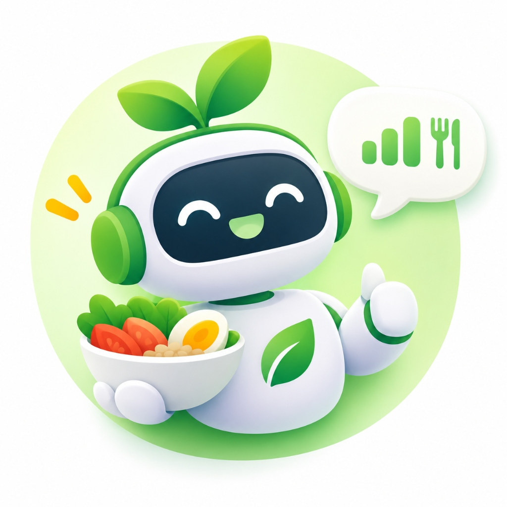

<!doctype html>
<html lang="id"><head><meta charset="utf-8">
<meta name="viewport" content="width=device-width, initial-scale=1, viewport-fit=cover">
<meta name="theme-color" content="#faf8ff">
<title>NutriTrack</title>
<meta name="description" content="NutriTrack: catat makanan, hitung nutrisi, dan pantau target harian.">
<link rel="icon" type="image/png" sizes="192x192" href="/icon-192.png">
<link rel="icon" type="image/png" sizes="64x64" href="/favicon.png">
<link rel="apple-touch-icon" sizes="180x180" href="/apple-touch-icon.png">
<link rel="manifest" href="/manifest.webmanifest">
<meta name="apple-mobile-web-app-capable" content="yes">
<meta name="mobile-web-app-capable" content="yes">
<meta name="apple-mobile-web-app-title" content="NutriTrack">
<meta name="apple-mobile-web-app-status-bar-style" content="default">
<meta name="format-detection" content="telephone=no">
<link href="https://fonts.googleapis.com/css2?family=Plus+Jakarta+Sans:wght@400;600;700;800&display=swap" rel="stylesheet">
<link href="https://fonts.googleapis.com/css2?family=Material+Symbols+Outlined:opsz,wght,FILL,GRAD@20..48,100..700,0..1,-50..200" rel="stylesheet">
<script src="https://cdn.jsdelivr.net/npm/@zxing/library@0.21.3/umd/index.min.js"></script>
<style>
:root{--bg:#faf8ff;--cd:#fff;--tx:#131b2e;--mu:#3c4a42;--pr:#006c49;--pc:#10b981;--ln:#dae2fd;--tk:#f2f3ff;--tk2:#eaedff;--P:#ba1a1a;--C:#e29100;--F:#006c4a;--FI:#6c7a71;--W:#10b981;--nb:#e2e7ff;--nt:#131b2e;--ac:#006c49;--aon:#fff;box-sizing:border-box;padding-top:env(safe-area-inset-top,0px);padding-bottom:env(safe-area-inset-bottom,0px)}
@media(prefers-color-scheme:dark){:root:not([data-theme="light"]){--bg:#0f1424;--cd:#171d30;--tx:#e6e9f5;--mu:#aab4cc;--pr:#4edea3;--ln:#2a3350;--tk:#1e2640;--tk2:#2b365a;--nb:#2b365a;--nt:#e6e9f5;--ac:#10b981;--aon:#032d1d;--P:#ff8f86;--FI:#9aa5bf}}
:root[data-theme="dark"]{--bg:#0f1424;--cd:#171d30;--tx:#e6e9f5;--mu:#aab4cc;--pr:#4edea3;--ln:#2a3350;--tk:#1e2640;--tk2:#2b365a;--nb:#2b365a;--nt:#e6e9f5;--ac:#10b981;--aon:#032d1d;--P:#ff8f86;--FI:#9aa5bf}
html,body{background:var(--bg);color:var(--tx);font-family:'Plus Jakarta Sans',system-ui,sans-serif;font-variant-numeric:tabular-nums}
.card{background:var(--cd);border:0;border-radius:16px;padding:20px;box-shadow:0 1px 3px rgba(15,23,42,.06);transition:box-shadow .2s}.card:hover{box-shadow:0 8px 20px rgba(15,23,42,.07)}
.btn{background:var(--pc);color:#fff;font-weight:600;border-radius:12px;padding:10px 18px;display:inline-flex;gap:6px;align-items:center;box-shadow:0 1px 3px rgba(15,23,42,.1)}.btn:hover{background:#006c49}
.btn:active{transform:scale(.98)}.btn:disabled{opacity:.5}
.gh{border:1px solid var(--ln);border-radius:12px;padding:8px 12px;font-weight:600;font-size:14px}
.inp{background:var(--tk);border:1px solid transparent;border-radius:12px;padding:10px 12px;width:100%;color:var(--tx)}
.inp:focus,button:focus-visible,a:focus-visible{outline:3px solid rgba(16,185,129,.35)}
.mu{color:var(--mu)}.pr{color:var(--pr)}.trk{background:var(--tk);border-radius:9999px;height:8px;overflow:hidden;position:relative}.trk>i{display:block;height:100%;border-radius:9999px;transform-origin:left center;animation:trkLoad .85s cubic-bezier(.16,1,.3,1) forwards;will-change:transform}.trk::after{content:'';position:absolute;inset:0;background:linear-gradient(90deg,transparent,rgba(255,255,255,.35),transparent);transform:translateX(-100%);animation:shimmerGlow 1.2s cubic-bezier(.4,0,.2,1) .15s 1;pointer-events:none}@keyframes trkLoad{0%{transform:scaleX(0);opacity:.3}100%{transform:scaleX(1);opacity:1}}@keyframes shimmerGlow{0%{transform:translateX(-100%);opacity:0}50%{opacity:.6}100%{transform:translateX(200%);opacity:0}}.bn-bar{transform-origin:left center;animation:bnBarLoad .9s cubic-bezier(.16,1,.3,1) forwards;will-change:transform}@keyframes bnBarLoad{0%{transform:scaleX(0);opacity:.25}100%{transform:scaleX(1);opacity:1}}.ring-svg{animation:ringPop .8s cubic-bezier(.16,1,.3,1) forwards;transform-origin:center;will-change:transform,opacity}@keyframes ringPop{0%{opacity:.2;transform:scale(.88) rotate(-15deg)}100%{opacity:1;transform:scale(1) rotate(0deg)}}.donut-svg{animation:donutScale .8s cubic-bezier(.16,1,.3,1) forwards;transform-origin:center}@keyframes donutScale{0%{opacity:.2;transform:scale(.92) rotate(-15deg)}100%{opacity:1;transform:scale(1) rotate(0deg)}}.cup{height:36px;border-radius:8px;display:flex;align-items:center;justify-content:center;transition:transform .2s ease}.cup.cup-filled{animation:cupPop .45s cubic-bezier(.175,.885,.32,1.275) forwards}@keyframes cupPop{0%{transform:scale(.7);opacity:.4}70%{transform:scale(1.08)}100%{transform:scale(1);opacity:1}}@media(prefers-reduced-motion:reduce){.trk>i,.bn-bar,.ring-svg,.donut-svg,.cup.cup-filled{animation:none!important}.trk::after{display:none!important}}
.chip{padding:6px 12px;border-radius:9999px;font-size:13px;font-weight:600;background:var(--tk);white-space:nowrap}.chip.on{background:#7df0c0;color:#00422b}
.nv{display:flex;gap:12px;align-items:center;padding:10px 12px;border-radius:12px;font-weight:600;color:var(--mu)}.nv.on{background:var(--nb);color:var(--nt);font-weight:700}
.bd{font-size:12px;font-weight:700;padding:2px 8px;border-radius:9999px;background:var(--tk)}
table{width:100%;font-size:14px}th{text-align:left;color:var(--mu);font-size:12px;padding:8px}td{padding:10px 8px;border-top:1px solid var(--ln)}
.ms{font-family:'Material Symbols Outlined';font-weight:400;font-style:normal;line-height:1;letter-spacing:normal;text-transform:none;display:inline-block;white-space:nowrap;direction:ltr;-webkit-font-feature-settings:'liga';font-feature-settings:'liga';vertical-align:middle}
.ey{font-size:11px;letter-spacing:.06em;text-transform:uppercase;font-weight:600;color:var(--mu)}
.ic{width:40px;height:40px;border-radius:12px;background:var(--tk2);color:var(--pr);display:flex;align-items:center;justify-content:center;flex-shrink:0}
.row{display:flex;align-items:center;justify-content:space-between;gap:8px;padding:8px;border-radius:12px;background:var(--tk)}.row:hover{background:var(--tk2)}
.ib{padding:6px;border-radius:8px;color:var(--mu)}.ib:hover{color:var(--pr);background:var(--cd)}.ib.dl:hover{color:#ba1a1a;background:#ffdad6}
.addm{display:flex;gap:6px;align-items:center;padding:6px 16px;border-radius:12px;background:var(--tk);color:var(--pr);font-weight:600;font-size:14px}.addm:hover{background:var(--tk2)}
.cp{padding:2px 8px;border-radius:6px}.act{background:#82f5c1;color:#00714e;font-size:12px;font-weight:700;padding:2px 10px;border-radius:9999px;white-space:nowrap;display:inline-block}.pro{background:#82f5c1;color:#00714e;font-size:10px;font-weight:700;padding:1px 6px;border-radius:9999px}
.sq{width:36px;height:36px;border-radius:12px;background:var(--tk);display:flex;align-items:center;justify-content:center}.sq:disabled{opacity:.4}
.chipd{display:flex;align-items:center;gap:8px;padding:6px 16px;border-radius:12px;background:var(--cd);box-shadow:0 1px 3px rgba(15,23,42,.06)}
.dy{display:flex;flex-direction:column;align-items:center;padding:10px 4px;border-radius:12px}.dy:hover:not(:disabled){background:var(--tk)}.dy.on{background:var(--ac);color:var(--aon)}.dy:disabled{opacity:.6}
.dt{display:inline-block;width:6px;height:6px;border-radius:9999px}
.bn{background:rgba(255,255,255,.12);border-radius:12px;padding:10px;min-width:100px;backdrop-filter:blur(8px)}
.cup{height:36px;border-radius:8px;display:flex;align-items:center;justify-content:center}
.ov{position:fixed;inset:0;z-index:100;display:flex;align-items:center;justify-content:center;padding:24px 16px;background:rgba(0,0,0,.45);overscroll-behavior:contain}
*{scrollbar-width:thin;scrollbar-color:rgba(100,116,139,.28) transparent}
::-webkit-scrollbar{width:6px;height:6px}::-webkit-scrollbar-track{background:transparent}::-webkit-scrollbar-thumb{background:rgba(100,116,139,.25);border-radius:9999px}::-webkit-scrollbar-thumb:hover{background:rgba(100,116,139,.55)}::-webkit-scrollbar-corner{background:transparent}
.mm{padding-top:calc(112px + env(safe-area-inset-top,0px))}@media(min-width:768px){.mm{padding-top:96px}}
@media(max-width:767px){.chipd{min-width:0;padding:6px 10px;gap:6px}.chipd h1{font-size:15px}.sq{flex-shrink:0}main [data-a=cpd],main [data-a=qai],main [data-a=openex],main .btn[data-a=add][data-m]{justify-content:center;font-size:12.5px;padding:8px 6px;text-align:center}.fdb-btn{flex:1 1 calc(50% - 4px);justify-content:center;font-size:12.5px;padding:8px 4px;text-align:center;white-space:nowrap}.fdb-add-btn{flex:1 1 100%;justify-content:center}.bn{min-width:0;padding:8px}body{overflow-x:hidden;-webkit-text-size-adjust:100%}button,a{touch-action:manipulation}.inp{font-size:16px;min-width:0}.btn{min-height:44px}.gh,.chip,.addm{min-height:40px;display:inline-flex;align-items:center}.ib{min-height:40px;min-width:40px;display:inline-flex;align-items:center;justify-content:center}.card{padding:16px}table{font-size:13px}
.ov{align-items:flex-end;padding:0}.ov>.card{border-radius:20px 20px 0 0;width:100%;max-width:none!important;max-height:92vh!important;padding-bottom:calc(16px + env(safe-area-inset-bottom,0px))}
.dy span.text-xs{font-size:9.5px}.dy b{font-size:1rem}}
.row>div:first-child{min-width:0}
@media(max-width:767px){.row{flex-wrap:wrap;row-gap:6px}.row>div:first-child{flex:1 1 100%}.row>div:last-child{flex:1 1 100%;justify-content:space-between}}
.ftr{text-align:center;font-size:11px;letter-spacing:.02em;color:var(--mu);opacity:.75;padding:28px 0 4px}
details.dtl>summary{cursor:pointer;font-weight:600;font-size:14px;list-style:none}details.dtl>summary::-webkit-details-marker{display:none}
.sk{background:linear-gradient(90deg,var(--tk),var(--ln),var(--tk));height:14px;border-radius:8px;animation:p 1s infinite}@keyframes p{50%{opacity:.5}}
.bc-box{position:relative;width:100%;max-width:380px;aspect-ratio:4/3;background:#000;border-radius:14px;overflow:hidden;margin:0 auto}
.bc-laser{position:absolute;left:10%;right:10%;height:2px;background:var(--pc);box-shadow:0 0 8px var(--pc);animation:bcScan 2s infinite ease-in-out}
@keyframes bcScan{0%,100%{top:15%}50%{top:85%}}
.bc-corner{position:absolute;width:24px;height:24px;border:3px solid var(--pc);pointer-events:none}
.bc-tl{top:15%;left:15%;border-right:0;border-bottom:0;border-top-left-radius:8px}
.bc-tr{top:15%;right:15%;border-left:0;border-bottom:0;border-top-right-radius:8px}
.bc-bl{bottom:15%;left:15%;border-right:0;border-top:0;border-bottom-left-radius:8px}
.bc-br{bottom:15%;right:15%;border-left:0;border-top:0;border-bottom-right-radius:8px}
.aim-hud-overlay{position:absolute;inset:0;pointer-events:none;display:flex;flex-direction:column;justify-content:space-between;padding:12px;box-sizing:border-box;z-index:10}
.aim-hud-badge{align-self:center;background:rgba(15,23,42,.85);color:#38bdf8;font-size:11px;font-weight:700;padding:4px 12px;border-radius:9999px;border:1px solid rgba(56,189,248,.35);backdrop-filter:blur(6px);display:inline-flex;align-items:center;gap:6px;box-shadow:0 2px 10px rgba(0,0,0,.4);letter-spacing:.02em;transition:all .2s ease}
.aim-pulse-dot{width:7px;height:7px;border-radius:9999px;background:#38bdf8;box-shadow:0 0 8px #38bdf8;animation:aimPulse 1.6s infinite ease-in-out;transition:all .2s ease}
.aim-hud-hint{align-self:center;background:rgba(15,23,42,.85);color:#f1f5f9;font-size:11px;font-weight:500;padding:5px 14px;border-radius:9999px;backdrop-filter:blur(6px);border:1px solid rgba(255,255,255,.15);text-align:center;max-width:92%;box-shadow:0 2px 10px rgba(0,0,0,.4);transition:all .2s ease}
.aim-hud-reticle{position:absolute;top:50%;left:50%;transform:translate(-50%,-50%);width:82%;height:78%;pointer-events:none}
.aim-hud-laser{position:absolute;left:10%;width:80%;height:2px;background:linear-gradient(90deg,transparent,rgba(56,189,248,.9),transparent);box-shadow:0 0 10px #38bdf8;animation:aimScan 2.4s infinite ease-in-out}
@keyframes aimPulse{0%,100%{opacity:1;transform:scale(1)}50%{opacity:.35;transform:scale(.75)}}
@keyframes aimScan{0%{top:16%;opacity:0}20%{opacity:1}80%{opacity:1}100%{top:84%;opacity:0}}
.aim-box-active{animation:aimBoxGlow 1.2s infinite alternate ease-in-out;z-index:25!important}
@keyframes aimBoxGlow{0%{transform:scale(1);box-shadow:0 0 8px currentColor}100%{transform:scale(1.02);box-shadow:0 0 20px currentColor,inset 0 0 10px currentColor}}
.aim-poly{transition:fill-opacity .2s ease,stroke-width .2s ease,filter .2s ease}
.aim-poly:hover{fill-opacity:.55!important;stroke-width:4px!important}
.aim-poly-active{fill-opacity:.62!important;stroke-width:4.5px!important}
@keyframes aimShimmer{0%{transform:translateX(-100%)}100%{transform:translateX(100%)}}
</style><style id="tw">*,:after,:before{--tw-border-spacing-x:0;--tw-border-spacing-y:0;--tw-translate-x:0;--tw-translate-y:0;--tw-rotate:0;--tw-skew-x:0;--tw-skew-y:0;--tw-scale-x:1;--tw-scale-y:1;--tw-pan-x: ;--tw-pan-y: ;--tw-pinch-zoom: ;--tw-scroll-snap-strictness:proximity;--tw-gradient-from-position: ;--tw-gradient-via-position: ;--tw-gradient-to-position: ;--tw-ordinal: ;--tw-slashed-zero: ;--tw-numeric-figure: ;--tw-numeric-spacing: ;--tw-numeric-fraction: ;--tw-ring-inset: ;--tw-ring-offset-width:0px;--tw-ring-offset-color:#fff;--tw-ring-color:rgba(59,130,246,.5);--tw-ring-offset-shadow:0 0 #0000;--tw-ring-shadow:0 0 #0000;--tw-shadow:0 0 #0000;--tw-shadow-colored:0 0 #0000;--tw-blur: ;--tw-brightness: ;--tw-contrast: ;--tw-grayscale: ;--tw-hue-rotate: ;--tw-invert: ;--tw-saturate: ;--tw-sepia: ;--tw-drop-shadow: ;--tw-backdrop-blur: ;--tw-backdrop-brightness: ;--tw-backdrop-contrast: ;--tw-backdrop-grayscale: ;--tw-backdrop-hue-rotate: ;--tw-backdrop-invert: ;--tw-backdrop-opacity: ;--tw-backdrop-saturate: ;--tw-backdrop-sepia: ;--tw-contain-size: ;--tw-contain-layout: ;--tw-contain-paint: ;--tw-contain-style: }::backdrop{--tw-border-spacing-x:0;--tw-border-spacing-y:0;--tw-translate-x:0;--tw-translate-y:0;--tw-rotate:0;--tw-skew-x:0;--tw-skew-y:0;--tw-scale-x:1;--tw-scale-y:1;--tw-pan-x: ;--tw-pan-y: ;--tw-pinch-zoom: ;--tw-scroll-snap-strictness:proximity;--tw-gradient-from-position: ;--tw-gradient-via-position: ;--tw-gradient-to-position: ;--tw-ordinal: ;--tw-slashed-zero: ;--tw-numeric-figure: ;--tw-numeric-spacing: ;--tw-numeric-fraction: ;--tw-ring-inset: ;--tw-ring-offset-width:0px;--tw-ring-offset-color:#fff;--tw-ring-color:rgba(59,130,246,.5);--tw-ring-offset-shadow:0 0 #0000;--tw-ring-shadow:0 0 #0000;--tw-shadow:0 0 #0000;--tw-shadow-colored:0 0 #0000;--tw-blur: ;--tw-brightness: ;--tw-contrast: ;--tw-grayscale: ;--tw-hue-rotate: ;--tw-invert: ;--tw-saturate: ;--tw-sepia: ;--tw-drop-shadow: ;--tw-backdrop-blur: ;--tw-backdrop-brightness: ;--tw-backdrop-contrast: ;--tw-backdrop-grayscale: ;--tw-backdrop-hue-rotate: ;--tw-backdrop-invert: ;--tw-backdrop-opacity: ;--tw-backdrop-saturate: ;--tw-backdrop-sepia: ;--tw-contain-size: ;--tw-contain-layout: ;--tw-contain-paint: ;--tw-contain-style: }/*! tailwindcss v3.4.19 | MIT License | https://tailwindcss.com*/*,:after,:before{box-sizing:border-box;border:0 solid #e5e7eb}:after,:before{--tw-content:""}:host,html{line-height:1.5;-webkit-text-size-adjust:100%;-moz-tab-size:4;-o-tab-size:4;tab-size:4;font-family:ui-sans-serif,system-ui,sans-serif,Apple Color Emoji,Segoe UI Emoji,Segoe UI Symbol,Noto Color Emoji;font-feature-settings:normal;font-variation-settings:normal;-webkit-tap-highlight-color:transparent}body{margin:0;line-height:inherit}hr{height:0;color:inherit;border-top-width:1px}abbr:where([title]){-webkit-text-decoration:underline dotted;text-decoration:underline dotted}h1,h2,h3,h4,h5,h6{font-size:inherit;font-weight:inherit}a{color:inherit;text-decoration:inherit}b,strong{font-weight:bolder}code,kbd,pre,samp{font-family:ui-monospace,SFMono-Regular,Menlo,Monaco,Consolas,Liberation Mono,Courier New,monospace;font-feature-settings:normal;font-variation-settings:normal;font-size:1em}small{font-size:80%}sub,sup{font-size:75%;line-height:0;position:relative;vertical-align:baseline}sub{bottom:-.25em}sup{top:-.5em}table{text-indent:0;border-color:inherit;border-collapse:collapse}button,input,optgroup,select,textarea{font-family:inherit;font-feature-settings:inherit;font-variation-settings:inherit;font-size:100%;font-weight:inherit;line-height:inherit;letter-spacing:inherit;color:inherit;margin:0;padding:0}button,select{text-transform:none}button,input:where([type=button]),input:where([type=reset]),input:where([type=submit]){-webkit-appearance:button;background-color:transparent;background-image:none}:-moz-focusring{outline:auto}:-moz-ui-invalid{box-shadow:none}progress{vertical-align:baseline}::-webkit-inner-spin-button,::-webkit-outer-spin-button{height:auto}[type=search]{-webkit-appearance:textfield;outline-offset:-2px}::-webkit-search-decoration{-webkit-appearance:none}::-webkit-file-upload-button{-webkit-appearance:button;font:inherit}summary{display:list-item}blockquote,dd,dl,figure,h1,h2,h3,h4,h5,h6,hr,p,pre{margin:0}fieldset{margin:0}fieldset,legend{padding:0}menu,ol,ul{list-style:none;margin:0;padding:0}dialog{padding:0}textarea{resize:vertical}input::-moz-placeholder,textarea::-moz-placeholder{opacity:1;color:#9ca3af}input::placeholder,textarea::placeholder{opacity:1;color:#9ca3af}[role=button],button{cursor:pointer}:disabled{cursor:default}audio,canvas,embed,iframe,img,object,svg,video{display:block;vertical-align:middle}img,video{max-width:100%;height:auto}[hidden]:where(:not([hidden=until-found])){display:none}.fixed{position:fixed}.absolute{position:absolute}.relative{position:relative}.inset-0{inset:0}.inset-x-0{left:0;right:0}.inset-y-0{top:0;bottom:0}.bottom-0{bottom:0}.bottom-24{bottom:6rem}.left-0{left:0}.left-1\/2{left:50%}.right-0{right:0}.top-0{top:0}.z-40{z-index:40}.z-50{z-index:50}.col-span-2{grid-column:span 2/span 2}.my-0\.5{margin-top:.125rem;margin-bottom:.125rem}.my-2{margin-top:.5rem;margin-bottom:.5rem}.my-3{margin-top:.75rem;margin-bottom:.75rem}.-mt-3{margin-top:-.75rem}.mb-1{margin-bottom:.25rem}.mb-1\.5{margin-bottom:.375rem}.mb-2{margin-bottom:.5rem}.mb-3{margin-bottom:.75rem}.mb-4{margin-bottom:1rem}.mb-5{margin-bottom:1.25rem}.mb-6{margin-bottom:1.5rem}.mr-2{margin-right:.5rem}.mt-0{margin-top:0}.mt-0\.5{margin-top:.125rem}.mt-1{margin-top:.25rem}.mt-1\.5{margin-top:.375rem}.mt-2{margin-top:.5rem}.mt-3{margin-top:.75rem}.mt-4{margin-top:1rem}.mt-6{margin-top:1.5rem}.block{display:block}.inline-block{display:inline-block}.flex{display:flex}.inline-flex{display:inline-flex}.table{display:table}.grid{display:grid}.hidden{display:none}.h-16{height:4rem}.h-28{height:7rem}.h-32{height:8rem}.h-36{height:9rem}.h-4{height:1rem}.h-full{height:100%}.min-h-screen{min-height:100vh}.w-28{width:7rem}.w-36{width:9rem}.w-4{width:1rem}.w-full{width:100%}.min-w-0{min-width:0}.max-w-2xl{max-width:42rem}.max-w-\[1320px\]{max-width:1320px}.max-w-lg{max-width:32rem}.max-w-sm{max-width:24rem}.flex-1{flex:1 1 0%}.shrink-0{flex-shrink:0}.-translate-x-1\/2{--tw-translate-x:-50%}.-translate-x-1\/2,.transform{transform:translate(var(--tw-translate-x),var(--tw-translate-y)) rotate(var(--tw-rotate)) skewX(var(--tw-skew-x)) skewY(var(--tw-skew-y)) scaleX(var(--tw-scale-x)) scaleY(var(--tw-scale-y))}.cursor-pointer{cursor:pointer}.resize{resize:both}.grid-cols-2{grid-template-columns:repeat(2,minmax(0,1fr))}.grid-cols-3{grid-template-columns:repeat(3,minmax(0,1fr))}.grid-cols-4{grid-template-columns:repeat(4,minmax(0,1fr))}.grid-cols-5{grid-template-columns:repeat(5,minmax(0,1fr))}.grid-cols-6{grid-template-columns:repeat(6,minmax(0,1fr))}.grid-cols-7{grid-template-columns:repeat(7,minmax(0,1fr))}.flex-col{flex-direction:column}.flex-wrap{flex-wrap:wrap}.items-start{align-items:flex-start}.items-end{align-items:flex-end}.items-center{align-items:center}.items-baseline{align-items:baseline}.justify-end{justify-content:flex-end}.justify-center{justify-content:center}.justify-between{justify-content:space-between}.gap-0\.5{gap:.125rem}.gap-1{gap:.25rem}.gap-1\.5{gap:.375rem}.gap-2{gap:.5rem}.gap-3{gap:.75rem}.gap-4{gap:1rem}.gap-5{gap:1.25rem}.gap-6{gap:1.5rem}.gap-x-4{-moz-column-gap:1rem;column-gap:1rem}.gap-y-1{row-gap:.25rem}.space-y-1>:not([hidden])~:not([hidden]){--tw-space-y-reverse:0;margin-top:calc(.25rem*(1 - var(--tw-space-y-reverse)));margin-bottom:calc(.25rem*var(--tw-space-y-reverse))}.space-y-4>:not([hidden])~:not([hidden]){--tw-space-y-reverse:0;margin-top:calc(1rem*(1 - var(--tw-space-y-reverse)));margin-bottom:calc(1rem*var(--tw-space-y-reverse))}.overflow-auto{overflow:auto}.overflow-hidden{overflow:hidden}.overflow-x-auto{overflow-x:auto}.overflow-y-auto{overflow-y:auto}.truncate{overflow:hidden;text-overflow:ellipsis}.truncate,.whitespace-nowrap{white-space:nowrap}.rounded-lg{border-radius:.5rem}.rounded-t-md{border-top-left-radius:.375rem;border-top-right-radius:.375rem}.p-2{padding:.5rem}.p-4{padding:1rem}.p-5{padding:1.25rem}.px-2{padding-left:.5rem;padding-right:.5rem}.px-3{padding-left:.75rem;padding-right:.75rem}.px-4{padding-left:1rem;padding-right:1rem}.px-8{padding-left:2rem;padding-right:2rem}.py-1{padding-top:.25rem;padding-bottom:.25rem}.py-2{padding-top:.5rem;padding-bottom:.5rem}.py-5{padding-top:1.25rem;padding-bottom:1.25rem}.py-8{padding-top:2rem;padding-bottom:2rem}.pb-2{padding-bottom:.5rem}.pb-28{padding-bottom:7rem}.pb-3{padding-bottom:.75rem}.pt-3{padding-top:.75rem}.pt-4{padding-top:1rem}.text-left{text-align:left}.text-center{text-align:center}.text-right{text-align:right}.text-2xl{font-size:1.5rem;line-height:2rem}.text-3xl{font-size:1.875rem;line-height:2.25rem}.text-4xl{font-size:2.25rem;line-height:2.5rem}.text-base{font-size:1rem;line-height:1.5rem}.text-lg{font-size:1.125rem;line-height:1.75rem}.text-sm{font-size:.875rem;line-height:1.25rem}.text-xl{font-size:1.25rem;line-height:1.75rem}.text-xs{font-size:.75rem;line-height:1rem}.font-black{font-weight:900}.font-bold{font-weight:700}.font-extrabold{font-weight:800}.font-medium{font-weight:500}.font-normal{font-weight:400}.font-semibold{font-weight:600}.uppercase{text-transform:uppercase}.tracking-tight{letter-spacing:-.025em}.text-white{--tw-text-opacity:1;color:rgb(255 255 255/var(--tw-text-opacity,1))}.ring{--tw-ring-offset-shadow:var(--tw-ring-inset) 0 0 0 var(--tw-ring-offset-width) var(--tw-ring-offset-color);--tw-ring-shadow:var(--tw-ring-inset) 0 0 0 calc(3px + var(--tw-ring-offset-width)) var(--tw-ring-color);box-shadow:var(--tw-ring-offset-shadow),var(--tw-ring-shadow),var(--tw-shadow,0 0 #0000)}.filter{filter:var(--tw-blur) var(--tw-brightness) var(--tw-contrast) var(--tw-grayscale) var(--tw-hue-rotate) var(--tw-invert) var(--tw-saturate) var(--tw-sepia) var(--tw-drop-shadow)}@media not all and (min-width:768px){.max-md\:w-full{width:100%}}@media (min-width:640px){.sm\:inline{display:inline}.sm\:grid-cols-2{grid-template-columns:repeat(2,minmax(0,1fr))}.sm\:grid-cols-3{grid-template-columns:repeat(3,minmax(0,1fr))}}@media (min-width:768px){.md\:bottom-8{bottom:2rem}.md\:left-\[72px\]{left:72px}.md\:col-span-2{grid-column:span 2/span 2}.md\:ml-\[72px\]{margin-left:72px}.md\:block{display:block}.md\:flex{display:flex}.md\:hidden{display:none}.md\:w-\[72px\]{width:72px}.md\:grid-cols-2{grid-template-columns:repeat(2,minmax(0,1fr))}.md\:grid-cols-4{grid-template-columns:repeat(4,minmax(0,1fr))}.md\:flex-nowrap{flex-wrap:nowrap}.md\:px-8{padding-left:2rem;padding-right:2rem}.md\:pb-8{padding-bottom:2rem}.md\:text-3xl{font-size:1.875rem;line-height:2.25rem}}@media (min-width:1024px){.lg\:sticky{position:sticky}.lg\:left-64{left:16rem}.lg\:top-24{top:6rem}.lg\:col-span-2{grid-column:span 2/span 2}.lg\:col-span-3{grid-column:span 3/span 3}.lg\:col-span-4{grid-column:span 4/span 4}.lg\:col-span-8{grid-column:span 8/span 8}.lg\:ml-64{margin-left:16rem}.lg\:inline{display:inline}.lg\:flex{display:flex}.lg\:w-64{width:16rem}.lg\:grid-cols-12{grid-template-columns:repeat(12,minmax(0,1fr))}.lg\:grid-cols-2{grid-template-columns:repeat(2,minmax(0,1fr))}.lg\:grid-cols-3{grid-template-columns:repeat(3,minmax(0,1fr))}.lg\:grid-cols-5{grid-template-columns:repeat(5,minmax(0,1fr))}.lg\:grid-cols-7{grid-template-columns:repeat(7,minmax(0,1fr))}.lg\:flex-row{flex-direction:row}.lg\:items-center{align-items:center}.lg\:justify-between{justify-content:space-between}}@media (min-width:1280px){.xl\:flex{display:flex}}</style>
</head>
<body><div id="app"></div><div id="m"></div><div id="t"></div>
<script>
const $=s=>document.querySelector(s),iso=d=>d.toLocaleDateString('sv-SE'),td=iso(new Date());
const addD=(s,n)=>{const d=new Date(s+'T12:00');d.setDate(d.getDate()+n);return iso(d)};
const fD=s=>new Date(s+'T12:00').toLocaleDateString(curLoc(),{day:'2-digit',month:'long',year:'numeric'});
const r0=Math.round,n0=x=>Number.isFinite(x)?r0(x).toLocaleString('id-ID'):'0',r1=x=>Number.isFinite(x)?(Math.round(x*10)/10).toLocaleString('id-ID',{minimumFractionDigits:1,maximumFractionDigits:1}):'0,0';
const FD=[
['nasi','Nasi Putih','Makanan',130,2.4,28.6,.2,.4,.1,1,{centong:100,mangkuk:160,piring:200,bungkus:250},1,'TKPI','Terverifikasi'],
['nasim','Nasi Merah','Makanan',112,2.3,23.5,.8,1.8,.4,5,{centong:100,mangkuk:160,piring:200},1,'TKPI','Terverifikasi'],
['nasiu','Nasi Uduk','Makanan',160,3,27.5,4.2,.5,.2,180,{centong:100,piring:200,bungkus:250},1,'TKPI','Terverifikasi'],
['nasik','Nasi Kuning','Makanan',150,2.8,26,3.8,.5,.2,160,{centong:100,piring:200,bungkus:250},1,'TKPI','Terverifikasi'],
['lontong','Lontong / Ketupat','Makanan',144,2.7,32.4,.3,.4,.1,2,{potong:50,buah:150},1,'TKPI','Terverifikasi'],
['bubur','Bubur Ayam Komplit','Makanan',120,6,18,3,.5,.5,320,{mangkuk:250,porsi:300},1,'TKPI','Terverifikasi'],
['kentang','Kentang Rebus','Makanan',87,1.9,20.1,.1,1.8,.8,4,{potong:50,buah:150},1,'USDA','Terverifikasi'],
['singkong','Singkong Rebus','Makanan',154,1,36.8,.3,1.5,1.2,2,{potong:100},1,'TKPI','Terverifikasi'],
['ubij','Ubi Jalar Rebus','Makanan',100,1.4,23.2,.3,3,4.2,15,{potong:60,buah:120},1,'TKPI','Terverifikasi'],
['roti','Roti Tawar Putih','Makanan Kemasan',265,9,49,3.2,2.7,5,491,{lembar:28},null,'TKPI','Terverifikasi'],
['rotig','Roti Gandum Utuh','Makanan Kemasan',247,13,41.3,3.4,7,4.3,400,{lembar:32},null,'USDA','Terverifikasi'],
['migor','Mi Goreng Instan (matang)','Makanan Cepat Saji',220,4.5,28,10,1.5,2.5,580,{bungkus:85,porsi:150},null,'TKPI','Terverifikasi'],
['mikuah','Mi Kuah Instan (matang)','Makanan Cepat Saji',190,4,26,8,1.2,1.8,720,{bungkus:85,mangkuk:200},null,'TKPI','Terverifikasi'],
['bihun','Bihun Goreng','Makanan',175,3,30,4.8,1,1.5,350,{mangkuk:140,piring:180},null,'TKPI','Terverifikasi'],
['oat','Oatmeal (matang)','Makanan',71,2.5,12,1.5,1.7,.3,49,{sdm:15,mangkuk:230},1,'USDA','Terverifikasi'],
['ayam','Dada Ayam Rebus / Kukus','Protein',165,31,0,3.6,0,0,74,{potong:85,dada:170},null,'USDA','Terverifikasi'],
['ayampaha','Paha Ayam Bakar','Protein',210,24,0,12.5,0,0,85,{potong:100},null,'TKPI','Terverifikasi'],
['ayamg','Ayam Goreng Tradisional','Makanan Cepat Saji',260,24,8,14,.3,0,430,{potong:100},null,'TKPI','Terverifikasi'],
['rendang','Daging Sapi Rendang','Makanan',230,22,6,13,1,1.5,450,{potong:50,porsi:100},null,'TKPI','Terverifikasi'],
['semur','Daging Sapi Semur / Empal','Makanan',215,23,5,11,.5,3,380,{potong:50},null,'TKPI','Terverifikasi'],
['bakso','Bakso Sapi Kuah','Makanan',202,16,14,9,.8,.5,650,{butir:20,mangkuk:150},null,'TKPI','Terverifikasi'],
['telur','Telur Ayam Rebus','Protein',155,12.6,1.1,10.6,0,1.1,124,{butir:50},null,'USDA','Terverifikasi'],
['telurd','Telur Dadar','Protein',190,11,2,15,.2,.5,250,{butir:60},null,'TKPI','Terverifikasi'],
['telurc','Telur Ceplok / Mata Sapi','Protein',200,12,1,16.5,0,.5,180,{butir:55},null,'TKPI','Terverifikasi'],
['telura','Telur Asin Rebus','Protein',180,13.5,1.5,13.5,0,.8,1200,{butir:65},null,'TKPI','Terverifikasi'],
['lele','Ikan Lele Goreng','Protein',240,18,5,16,0,0,210,{ekor:100},null,'TKPI','Terverifikasi'],
['kembung','Ikan Kembung Goreng','Protein',210,21,2,13,0,0,190,{ekor:80},null,'TKPI','Terverifikasi'],
['nila','Ikan Nila Bakar','Protein',130,26,0,3,0,0,60,{ekor:150,potong:100},null,'TKPI','Terverifikasi'],
['tongkol','Ikan Tongkol Balado','Protein',180,22,4,8.5,.8,1.2,380,{potong:60},null,'TKPI','Terverifikasi'],
['bandeng','Ikan Bandeng Presto Goreng','Protein',220,20,3,14,0,0,310,{potong:80},null,'TKPI','Terverifikasi'],
['udang','Udang Rebus / Tumis','Protein',105,21,1,1.5,0,0,180,{ekor:15,porsi:100},null,'TKPI','Terverifikasi'],
['cumi','Cumi-cumi Tumis','Protein',125,18,3.5,4,0,0,260,{porsi:100},null,'TKPI','Terverifikasi'],
['tempe','Tempe Kedelai','Protein',192,20.3,7.6,10.8,2.8,0,9,{potong:25,papan:250},null,'TKPI','Terverifikasi'],
['tempeg','Tempe Goreng Tepung / Mendoan','Protein',230,14,16,13,2,.5,280,{potong:35,lembar:40},null,'TKPI','Terverifikasi'],
['tempeb','Tempe Bacem','Protein',180,16,15,6,2.2,8,290,{potong:40},null,'TKPI','Terverifikasi'],
['tempeo','Tempe Orek / Kering Manis','Protein',245,17,19,11,2.5,10,340,{sdm:15,porsi:50},null,'TKPI','Terverifikasi'],
['tahu','Tahu Putih Kukus','Protein',76,8,1.9,4.8,.3,.6,7,{potong:80,buah:100},null,'TKPI','Terverifikasi'],
['tahug','Tahu Goreng','Protein',135,11,4,8.5,.6,.5,120,{potong:50},null,'TKPI','Terverifikasi'],
['tahub','Tahu Bacem','Protein',110,9,12,3,.5,7,280,{potong:60},null,'TKPI','Terverifikasi'],
['bayam','Sayur Bayam Bening','Sayuran',28,2,4.5,.3,1.5,.4,180,{mangkuk:150},null,'TKPI','Terverifikasi'],
['sayurasem','Sayur Asem Komplit','Sayuran',35,1.8,6.5,.5,1.8,2,260,{mangkuk:200},null,'TKPI','Terverifikasi'],
['sayurlodeh','Sayur Lodeh Santan','Sayuran',75,2.5,7,4.5,1.8,2,320,{mangkuk:200},null,'TKPI','Terverifikasi'],
['kangkung','Tumis Kangkung Terasi','Sayuran',60,2.8,4,3.8,2,.5,340,{porsi:100,piring:150},null,'TKPI','Terverifikasi'],
['capcay','Capcay Sayur Kuah','Sayuran',55,3,6.5,2,2.2,1.8,290,{porsi:150},null,'TKPI','Terverifikasi'],
['brokoli','Brokoli Kukus','Sayuran',35,2.4,7.2,.4,3.3,1.4,41,{mangkuk:90,porsi:100},null,'USDA','Terverifikasi'],
['wortel','Wortel Rebus','Sayuran',35,.8,8,.2,2.8,3.5,58,{buah:80,mangkuk:100},null,'TKPI','Terverifikasi'],
['timun','Timun Segar Lalap','Sayuran',15,.7,3,.1,.5,1.5,2,{potong:20,buah:100},null,'TKPI','Terverifikasi'],
['pisang','Pisang Ambon / Cavendish','Buah',89,1.1,22.8,.3,2.6,12.2,1,{buah:118},null,'TKPI','Terverifikasi'],
['pepaya','Pepaya Matang','Buah',39,.6,9.8,.1,1.8,7.8,3,{potong:100,mangkuk:150},null,'TKPI','Terverifikasi'],
['jeruk','Jeruk Manis Segar','Buah',47,.9,11.8,.1,2.4,9.4,1,{buah:120},null,'TKPI','Terverifikasi'],
['mangga','Mangga Harum Manis','Buah',65,.7,16,.3,1.6,13.5,2,{potong:100,buah:200},null,'TKPI','Terverifikasi'],
['apel','Apel Fuji Segar','Buah',52,.3,13.8,.2,2.4,10.4,1,{buah:182},null,'USDA','Terverifikasi'],
['semangka','Semangka Merah','Buah',30,.6,7.6,.2,.4,6.2,1,{potong:150},null,'TKPI','Terverifikasi'],
['alpukat','Alpukat Mentega','Buah',160,2,8.5,14.7,6.7,.7,7,{setengah:75,buah:150},null,'TKPI','Terverifikasi'],
['gadogado','Gado-Gado Bumbu Kacang','Makanan',145,6.5,16,6.5,3,4,380,{piring:250,porsi:300},null,'TKPI','Terverifikasi'],
['ketoprak','Ketoprak Jakarta','Makanan',160,6,21,6,2.5,4.5,390,{piring:250},null,'TKPI','Terverifikasi'],
['sateayam','Sate Ayam Bumbu Kacang','Makanan',220,20,8,12,1.5,3.5,380,{tusuk:15,porsi:150},null,'TKPI','Terverifikasi'],
['siomay','Siomay Bandung Ikan','Makanan',165,8,18,6.8,1.2,2.5,420,{buah:35,porsi:180},null,'TKPI','Terverifikasi'],
['pempek','Pempek Kapal Selam + Cuko','Makanan',180,10,24,4.5,.8,6,550,{buah:150},null,'TKPI','Terverifikasi'],
['kerupukp','Kerupuk Putih / Kaleng','Camilan',480,1.5,68,22,.5,.5,520,{buah:15,bungkus:30},null,'TKPI','Terverifikasi'],
['kerupuku','Kerupuk Udang Goreng','Camilan',510,8,62,25,.5,.5,650,{lembar:10},null,'TKPI','Terverifikasi'],
['sambalt','Sambal Terasi Matang','Makanan',110,3,12,5.5,2.5,4,1100,{sdt:5,sdm:15},null,'TKPI','Terverifikasi'],
['sambalb','Sambal Bawang','Makanan',150,2,8,12,2,2.5,850,{sdt:5,sdm:15},null,'TKPI','Terverifikasi'],
['bumbukacang','Bumbu Kacang Siap Pakai','Makanan',280,10,22,17,3.5,8,480,{sdm:20},null,'TKPI','Terverifikasi'],
['minyak','Minyak Kelapa Sawit','Makanan',884,0,0,100,0,0,0,{sdt:5,sdm:14},.92,'TKPI','Terverifikasi'],
['olive','Minyak Zaitun (Olive Oil)','Makanan',884,0,0,100,0,0,2,{sdt:5,sdm:14},.92,'USDA','Terverifikasi'],
['kecap','Kecap Manis Tradisional','Makanan',250,2,58,0,0,52,2400,{sdt:6,sdm:18},1.2,'TKPI','Terverifikasi'],
['air','Air Putih','Minuman',0,0,0,0,0,0,2,{gelas:240,botol:600},1,'USDA','Terverifikasi'],
['teht','Teh Tawar Hangat / Dingin','Minuman',1,0,.3,0,0,0,3,{cangkir:150,gelas:240},1,'TKPI','Terverifikasi'],
['tehm','Teh Manis','Minuman',65,0,16,0,0,15.5,4,{cangkir:150,gelas:240},1.04,'TKPI','Terverifikasi'],
['kopih','Kopi Hitam Tawar','Minuman',2,.3,0,0,0,0,5,{cangkir:150,gelas:240},1,'USDA','Terverifikasi'],
['kopi','Kopi Susu Tradisional','Minuman',55,1.6,7,2.2,0,6.5,22,{cangkir:150,gelas:240},1.02,'TKPI','Terverifikasi'],
['susu','Susu Sapi Segar / UHT','Minuman',61,3.2,4.8,3.3,0,5.1,43,{kotak:200,gelas:240},1.03,'USDA','Terverifikasi'],
['esjeruk','Es Jeruk Manis Peras','Minuman',75,.6,18,.1,.5,16.5,3,{gelas:250},1.05,'TKPI','Terverifikasi']
].map(a=>({id:a[0],n:a[1],cat:a[2],k:a[3],p:a[4],c:a[5],f:a[6],fi:a[7],su:a[8],na:a[9],s:a[10],d:a[11],src:a[12],st:a[13]}));
const MK=[['fe','Zat Besi','mg'],['ca','Kalsium','mg'],['zn','Seng','mg'],['mg','Magnesium','mg'],['k','Kalium','mg'],['va','Vitamin A','µg RAE'],['vd','Vitamin D','µg'],['ve','Vitamin E','mg'],['vk','Vitamin K','µg'],['vc','Vitamin C','mg'],['b12','Vitamin B12','µg'],['fo','Folat','µg DFE']],
MAP=[['fe','besi'],['fh','besi_heme_persen'],['ca','kalsium'],['zn','seng'],['mg','magnesium'],['k','kalium'],['va','vit_a'],['vd','vit_d'],['ve','vit_e'],['vk','vit_k'],['vc','vit_c'],['b12','vit_b12'],['fo','folat']];
/* per 100 g: fe,fh(% heme),ca,zn,mg,k,va,vd,ve,vk,vc,b12,fo, sumber protein, fitat, oksalat, polifenol. Nilai perkiraan dari literatur gizi umum, belum diverifikasi. */
const MI0={
nasi:[.2,0,10,.5,12,35,0,0,.04,0,0,0,3,'nabati','rendah','rendah',0],
nasim:[.5,0,10,.6,44,79,0,0,.1,.6,0,0,4,'nabati','tinggi','rendah',0],
nasiu:[.3,0,15,.6,18,55,0,0,.2,0,0,0,4,'nabati','rendah','rendah',0],
nasik:[.4,0,14,.5,16,50,0,0,.2,0,0,0,4,'nabati','rendah','rendah',0],
lontong:[.2,0,10,.5,12,35,0,0,.04,0,0,0,3,'nabati','rendah','rendah',0],
bubur:[.6,25,20,.8,18,120,10,.1,.3,.5,1,.15,6,'campuran','rendah','rendah',0],
kentang:[.8,0,12,.3,23,379,1,0,.05,1.9,13,0,15,'nabati','rendah','rendah',0],
singkong:[.3,0,33,.3,21,271,1,0,.19,1.9,20.6,0,27,'nabati','rendah','rendah',0],
ubij:[.6,0,30,.3,25,337,709,0,.26,1.8,2.4,0,11,'nabati','rendah','rendah',0],
roti:[2.5,0,140,.7,25,115,0,0,.2,3,0,0,80,'nabati','sedang','rendah',0],
rotig:[2.8,0,161,1.8,82,254,0,0,.4,4,0,0,50,'nabati','tinggi','rendah',0],
migor:[1.2,0,20,.5,15,80,0,0,.8,1,0,0,25,'nabati','rendah','rendah',0],
mikuah:[1,0,18,.4,12,70,0,0,.6,1,0,0,20,'nabati','rendah','rendah',0],
bihun:[.8,0,25,.4,10,60,5,0,.3,.5,0,0,8,'nabati','rendah','rendah',0],
oat:[.9,0,18,.6,27,70,0,0,.1,.4,0,0,14,'nabati','tinggi','rendah',0],
ayam:[1,40,15,1,29,256,6,.1,.27,.3,0,.34,4,'hewani','rendah','rendah',0],
ayampaha:[1.2,45,12,2,24,230,10,.1,.3,.5,0,.4,6,'hewani','rendah','rendah',0],
ayamg:[1.3,35,15,1.5,22,210,20,.2,1,5,0,.4,10,'hewani','rendah','rendah',0],
rendang:[2.8,65,30,4.5,25,320,12,.1,.5,1.2,0,1.8,12,'hewani','rendah','rendah',0],
semur:[2.5,65,25,4.2,22,290,8,.1,.4,.8,0,1.6,10,'hewani','rendah','rendah',0],
bakso:[1.8,50,45,2.8,20,180,5,.1,.3,.4,0,.9,8,'hewani','rendah','rendah',0],
telur:[1.2,0,50,1.05,10,126,160,2.2,1,.3,0,1.1,44,'hewani','rendah','rendah',0],
telurd:[1.3,0,55,1.1,11,135,170,2,1.2,2,0,1,42,'hewani','rendah','rendah',0],
telurc:[1.2,0,52,1.1,10,130,165,2.1,1.3,1.8,0,1.05,43,'hewani','rendah','rendah',0],
telura:[2.5,0,80,1.4,15,160,210,2.5,1.2,.5,0,1.5,55,'hewani','rendah','rendah',0],
lele:[1.1,50,25,.9,21,310,15,4,.7,.5,0,2.2,12,'hewani','rendah','rendah',0],
kembung:[1.8,55,35,1.2,30,360,25,5.2,1.1,.8,0,4.5,15,'hewani','rendah','rendah',0],
nila:[.8,50,20,.6,28,380,10,3.1,.5,.3,0,1.8,8,'hewani','rendah','rendah',0],
tongkol:[1.5,60,28,1.1,26,340,20,4.5,.8,1.2,2,3.8,10,'hewani','rendah','rendah',0],
bandeng:[1.9,50,120,1.3,32,280,18,3.5,.9,.6,0,3.2,14,'hewani','rendah','rendah',0],
udang:[2.2,45,75,1.5,35,220,15,.2,1.2,.2,2,1.2,8,'hewani','rendah','rendah',0],
cumi:[1,40,40,1.6,38,260,12,.2,1.4,.3,4,1.4,6,'hewani','rendah','rendah',0],
tempe:[2.7,0,111,1.1,81,412,0,0,.1,0,0,.1,24,'nabati','sedang','rendah',0],
tempeg:[2,0,90,1,65,340,5,0,.8,1.5,0,.1,20,'nabati','sedang','rendah',0],
tempeb:[2.2,0,95,1,70,360,0,0,.2,0,0,.1,22,'nabati','sedang','rendah',0],
tempeo:[2.4,0,100,1,75,380,0,0,.4,.2,0,.1,23,'nabati','sedang','rendah',0],
tahu:[2.7,0,350,1.6,30,121,0,0,0,0,0,0,15,'nabati','sedang','rendah',0],
tahug:[2.3,0,280,1.4,28,110,5,0,.6,1,0,0,14,'nabati','sedang','rendah',0],
tahub:[2.1,0,260,1.2,26,115,0,0,.1,0,0,0,13,'nabati','sedang','rendah',0],
bayam:[2.1,0,95,.5,45,380,320,0,1.5,380,25,0,90,'nabati','rendah','tinggi',0],
sayurasem:[.9,0,45,.4,25,190,80,0,.5,25,15,0,35,'nabati','sedang','rendah',0],
sayurlodeh:[1.1,0,55,.5,28,210,70,0,.4,20,10,0,30,'nabati','sedang','rendah',0],
kangkung:[1.8,0,70,.6,32,280,190,0,.8,120,20,0,50,'nabati','rendah','rendah',0],
capcay:[1,0,48,.5,22,240,110,0,.7,85,35,0,45,'nabati','rendah','rendah',0],
brokoli:[.7,0,40,.6,21,293,77,0,1.5,141,65,0,108,'nabati','rendah','rendah',0],
wortel:[.3,0,30,.2,12,235,835,0,.7,13,3.6,0,14,'nabati','rendah','rendah',0],
timun:[.3,0,16,.2,13,147,5,0,.03,16,2.8,0,7,'nabati','rendah','rendah',0],
pisang:[.26,0,5,.15,27,358,3,0,.1,.5,8.7,0,20,'nabati','rendah','rendah',0],
pepaya:[.4,0,24,.1,10,257,47,0,.3,2.6,62,0,38,'nabati','rendah','rendah',0],
jeruk:[.2,0,40,.1,10,181,11,0,.2,0,53.2,0,30,'nabati','rendah','rendah',0],
mangga:[.3,0,15,.1,14,168,54,0,.9,4.2,36.4,0,43,'nabati','rendah','rendah',0],
apel:[.12,0,6,.04,5,107,3,0,.18,2.2,4.6,0,3,'nabati','rendah','rendah',0],
semangka:[.24,0,7,.1,10,112,28,0,.05,.1,8.1,0,3,'nabati','rendah','rendah',0],
alpukat:[.6,0,12,.6,29,485,7,0,2.1,21,10,0,81,'nabati','rendah','rendah',0],
gadogado:[1.8,0,85,1.2,45,310,75,0,1.5,40,18,0,55,'nabati','sedang','rendah',0],
ketoprak:[1.6,0,75,1,38,280,20,0,1.2,25,12,0,45,'nabati','sedang','rendah',0],
sateayam:[1.6,40,35,1.4,32,280,15,.1,1,1.5,0,.3,15,'campuran','rendah','rendah',0],
siomay:[1.2,35,45,.9,24,210,25,.8,.8,5,4,1,18,'campuran','rendah','rendah',0],
pempek:[1.4,40,40,1,22,190,60,1,.6,1,1,1.2,20,'campuran','rendah','rendah',0],
kerupukp:[.5,0,20,.2,8,45,0,0,1.2,2,0,0,5,'nabati','rendah','rendah',0],
kerupuku:[1,30,45,.5,12,80,5,0,1.5,3,0,.2,8,'campuran','rendah','rendah',0],
sambalt:[1.2,20,60,.5,20,240,180,0,.8,15,30,.3,18,'campuran','rendah','rendah',0],
sambalb:[.8,0,30,.4,16,210,150,0,1.5,10,25,0,15,'nabati','rendah','rendah',0],
bumbukacang:[1.4,0,45,1.2,60,340,10,0,2.5,2,2,0,40,'nabati','sedang','rendah',0],
minyak:[0,0,0,0,0,0,0,0,15.9,8,0,0,0,null,'rendah','rendah',0],
olive:[.6,0,1,0,0,1,0,0,14.4,60.2,0,0,0,null,'rendah','rendah',0],
kecap:[1.4,0,20,.3,20,100,0,0,0,0,0,0,0,'nabati','rendah','rendah',0],
air:[0,0,0,0,0,0,0,0,0,0,0,0,0,null,'rendah','rendah',0],
teht:[.02,0,0,0,3,37,0,0,0,0,0,0,1,null,'rendah','rendah',1],
tehm:[.02,0,0,0,3,37,0,0,0,0,0,0,1,null,'rendah','rendah',1],
kopih:[.05,0,4,.05,7,116,0,0,0,0,0,0,2,null,'rendah','rendah',1],
kopi:[.1,0,45,.2,12,120,5,0,.05,.1,0,.2,3,'campuran','rendah','rendah',1],
susu:[.03,0,113,.37,10,132,46,1,.07,.3,0,.45,5,'hewani','rendah','rendah',0],
esjeruk:[.2,0,25,.1,8,140,10,0,.1,0,42,0,15,'nabati','rendah','rendah',0]
};
FD.forEach(f=>{const a=MI0[f.id];if(a){f.mi={fe:a[0],fh:a[1],ca:a[2],zn:a[3],mg:a[4],k:a[5],va:a[6],vd:a[7],ve:a[8],vk:a[9],vc:a[10],b12:a[11],fo:a[12]};f.ab={pq:a[13],ph:a[14],ox:a[15],pp:!!a[16]}}});
const MIC={ayam:{'Kalium':'256 mg','Zat Besi':'1 mg','Vitamin B3':'13,7 mg','Selenium':'27,6 mcg'}};
const LANGS=[['id','Bahasa Indonesia','\uD83C\uDDEE\uD83C\uDDDE'],['en','English','\uD83C\uDDEC\uD83C\uDDE7'],['ms','Bahasa Melayu','\uD83C\uDDF2\uD83C\uDDFE']];
const curLang=()=>(S&&S.set&&S.set.lang)||'id';
const curLoc=()=>{const l=curLang();return l=='en'?'en-US':l=='ms'?'ms-MY':'id-ID'};
const I18N={
id:{
dash:'Dashboard',journal:'Jurnal Makanan',foods:'Database Makanan',rec:'Resep Makanan',rep:'Laporan Nutrisi',
wt:'Pelacak Berat',wat:'Pelacak Air',goals:'Target & Sasaran',profile:'Profil',set:'Pengaturan',
weekly:'Analisis Mingguan',monthly:'Analisis Bulanan',
mb:'Sarapan',ml:'Makan Siang',ms:'Camilan',md:'Makan Malam',
pagi:'Pagi',siang:'Siang',sore:'Sore',malam:'Malam',welcome:'Selamat',today:'Hari ini',
streak:'Beruntun',day:'hari',targetKal:'Target Kalori',dailyBudget:'Anggaran Energi',
rem:'Sisa',over:'Melebihi',ofTarget:'dari target',macroRatio:'Rasio Makro',
prot:'Protein',carb:'Karbohidrat',fat:'Lemak',fib:'Serat',sug:'Gula',sod:'Natrium',
water:'Air',hydration:'Hidrasi Harian',todayFood:'Makanan Hari Ini',
fav5:'5 Makanan Terfavorit',thisWk:'Minggu Ini',lastWk:'Minggu Lalu',
addFood:'Tambah Makanan',quickScan:'Pindai Cepat',copyPrev:'Salin Hari Sebelumnya',
active:'Aktif',noFoodToday:'Belum ada makanan.',logFirst:'Catat makanan pertama Anda di Food Journal untuk melihat wawasan.',
gLose:'Menurunkan Berat Badan',gKeep:'Menjaga Berat Badan',gGain:'Menaikkan Berat Badan',gCustom:'Kustom',
actSed:'Sedentari',actLight:'Aktivitas Ringan',actMod:'Aktivitas Sedang',actVact:'Sangat Aktif',actExt:'Ekstrem Aktif',
save:'Simpan',cancel:'Batal',delete:'Hapus',edit:'Ubah',close:'Tutup',search:'Cari makanan atau minuman...',
portion:'Porsi',cal:'Kalori',brand:'Merek',source:'Sumber',status:'Status',verified:'Terverifikasi',
unverified:'Belum diverifikasi',estimated:'Estimasi',homemade:'Buatan sendiri',
saveTarget:'Simpan Target',autoRecalc:'Kembalikan Semua ke Otomatis',
langTitle:'Bahasa (Language)',langDesc:'Pilih bahasa tampilan antarmuka aplikasi.',
themeTitle:'Warna Dasar',themeLight:'Putih',themeDark:'Biru Gelap',themeAuto:'Ikuti Perangkat',
unitTitle:'Preferensi Satuan',unitMetric:'Metrik',unitImperial:'Imperial',
notifTitle:'Pengaturan Notifikasi',nRemEat:'Pengingat mencatat makan',nRemDrink:'Pengingat minum air',nRemWk:'Ringkasan mingguan',
backupTitle:'Cadangan dan Pemindahan Data',export:'Ekspor',import:'Impor',
signOut:'Keluar',resetData:'Reset Data',
scanBarcode:'Pindai Barcode',scanTip:'Arahkan kamera ke barcode kemasan. Pastikan pencahayaan cukup dan barcode tidak terpotong.',
manualBarcode:'Atau ketik barcode manual',typeBarcodeFirst:'Ketik nomor barcode terlebih dahulu',
searchingFood:'Mencari Data Makanan...',confirmFoodData:'Konfirmasi Data Makanan',
productName:'Nama Produk',foodName:'Nama Makanan',nutritionPer100g:'Nilai Nutrisi (per 100 g)',
saveAndJournal:'Simpan & Lanjut ke Jurnal',saveItem:'Simpan Item',saveChanges:'Simpan Perubahan',
addToMeal:'Tambahkan ke Waktu Makan',addTo:'Tambah ke',fromDb:'Dari Database',manualInput:'Input Manual',
advice:'Anjuran',macroBreakdown:'Rincian Makro',copyMeal:'Salin',template:'Template',useTemplate:'Pakai Template',
personalJournal:'Catatan Nutrisi Pribadi',dailyQuota:'Status Jatah Harian',target:'Target',planned:'Terencana',
history:'Riwayat',daily:'Harian',yearly:'Tahunan',addWeight:'Tambah Berat Badan',startWeight:'Berat Awal',
curWeight:'Berat Saat Ini',weightChange:'Perubahan Berat',weightFluct:'Naik Turun Berat Badan',
allHistory:'Riwayat Semua Input',date:'Tanggal',weight:'Berat',difference:'Selisih',
importData:'Impor Data',exportMaster:'Ekspor Master Data',addFoodItem:'Add New Food',cat:'Kategori',
all:'Semua',recent:'Terakhir',frequent:'Sering',favorite:'Favorit',change:'Ganti',amount:'Jumlah',unit:'Satuan',
actualGram:'Berat sebenarnya (g, opsional)',calcTarget:'Hitung dari target',calc:'Hitung',nutritionDetails:'Rincian Nutrisi',
weeklyTrend:'Tren Kalori Mingguan',macroDist:'Distribusi Makro',nutrInsight:'Wawasan Nutrisi',eatingHabits:'Kebiasaan Makan',
fluidBalance:'Keseimbangan Cairan',hydrationTracker:'Pelacak Hidrasi',macroMicroTarget:'Target Makro dan Mikro',
prevDay:'Hari Sebelumnya',nextDay:'Hari Berikutnya',back:'Kembali',info:'Informasi',micronutrients:'Mikronutrien',
addPhoto:'Tambah Gambar',changePhoto:'Ganti Gambar',portionSize:'Ukuran Porsi',personalData:'Data Pribadi',
name:'Nama',age:'Usia (tahun)',height:'Tinggi Badan (cm)',weightKg:'Berat Badan (kg)',gender:'Jenis Kelamin',
male:'Laki-laki',female:'Perempuan',diet:'Pola Makan',changePw:'Ubah Kata Sandi',newPw:'Kata Sandi Baru',
confirmPw:'Konfirmasi Kata Sandi Baru',savePw:'Simpan Kata Sandi',account:'Akun',ofTodayTarget:'dari target hari ini',
period:'Periode',noLogsPeriod:'Belum ada catatan pada periode ini.',maxLimit:'batas maks',dailyTarget:'Target Harian'
},
en:{
dash:'Dashboard',journal:'Food Journal',foods:'Food Database',rec:'Recipes',rep:'Nutrition Reports',
wt:'Weight Tracking',wat:'Water Tracking',goals:'Goals & Targets',profile:'Profile',set:'Settings',
weekly:'Weekly Analysis',monthly:'Monthly Analysis',
mb:'Breakfast',ml:'Lunch',ms:'Snack',md:'Dinner',
pagi:'Morning',siang:'Afternoon',sore:'Evening',malam:'Evening',welcome:'Good',today:'Today',
streak:'Streak',day:'days',targetKal:'Calorie Target',dailyBudget:'Energy Budget',
rem:'Remaining',over:'Over target by',ofTarget:'of target',macroRatio:'Macro Ratio',
prot:'Protein',carb:'Carbohydrates',fat:'Fat',fib:'Fiber',sug:'Sugar',sod:'Sodium',
water:'Water',hydration:'Daily Hydration',todayFood:"Today's Meals",
fav5:'Top 5 Favorite Foods',thisWk:'This Week',lastWk:'Last Week',
addFood:'Add Food',quickScan:'Quick Scan',copyPrev:'Copy Previous Day',
active:'Active',noFoodToday:'No food logged yet.',logFirst:'Log your first food in Food Journal to see nutritional insights.',
gLose:'Lose Weight',gKeep:'Maintain Weight',gGain:'Gain Weight',gCustom:'Custom',
actSed:'Sedentary',actLight:'Lightly Active',actMod:'Moderately Active',actVact:'Very Active',actExt:'Extremely Active',
save:'Save',cancel:'Cancel',delete:'Delete',edit:'Edit',close:'Close',search:'Search food or drink...',
portion:'Portion',cal:'Calories',brand:'Brand',source:'Source',status:'Status',verified:'Verified',
unverified:'Unverified',estimated:'Estimated',homemade:'Homemade',
saveTarget:'Save Targets',autoRecalc:'Reset All to Automatic',
langTitle:'Language',langDesc:'Choose application interface language.',
themeTitle:'Theme Appearance',themeLight:'Light',themeDark:'Dark Blue',themeAuto:'Device Default',
unitTitle:'Unit Preference',unitMetric:'Metric',unitImperial:'Imperial',
notifTitle:'Notification Settings',nRemEat:'Meal logging reminder',nRemDrink:'Water reminder',nRemWk:'Weekly summary',
backupTitle:'Backup and Data Transfer',export:'Export',import:'Import',
signOut:'Sign Out',resetData:'Reset Data',
scanBarcode:'Scan Barcode',scanTip:'Point camera at product barcode. Ensure adequate lighting and no glare.',
manualBarcode:'Or enter barcode manually',typeBarcodeFirst:'Enter a barcode number first',
searchingFood:'Searching Food Data...',confirmFoodData:'Confirm Food Data',
productName:'Product Name',foodName:'Food Name',nutritionPer100g:'Nutrition Values (per 100 g)',
saveAndJournal:'Save & Log to Journal',saveItem:'Save Item',saveChanges:'Save Changes',
addToMeal:'Add to Meal',addTo:'Add to',fromDb:'From Database',manualInput:'Manual Input',
advice:'Guideline',macroBreakdown:'Macro Breakdown',copyMeal:'Copy',template:'Template',useTemplate:'Use Template',
personalJournal:'Personal Nutrition Log',dailyQuota:'Daily Quota Status',target:'Target',planned:'Planned',
history:'History',daily:'Daily',yearly:'Yearly',addWeight:'Log Weight',startWeight:'Starting Weight',
curWeight:'Current Weight',weightChange:'Weight Change',weightFluct:'Weight Fluctuations',
allHistory:'All Weight Logs',date:'Date',weight:'Weight',difference:'Difference',
importData:'Import Data',exportMaster:'Export Master Data',addFoodItem:'Add New Food',cat:'Category',
all:'All',recent:'Recent',frequent:'Frequent',favorite:'Favorite',change:'Change',amount:'Amount',unit:'Unit',
actualGram:'Actual weight (g, optional)',calcTarget:'Calculate from target',calc:'Calculate',nutritionDetails:'Nutrition Details',
weeklyTrend:'Weekly Calorie Trend',macroDist:'Macro Distribution',nutrInsight:'Nutrition Insights',eatingHabits:'Eating Habits',
fluidBalance:'Fluid Balance',hydrationTracker:'Hydration Tracker',macroMicroTarget:'Macro & Micro Targets',
prevDay:'Previous Day',nextDay:'Next Day',back:'Back',info:'Information',micronutrients:'Micronutrients',
addPhoto:'Add Photo',changePhoto:'Change Photo',portionSize:'Portion Size',personalData:'Personal Data',
name:'Name',age:'Age (years)',height:'Height (cm)',weightKg:'Weight (kg)',gender:'Gender',
male:'Male',female:'Female',diet:'Dietary Preference',changePw:'Change Password',newPw:'New Password',
confirmPw:'Confirm New Password',savePw:'Save Password',account:'Account',ofTodayTarget:'of daily target',
period:'Period',noLogsPeriod:'No logs found for this period.',maxLimit:'max limit',dailyTarget:'Daily Target'
},
ms:{
dash:'Papan Pemuka',journal:'Jurnal Makanan',foods:'Pangkalan Data',rec:'Resipi',rep:'Laporan Nutrisi',
wt:'Penjejakan Berat',wat:'Penjejakan Air',goals:'Matlamat & Sasaran',profile:'Profil',set:'Tetapan',
weekly:'Analisis Mingguan',monthly:'Analisis Bulanan',
mb:'Sarapan',ml:'Makan Tengah Hari',ms:'Snek',md:'Makan Malam',
pagi:'Pagi',siang:'Tengah Hari',sore:'Petang',malam:'Malam',welcome:'Selamat',today:'Hari ini',
streak:'Berturut-turut',day:'hari',targetKal:'Sasaran Kalori',dailyBudget:'Bajet Tenaga',
rem:'Baki',over:'Lebihan sasaran',ofTarget:'daripada sasaran',macroRatio:'Nisbah Makro',
prot:'Protein',carb:'Karbohidrat',fat:'Lemak',fib:'Serat',sug:'Gula',sod:'Natrium',
water:'Air',hydration:'Hidrasi Harian',todayFood:'Makanan Hari Ini',
fav5:'5 Makanan Kegemaran',thisWk:'Minggu Ini',lastWk:'Minggu Lepas',
addFood:'Tambah Makanan',quickScan:'Imbas Pantas',copyPrev:'Salin Hari Sebelum',
active:'Aktif',noFoodToday:'Belum ada makanan dicatat.',logFirst:'Catat makanan pertama anda di Jurnal Makanan untuk melihat pandangan nutrisi.',
gLose:'Turunkan Berat Badan',gKeep:'Kekalkan Berat Badan',gGain:'Naikkan Berat Badan',gCustom:'Tersuai',
actSed:'Sedentari',actLight:'Aktiviti Ringan',actMod:'Aktiviti Sederhana',actVact:'Sangat Aktif',actExt:'Sangat Cergas',
save:'Simpan',cancel:'Batal',delete:'Padam',edit:'Sunting',close:'Tutup',search:'Cari makanan atau minuman...',
portion:'Saiz Hidangan',cal:'Kalori',brand:'Jenama',source:'Sumber',status:'Status',verified:'Disahkan',
unverified:'Belum disahkan',estimated:'Anggaran',homemade:'Buatan sendiri',
saveTarget:'Simpan Sasaran',autoRecalc:'Kembalikan Semua ke Automatik',
langTitle:'Bahasa',langDesc:'Pilih bahasa paparan antara muka aplikasi.',
themeTitle:'Warna Tema',themeLight:'Cerah',themeDark:'Biru Gelap',themeAuto:'Ikuti Peranti',
unitTitle:'Pilihan Unit',unitMetric:'Metrik',unitImperial:'Imperial',
notifTitle:'Tetapan Pemberitahuan',nRemEat:'Peringatan catat makanan',nRemDrink:'Peringatan minum air',nRemWk:'Ringkasan mingguan',
backupTitle:'Sandaran dan Pemindahan Data',export:'Eksport',import:'Import',
signOut:'Log Keluar',resetData:'Tetapkan Semula Data',
scanBarcode:'Imbas Kod Bar',scanTip:'Halakan kamera ke kod bar produk. Pastikan pencahayaan cukup dan kod bar tidak terpotong.',
manualBarcode:'Atau taip kod bar manual',typeBarcodeFirst:'Sila taip nombor kod bar terlebih dahulu',
searchingFood:'Mencari Data Makanan...',confirmFoodData:'Sahkan Data Makanan',
productName:'Nama Produk',foodName:'Nama Makanan',nutritionPer100g:'Nilai Nutrisi (setiap 100 g)',
saveAndJournal:'Simpan & Catat ke Jurnal',saveItem:'Simpan Item',saveChanges:'Simpan Perubahan',
addToMeal:'Tambah ke Waktu Makan',addTo:'Tambah ke',fromDb:'Daripada Pangkalan Data',manualInput:'Input Manual',
advice:'Saranan',macroBreakdown:'Pecahan Makro',copyMeal:'Salin',template:'Templat',useTemplate:'Guna Templat',
personalJournal:'Log Nutrisi Peribadi',dailyQuota:'Status Peruntukan Harian',target:'Sasaran',planned:'Dirancang',
history:'Sejarah',daily:'Harian',yearly:'Tahunan',addWeight:'Catat Berat Badan',startWeight:'Berat Permulaan',
curWeight:'Berat Semasa',weightChange:'Perubahan Berat',weightFluct:'Trend Berat Badan',
allHistory:'Semua Rekod Berat',date:'Tarikh',weight:'Berat',difference:'Beza',
importData:'Import Data',exportMaster:'Eksport Data Induk',addFoodItem:'Add New Food',cat:'Kategori',
all:'Semua',recent:'Terkini',frequent:'Kerap',favorite:'Kegemaran',change:'Tukar',amount:'Jumlah',unit:'Unit',
actualGram:'Berat sebenar (g, pilihan)',calcTarget:'Kira dari sasaran',calc:'Kira',nutritionDetails:'Butiran Nutrisi',
weeklyTrend:'Trend Kalori Mingguan',macroDist:'Taburan Makro',nutrInsight:'Pandangan Nutrisi',eatingHabits:'Tabiat Makan',
fluidBalance:'Keseimbangan Cecair',hydrationTracker:'Penjejak Hidrasi',macroMicroTarget:'Sasaran Makro & Mikro',
prevDay:'Hari Sebelum',nextDay:'Hari Seterusnya',back:'Kembali',info:'Maklumat',micronutrients:'Mikronutrien',
addPhoto:'Tambah Gambar',changePhoto:'Tukar Gambar',portionSize:'Saiz Hidangan',personalData:'Data Peribadi',
name:'Nama',age:'Umur (tahun)',height:'Tinggi (cm)',weightKg:'Berat Badan (kg)',gender:'Jantina',
male:'Lelaki',female:'Wanita',diet:'Pola Pemakanan',changePw:'Tukar Kata Laluan',newPw:'Kata Laluan Baru',
confirmPw:'Sahkan Kata Laluan Baru',savePw:'Simpan Kata Laluan',account:'Akaun',ofTodayTarget:'daripada sasaran harian',
period:'Tempoh',noLogsPeriod:'Belum ada catatan bagi tempoh ini.',maxLimit:'had maks',dailyTarget:'Sasaran Harian'
}
};
const TR_ALIAS={'Dashboard':'dash','Food Journal':'journal','Food Database':'foods','Recipes':'rec','Nutrition Reports':'rep','Weight Tracking':'wt','Water Tracking':'wat','Goals & Targets':'goals','Profile':'profile','Settings':'set','Analisis Mingguan':'weekly','Analisis Bulanan':'monthly'};
const tr=k=>{const key=TR_ALIAS[k]||k,l=curLang();return(I18N[l]&&I18N[l][key])||(I18N['id']&&I18N['id'][key])||(I18N[l]&&I18N[l][k])||(I18N['id']&&I18N['id'][k])||k};
const MEALS=new Proxy([],[{get:(t,p)=>{const L=[['b',tr('mb')],['l',tr('ml')],['s',tr('ms')],['d',tr('md')]];if(p===Symbol.iterator)return L[Symbol.iterator].bind(L);const v=L[p];return typeof v==='function'?v.bind(L):v}}][0]);
const DL={keep:0,lose:-500,gain:250,custom:0},GN_M={lose:'gLose',keep:'gKeep',gain:'gGain',custom:'gCustom'};
const GN=new Proxy({},{get:(t,k)=>tr(GN_M[k]||k),ownKeys:()=>['lose','keep','gain','custom'],getOwnPropertyDescriptor:()=>({enumerable:true,configurable:true})});
const CATS=['Semua','Makanan','Minuman','Buah','Sayuran','Protein','Camilan','Makanan Cepat Saji','Restoran','Makanan Kemasan','Makanan Kustom'],CM={'Custom Food':'Makanan Kustom'};
const ACT_KEYS=[[1.2,'actSed'],[1.375,'actLight'],[1.55,'actMod'],[1.725,'actVact'],[1.9,'actExt']];
const ACT=new Proxy([],[{get:(t,p)=>{const L=ACT_KEYS.map(([f,k])=>[f,tr(k)]);if(p===Symbol.iterator)return L[Symbol.iterator].bind(L);const v=L[p];return typeof v==='function'?v.bind(L):v}}][0]);
const IC={home:'dashboard',book:'book',db:'database',pot:'menu_book',chart:'insights',scale:'scale',drop:'water_drop',target:'track_changes',user:'person',gear:'settings',plus:'add',more:'more_horiz'};
const ic=(n,c='')=>`<span class="ms" style="font-size:${/w-4/.test(c)?18:/w-6/.test(c)?26:22}px">${IC[n]}</span>`,MS=(n,z=20,x='')=>`<span class="ms" style="font-size:${z}px;${x}">${n}</span>`;
const streak=()=>{let n=0,x=td;if(!lg(x).length)x=addD(x,-1);while(lg(x).length&&n<400){n++;x=addD(x,-1)}return n};
const NAV=[['dash','Dashboard','home'],['journal','Food Journal','book'],['foods','Food Database','db'],['rec','Recipes','pot'],['rep','Nutrition Reports','chart'],['wt','Weight Tracking','scale'],['wat','Water Tracking','drop'],['goals','Goals & Targets','target'],['profile','Profile','user'],['set','Settings','gear']];
const ap=f=>S.ov&&S.ov[f.id]?{...f,...S.ov[f.id]}:f,all=()=>FD.concat(S.cf).filter(f=>!S.del.includes(f.id)).map(ap),fOf=i=>{const f=FD.concat(S.cf).find(x=>x.id==i);return f&&ap(f)};
const MU={g:1,kg:1000,oz:28.3495,lb:453.592},VU={ml:1,l:1000,cangkir:240,sdm:15,sdt:5},num=v=>{const x=parseFloat(String(v==null?'':v).replace(',','.'));return Number.isFinite(x)?x:NaN};
const toG=(fo,q,u)=>{if(!fo)return{g:0,est:true};const qNum=num(q);const validQ=Number.isFinite(qNum)?qNum:0;if(validQ<=0)return{g:0,est:false};const unit=String(u||'g').trim();if(unit==='g')return{g:validQ,est:false};if(fo.s&&fo.s[unit]!==undefined)return{g:validQ*fo.s[unit],est:true};if(MU[unit])return{g:validQ*MU[unit],est:false};const dens=(Number.isFinite(fo.d)&&fo.d>0)?fo.d:1;if(VU[unit])return{g:validQ*VU[unit]*dens,est:!fo.d};return{g:validQ,est:true}};
const un=fo=>fo?[...new Set(['g',...Object.keys(fo.s||{}),'kg','oz','lb',...(fo.d?['ml','l','cangkir','sdm','sdt']:[])])]:['g'];
const snap=(fo,g)=>{if(!fo||!Number.isFinite(g)||g<=0)return{k:0,p:0,c:0,f:0,fi:0,su:0,na:0};const r=g/100;const fn=k=>{const v=num(fo[k]);return Number.isFinite(v)?v*r:0};return{k:fn('k'),p:fn('p'),c:fn('c'),f:fn('f'),fi:fn('fi'),su:fn('su'),na:fn('na')}};
const sum=L=>L.reduce((a,l)=>{for(const k in l.sn)a[k]=(a[k]||0)+l.sn[k];return a},{k:0,p:0,c:0,f:0,fi:0,su:0,na:0});
const CFG0={deficit:500,surplus:250,pf:{keep:1.6,lose:1.8,gain:1.6,custom:1.6},fat:30,fiber:14,water:35,sugar:10,sodium:2000,twLoss:1,twGain:.5,floor:{m:1500,f:1200}};
function calcT(pf,m={},c=CFG0){const gk=pf.g||'keep',bmr=10*pf.w+6.25*pf.h-5*pf.age+(pf.sex=='m'?5:-161),tdee=bmr*pf.act,fl=c.floor[pf.sex],base=gk=='lose'?tdee-c.deficit:gk=='gain'?tdee+c.surplus:tdee,rec=gk=='custom'?(m.kcal||tdee):Math.max(base,fl),k=m.kcal||rec,pg=pf.w*c.pf[gk],fk=k*c.fat/100,ck=k-pg*4-fk;
return{bmr:r0(bmr),tdee:r0(tdee),rec:r0(rec),kcal:r0(k),p:r0(pg),f:r0(fk/9),c:r0(Math.max(0,ck)/4),fi:r0(k*c.fiber/1000),water:r0(pf.w*c.water),su:r0(k*c.sugar/400),na:c.sodium,warn:ck<0?'Protein dan lemak melebihi target kalori, sehingga karbohidrat disetel 0 g.':(gk!='custom'&&base<fl?'Target kalori dinaikkan ke batas minimum yang dikonfigurasi.':''),...m,man:m}}
function init(){const L=[],W=[],X=[],T={b:'08:15',l:'12:30',s:'16:00',d:'19:30'},V=[[['telur',2,'butir','b'],['nasi',150,'g','b'],['kopi',1,'gelas','b'],['ayam',150,'g','l'],['nasi',1,'piring','l'],['brokoli',1,'mangkuk','l'],['pisang',1,'buah','s'],['teht',1,'gelas','s'],['tempe',3,'potong','d'],['tahu',2,'potong','d'],['nasi',1,'mangkuk','d'],['apel',1,'buah','d']],[['roti',3,'lembar','b'],['telur',2,'butir','b'],['susu',1,'gelas','b'],['ayamg',2,'potong','l'],['nasim',1,'piring','l'],['apel',1,'buah','s'],['ayam',150,'g','d'],['brokoli',1,'mangkuk','d'],['nasim',1,'mangkuk','d']]];
for(let i=0;i<35;i++){const d=addD(td,-i);W.push({id:'w'+i,d,ml:i?1400+((i*53)%13)*90:1500,t:'12:00'});if(i&&i%11==5)continue;const z=i?.8+((i*37)%9)/20:1;V[i%2].forEach((a,j)=>{const fo=FD.find(f=>f.id==a[0]);if(!fo)return;const q=['g','piring','mangkuk'].includes(a[2])?+(a[1]*z).toFixed(1):a[1],c=toG(fo,q,a[2]);L.push({id:d+j,d,m:a[3],t:T[a[3]],fo:fo.id,n:fo.n,q,u:a[2],g:c.g,est:c.est,sn:snap(fo,c.g)})})}
for(let k=0;k<10;k++)X.push({d:addD(td,-3*k),kg:+(61.5+k*.12).toFixed(1)});for(let k=5;k<60;k++)X.push({d:addD(td,-7*k),kg:+(61.5+k*.06+Math.sin(k)*.4).toFixed(1)});
const pf={age:28,sex:'f',h:168,w:61.5,act:1.55,g:'keep'};return{u:{name:'',email:'',in:false},pf,tg:calcT(pf,{},CFG0),cfg:JSON.parse(JSON.stringify(CFG0)),fimg:{},rcp:[],del:[],setup:false,logs:[],water:[],wt:[],ex:[],chat:[],cf:[],bk:{last:null,dirty:0,snz:'',since:td},fav:[],tpl:[],tw:{w:null,d:'',s0:null},set:{unit:'m',n1:1,n2:1,n3:0,sod:1,pv:1,bkf:7,lang:'id'}}}
const FIRST=(()=>{try{return!localStorage.getItem('nt2')}catch(e){return true}})();
let S;try{S=JSON.parse(localStorage.getItem('nt2'))||init()}catch(e){S=init()}
S.bk=S.bk||{last:null,dirty:0,snz:'',since:td};S.fav=S.fav||[];S.tpl=S.tpl||[];S.tw=S.tw||{w:null,d:'',s0:null};S.ex=S.ex||[];S.chat=S.chat||[];if(S.set.bkf===undefined)S.set.bkf=7;
S.cfg={...JSON.parse(JSON.stringify(CFG0)),...(S.cfg||{})};S.rcp=S.rcp||[];S.del=S.del||[];S.fimg=S.fimg||{};S.pf.g=S.pf.g||'keep';S.cf=(S.cf||[]).map(f=>({...f,cat:CM[f.cat]||f.cat,st:f.st=='Custom'?'Buatan sendiri':f.st}));S.tg=calcT(S.pf,(S.tg&&S.tg.man)||{},S.cfg);
// IndexedDB Persistent Image Store & Storage Engine
const IDB_NAME='nutritrack_db',IDB_STORE='images';
let _idb=null;
function getIDB(){
  if(_idb)return Promise.resolve(_idb);
  return new Promise(resolve=>{
    try{
      if(!window.indexedDB){resolve(null);return}
      const req=indexedDB.open(IDB_NAME,1);
      req.onupgradeneeded=e=>{
        const db=e.target.result;
        if(!db.objectStoreNames.contains(IDB_STORE))db.createObjectStore(IDB_STORE);
      };
      req.onsuccess=e=>{_idb=e.target.result;resolve(_idb)};
      req.onerror=()=>resolve(null);
    }catch(e){resolve(null)}
  });
}
async function idbSetImage(id,dataUrl){
  if(!id||!dataUrl)return false;
  const db=await getIDB();if(!db)return false;
  return new Promise(resolve=>{
    try{
      const tx=db.transaction(IDB_STORE,'readwrite');
      tx.objectStore(IDB_STORE).put(dataUrl,id);
      tx.oncomplete=()=>resolve(true);
      tx.onerror=()=>resolve(false);
    }catch(e){resolve(false)}
  });
}
async function idbGetAllImages(){
  const db=await getIDB();if(!db)return {};
  return new Promise(resolve=>{
    try{
      const tx=db.transaction(IDB_STORE,'readonly');
      const store=tx.objectStore(IDB_STORE);
      const req=store.openCursor(),res={};
      req.onsuccess=e=>{
        const c=e.target.result;
        if(c){res[c.key]=c.value;c.continue()}
        else resolve(res);
      };
      req.onerror=()=>resolve({});
    }catch(e){resolve({})}
  });
}
async function idbDeleteImage(id){
  const db=await getIDB();if(!db)return false;
  return new Promise(resolve=>{
    try{
      const tx=db.transaction(IDB_STORE,'readwrite');
      tx.objectStore(IDB_STORE).delete(id);
      tx.oncomplete=()=>resolve(true);
      tx.onerror=()=>resolve(false);
    }catch(e){resolve(false)}
  });
}
function compressThumb(src,cb,maxDim=480,quality=0.72){
  if(!src||typeof src!=='string'){if(cb)cb(src);return}
  const im=new Image();
  im.onload=()=>{
    try{
      const scale=Math.min(1,maxDim/Math.max(im.width,im.height));
      const c=document.createElement('canvas');
      c.width=Math.max(1,Math.round(im.width*scale));
      c.height=Math.max(1,Math.round(im.height*scale));
      const ctx=c.getContext('2d');
      ctx.imageSmoothingQuality='high';
      ctx.drawImage(im,0,0,c.width,c.height);
      const res=c.toDataURL('image/jpeg',quality);
      if(cb)cb(res);
    }catch(e){if(cb)cb(src)}
  };
  im.onerror=()=>{if(cb)cb(src)};
  im.src=src;
}
const save=()=>{
  try{
    if(S.bk)S.bk.dirty=(S.bk.dirty||0)+1;
    if(S.fimg){
      for(const k in S.fimg){
        const v=S.fimg[k];
        if(typeof v==='string'&&v.startsWith('data:image/'))idbSetImage(k,v);
      }
    }
    const safeS={...S};
    const safeFimg={};
    for(const k in (S.fimg||{})){
      const v=S.fimg[k];
      if(typeof v==='string'){
        if(!v.startsWith('data:image/')||v.length<15000){
          safeFimg[k]=v;
        }
      }
    }
    safeS.fimg=safeFimg;
    localStorage.setItem('nt2',JSON.stringify(safeS));
    return true;
  }catch(e){
    console.warn('localStorage quota reached, saving text data safely',e);
    try{
      const minS={...S,fimg:{}};
      localStorage.setItem('nt2',JSON.stringify(minS));
      return true;
    }catch(e2){
      console.error('Critical storage failure',e2);
      if(typeof tst=='function')tst('Gagal menyimpan ke penyimpanan peramban.');
      return false;
    }
  }
};
function initStorageEngine(){
  if(S&&S.fimg){
    for(const id in S.fimg){
      const img=S.fimg[id];
      if(typeof img==='string'&&img.startsWith('data:image/'))idbSetImage(id,img);
    }
  }
  idbGetAllImages().then(imgs=>{
    if(imgs&&Object.keys(imgs).length>0){
      S.fimg={...(S.fimg||{}),...imgs};
      render();
    }
  });
  save();
}
let BCM=null,_bcDetector=null,_bcScanning=false,_bcStream=null,_zxLoading=false;let D=td,MD=null,CF=null,NM=null,RC=false,IM=null,XI={txt:'',res:null},XO='',XC=false,DF=null,RD=null,RT='b',DW=0,WP='w',RP={t:'w',a:addD(td,-6),b:td},B=null,MORE=false,WS=false,WK='',WDT=td,WC='',TU='',CPM=null,TWV=null,TWD=null,TWC='',toast='',EX_MODAL=null;
// AIM = AI Food Scan Modal state
let AIM=null,_aimStream=null;
// NutriBot Conversational AI state
let CHAT_OPEN=false,CHAT_LOADING=false,CHAT_INPUT='',CHAT_ERR='',CHAT_PROVIDER='auto',CHAT_VOICE_RECORDING=false,CHAT_IMAGE=null;
const lg=s=>S.logs.filter(l=>l.d==s),dT=s=>sum(lg(s)),wat=s=>S.water.filter(w=>w.d==s).reduce((a,w)=>a+w.ml,0),
      exL=s=>(S.ex||[]).filter(x=>x.d==s).sort((a,b)=>a.t<b.t?-1:1),
      exK=s=>exL(s).reduce((a,x)=>a+(num(x.kcal)||0),0);
const GI_MAP={
  nasi:73,nasim:50,bubur:75,lontong:70,bihun:72,mie:73,roti:75,donat:76,
  kentang:65,ubi:54,jagung:52,singkong:55,oat:55,
  pisang:51,apel:36,jeruk:43,semangka:72,mangga:51,pepaya:59,alpukat:15,tomat:15,wortel:39,bayam:15,brokoli:15,kangkung:15,
  telur:0,ayam:0,ayampaha:0,ayamg:10,sapi:0,rendang:10,ikan:0,tahu:15,tempe:18,susu:31,keju:10,
  gula:85,sirup:85,boba:80,teh_manis:75,soda:75
};
function estGI(foId,name,p100,sn){
  const c=(sn&&sn.c!=null)?sn.c:((p100&&p100.c)||0),
        fi=(sn&&sn.fi!=null)?sn.fi:((p100&&p100.fi)||0),
        su=(sn&&sn.su!=null)?sn.su:((p100&&p100.su)||0),
        netC=Math.max(0,c-fi);
  if(netC<=1)return 0;
  const idKey=String(foId||'').toLowerCase().replace(/[^a-z0-9_]/g,'');
  if(GI_MAP[idKey]!=null)return GI_MAP[idKey];
  const nm=String(name||'').toLowerCase();
  if(nm.includes('nasi putih')||nm.includes('nasi goreng')||nm.includes('bubur')||nm.includes('mie')||nm.includes('bihun')||nm.includes('kwetiau')||nm.includes('roti tawar')||nm.includes('kerupuk'))return 73;
  if(nm.includes('nasi merah')||nm.includes('oat')||nm.includes('havermut')||nm.includes('ubi')||nm.includes('singkong')||nm.includes('jagung')||nm.includes('pasta')||nm.includes('spageti'))return 52;
  if(nm.includes('kentang'))return 65;
  if(nm.includes('gula')||nm.includes('sirup')||nm.includes('manis')||nm.includes('soda')||nm.includes('permen')||nm.includes('teh botol'))return 80;
  if(nm.includes('telur')||nm.includes('ayam')||nm.includes('daging')||nm.includes('sapi')||nm.includes('ikan')||nm.includes('udang')||nm.includes('cumi'))return 0;
  if(nm.includes('tempe')||nm.includes('tahu')||nm.includes('kacang'))return 20;
  if(nm.includes('sayur')||nm.includes('bayam')||nm.includes('kangkung')||nm.includes('brokoli')||nm.includes('selada')||nm.includes('timun'))return 15;
  if(nm.includes('apel')||nm.includes('alpukat')||nm.includes('jeruk')||nm.includes('pir'))return 38;
  if(nm.includes('pisang')||nm.includes('mangga')||nm.includes('pepaya'))return 52;
  if(fi>0&&(fi/c)>=0.2)return 40;
  if(su>0&&(su/c)>=0.4)return 75;
  if(fi>0&&(fi/c)>=0.1)return 55;
  return 60;
}
function calcGL(l){
  const sn=l.sn||{},c=num(sn.c)||0,fi=num(sn.fi)||0,netC=Math.max(0,c-fi);
  if(netC<=0.5)return 0;
  const gi=estGI(l.fo,l.n,l.p100,sn);
  return(gi*netC)/100;
}
function calcChrono(logs){
  if(!logs||!logs.length)return null;
  const timed=[...logs].filter(l=>l.t).sort((a,b)=>a.t.localeCompare(b.t));
  if(!timed.length)return null;
  const first=timed[0],last=timed[timed.length-1];
  const [h1,m1]=first.t.split(':').map(Number),[h2,m2]=last.t.split(':').map(Number);
  const windowMin=Math.max(0,(h2*60+m2)-(h1*60+m1)),fastMin=Math.max(0,1440-windowMin);
  const mealK={b:0,l:0,d:0,s:0};let totK=0;
  logs.forEach(l=>{
    const k=(l.sn&&l.sn.k)||0,m=['b','l','d','s'].includes(l.m)?l.m:'s';
    mealK[m]+=k;totK+=k;
  });
  let insight='';
  if(timed.length>=2){
    if(h2>=21)insight='Makan malam terakhir tercatat pukul '+last.t+'. Memberi jeda 2–3 jam sebelum tidur membantu sensitivitas insulin malam hari.';
    else if(windowMin<=720)insight='Jendela makan hari ini teratur ('+Math.floor(windowMin/60)+'j '+(windowMin%60?(windowMin%60)+'m':'')+'). Ritme ini mendukung metabolisme sirkadian tubuh.';
    else insight='Jendela makan membentang '+Math.floor(windowMin/60)+'j '+(windowMin%60?(windowMin%60)+'m':'')+'. Memadatkan jam makan menjadi 10–12 jam memperpanjang puasa alami malam hari.';
  }else insight='Catatan pertama hari ini dimulai pukul '+first.t+'.';
  return{firstTime:first.t,lastTime:last.t,windowMin,fastMin,mealK,totK,insight};
}
const rng=(a,b)=>{const o=[];for(let s=a,i=0;s<=b&&i<366;s=addD(s,1),i++){const L=lg(s);o.push({s,n:L.length,T:sum(L),w:wat(s),ex:exK(s),gl:Math.round(L.reduce((acc,l)=>acc+calcGL(l),0)*10)/10})}return o};
const avg=(ds,k)=>{const l=ds.filter(d=>d.n);return l.length?l.reduce((a,d)=>a+d.T[k],0)/l.length:0};
const wkU=kg=>S.set.unit=='m'?r1(kg)+' kg':r1(kg*2.20462)+' lb';
const bar=(l,v,t,c,u)=>`<div class="mb-3"><div class="flex justify-between text-sm font-semibold"><span>${l}</span><span><span data-counter="${r0(v)}">${n0(v)}</span> / ${n0(t)} ${u} <span class="mu"><span data-counter="${r0(t?v/t*100:0)}">${r0(t?v/t*100:0)}</span>%</span></span></div><div class="trk mt-1"><i style="width:${Math.min(100,t?v/t*100:0)}%;background:${c}"></i></div></div>`;
const ring=p=>{const C=326.7,d=Math.min(100,Math.max(0,p))/100*C;return`<svg viewBox="0 0 120 120" class="w-36 h-36 ring-svg" role="img" aria-label="${r0(p)} persen"><circle cx="60" cy="60" r="52" fill="none" stroke="var(--tk)" stroke-width="12"/><circle class="ring-bar" cx="60" cy="60" r="52" fill="none" stroke="var(--pc)" stroke-width="12" stroke-linecap="round" stroke-dasharray="${d.toFixed(1)} ${C}" data-d="${d.toFixed(1)}" data-c="${C}" transform="rotate(-90 60 60)"/></svg>`};
const line=(v,c,t,lb)=>{const a=v.filter(x=>x>0),mx0=Math.max(...a,t||0,1),mn0=a.length?Math.min(...a,t||Infinity):0,pad=(mx0-mn0)*.2||mx0*.2||1,lo=Math.max(0,mn0-pad),hi=mx0+pad,y=x=>86-(x-lo)/((hi-lo)||1)*66,X=i=>14+i/((v.length-1)||1)*272,pts=v.map((x,i)=>x>0?[X(i),y(x),x]:null),ls=pts.filter(Boolean).map(p=>p[0].toFixed(1)+','+p[1].toFixed(1)).join(' '),nb=pts.filter(Boolean).length,fm=x=>x>=100?n0(x):r1(x);
return`<svg viewBox="0 0 300 108" class="w-full" role="img" aria-label="grafik tren">${t?`<line x1="14" x2="286" y1="${y(t).toFixed(1)}" y2="${y(t).toFixed(1)}" stroke="var(--mu)" stroke-dasharray="4"/><text x="286" y="${(y(t)-3).toFixed(1)}" font-size="8" text-anchor="end" fill="var(--mu)">target ${fm(t)}</text>`:''}${nb>1?`<polyline points="${ls}" fill="none" stroke="${c}" stroke-width="2.5" stroke-linejoin="round" stroke-linecap="round"/>`:''}${pts.map((p,i)=>p?`<circle cx="${p[0].toFixed(1)}" cy="${p[1].toFixed(1)}" r="3" fill="${c}"/>${nb<=8||i==v.length-1?`<text x="${Math.min(278,Math.max(22,p[0])).toFixed(1)}" y="${(p[1]-7).toFixed(1)}" font-size="9" font-weight="700" text-anchor="middle" fill="var(--tx)">${fm(p[2])}</text>`:''}`:'').join('')}${lb?lb.map((l,i)=>`<text x="${X(i).toFixed(1)}" y="104" font-size="8" text-anchor="middle" fill="var(--mu)">${l}</text>`).join(''):''}</svg>`};
const bars=(v,lb,c,t)=>{const mx=Math.max(...v,t||0,1);return`<div class="flex items-end gap-1 h-32">${v.map((x,i)=>`<div class="flex-1 flex flex-col items-center justify-end h-full"><div class="w-full rounded-t-md" style="height:${x/mx*100}%;min-height:3px;background:${x?c:'var(--tk)'}" title="${n0(x)}"></div><span class="mu" style="font-size:10px">${lb[i]}</span></div>`).join('')}</div>`};
const tsum=(v,t,u,o={})=>{const a=v.filter(x=>x>0);if(!a.length)return'';const f=o.f||n0,av=a.reduce((p,c)=>p+c,0)/a.length,b=x=>`<b style="color:var(--tx)">${f(x)} ${u}</b>`;return`<div class="flex flex-wrap gap-x-4 gap-y-1 text-xs mt-2"><span class="mu">Rata-rata ${b(av)}</span><span class="mu">Tertinggi ${b(Math.max(...a))}</span><span class="mu">Terendah ${b(Math.min(...a))}</span>${t?`<span class="mu">${o.max?'Batas maks':'Target'} ${b(t)} · ${o.max?'Terpakai':'Capaian'} <b style="color:var(--tx)">${r0(av/t*100)}%</b></span>`:''}</div>`};
const bm=(l,v,t,u)=>{const p=t?v/t*100:0;return bar(l,v,t,p>100?'#ba1a1a':p>=80?'var(--C)':'var(--pc)',u)};
const rtot=r=>(r||[]).reduce((a,[i,q,u])=>{const fo=fOf(i);if(!fo)return a;const qNum=num(q);const validQ=(Number.isFinite(qNum)&&qNum>0)?qNum:0;const validU=u||(fo.s&&Object.keys(fo.s)[0])||'g';const c=toG(fo,validQ,validU);const gramVal=(Number.isFinite(c.g)&&c.g>=0)?c.g:(validU==='g'?validQ:0);const s=snap(fo,gramVal);for(const k in s){const v=Number.isFinite(s[k])?s[k]:0;a[k]=(a[k]||0)+v}a.g+=gramVal;return a},{g:0,k:0,p:0,c:0,f:0,fi:0,na:0,su:0});
const donut=P=>{const t=P.reduce((a,x)=>a+x.v,0)||1;let o=0;return`<svg viewBox="0 0 42 42" class="w-28 h-28 donut-svg" role="img" aria-label="distribusi makro"><circle cx="21" cy="21" r="15.9" fill="none" stroke="var(--tk)" stroke-width="6"/>${P.map(x=>{const d=x.v/t*100,s=`<circle cx="21" cy="21" r="15.9" fill="none" stroke="${x.c}" stroke-width="6" stroke-dasharray="${d} ${100-d}" stroke-dashoffset="${25-o}"/>`;o+=d;return s}).join('')}</svg>`};
const hd=(t,r='')=>{const title=tr(t);const mod=NAV.some(n=>n[1]==t||n[0]==t||tr(n[0])==title)||/^Analisis|^Analysis/.test(t);return`<div class="${mod&&!r?'hidden md:flex':'flex'} flex-wrap items-center justify-between gap-3 mb-4"><h1 class="${mod?'hidden md:block text-3xl':'text-2xl md:text-3xl'} font-bold tracking-tight">${title}</h1><div class="flex gap-2 items-center flex-wrap max-md:w-full">${r}</div></div>`};
const empty=(m,b='')=>`<div class="text-center py-8"><div class="mu mb-3">${m}</div>${b}</div>`;
const addB=(m='')=>`<button class="btn" data-a="ga">${ic('plus','w-4 h-4')} ${tr('addFood')}</button>`;
const dnav=()=>`<div class="flex items-center gap-2"><button class="gh" data-a="d" data-v="-1" aria-label="${tr('prevDay')}">‹ ${tr('prevDay')}</button><b class="px-2">${fD(D)}</b><button class="gh" data-a="d" data-v="1" ${D>=td?'disabled':''}>${tr('nextDay')} ›</button></div>`;
const fImg=(id,z=40,r=10)=>{const w=Math.round(z*1.5),m=S.fimg[id];return m?``:`<div class="ic" style="width:${w}px;height:${z}px;border-radius:${r}px">${MS('nutrition',Math.round(z/2))}</div>`};
function rdImg(f,cb){const fr=new FileReader();fr.onload=()=>{const im=new Image();im.onload=()=>{const c=document.createElement('canvas'),k=Math.min(1,480/Math.max(im.width,im.height));c.width=Math.round(im.width*k);c.height=Math.round(im.height*k);const x=c.getContext('2d');x.imageSmoothingQuality='high';x.drawImage(im,0,0,c.width,c.height);cb(c.toDataURL('image/jpeg',.72))};im.src=fr.result};fr.readAsDataURL(f)}
async function hx(t){try{const b=await crypto.subtle.digest('SHA-256',new TextEncoder().encode(t));return[...new Uint8Array(b)].map(x=>x.toString(16).padStart(2,'0')).join('')}catch(e){return t}}
const stB=s=>`<span class="bd" style="color:${s=='Terverifikasi'?'var(--pr)':'#b7791f'}">${tr(s=='Terverifikasi'?'verified':s=='Belum diverifikasi'?'unverified':s=='Estimasi'?'estimated':s=='Buatan sendiri'?'homemade':s)}</span>`;
const MOB=()=>!!(window.matchMedia&&window.matchMedia('(max-width:767px)').matches);
const mobList=F=>F.length?`<div class="flex flex-col gap-2">${F.map(f=>`<div class="row" style="padding:10px"><div class="flex items-center gap-3 min-w-0 flex-1 cursor-pointer" data-a="go" data-r="food/${f.id}">${fImg(f.id,48,12)}<div class="min-w-0"><div class="font-semibold text-sm truncate">${f.n}</div><div class="mu text-xs">${f.br?esc(f.br)+' • ':''}${f.cat} • ${stB(f.st)}</div><div class="text-xs mt-0.5"><b>${r0(f.k)}</b> kkal · P ${r1(f.p)} · K ${r1(f.c)} · L ${r1(f.f)} <span class="mu">/100 g</span></div></div></div><button class="ib" data-a="nme" data-id="${f.id}" aria-label="${tr('edit')}">${MS('edit',20)}</button><button class="ib dl" data-a="fd" data-id="${f.id}" aria-label="${tr('delete')}">${MS('delete',20)}</button></div>`).join('')}</div>`:empty(tr('noLogsPeriod'));
function dash(){const L=lg(D),T=sum(L),g=S.tg,W=wat(D),burned=exK(D),netK=Math.max(0,T.k-burned),remNet=g.kcal-netK,h=new Date().getHours(),gr=h<11?tr('pagi'):h<15?tr('siang'):h<18?tr('sore'):tr('malam'),wk=[...Array(7)].map((_,i)=>dT(addD(D,i-6)).k),pp=r0(T.p/g.p*100),en=[T.p*4,T.c*4,T.f*9],ee=en[0]+en[1]+en[2]||1,we=addD(D,-7*DW),C5={};
S.logs.filter(l=>l.d>=addD(we,-6)&&l.d<=we).forEach(l=>{const o=C5[l.fo]||(C5[l.fo]={n:l.n,i:l.fo,c:0,k:0});o.c++;o.k+=l.sn.k});const t5=Object.values(C5).sort((a,b)=>b.c-a.c||b.k-a.k).slice(0,5),mx=t5[0]?t5[0].c:1;
return hd(`${tr('welcome')} ${gr}, ${S.u.name}${streak()?` <span class="act" style="font-size:13px;vertical-align:middle">🔥 ${tr('streak')} ${streak()} ${tr('day')}</span>`:''}`)+
`<div class="mu -mt-3 mb-4">${new Date(D+'T12:00').toLocaleDateString(curLoc(),{weekday:'long',day:'numeric',month:'long',year:'numeric'})}</div>
<div class="grid lg:grid-cols-3 gap-4 mb-4"><div class="card"><div class="flex justify-between items-start"><div><div class="ey">${tr('dailyBudget')}</div><h2 class="font-semibold text-lg">${tr('targetKal')}</h2></div><span class="act"><span data-counter="${r0(netK/g.kcal*100)}">${r0(netK/g.kcal*100)}</span>% ${tr('ofTarget')}</span></div><div class="flex items-center gap-4 mt-3"><div class="relative shrink-0">${ring(netK/g.kcal*100)}<div class="absolute inset-0 flex flex-col items-center justify-center"><b class="text-2xl" data-counter="${netK}">${n0(netK)}</b><span class="mu text-xs">/ ${n0(g.kcal)} kkal</span></div></div><div class="flex flex-col gap-2 flex-1"><div class="row flex-col" style="align-items:flex-start"><span class="mu text-xs">${remNet>=0?tr('rem'):tr('over')}</span><b class="text-xl pr"><span data-counter="${Math.abs(remNet)}">${n0(Math.abs(remNet))}</span> <span class="text-xs mu font-normal">kkal net</span></b>${burned>0?`<span class="text-[11px] mu mt-0.5">🍽️ ${n0(T.k)} kkal · 🔥 -${n0(burned)} kkal</span>`:''}</div></div></div></div>
<div class="card"><div class="ey">${tr('macroMicroTarget')}</div><h2 class="font-semibold text-lg mb-3">${tr('nutritionDetails')}</h2>${bar(tr('prot'),T.p,g.p,'var(--P)','g')}${bar(tr('carb'),T.c,g.c,'var(--C)','g')}${bar(tr('fat'),T.f,g.f,'var(--F)','g')}${bar(tr('fib'),T.fi,g.fi,'var(--FI)','g')}${S.set.sod?bm(tr('sug')+' ('+tr('maxLimit')+')',T.su,g.su,'g')+bm(tr('sod')+' ('+tr('maxLimit')+')',T.na,g.na,'mg'):''}</div>
<div class="card"><div class="ey">${tr('fluidBalance')}</div><h2 class="font-semibold text-lg">${tr('hydrationTracker')}</h2><div class="text-3xl font-extrabold my-2"><span data-counter="${W/1000}" data-decimals="1">${(W/1000).toLocaleString(curLoc(),{minimumFractionDigits:1,maximumFractionDigits:1})}</span><span class="mu text-base"> / ${(g.water/1000).toLocaleString(curLoc(),{minimumFractionDigits:1})} L</span></div><div class="trk mb-3"><i style="width:${Math.min(100,W/g.water*100)}%;background:var(--W)"></i></div><div class="mu text-xs"><span data-counter="${r0(W/g.water*100)}">${r0(W/g.water*100)}</span>% ${tr('ofTodayTarget')}</div></div></div>
${twCard()}<div class="grid lg:grid-cols-3 gap-4"><div class="lg:col-span-2"><div class="font-bold mb-2">${tr('todayFood')}</div>${meals(L,1)}</div><div class="space-y-4"><div class="card"><div class="flex justify-between items-start gap-2 mb-3"><div><div class="ey">${tr('eatingHabits')}</div><h2 class="font-semibold text-lg">${tr('fav5')}</h2></div><span class="flex gap-1"><button class="chip ${DW?'':'on'}" data-a="dw" data-v="0">${tr('thisWk')}</button><button class="chip ${DW?'on':''}" data-a="dw" data-v="1">${tr('lastWk')}</button></span></div>${t5.length?t5.map((x,i)=>`<div class="flex items-center gap-3 py-2"><b class="mu text-sm" style="width:14px">${i+1}</b>${fImg(x.i,40,10)}<div class="flex-1 min-w-0"><div class="font-semibold text-sm truncate">${x.n}</div><div class="trk mt-1" style="height:6px"><i style="width:${x.c/mx*100}%;background:var(--pc)"></i></div></div><div class="text-right text-xs"><b>${x.c}×</b><div class="mu">${n0(x.k)} kkal</div></div></div>`).join(''):empty(tr('noLogsPeriod'))}<p class="mu text-xs mt-2">${tr('period')}: ${fD(addD(we,-6))} – ${fD(we)}</p></div>
<div class="card"><b>${tr('weeklyTrend')}</b>${line(wk,'var(--pc)',g.kcal,[...Array(7)].map((_,i)=>new Date(addD(D,i-6)+'T12:00').toLocaleDateString(curLoc(),{weekday:'short'}).slice(0,3)))}${tsum(wk,g.kcal,'kkal')}<div class="mu text-xs mt-1">7 ${tr('day')} · target ${n0(g.kcal)} kkal</div></div><div class="card"><b>${tr('macroDist')}</b><div class="flex items-center gap-4 mt-2">${donut([{v:en[0],c:'var(--P)'},{v:en[1],c:'var(--C)'},{v:en[2],c:'var(--F)'}])}<div class="text-sm space-y-1"><div style="color:var(--P)">● ${tr('prot')} <span data-counter="${r0(en[0]/ee*100)}">${r0(en[0]/ee*100)}</span>%</div><div style="color:var(--C)">● ${tr('carb')} <span data-counter="${r0(en[1]/ee*100)}">${r0(en[1]/ee*100)}</span>%</div><div class="pr">● ${tr('fat')} <span data-counter="${r0(en[2]/ee*100)}">${r0(en[2]/ee*100)}</span>%</div><div style="color:var(--W)">● ${tr('water')} <span data-counter="${r0(W/g.water*100)}">${r0(W/g.water*100)}</span>%</div></div></div></div><div class="card"><b>${tr('nutrInsight')}</b><p class="text-sm mt-2">${L.length?`${tr('prot')} ${tr('today').toLowerCase()} ${pp}% ${tr('ofTarget')}. ${g.kcal-T.k>0?`${tr('rem')} ${n0(g.kcal-T.k)} kkal.`:`${tr('over')} ${n0(T.k-g.kcal)} kkal.`}`:tr('logFirst')}</p>${L.length?(()=>{const gl=Math.round(L.reduce((a,l)=>a+calcGL(l),0)*10)/10,cr=calcChrono(L);return`<div class="flex items-center gap-2 flex-wrap mt-3 pt-2 text-xs border-t border-slate-100 dark:border-slate-800"><span class="chip font-semibold" style="background:rgba(59,130,246,0.1);color:#2563eb">⏱️ Jendela: ${Math.floor(cr.windowMin/60)}j ${cr.windowMin%60?(cr.windowMin%60)+'m':''}</span><span class="chip font-semibold" style="background:${gl<=80?'rgba(16,185,129,0.1)':gl<=120?'rgba(245,158,11,0.1)':'rgba(239,68,68,0.1)'};color:${gl<=80?'#059669':gl<=120?'#d97706':'#dc2626'}">🩸 Beban Glikemik: GL ${gl}</span><a class="pr font-semibold cursor-pointer ml-auto" data-a="go" data-r="monthly">Analisis Lanjutan →</a></div>`})():''}</div></div></div>`}
const MI={b:'wb_twilight',l:'sunny',s:'emoji_food_beverage',d:'dinner_dining'},MR={b:[.18,.23],l:[.27,.32],s:[.07,.11],d:[.25,.30]};
const chips=x=>`<span class="flex flex-wrap gap-1 text-xs font-semibold"><span class="cp" style="background:#ffdad6;color:#93000a">P: ${r0(x.p)}g</span><span class="cp" style="background:#ffddb8;color:#2a1700">K: ${r0(x.c)}g</span><span class="cp" style="background:#85f8c4;color:#002114">L: ${r0(x.f)}g</span></span>`;
function meals(L,ro){return MEALS.map(([m,n])=>{const ms=L.filter(l=>l.m==m).sort((a,b)=>a.t<b.t?-1:1),t=sum(ms),rg=MR[m].map(x=>r0(S.tg.kcal*x/50)*50);
return`<article class="card mb-4"><div class="flex items-center justify-between pb-2"><div class="flex items-center gap-3"><div class="ic">${MS(MI[m],24)}</div><div><div class="flex items-center gap-2"><h2 class="font-bold text-lg">${n}</h2><span class="mu text-xs">${ms[0]?'• '+ms[0].t:''}</span></div><p class="mu text-sm">${tr('advice')}: ${rg[0]} - ${rg[1]} kkal</p></div></div><div class="text-right"><b class="text-xl font-extrabold" data-counter="${t.k}">${n0(t.k)}</b> <span class="mu text-sm">kkal</span></div></div><div class="flex flex-col gap-1 mt-2">${ms.map(l=>{const mdObj=l.mood&&MOOD_OPTIONS.find(x=>x.id===l.mood);return`<div class="row group"><div class="flex items-center gap-3 min-w-0">${fImg(l.fo,40,10)}<div class="min-w-0"><div class="flex items-center gap-1.5 flex-wrap"><span class="font-semibold text-sm truncate">${l.n}</span>${mdObj?`<span class="chip text-[10px] py-0.5 px-1.5 font-normal" style="background:rgba(0,108,73,0.08);color:var(--pr)" title="Mood: ${mdObj.label}">${mdObj.emoji} ${mdObj.label}</span>`:''}</div><div class="mu text-sm">${l.man?esc(l.lb||tr('manualInput'))+' • '+tr('manualInput'):l.ov?n0(l.g)+' g • '+tr('actualGram'):`${l.q} ${l.u}${l.u!='g'?` (~${n0(l.g)} g)`:''}${l.est?' • '+tr('portion'):''}`}</div></div></div><div class="flex items-center gap-3 shrink-0">${chips(l.sn)}<span class="text-lg font-bold text-right" style="min-width:64px">${n0(l.sn.k)} <span class="mu text-xs font-normal">kkal</span></span>${ro?'':`<span class="flex"><button class="ib" data-a="edit" data-id="${l.id}" aria-label="${tr('edit')}">${MS('edit',18)}</button><button class="ib dl" data-a="del" data-id="${l.id}" aria-label="${tr('delete')}">${MS('delete',18)}</button></span>`}</div></div>`}).join('')||`<div class="mu text-sm py-2">${tr('noFoodToday')}</div>`}</div><div class="flex flex-wrap items-center justify-between gap-2 pt-4 mt-2"><div class="mu text-sm">${tr('macroBreakdown')}: <b style="color:var(--tx)">${r1(t.p)} g ${tr('prot')}</b> • <b style="color:var(--tx)">${r0(t.c)} g ${tr('carb')}</b> • <b style="color:var(--tx)">${r0(t.f)} g ${tr('fat')}</b></div>${ro?'':`<span class="flex gap-2 flex-wrap">${ms.length?`<button class="addm" data-a="cm" data-m="${m}">${MS('content_copy',18)} ${tr('copyMeal')}</button><button class="addm" data-a="st" data-m="${m}">${MS('bookmark_add',18)} ${tr('template')}</button>`:''}${S.tpl.length?`<button class="addm" data-a="tp" data-m="${m}">${MS('library_add',18)} ${tr('useTemplate')}</button>`:''}<button class="addm" data-a="add" data-m="${m}">${MS('add_circle',18)} ${tr('addTo')} ${n}</button></span>`}</div></article>`}).join('')}
function journal(){const L=lg(D),T=sum(L),g=S.tg,W=wat(D),burned=exK(D),netK=Math.max(0,T.k-burned),rem=g.kcal-netK,pc=r0(netK/g.kcal*100),sd=addD(D,-new Date(D+'T12:00').getDay()),
days=[...Array(7)].map((_,i)=>{const x=addD(sd,i),d=dT(x),n=lg(x).length,on=x==D,ok=n&&Math.abs(d.k-g.kcal)<=g.kcal*.1,fu=x>td;return`<button class="dy ${on?'on':''}" ${fu?'disabled':''} data-a="sd" data-v="${x}"><span class="text-xs font-medium" style="opacity:.75">${new Date(x+'T12:00').toLocaleDateString(curLoc(),{weekday:'short'}).toUpperCase()}</span><b class="text-xl my-0.5">${x.slice(8)}</b><span class="flex gap-1 mt-1">${n?`<i class="dt" style="background:${on?'currentColor':'var(--pc)'}"></i><i class="dt" style="background:${on?'currentColor':ok?'var(--pc)':'var(--C)'}"></i>`:'<i class="dt" style="background:var(--ln)"></i>'}</span><span class="text-xs mt-1" style="opacity:.75">${fu?tr('planned'):n?n0(d.k)+' kkal':'–'}</span></button>`}).join(''),
mb=(l,v,t,c)=>`<div class="bn"><div class="flex justify-between text-xs font-bold" style="opacity:.85"><span>${l}</span><i class="dt" style="background:${c};width:8px;height:8px"></i></div><div class="mt-1"><b class="text-lg" data-counter="${r0(v)}">${r0(v)}</b> <span class="text-xs" style="opacity:.7">/ ${t} g</span></div><div class="mt-2" style="background:rgba(255,255,255,.2);height:6px;border-radius:9999px;overflow:hidden"><div class="bn-bar" style="background:#fff;height:100%;width:${Math.min(100,v/t*100)}%"></div></div></div>`,fl=Math.min(6,Math.floor(W/(S.tg.water/6)));
return`<section class="mb-6"><div class="flex flex-wrap items-center justify-between gap-3"><div><div class="ey flex items-center gap-2"><i class="dt" style="background:var(--pc);width:8px;height:8px"></i>${tr('personalJournal')}</div><div class="flex items-center gap-1 mt-1"><button class="sq" data-a="d" data-v="-1" aria-label="${tr('prevDay')}">${MS('chevron_left')}</button><div class="chipd">${MS('calendar_today',20,'color:var(--pr)')}<h1 class="text-xl font-bold tracking-tight">${D==td?tr('today')+', ':''}${fD(D)}</h1>${D==td?`<span class="act">${tr('active')}</span>`:''}</div><button class="sq" data-a="d" data-v="1" ${D>=td?'disabled':''} aria-label="${tr('nextDay')}">${MS('chevron_right')}</button></div></div><div class="grid grid-cols-2 gap-2 w-full md:flex md:w-auto md:items-center">
  <button class="btn justify-center font-semibold text-xs sm:text-sm py-2 px-3" data-a="add" data-m="b">${MS('add',18)} ${tr('addFood')}</button>
  <button class="gh justify-center font-semibold text-xs sm:text-sm py-2 px-3" style="background:linear-gradient(135deg,#7c3aed,#2563eb);color:#fff;border:none" data-a="qai">${MS('camera_enhance',18)} AI Foto</button>
  <button class="gh justify-center font-semibold text-xs sm:text-sm py-2 px-3" style="background:linear-gradient(135deg,#ea580c,#f97316);color:#fff;border:none" data-a="openex">${MS('fitness_center',18)} Olahraga</button>
  <button class="gh justify-center font-semibold text-xs sm:text-sm py-2 px-3" style="background:var(--cd)" data-a="cpd">${MS('bookmark',18,'color:var(--pr)')} ${tr('copyPrev')}</button>
</div></div>
<div class="grid grid-cols-7 gap-1 mt-4 p-2 card" style="padding:8px">${days}</div></section>
<section class="mb-6"><div class="relative overflow-hidden flex flex-col lg:flex-row lg:items-center lg:justify-between gap-4 p-5 text-white" style="border-radius:16px;background:linear-gradient(90deg,#006c49,#006c4a);box-shadow:0 10px 20px rgba(0,108,73,.2)"><div style="position:absolute;right:-60px;top:-60px;width:220px;height:220px;border-radius:50%;background:rgba(78,222,163,.2);filter:blur(48px)"></div><div class="flex items-center gap-4" style="position:relative"><div><div class="flex items-center gap-2 text-xs font-semibold uppercase" style="letter-spacing:.06em"><span style="color:#85f8c4">${tr('dailyQuota')}</span></div><div class="flex items-baseline gap-2 flex-wrap"><span class="text-3xl font-black tracking-tight" data-counter="${Math.abs(rem)}" data-suffix=" kkal">${n0(Math.abs(rem))} kkal</span><span class="text-xl font-semibold" style="color:#85f8c4">${rem>=0?tr('rem'):tr('over')}</span><span class="text-sm hidden sm:inline" style="opacity:.75">• <span data-counter="${pc}">${pc}</span>% ${tr('ofTarget')}</span></div>${burned>0?`<div class="flex items-center gap-2 mt-2 flex-wrap text-xs"><span class="chip font-semibold" style="background:rgba(255,255,255,.2);color:#fff">🍽️ Makanan: ${n0(T.k)} kkal</span><span class="chip font-semibold" style="background:rgba(255,255,255,.2);color:#fff">🔥 Olahraga: -${n0(burned)} kkal</span><span class="chip font-bold" style="background:#fff;color:#00422b">⚡ Net Kalori: ${n0(netK)} kkal</span></div>`:''}</div></div><div class="grid grid-cols-3 gap-2" style="position:relative">${mb(tr('prot').toUpperCase(),T.p,g.p,'#ffdad6')}${mb(tr('carb').toUpperCase(),T.c,g.c,'#ffddb8')}${mb(tr('fat').toUpperCase(),T.f,g.f,'#85f8c4')}</div></div></section>
<div class="grid lg:grid-cols-12 gap-6 items-start"><div class="lg:col-span-8">${meals(L)}</div><div class="lg:col-span-4 flex flex-col gap-6 lg:sticky lg:top-24"><div class="card"><div class="flex justify-between items-center"><div class="flex items-center gap-2"><div class="ic" style="width:32px;height:32px;border-radius:8px">${MS('water_drop',20,"font-variation-settings:'FILL' 1")}</div><h3 class="font-bold text-lg">${tr('wat')}</h3></div><span class="text-xs font-bold pr">${tr('dailyTarget')}: ${(g.water/1000).toLocaleString(curLoc(),{minimumFractionDigits:1})} L</span></div><div class="flex items-baseline justify-between mt-4 mb-2"><div><b class="text-3xl font-black" data-counter="${W/1000}" data-decimals="1">${(W/1000).toLocaleString(curLoc(),{minimumFractionDigits:1,maximumFractionDigits:2})}</b> <span class="mu">/ ${(g.water/1000).toLocaleString(curLoc(),{minimumFractionDigits:1})} Liter</span></div><b class="text-sm pr"><span data-counter="${r0(W/g.water*100)}">${r0(W/g.water*100)}</span>%</b></div><div class="grid grid-cols-6 gap-2 my-2">${[...Array(6)].map((_,i)=>i<fl?`<div class="cup cup-filled" style="background:var(--pc);color:#00422b;animation-delay:${i*0.06}s">${MS('check',18)}</div>`:`<div class="cup mu" style="background:var(--tk2)">${MS('water_bottle',18)}</div>`).join('')}</div><div class="flex gap-2 mt-2"><button class="addm flex-1 justify-center" style="color:var(--tx)" data-a="w" data-v="250">+ 250 ml</button><button class="addm flex-1 justify-center" style="color:var(--tx)" data-a="w" data-v="500">+ 500 ml</button></div><div class="mt-4"><div class="text-sm font-semibold mb-1">${tr('manualInput')}</div><div class="flex gap-2"><input class="inp" id="hq" type="text" inputmode="decimal" data-ce autocomplete="off" placeholder="${tr('amount')} (ml)"><input class="inp" id="ht" type="time" style="width:120px;flex-shrink:0" value="${new Date().toTimeString().slice(0,5)}"><button class="btn" data-a="hw">${tr('addFood').split(' ')[0]}</button></div></div><div class="mt-3" style="max-height:140px;overflow:auto">${S.water.filter(x=>x.d==D).sort((a,b)=>a.t<b.t?-1:1).map(x=>`<div class="flex justify-between items-center text-sm py-1"><span class="mu">${x.t}</span><span><b>${n0(x.ml)} ml</b><button class="ib dl" data-a="hd" data-id="${x.id}" aria-label="${tr('delete')}">${MS('delete',16)}</button></span></div>`).join('')||`<div class="mu text-xs">${tr('noFoodToday')}</div>`}</div></div>
<div class="card"><div class="flex justify-between items-center mb-3"><div class="flex items-center gap-2"><div class="ic" style="width:32px;height:32px;border-radius:8px;background:rgba(234,88,12,0.12);color:#ea580c">${MS('fitness_center',20)}</div><div><h3 class="font-bold text-base leading-tight">Aktivitas & Olahraga</h3><span class="mu text-xs">Neraca Energi & MET</span></div></div><button class="btn text-xs py-1.5 px-3" data-a="openex" style="background:linear-gradient(135deg,#ea580c,#f97316);color:#fff">${MS('add',16)} Catat</button></div><div class="p-3 rounded-xl mb-3 flex items-center justify-between" style="background:var(--tk);border:1px solid var(--ln)"><div><span class="mu text-xs block">Terbakar Hari Ini</span><b class="text-xl font-black text-[#ea580c]" data-counter="${burned}">${n0(burned)}</b> <span class="mu text-xs">kkal</span></div><div class="text-right"><span class="mu text-xs block">Kalori Bersih (Net)</span><b class="text-xl font-black ${netK>g.kcal?'text-[var(--P)]':'pr'}" data-counter="${netK}">${n0(netK)}</b> <span class="mu text-xs">/ ${n0(g.kcal)} kkal</span></div></div><div style="max-height:180px;overflow-y:auto" class="space-y-2">${exL(D).map(x=>{const pr=EX_PRESETS.find(p=>p.id===x.preset)||{icon:'directions_run'};return`<div class="p-2 rounded-lg flex items-center justify-between" style="background:var(--card);border:1px solid var(--ln)"><div class="flex items-center gap-2 min-w-0"><div class="w-7 h-7 rounded-lg flex items-center justify-center shrink-0" style="background:rgba(234,88,12,0.12);color:#ea580c">${MS(pr.icon||'fitness_center',16)}</div><div class="min-w-0"><b class="text-xs truncate block">${esc(x.name)}</b><span class="mu text-[10px]">${x.t} · ${x.min} mnt · MET ${x.met||'–'}</span></div></div><div class="flex items-center gap-2 shrink-0"><b class="text-xs text-[#ea580c] font-mono">-${n0(x.kcal)} kkal</b><button class="ib dl" data-a="exdel" data-id="${x.id}" aria-label="Hapus">${MS('delete',16)}</button></div></div>`}).join('')||`<div class="mu text-xs py-3 text-center">Belum ada olahraga hari ini.</div>`}</div></div>
${(()=>{const cr=calcChrono(L),gl=Math.round(L.reduce((a,l)=>a+calcGL(l),0)*10)/10,st=gl<=80?['Rendah (Optimal)','#10b981','🟢']:gl<=120?['Sedang (Moderat)','#f59e0b','🟡']:['Tinggi (Waspada)','#ef4444','🔴'],glPct=Math.min(100,Math.round(gl/160*100));return`<div class="card"><div class="flex justify-between items-center mb-3"><div class="flex items-center gap-2"><div class="ic" style="width:32px;height:32px;border-radius:8px;background:rgba(59,130,246,0.12);color:#2563eb">${MS('schedule',20)}</div><div><h3 class="font-bold text-base leading-tight">Ritme & Glikemik</h3><span class="mu text-xs">Chrono-Nutrition & GL</span></div></div><button class="chip text-xs font-semibold cursor-pointer" data-a="go" data-r="monthly">Heatmap →</button></div>${!L.length?`<div class="mu text-xs py-3 text-center">Catat makanan untuk melihat ritme sirkadian dan estimasi beban glikemik hari ini.</div>`:`<div class="space-y-3"><div class="p-3 rounded-xl" style="background:var(--tk);border:1px solid var(--ln)"><div class="flex justify-between items-center mb-1"><span class="mu text-xs font-semibold">Jendela Makan (Eating Window)</span><b class="text-xs font-mono font-bold">${Math.floor(cr.windowMin/60)}j ${cr.windowMin%60?(cr.windowMin%60)+'m':''}</b></div><div class="flex items-center justify-between text-xs"><span>Pertama: <b>${cr.firstTime}</b></span><span>Terakhir: <b>${cr.lastTime}</b></span></div><div class="text-[11px] mu mt-1 leading-snug">${cr.insight}</div></div><div class="p-3 rounded-xl" style="background:var(--tk);border:1px solid var(--ln)"><div class="flex justify-between items-center mb-1"><span class="mu text-xs font-semibold">Beban Glikemik (Est. GL)</span><span class="text-xs font-bold" style="color:${st[1]}">${st[2]} ${st[0]}</span></div><div class="flex items-baseline gap-2"><b class="text-xl font-black" style="color:${st[1]}">${gl}</b><span class="mu text-xs">skor harian</span></div><div class="trk mt-1.5"><i style="width:${glPct}%;background:${st[1]}"></i></div></div></div>`}</div>`})()}</div></div>`}
function foods(){const q=(FS.q||'').toLowerCase(),F=all().filter(f=>(f.n.toLowerCase().includes(q)||(f.br||'').toLowerCase().includes(q)||(f.bc&&f.bc.toLowerCase().includes(q)))&&(!FS.c||f.cat==FS.c)&&(!FS.b||f.br==FS.b)&&(!FS.s||f.src==FS.s)&&(!FS.t||f.st==FS.t)),sel=(k,l,o)=>`<select class="inp" style="width:auto" data-i="fs-${k}"><option value="">${l}</option>${[...new Set(o)].map(x=>`<option ${FS[k]==x?'selected':''}>${x}</option>`).join('')}</select>`;
return hd('foods',`<button class="gh fdb-btn" style="display:flex;gap:6px;align-items:center" data-a="im">${MS('upload_file',18)} ${tr('importData')}</button><button class="gh fdb-btn" style="display:flex;gap:6px;align-items:center" data-a="xmst">${MS('download',18)} ${tr('exportMaster')}</button><button class="gh fdb-btn" style="display:flex;gap:6px;align-items:center" data-a="qs">${MS('barcode_scanner',18)} ${tr('scanBarcode')}</button><button class="gh fdb-btn" style="display:flex;gap:6px;align-items:center;background:linear-gradient(135deg,#7c3aed,#2563eb);color:#fff;border:none" data-a="qailabel">${MS('receipt_long',18)} Foto Label Gizi</button><button class="btn fdb-add-btn" data-a="nm">${ic('plus','w-4 h-4')} ${tr('addFoodItem')}</button>`)+`<div class="card"><div class="flex flex-wrap gap-2 mb-3"><input class="inp" style="flex:1;min-width:200px" id="fq" placeholder="${tr('search')}" value="${FS.q||''}">${sel('c',tr('cat'),all().map(f=>f.cat))}${sel('b',tr('brand'),all().map(f=>f.br).filter(Boolean))}${sel('s',tr('source'),all().map(f=>f.src))}${sel('t',tr('status'),all().map(f=>f.st))}</div>${MOB()?mobList(F):''}<div style="overflow-x:auto" class="${MOB()?'hidden':''}"><table><tr><th>${tr('foodName')}<th>${tr('cat')}<th>${tr('portion')}<th>${tr('cal')}<th>${tr('prot')}<th>${tr('carb')}<th>${tr('fat')}<th>${tr('source')}<th>${tr('status')}<th></tr>${F.map(f=>`<tr class="cursor-pointer" data-a="go" data-r="food/${f.id}"><td><div class="flex items-center gap-3">${fImg(f.id,36,8)}<div><b>${f.n}</b>${f.br?`<div class="mu text-xs">${esc(f.br)}</div>`:''}</div></div><td>${f.cat}<td>100 g<td>${r0(f.k)}<td>${r1(f.p)}<td>${r1(f.c)}<td>${r1(f.f)}<td>${f.src}<td>${stB(f.st)}<td style="white-space:nowrap"><button class="ib" data-a="nme" data-id="${f.id}" aria-label="${tr('edit')}">${MS('edit',18)}</button><button class="ib dl" data-a="fd" data-id="${f.id}" aria-label="${tr('delete')}">${MS('delete',18)}</button></tr>`).join('')}</table>${F.length?'':empty(tr('noLogsPeriod'))}</div></div>`}
let FS={};
function food(id){const f=fOf(id);if(!f)return empty('Makanan tidak ditemukan.');const m=(S.mic||{})[id]||MIC[id],r=[['Kalori',f.k,'kkal'],['Protein',f.p,'g'],['Karbohidrat',f.c,'g'],['Lemak',f.f,'g'],['Serat',f.fi,'g'],['Gula',f.su,'g'],['Natrium',f.na,'mg']],im=S.fimg[id];
return hd(f.n,`<button class="gh" data-a="go" data-r="foods">‹ Kembali</button><button class="gh" data-a="fv" data-id="${f.id}">${S.fav.includes(f.id)?'★ Favorit':'☆ Favorit'}</button><button class="gh" data-a="nme" data-id="${f.id}">Ubah Item</button><button class="gh" style="color:var(--P)" data-a="fd" data-id="${f.id}">Hapus Item</button><button class="btn" data-a="add" data-fo="${f.id}">Tambahkan ke Jurnal</button>`)+`<div class="grid md:grid-cols-2 gap-4"><div class="card">${im?``:`<div class="ic" style="width:100%;aspect-ratio:16/9;border-radius:12px;margin-bottom:12px">${MS('nutrition',48)}</div>`}<label class="gh cursor-pointer inline-flex gap-2 items-center mb-3">${MS('add_photo_alternate',18)} ${im?'Ganti Gambar':'Tambah Gambar'}<input type="file" accept="image/*" data-fid="${f.id}" style="display:none"></label><div class="mu text-sm mb-2">Ukuran Porsi: 100 g</div>${r.map(x=>`<div class="flex justify-between py-2" style="border-top:1px solid var(--ln)"><span>${x[0]}</span><b>${x[1]==null?'–':String(r1(x[1])).replace(/,0$/,'')+' '+x[2]}</b></div>`).join('')}</div><div class="card"><b>Informasi</b><div class="mt-2 text-sm">Merek: ${f.br?esc(f.br):'–'}<br>Sumber: ${f.src}<br>Status Data: ${stB(f.st)}<br>Kategori: ${f.cat}<br>Kepadatan: ${f.d?String(f.d).replace('.',',')+' g/ml':'–'}<br>Porsi: ${Object.keys(f.s).length?Object.entries(f.s).map(([a,b])=>a+' = '+n0(b)+' g').join(', '):'–'}<br>Versi data: v${f.v||1}</div><b class="block mt-4">Mikronutrien</b>${f.mi?vMi(f):m?Object.entries(m).map(([k,v])=>`<div class="flex justify-between text-sm py-1"><span>${k}</span><b>${v}</b></div>`).join(''):'<div class="mu text-sm mt-1">Data mikronutrien belum tersedia untuk makanan ini.</div>'}<p class="mu text-xs mt-3">Data contoh untuk prototipe; nilai belum diverifikasi secara independen.</p></div></div>`}
function rec(){const sv=S.rcp,tabs=`<span class="flex gap-2"><button class="chip ${RT=='b'?'on':''}" data-a="rtb" data-v="b">Pembuat Resep</button><button class="chip ${RT=='s'?'on':''}" data-a="rtb" data-v="s">My Saved Recipes (${sv.length})</button></span>`;
if(RT=='s')return hd('Recipes',tabs)+(sv.length?`<div class="grid md:grid-cols-2 gap-4">${sv.slice().reverse().map(r=>{const t=rtot(r.r);return`<div class="card"><div class="flex gap-3">${fImg(r.fid,64,14)}<div class="flex-1 min-w-0"><b class="block truncate">${r.n}</b><div class="mu text-xs">${r.r.length} bahan · ${n0(t.g)} g · disimpan ${fD(r.d)}</div><div class="text-sm mt-1"><b>${n0(t.k)}</b> kkal · P ${r1(t.p)} · K ${r1(t.c)} · L ${r1(t.f)}</div></div></div><div class="mu text-xs mt-3">${r.r.map(x=>{const fo=fOf(x[0]);if(!fo)return'';const qNum=num(x[1]);const qVal=(Number.isFinite(qNum)&&qNum>0)?qNum:'–';const uVal=x[2]||'g';return`${fo.n} ${qVal} ${uVal}`}).filter(Boolean).join(', ')}</div><div class="flex gap-2 mt-3"><button class="gh" data-a="re" data-id="${r.id}">${MS('edit',16)} Edit</button><button class="gh" style="color:var(--P)" data-a="rd" data-id="${r.id}">${MS('delete',16)} Hapus</button></div></div>`}).join('')}</div>`:empty('Belum ada resep tersimpan.','<button class="btn" data-a="rtb" data-v="b">Buat Resep</button>'));
if(!B)B={n:'Nasi Goreng',img:'',r:[['nasi',200,'g'],['telur',1,'butir'],['ayam',50,'g'],['minyak',10,'g'],['kecap',10,'ml']]};const tot=rtot(B.r),pr=o=>`<div class="grid grid-cols-5 gap-2 text-center mt-2">${[['Kalori',o.k,'kkal'],['Protein',o.p,'g'],['Karbo',o.c,'g'],['Lemak',o.f,'g'],['Serat',o.fi,'g']].map(x=>`<div class="card" style="padding:10px;background:var(--tk)"><div class="mu" style="font-size:11px">${x[0]}</div><b>${x[0]=='Kalori'?n0(x[1]):r1(x[1])}</b><div class="mu" style="font-size:10px">${x[2]}</div></div>`).join('')}</div>`;
return hd('Recipes',tabs)+(B.eid?`<div class="card mb-4 flex items-center justify-between" style="background:var(--tk)"><b>Mengedit resep tersimpan</b><button class="gh" data-a="rnew">Batal Edit</button></div>`:'')+`<div class="grid lg:grid-cols-5 gap-4"><div class="card lg:col-span-3"><label class="text-sm font-semibold">Nama Menu<input class="inp mt-1" data-i="bn" value="${B.n}"></label><div class="flex items-center gap-3 mt-3">${B.img?``:`<div class="ic" style="width:96px;height:64px;border-radius:12px">${MS('add_photo_alternate',24)}</div>`}<label class="gh cursor-pointer">Gambar Menu<input type="file" accept="image/*" id="rcimg" style="display:none"></label></div><div class="font-bold mt-4 mb-2">Bahan</div>${B.r.map((x,i)=>{const fo=fOf(x[0]);const units=un(fo);const curU=x[2]||units[0]||'g';const curQ=Number.isFinite(num(x[1]))?x[1]:'';return`<div class="flex flex-wrap md:flex-nowrap gap-2 mb-2"><select class="inp max-md:w-full" data-i="bf${i}">${all().map(f=>`<option value="${f.id}" ${f.id==x[0]?'selected':''}>${f.n}</option>`).join('')}</select><input class="inp" style="width:80px" type="number" step="any" min="0" data-i="bq${i}" value="${curQ}"><select class="inp" style="width:100px" data-i="bu${i}">${units.map(u=>`<option value="${u}" ${u==curU?'selected':''}>${u}</option>`).join('')}</select><button class="mu px-2" data-a="rm" data-v="${i}" aria-label="Hapus bahan">✕</button></div>`}).join('')}<button class="gh" data-a="ra">+ Tambah Bahan</button></div>
<div class="card lg:col-span-2"><b>Total Nutrisi Menu</b>${pr(tot)}<div class="mu text-sm mt-3">Total berat bahan: ${n0(tot.g)} g</div><button class="btn w-full mt-4 justify-center" data-a="rs">${B.eid?'Perbarui Resep':'Simpan Resep'}</button><p class="mu text-xs mt-2">Resep disimpan sebagai satu menu (1 porsi = seluruh resep) di Food Database dan dapat dicatat lewat Tambah Makanan.</p></div></div>`}
function stats(ds,tg){const s=[['Kalori','k','kkal',tg.kcal,'var(--pc)'],['Protein','p','g',tg.p,'var(--P)'],['Karbohidrat','c','g',tg.c,'var(--C)'],['Lemak','f','g',tg.f,'var(--F)'],['Serat','fi','g',tg.fi,'var(--FI)'],['Gula','su','g',tg.su,'var(--C)',1],['Natrium','na','mg',tg.na,'var(--FI)',1]];return s}
const fmtN=x=>x>=100?n0(x):x>=10?r1(x):(Math.round(x*100)/100).toLocaleString('id-ID'),PHS={rendah:0,sedang:1,tinggi:2};
function refV(pf){const m=pf.sex=='m',a=+pf.age||30;return{fe:m||a>=51?8:18,ca:(m?a>70:a>=51)?1200:1000,zn:m?11:8,mg:m?(a>30?420:400):(a>30?320:310),k:m?3400:2600,va:m?900:700,vd:a>70?20:15,ve:15,vk:m?120:90,vc:m?90:75,b12:2.4,fo:400}}
function miOf(l){if(l.m100)return{m:l.m100,a:l.ab||{},est:false};const f=fOf(l.fo);return f&&f.mi?{m:f.mi,a:f.ab||{},est:true}:null}
function absDay(L){const pf=S.pf,o={n:L.length,cov:0,est:0,notes:{},mac:null,mic:{}},mn={};MEALS.forEach(m=>mn[m[0]]=m[1]);
let P=0,Pa=0,C=0,Cv=0,F=0,Fa=0,Fi=0,Na=0;
L.forEach(l=>{const s=l.sn,q=miOf(l),pq=q&&q.a.pq,d=pq=='hewani'?.95:pq=='nabati'?.85:.9;P+=s.p;Pa+=s.p*d;C+=s.c;Cv+=Math.max(0,s.c-(s.fi||0))*.98;F+=s.f;Fa+=s.f*.95;Fi+=s.fi||0;Na+=s.na||0});
o.mac={p:[P,Pa],c:[C,Cv],f:[F,Fa],fi:[Fi,0],na:[Na,Na*.95]};
const tot={},abs={};MK.forEach(([k])=>{tot[k]=0;abs[k]=0});const add=(k,t,a)=>{tot[k]+=t;abs[k]+=a},note=(key,m)=>{(o.notes[key]=o.notes[key]||new Set()).add(mn[m])};
MEALS.forEach(([m])=>{const ls=L.filter(x=>x.m==m);if(!ls.length)return;
const it=ls.map(l=>{const q=miOf(l);if(!q||!(l.g>0))return null;const r=l.g/100,v={};MK.forEach(([k])=>v[k]=(q.m[k]||0)*r);return{v,fh:(q.m.fh||0)/100,a:q.a,g:l.g,dens:l.sn.k/l.g*100,est:q.est}}).filter(Boolean);
if(!it.length)return;o.cov+=it.length;o.est+=it.filter(x=>x.est).length;
const T=k=>it.reduce((a,x)=>a+x.v[k],0),fat=ls.reduce((a,x)=>a+x.sn.f,0),vcM=T('vc'),caAll=T('ca'),flesh=it.some(x=>x.fh>0&&x.v.fe>0),pp=it.some(x=>x.a.pp),animal=it.some(x=>x.a.pq=='hewani'),solid=it.filter(x=>x.dens>=30),sw=solid.reduce((a,x)=>a+x.g,0),pi=sw?solid.reduce((a,x)=>a+(PHS[x.a.ph]||0)*x.g,0)/sw:0;
const feH=it.reduce((a,x)=>a+x.v.fe*x.fh,0),feN=T('fe')-feH;let f=.10*Math.min(3,1+vcM/50);if(flesh)f*=1.5;if(pp&&feN>0)f*=.4;f*=pi>=1.2?.5:pi>=.5?.75:1;if(caAll>300)f*=.8;f=Math.min(.3,Math.max(.02,f));
add('fe',T('fe'),feH*.25+feN*f);if(pp&&feN>=.5)note('pp',m);if(vcM>=25&&feN>=.5)note('vc',m);if(pi>=1.2&&(feN+T('zn'))>0)note('fitat',m);
const caO=it.filter(x=>x.a.ox=='tinggi').reduce((a,x)=>a+x.v.ca,0),caN=caAll-caO;add('ca',caAll,caN*(caN<=200?.30:caN<=500?.25:.20)+caO*.05);if(caAll>500)note('ca',m);
add('zn',T('zn'),T('zn')*Math.min(.5,(pi>=1.2?.15:pi>=.5?.25:.35)+(animal?.10:0)));add('mg',T('mg'),T('mg')*.35);add('k',T('k'),T('k')*.9);add('fo',T('fo'),T('fo')*.5);add('vc',vcM,0);
const ff=.35+.35*Math.min(1,fat/5);['va','vd','ve','vk'].forEach(k=>add(k,T(k),T(k)*ff));if(fat<3&&(T('va')>=50||T('vd')>=1||T('ve')>=2||T('vk')>=20))note('lemak',m);
const b=T('b12');add('b12',b,(Math.min(b,1.5)*.5+Math.max(0,b-1.5)*.01)*((+pf.age||0)>=51?.8:1));});
abs.vc=tot.vc<=200?tot.vc*.85:200*.85+(tot.vc-200)*.5;
o.mic=Object.fromEntries(MK.map(([k])=>[k,[tot[k],abs[k]]]));o.notes=Object.fromEntries(Object.entries(o.notes).map(([k,v])=>[k,[...v]]));return o}
function absRange(ds){const R=ds.filter(d=>d.n).map(d=>absDay(lg(d.s))),A={days:R.length,mdays:0,n:R.reduce((a,r)=>a+r.n,0),cov:R.reduce((a,r)=>a+r.cov,0),est:R.reduce((a,r)=>a+r.est,0),notes:{},mac:{},mic:{}};if(!R.length)return A;
['p','c','f','fi','na'].forEach(k=>A.mac[k]=[R.reduce((a,r)=>a+r.mac[k][0],0)/R.length,R.reduce((a,r)=>a+r.mac[k][1],0)/R.length]);
const md=R.filter(r=>r.cov>0);A.mdays=md.length;MK.forEach(([k])=>A.mic[k]=md.length?[md.reduce((a,r)=>a+r.mic[k][0],0)/md.length,md.reduce((a,r)=>a+r.mic[k][1],0)/md.length]:[0,0]);
R.forEach(r=>Object.entries(r.notes).forEach(([k,ms])=>{const o=A.notes[k]=A.notes[k]||{days:0,m:new Set()};o.days++;ms.forEach(x=>o.m.add(x))}));return A}
function vAbs(ds){const A=absRange(ds),g=S.tg,pf=S.pf,rf=refV(pf),w=+pf.w||0;if(!A.days)return'';
const st=p=>p>=100?['Cukup','var(--pr)']:p>=50?['Sebagian','var(--C)']:['Rendah','var(--P)'],tr=(l,i,a,e,r,s)=>`<tr><td>${l}<td>${i}<td>${a}<td>${e}<td>${r}<td style="color:${s[1]};font-weight:600;white-space:nowrap">${s[0]}</tr>`,eff=(i,a)=>i>0?r0(a/i*100)+'%':'–',M=A.mac,
mr=[tr('Protein',fmtN(M.p[0])+' g',fmtN(M.p[1])+' g',eff(M.p[0],M.p[1]),'Target '+n0(g.p)+' g'+(w?' · '+r1(M.p[1]/w)+' g/kg terserap':''),st(M.p[0]/g.p*100)),tr('Karbohidrat',fmtN(M.c[0])+' g',fmtN(M.c[1])+' g',eff(M.c[0],M.c[1]),'Target '+n0(g.c)+' g (serat tidak diserap)',st(M.c[0]/g.c*100)),tr('Lemak',fmtN(M.f[0])+' g',fmtN(M.f[1])+' g',eff(M.f[0],M.f[1]),'Target '+n0(g.f)+' g',st(M.f[0]/g.f*100)),tr('Serat',fmtN(M.fi[0])+' g','–','tidak dicerna','Target '+n0(g.fi)+' g',st(M.fi[0]/g.fi*100)),tr('Natrium',n0(M.na[0])+' mg',n0(M.na[1])+' mg',eff(M.na[0],M.na[1]),'Batas '+n0(g.na)+' mg',M.na[0]>g.na?['Melebihi batas','var(--P)']:['Dalam batas','var(--pr)'])].join(''),
mc=A.mdays?MK.map(([k,l,u])=>{const[i,a]=A.mic[k],pc=rf[k]?i/rf[k]*100:0;return tr(l,fmtN(i)+' '+u,fmtN(a)+' '+u,eff(i,a),fmtN(rf[k])+' '+u+' (RDA/AI)',st(pc))}).join(''):'',
nt={pp:m=>`Teh atau kopi pada ${m} menurunkan penyerapan zat besi nonheme (perkiraan hingga 60%). Beri jeda sekitar 1–2 jam dari waktu makan.`,vc:m=>`Vitamin C pada ${m} membantu penyerapan zat besi nonheme.`,fitat:m=>`Makanan berfitat tinggi (mis. beras merah, serealia utuh, kacang-kacangan) pada ${m} menurunkan penyerapan zat besi dan seng.`,ca:m=>`Kalsium pada ${m} melebihi 500 mg sekaligus; penyerapan lebih efisien bila dibagi ke beberapa waktu makan.`,lemak:m=>`Vitamin larut lemak (A, D, E, K) pada ${m} diserap lebih baik bila ada sedikit lemak (sekitar 3–5 g) pada waktu makan yang sama.`},
ex=[];if(pf.diet=='vegan'||pf.diet=='vegetarian')ex.push('Pola makan '+pf.diet+': zat besi nabati dan seng cenderung lebih sulit diserap, dan vitamin B12 hanya tersedia dari produk hewani atau pangan yang difortifikasi. Perhatikan asupan keduanya.');if((+pf.age||0)>=51)ex.push('Usia 51 tahun ke atas: penyerapan vitamin B12 dari makanan cenderung menurun, dan acuan kalsium serta zat besi berbeda menurut usia dan jenis kelamin.');if(pf.act>=1.725)ex.push('Aktivitas tinggi: perhatikan juga kecukupan cairan dan elektrolit (natrium, kalium).');
const nl=Object.entries(A.notes).map(([k,o])=>`<div class="text-sm py-1">• ${nt[k]([...o.m].join(', '))}${A.days>1?` <span class="mu">(${o.days} dari ${A.days} hari)</span>`:''}</div>`).concat(ex.map(x=>`<div class="text-sm py-1">• ${x}</div>`)).join('')||'<div class="mu text-sm">Tidak ada faktor khusus yang terdeteksi pada makanan yang tercatat.</div>';
return`<div class="card mt-4"><div class="ey">Penyerapan</div><h2 class="font-semibold text-lg">Analisis Penyerapan Nutrisi</h2><p class="mu text-xs mt-1">Estimasi rata-rata per hari tercatat (${A.days} hari), berdasarkan jenis makanan, kombinasi makanan di tiap waktu makan, serta profil Anda: usia ${pf.age} tahun, ${pf.sex=='m'?'laki-laki':'perempuan'}, ${(pf.diet||'omnivora')}, ${r1(w)} kg, aktivitas ×${String(pf.act).replace('.',',')}.</p>
${A.mdays&&(A.cov<A.n||A.est)?`<div class="text-xs mt-2" style="color:var(--C)">Validasi data: mikronutrien tersedia pada ${A.cov} dari ${A.n} catatan${A.est?` (${A.est} memakai data item saat ini karena catatan lama belum menyimpan snapshot mikronutrien)`:''}. Catatan tanpa data (mis. input manual) tidak dianalisis untuk mikronutrien.</div>`:''}${!A.mdays?`<div class="text-sm mt-3" style="color:var(--C)">Validasi data: belum ada makanan tercatat yang memiliki data mikronutrien. Analisis mikronutrien memerlukan data tersebut; lengkapi di Food Database (Ubah Item, bagian Mikronutrien dan sifat penyerapan).</div>`:''}
<div style="overflow-x:auto" class="mt-3"><table><tr><th>Nutrisi<th>Asupan<th>Estimasi diserap<th>Penyerapan<th>Acuan<th>Status</tr>${mr}${mc}</table></div>
<div class="font-semibold text-sm mt-4 mb-1">Faktor yang memengaruhi penyerapan Anda</div>${nl}
<details class="dtl mt-4"><summary>Cara menghitung dan keterbatasan ▾</summary><div class="mu text-xs mt-2" style="line-height:1.6">Makronutrien: protein tercerna 95% (hewani), 85% (nabati), 90% bila tidak diketahui; karbohidrat tersedia (tanpa serat) 98%; lemak 95%; serat tidak diserap; natrium 95%.<br>Zat besi: heme 25%; nonheme dasar 10% × vitamin C (1 + C/50, maksimal ×3) × daging ×1,5 × teh/kopi ×0,4 × fitat tinggi ×0,5 atau sedang ×0,75 × kalsium di atas 300 mg ×0,8; batas 2–30%.<br>Kalsium: 30% (hingga 200 mg per waktu makan), 25% (hingga 500 mg), 20% (lebih dari 500 mg); makanan beroksalat tinggi 5%.<br>Seng: 15% / 25% / 35% menurut fitat tinggi / sedang / rendah, ditambah 10% bila ada protein hewani. Magnesium 35%, kalium 90%, folat 50%.<br>Vitamin C: 85% hingga 200 mg per hari, sisanya 50%. Vitamin A, D, E, K: 35–70% tergantung lemak (0–5 g) pada waktu makan yang sama. Vitamin B12: 50% hingga 1,5 µg per waktu makan (sisanya 1%), dikali 0,8 untuk usia 51 tahun ke atas.<br>Acuan asupan: RDA/AI IOM/NASEM menurut usia dan jenis kelamin.<br><b>Keterbatasan:</b> angka di atas adalah aturan heuristik dari literatur gizi umum, bukan hasil pengukuran. Penyerapan nyata dipengaruhi status zat besi dan gizi, kesehatan saluran cerna, obat atau suplemen, cara memasak, dan variasi antar individu. Nilai mikronutrien makanan bawaan adalah perkiraan dan belum diverifikasi. Ini bukan diagnosis atau saran medis.</div></details></div>`}
function vMi(f){const mi=f.mi,ab=f.ab||{};return MK.map(([k,l,u])=>`<div class="flex justify-between text-sm py-1"><span>${l}</span><b>${mi[k]===undefined?'–':fmtN(mi[k])+' '+u}</b></div>`).join('')+(mi.fh!==undefined?`<div class="flex justify-between text-sm py-1"><span>Zat besi heme</span><b>${mi.fh}%</b></div>`:'')+`<div class="mu text-xs mt-2">Sifat penyerapan: protein ${ab.pq||'–'} · fitat ${ab.ph||'–'} · oksalat ${ab.ox||'–'} · polifenol ${ab.pp?'ya':'tidak'}. Nilai per 100 g.</div>`}
function nmMi(n){const mf=(k,l,u)=>`<label class="text-sm font-semibold">${l} (${u})<input class="inp mt-1" type="text" inputmode="decimal" autocomplete="off" data-ce data-i="nmi-${k}" value="${esc((n.mi&&n.mi[k])||'')}"></label>`,sl=(k,l,o)=>`<label class="text-sm font-semibold">${l}<select class="inp mt-1" data-i="nma-${k}"><option value="">Tidak diketahui</option>${o.map(x=>`<option value="${x[0]}" ${(n.ab&&n.ab[k])==x[0]?'selected':''}>${x[1]}</option>`).join('')}</select></label>`,open=(n.mi&&Object.keys(n.mi).length)||(n.ab&&(n.ab.pq||n.ab.ph||n.ab.ox||n.ab.pp));
return`<details class="dtl mt-4" ${open?'open':''}><summary>Mikronutrien dan sifat penyerapan (opsional) ▾</summary><p class="mu text-xs my-2">Dipakai untuk Analisis Penyerapan di Nutrition Reports. Isi sesuai basis nilai di atas; kosong = tidak diketahui.</p><div class="grid grid-cols-2 gap-3">${MK.map(([k,l,u])=>mf(k,l,u)+(k=='fe'?mf('fh','Zat besi heme','% dari zat besi'):'')).join('')}${sl('pq','Sumber protein',[['hewani','Hewani'],['nabati','Nabati'],['campuran','Campuran']])}${sl('ph','Kandungan fitat',[['rendah','Rendah'],['sedang','Sedang'],['tinggi','Tinggi']])}${sl('ox','Kandungan oksalat',[['rendah','Rendah'],['tinggi','Tinggi']])}<label class="flex items-center gap-2 text-sm font-semibold mt-6"><input type="checkbox" data-i="nma-pp" ${n.ab&&n.ab.pp?'checked':''} style="width:18px;height:18px;accent-color:var(--pc)"> Mengandung polifenol (teh, kopi)</label></div></details>`}
function vChrono(ds){
  const dates=ds.filter(d=>d.n).map(d=>d.s);
  if(!dates.length)return'';
  const allLogs=S.logs.filter(l=>dates.includes(l.d));
  if(!allLogs.length)return'';
  let bK=0,lK=0,dK=0,sK=0,totK=0;
  const windows=[];
  dates.forEach(s=>{
    const dayL=allLogs.filter(l=>l.d===s&&l.t).sort((x,y)=>x.t.localeCompare(y.t));
    if(dayL.length){
      const first=dayL[0],last=dayL[dayL.length-1];
      const [h1,m1]=first.t.split(':').map(Number),[h2,m2]=last.t.split(':').map(Number);
      const w=(h2*60+m2)-(h1*60+m1);
      if(w>=0)windows.push(w);
    }
  });
  allLogs.forEach(l=>{
    const k=(l.sn&&l.sn.k)||0;
    if(l.m==='b')bK+=k;else if(l.m==='l')lK+=k;else if(l.m==='d')dK+=k;else sK+=k;
    totK+=k;
  });
  const pB=totK?Math.round(bK/totK*100):0,
        pL=totK?Math.round(lK/totK*100):0,
        pD=totK?Math.round(dK/totK*100):0,
        pS=totK?Math.round(sK/totK*100):0;
  const avgWindowMin=windows.length?Math.round(windows.reduce((a,b)=>a+b,0)/windows.length):0;
  const avgFastMin=Math.max(0,1440-avgWindowMin);
  const wH=Math.floor(avgWindowMin/60),wM=avgWindowMin%60;
  const fH=Math.floor(avgFastMin/60),fM=avgFastMin%60;
  return`<div class="card mt-4"><div class="ey">Chrono-Nutrition</div><h2 class="font-semibold text-lg">Pola Jam Makan & Ritme Sirkadian</h2><p class="mu text-xs mt-1">Distribusi konsumsi kalori harian dan jeda puasa alami berdasarkan ${dates.length} hari tercatat.</p><div class="grid grid-cols-2 md:grid-cols-4 gap-3 my-4"><div class="card" style="padding:12px;background:var(--card-bg,#fff)"><div class="mu text-xs">Jendela Makan Rata-rata</div><b class="text-lg">${wH} jam ${wM?wM+' m':''}</b><div class="mu text-[10px] mt-1">First meal → Last meal</div></div><div class="card" style="padding:12px;background:var(--card-bg,#fff)"><div class="mu text-xs">Puasa Nokturnal Rata-rata</div><b class="text-lg text-emerald-600">${fH} jam ${fM?fM+' m':''}</b><div class="mu text-[10px] mt-1">Regenerasi sel & usus</div></div><div class="card" style="padding:12px;background:var(--card-bg,#fff)"><div class="mu text-xs">Porsi Makan Siang</div><b class="text-lg">${pL}%</b><div class="mu text-[10px] mt-1">Fase energi aktif</div></div><div class="card" style="padding:12px;background:var(--card-bg,#fff)"><div class="mu text-xs">Porsi Makan Malam</div><b class="text-lg ${pD>40?'text-amber-500':''}">${pD}%</b><div class="mu text-[10px] mt-1">Ideal &le; 30–35%</div></div></div><div class="mt-3"><div class="font-semibold text-sm mb-2">Distribusi Kalori per Sesi Makan:</div><div class="flex h-4 rounded-full overflow-hidden bg-slate-100 dark:bg-slate-800 text-xs text-white text-center font-bold">${pB>0?`<div style="width:${pB}%;background:#3b82f6" title="Sarapan: ${pB}%">${pB>=10?pB+'%':''}</div>`:''}${pL>0?`<div style="width:${pL}%;background:#10b981" title="Makan Siang: ${pL}%">${pL>=10?pL+'%':''}</div>`:''}${pD>0?`<div style="width:${pD}%;background:#f59e0b" title="Makan Malam: ${pD}%">${pD>=10?pD+'%':''}</div>`:''}${pS>0?`<div style="width:${pS}%;background:#8b5cf6" title="Camilan: ${pS}%">${pS>=10?pS+'%':''}</div>`:''}</div><div class="flex flex-wrap gap-4 text-xs mu mt-2"><span class="flex items-center gap-1"><span class="w-3 h-3 rounded-full" style="background:#3b82f6;display:inline-block"></span> Sarapan: <b>${pB}%</b> (${n0(bK/dates.length)} kkal)</span><span class="flex items-center gap-1"><span class="w-3 h-3 rounded-full" style="background:#10b981;display:inline-block"></span> Siang: <b>${pL}%</b> (${n0(lK/dates.length)} kkal)</span><span class="flex items-center gap-1"><span class="w-3 h-3 rounded-full" style="background:#f59e0b;display:inline-block"></span> Malam: <b>${pD}%</b> (${n0(dK/dates.length)} kkal)</span><span class="flex items-center gap-1"><span class="w-3 h-3 rounded-full" style="background:#8b5cf6;display:inline-block"></span> Camilan: <b>${pS}%</b> (${n0(sK/dates.length)} kkal)</span></div></div><div class="mt-4 p-3 rounded-xl bg-slate-50 dark:bg-slate-900/60 text-xs border border-slate-200 dark:border-slate-800 leading-relaxed">💡 <b>Wawasan Ritme Sirkadian:</b> ${pD>40?'Beban kalori malam hari terdeteksi cukup tinggi (>40%). Menggeser porsi kalori ke sarapan atau makan siang dapat meningkatkan sensitivitas insulin dan mencegah rasa kantuk pasca makan malam.':(avgWindowMin<=720?'Jendela makan Anda rata-rata &le; 12 jam. Ritme ini sangat optimal untuk mendukung regenerasi sel dan ritme sirkadian.':'Jendela makan Anda membentang lebih dari 12 jam. Mencoba memadatkan jam makan menjadi 10–12 jam (misal 08:00–19:00) membantu memperpanjang durasi puasa alami malam hari.')}</div></div>`;
}

function vGlycemic(ds){
  const dates=ds.filter(d=>d.n).map(d=>d.s);
  if(!dates.length)return'';
  const glList=dates.map(s=>ds.find(d=>d.s===s)?.gl||0);
  const avgGL=Math.round(glList.reduce((a,b)=>a+b,0)/dates.length);
  const st=avgGL<=80?['Rendah (Optimal)','#10b981','Gula darah stabil & energi konsisten tanpa sugar-crash.']:
           avgGL<=120?['Sedang (Moderat)','#f59e0b','Beban glikemik seimbang untuk aktivitas sehari-hari.']:
           ['Tinggi (Waspada)','#ef4444','Potensi fluktuasi gula darah & insulin tinggi. Perbanyak serat utuh.'];
  const glPct=Math.min(100,Math.round(avgGL/160*100));
  const allLogs=S.logs.filter(l=>dates.includes(l.d));
  const foodGLMap={};
  allLogs.forEach(l=>{
    const gl=calcGL(l);
    if(gl>0){
      const key=l.n||(fOf(l.fo)?fOf(l.fo).n:'Makanan');
      foodGLMap[key]=(foodGLMap[key]||0)+gl;
    }
  });
  const topGL=Object.entries(foodGLMap).sort((a,b)=>b[1]-a[1]).slice(0,5).map(([name,val])=>({name,val:Math.round(val/dates.length*10)/10}));
  return`<div class="card mt-4"><div class="ey">Glikemik & Gula Darah</div><div class="flex items-center justify-between flex-wrap gap-2"><h2 class="font-semibold text-lg">Estimasi Glycemic Load (Beban Glikemik)</h2><span class="px-3 py-1 rounded-full text-xs font-bold" style="background:${st[1]}20;color:${st[1]};border:1px solid ${st[1]}40">${st[0]}</span></div><p class="mu text-xs mt-1">Beban glikemik (GL) mengukur dampak karbohidrat terhadap kenaikan kadar glukosa darah harian berdasarkan porsi konsumsi nyata.</p><div class="grid grid-cols-1 md:grid-cols-3 gap-3 my-4"><div class="card" style="padding:12px;background:var(--card-bg,#fff)"><div class="mu text-xs">Rata-rata GL Harian</div><div class="flex items-baseline gap-2 mt-1"><b class="text-2xl" style="color:${st[1]}">${avgGL}</b><span class="mu text-xs">skor / hari</span></div><div class="trk mt-2"><i style="width:${glPct}%;background:${st[1]}"></i></div><div class="flex justify-between text-[10px] mu mt-1"><span>0 (Rendah)</span><span>80</span><span>120</span><span>160+ (Tinggi)</span></div></div><div class="card md:col-span-2" style="padding:12px;background:var(--card-bg,#fff)"><div class="mu text-xs font-semibold mb-1">Status Kestabilan Glukosa:</div><div class="text-sm font-medium leading-relaxed">${st[2]}</div><div class="grid grid-cols-3 gap-2 mt-3 text-center text-xs"><div class="p-2 rounded-lg ${avgGL<=80?'bg-emerald-50 dark:bg-emerald-950/40 font-bold border border-emerald-500/30':'opacity-60'}"><span style="color:#10b981">🟢 &le; 80</span><br><span class="text-[11px] mu">Rendah</span></div><div class="p-2 rounded-lg ${avgGL>80&&avgGL<=120?'bg-amber-50 dark:bg-amber-950/40 font-bold border border-amber-500/30':'opacity-60'}"><span style="color:#f59e0b">🟡 81 – 120</span><br><span class="text-[11px] mu">Sedang</span></div><div class="p-2 rounded-lg ${avgGL>120?'bg-red-50 dark:bg-red-950/40 font-bold border border-red-500/30':'opacity-60'}"><span style="color:#ef4444">🔴 > 120</span><br><span class="text-[11px] mu">Tinggi</span></div></div></div></div>${topGL.length?`<div class="mt-3"><div class="font-semibold text-sm mb-2">Kontributor Beban Glikemik Terbesar (Rata-rata/Hari):</div><div class="space-y-2">${topGL.map(x=>`<div class="flex justify-between items-center text-xs"><span class="truncate max-w-[200px] md:max-w-[300px]">${x.name}</span><span class="font-semibold px-2 py-0.5 rounded bg-slate-100 dark:bg-slate-800">GL ${x.val}</span></div>`).join('')}</div></div>`:''}<details class="dtl mt-4"><summary>Tentang Indeks & Beban Glikemik ▾</summary><div class="mu text-xs mt-2 leading-relaxed"><b>Glycemic Load (GL) = (Indeks Glikemik × Karbohidrat Tersedia) / 100</b>.<br>Berbeda dengan Indeks Glikemik (GI) yang hanya menguji bahan pangan murni pada porsi uji standar, Beban Glikemik (GL) memperhitungkan gram karbohidrat nyata dan serat pangan yang dimakan. Menjaga GL harian pada kisaran rendah (&le;80) membantu menjaga energi prima, mengurangi lonjakan rasa kantuk setelah makan, dan meningkatkan sensitivitas insulin jangka panjang.</div></details></div>`;
}

function rep(){const ds=RP.t=='d'?rng(D,D):RP.t=='w'?rng(addD(D,-6),D):RP.t=='m'?rng(addD(D,-29),D):rng(RP.a,RP.b),g=S.tg,lgd=ds.filter(d=>d.n).length,S7=stats(ds,g),tb=(k,l)=>`<button class="chip ${RP.t==k?'on':''}" data-a="rt" data-v="${k}">${l}</button>`;
return hd('Nutrition Reports',`<span class="flex gap-2 flex-wrap">${tb('d','Harian')}${tb('w','Mingguan')}${tb('m','Bulanan')}${tb('c','Kustom')}</span>`)+(RP.t=='c'?`<div class="flex gap-2 mb-4 items-center"><input type="date" class="inp" style="width:auto" data-i="ra" value="${RP.a}" max="${td}"> – <input type="date" class="inp" style="width:auto" data-i="rb" value="${RP.b}" max="${td}">${RP.a>RP.b?'<span style="color:var(--P)" class="text-sm">Tanggal awal harus sebelum tanggal akhir.</span>':''}</div>`:'')+(lgd?`<div class="mu text-sm mb-3">Berdasarkan ${lgd} dari ${ds.length} hari tercatat · <a class="pr font-semibold cursor-pointer" data-a="go" data-r="weekly">Analisis Mingguan →</a> <a class="pr font-semibold cursor-pointer" data-a="go" data-r="monthly">Analisis Bulanan →</a></div><div class="grid grid-cols-2 md:grid-cols-4 lg:grid-cols-7 gap-3 mb-4">${S7.map(x=>`<div class="card" style="padding:12px"><div class="mu text-xs">Rata-rata ${x[0]}</div><b class="text-lg">${n0(avg(ds,x[1]))}</b> <span class="mu text-xs">${x[2]}</span></div>`).join('')}</div>
<div class="grid md:grid-cols-2 gap-4"><div class="card"><b>Target dibanding Realisasi</b>${S7.map(x=>`<div class="mt-3 text-sm mu">${x[5]?'Batas maks':'Target'} ${n0(x[3])} ${x[2]} · Realisasi ${n0(avg(ds,x[1]))} ${x[2]}</div>${bar(x[0]+(x[5]?' (batas maks)':''),avg(ds,x[1]),x[3],x[5]&&avg(ds,x[1])>x[3]?'#ba1a1a':x[4],x[2])}`).join('')}</div>${S7.map(x=>{const v=ds.map(d=>d.n?d.T[x[1]]:0);return`<div class="card"><b>Tren ${x[0]}</b>${line(v,x[4],x[3])}${tsum(v,x[3],x[2],{max:x[5]})}</div>`}).join('')}</div>${vAbs(ds)}${vChrono(ds)}${vGlycemic(ds)}`:empty('Belum ada data pada periode ini.',addB()))}
function weekly(){const mo=addD(D,-((new Date(D+'T12:00').getDay()+6)%7)),ds=rng(mo,addD(mo,6)),g=S.tg,lg2=ds.filter(d=>d.n),tot=k=>ds.reduce((a,d)=>a+d.T[k],0),hi=lg2.length?lg2.reduce((a,b)=>b.T.k>a.T.k?b:a):0,lo=lg2.length?lg2.reduce((a,b)=>b.T.k<a.T.k?b:a):0,GR={ayam:'Ayam',ayamg:'Ayam',telur:'Telur',tempe:'Tempe & Tahu',tahu:'Tempe & Tahu',nasi:'Lainnya'},gp={};
S.logs.filter(l=>l.d>=mo&&l.d<=addD(mo,6)).forEach(l=>{const k=GR[l.fo]||'Lainnya';gp[k]=(gp[k]||0)+l.sn.p});const tp=Object.values(gp).reduce((a,b)=>a+b,0)||1;
return hd('Analisis Mingguan',`<button class="gh" data-a="d" data-v="-7">‹ Minggu Lalu</button><b>${fD(mo)} – ${fD(addD(mo,6))}</b><button class="gh" data-a="d" data-v="7" ${addD(D,7)>td?'disabled':''}>Minggu Berikut ›</button>`)+(lg2.length?`<div class="grid grid-cols-2 md:grid-cols-4 gap-3 mb-4">${[['Total Mingguan',n0(tot('k'))+' kkal'],['Rata-rata Harian',n0(avg(ds,'k'))+' kkal'],['Tertinggi',n0(hi.T.k)+' kkal · '+fD(hi.s).slice(0,6)],['Terendah',n0(lo.T.k)+' kkal · '+fD(lo.s).slice(0,6)]].map(x=>`<div class="card" style="padding:12px"><div class="mu text-xs">${x[0]}</div><b>${x[1]}</b></div>`).join('')}</div><div class="grid lg:grid-cols-5 gap-4"><div class="card lg:col-span-3" style="overflow-x:auto"><table><tr><th>Hari<th>Kalori<th>Protein<th>Karbo<th>Lemak<th>Serat</tr>${ds.map(d=>`<tr><td>${new Date(d.s+'T12:00').toLocaleDateString('id-ID',{weekday:'long'})}<td>${d.n?n0(d.T.k):'–'}<td>${d.n?n0(d.T.p):'–'}<td>${d.n?n0(d.T.c):'–'}<td>${d.n?n0(d.T.f):'–'}<td>${d.n?n0(d.T.fi):'–'}</tr>`).join('')}</table></div><div class="space-y-4 lg:col-span-2"><div class="card"><b>Tren 7 Hari</b>${bars(ds.map(d=>d.T.k),['S','S','R','K','J','S','M'],'var(--pc)',g.kcal)}${tsum(ds.map(d=>d.T.k),g.kcal,'kkal')}</div><div class="card"><b>Sumber Protein</b>${Object.entries(gp).sort((a,b)=>b[1]-a[1]).map(([k,v])=>bar(k,v/tp*100,100,'var(--P)','%')).join('')}</div></div></div>`:empty('Belum ada catatan minggu ini.',addB()))}
function monthly(){const M=D.slice(0,7),n=new Date(+M.slice(0,4),+M.slice(5),0).getDate(),ds=rng(M+'-01',M+'-'+String(n).padStart(2,'0')),off=(new Date(M+'-01T12:00').getDay()+6)%7,g=S.tg,
      lgd=ds.filter(d=>d.n),onTrack=lgd.filter(d=>Math.abs(d.T.k-g.kcal)<=g.kcal*.1),under=lgd.filter(d=>d.T.k<g.kcal*.9),over=lgd.filter(d=>d.T.k>g.kcal*1.1),
      onPct=lgd.length?Math.round(onTrack.length/lgd.length*100):0,mGLs=lgd.map(d=>d.gl||0),avgGL=mGLs.length?Math.round(mGLs.reduce((a,b)=>a+b,0)/mGLs.length):0,
      glSt=avgGL<=80?['Rendah','#10b981','🟢']:avgGL<=120?['Sedang','#f59e0b','🟡']:['Tinggi','#ef4444','🔴'];
const dayInfo=d=>{
  if(!d.n)return{bg:'var(--tk)',fg:'var(--mu)',label:'Belum dicatat'};
  if(Math.abs(d.T.k-g.kcal)<=g.kcal*.1)return{bg:'#10b981',fg:'#ffffff',label:'Tepat Sasaran (±10%)'};
  if(d.T.k<g.kcal*.9)return{bg:'#f59e0b',fg:'#ffffff',label:'Defisit Kalori (<90%)'};
  return{bg:'#ef4444',fg:'#ffffff',label:'Surplus Kalori (>110%)'};
};
return hd('Analisis Bulanan',`<button class="gh" data-a="d" data-v="-30">‹ Bulan Lalu</button><b>${new Date(M+'-01T12:00').toLocaleDateString(curLoc(),{month:'long',year:'numeric'})}</b><button class="gh" data-a="d" data-v="30" ${addD(D,30)>td?'disabled':''}>Bulan Berikut ›</button>`)+
`<div class="grid grid-cols-2 md:grid-cols-4 gap-3 mb-4"><div class="card" style="padding:12px"><div class="mu text-xs">Rata-rata Kalori</div><b class="text-lg">${n0(avg(ds,'k'))}</b> <span class="mu text-xs">kkal/hari</span><div class="text-[11px] mu mt-1">Target: ${n0(g.kcal)} kkal</div></div><div class="card" style="padding:12px"><div class="mu text-xs">Kepatuhan Target</div><b class="text-lg text-emerald-600">${onPct}%</b> <span class="mu text-xs">(${onTrack.length}/${lgd.length} hari)</span><div class="text-[11px] mu mt-1">Rentang target ±10%</div></div><div class="card" style="padding:12px"><div class="mu text-xs">Beban Glikemik Rata-rata</div><b class="text-lg" style="color:${glSt[1]}">${avgGL}</b> <span class="mu text-xs">${glSt[2]} ${glSt[0]}</span><div class="text-[11px] mu mt-1">Stabilitas glukosa darah</div></div><div class="card" style="padding:12px"><div class="mu text-xs">Hari Aktif Tercatat</div><b class="text-lg">${lgd.length}</b> <span class="mu text-xs">/ ${n} hari</span><div class="text-[11px] mu mt-1">${Math.round(lgd.length/n*100)}% konsistensi bulan ini</div></div></div>`+
`<div class="grid lg:grid-cols-2 gap-4 mb-4"><div class="card"><div class="flex items-center justify-between mb-2"><b>Kalender Heatmap Nutrisi</b><span class="text-xs mu">Klik tanggal untuk buka Jurnal</span></div><div class="grid grid-cols-7 gap-1 mt-3 text-center text-xs font-bold mu">${['Sen','Sel','Rab','Kam','Jum','Sab','Min'].map(x=>`<div>${x}</div>`).join('')}</div><div class="grid grid-cols-7 gap-1.5 mt-1 text-center text-xs font-semibold">${'x'.repeat(off).split('').map(()=>'<div class="py-2.5 opacity-0 pointer-events-none"></div>').join('')}${ds.map((d,i)=>{const info=dayInfo(d);return`<button class="rounded-lg py-2.5 font-bold transition-all hover:scale-105 active:scale-95 cursor-pointer shadow-sm flex flex-col items-center justify-center" style="background:${info.bg};color:${info.fg};border:none;min-height:42px" data-a="goday" data-v="${d.s}" title="${d.s}:\n${d.n?`• Makanan: ${n0(d.T.k)} kkal\n• Status: ${info.label}`+(d.ex?`\n• Olahraga: -${n0(d.ex)} kkal`:''):'• Belum ada catatan'}\n(Klik untuk lihat jurnal)"><span>${i+1}</span>${d.n?`<span class="text-[9px] font-normal opacity-90 leading-none mt-0.5">${n0(d.T.k)}</span>`:''}</button>`}).join('')}</div><div class="grid grid-cols-2 sm:grid-cols-4 gap-2 text-xs mu mt-4 pt-3 border-t border-slate-100 dark:border-slate-800"><div class="flex items-center gap-1.5"><span class="w-3 h-3 rounded-full" style="background:#10b981;display:inline-block"></span> Tepat (${onTrack.length} hr)</div><div class="flex items-center gap-1.5"><span class="w-3 h-3 rounded-full" style="background:#f59e0b;display:inline-block"></span> Defisit (${under.length} hr)</div><div class="flex items-center gap-1.5"><span class="w-3 h-3 rounded-full" style="background:#ef4444;display:inline-block"></span> Surplus (${over.length} hr)</div><div class="flex items-center gap-1.5"><span class="w-3 h-3 rounded-full" style="background:var(--tk);display:inline-block;border:1px solid var(--ln)"></span> Kosong (${n-lgd.length} hr)</div></div></div><div class="card"><b>Grafik Kalori Bulan Ini</b>${line(ds.map(d=>d.n?d.T.k:0),'var(--pc)',g.kcal)}${tsum(ds.map(d=>d.n?d.T.k:0),g.kcal,'kkal')}<div class="mu text-xs mt-2">Garis putus = target ${n0(g.kcal)} kkal. Hari tanpa catatan tidak dihitung.</div></div></div>`+
vChrono(ds)+vGlycemic(ds);
}
const wv=k=>S.set.unit=='m'?k:k*2.20462,wu=()=>S.set.unit=='m'?'kg':'lb',wf=k=>r1(wv(k))+' '+wu(),wdl=x=>(x>=0?'▲ +':'▼ ')+r1(wv(x))+' '+wu();
function wkey(d,t){if(t=='y')return d.slice(0,4);if(t=='m')return d.slice(0,7);return addD(d,-((new Date(d+'T12:00').getDay()+6)%7))}
function wlab(k,t){const f=x=>new Date(x+'T12:00').toLocaleDateString('id-ID',{day:'numeric',month:'short'});return t=='y'?k:t=='m'?new Date(k+'-01T12:00').toLocaleDateString('id-ID',{month:'long',year:'numeric'}):f(k)+' – '+f(addD(k,6))+' '+addD(k,6).slice(0,4)}
function wTrend(){const w=[...S.wt].sort((a,b)=>a.d<b.d?-1:1),r=w.filter(x=>x.d>=addD(td,-28));if(r.length<3)return null;const t0=new Date(r[0].d+'T12:00'),xs=r.map(x=>(new Date(x.d+'T12:00')-t0)/864e5),span=xs[xs.length-1];if(span<7)return null;const ys=r.map(x=>x.kg),n=xs.length,mx=xs.reduce((a,b)=>a+b,0)/n,my=ys.reduce((a,b)=>a+b,0)/n,sxx=xs.reduce((a,x)=>a+(x-mx)**2,0),sxy=xs.reduce((a,x,i)=>a+(x-mx)*(ys[i]-my),0);return{pw:sxx?sxy/sxx*7:0,n,span:Math.round(span)}}
function twInfo(){const t=S.tw||{},o={set:!!(t.w>0)};if(!o.set)return o;const cur=+S.pf.w;o.tw=t.w;o.cur=cur;o.rem=t.w-cur;o.reached=Math.abs(o.rem)<.2;o.dir=o.rem<0?'lose':'gain';o.tr=wTrend();o.plan=(S.tg.kcal-S.tg.tdee)*7/7700;
if(o.tr&&!o.reached&&Math.sign(o.tr.pw)==Math.sign(o.rem)&&Math.abs(o.tr.pw)>=.05)o.projD=addD(td,Math.min(1460,Math.round(o.rem/o.tr.pw*7)));
if(t.d){o.dl=Math.round((new Date(t.d+'T12:00')-new Date(td+'T12:00'))/864e5);o.req=o.dl>0?o.rem/(o.dl/7):null}
o.lim=cur*(o.dir=='lose'?S.cfg.twLoss:S.cfg.twGain)/100;o.bmi=t.w/((S.pf.h/100)**2);o.prog=(t.s0!=null&&t.s0!==t.w)?Math.max(0,Math.min(100,(t.s0-cur)/(t.s0-t.w)*100)):null;return o}
function twSuggest(i){if(!i.set||i.reached||!i.tr)return null;const lgd=rng(addD(td,-27),td).filter(d=>d.n).length;if(lgd<10)return{need:'Catatan makan pada 28 hari terakhir baru '+lgd+' hari. Saran penyesuaian kalori memerlukan minimal 10 hari agar cukup akurat.'};
const desired=(i.req!=null&&i.dl>0)?Math.max(-i.lim,Math.min(i.lim,i.req)):(i.dir=='lose'?-Math.min(i.lim,i.cur*.005):Math.min(i.lim,i.cur*.0025)),delta=desired-i.tr.pw;if(Math.abs(delta)<.15)return{ok:'Laju perubahan berat badan Anda sudah sesuai rencana. Pertahankan target kalori saat ini.'};
const adj=Math.max(-300,Math.min(300,delta*7700/7)),to=Math.max(S.cfg.floor[S.pf.sex],Math.round((S.tg.kcal+adj)/10)*10);return{from:S.tg.kcal,to,desired,obs:i.tr.pw}}
function projSvg(i){const ws=[...S.wt].sort((a,b)=>a.d<b.d?-1:1).filter(x=>x.d>=addD(td,-90));if(ws.length<2)return'';const d0=new Date(ws[0].d+'T12:00'),X=d=>(new Date(d+'T12:00')-d0)/864e5,end=i.projD&&i.projD>td?i.projD:td,span=Math.max(7,X(end)),vals=ws.map(x=>x.kg).concat([i.tw]),mn=Math.min(...vals)-1,mx=Math.max(...vals)+1,px=x=>20+x/span*260,py=v=>96-(v-mn)/(mx-mn)*80,last=ws[ws.length-1];
return`<svg viewBox="0 0 300 120" class="w-full mt-3" role="img" aria-label="proyeksi berat badan"><line x1="20" x2="290" y1="${py(i.tw).toFixed(1)}" y2="${py(i.tw).toFixed(1)}" stroke="var(--pc)" stroke-dasharray="4"/><text x="290" y="${(py(i.tw)-3).toFixed(1)}" font-size="8" text-anchor="end" fill="var(--pr)">target ${r1(wv(i.tw))}</text><polyline points="${ws.map(x=>px(X(x.d)).toFixed(1)+','+py(x.kg).toFixed(1)).join(' ')}" fill="none" stroke="var(--pr)" stroke-width="2.5" stroke-linejoin="round"/>${i.projD?`<line x1="${px(X(last.d)).toFixed(1)}" y1="${py(last.kg).toFixed(1)}" x2="${px(X(i.projD)).toFixed(1)}" y2="${py(i.tw).toFixed(1)}" stroke="var(--C)" stroke-width="2" stroke-dasharray="5"/><text x="${Math.min(280,px(X(i.projD))).toFixed(1)}" y="112" font-size="8" text-anchor="end" fill="var(--mu)">perkiraan ${fD(i.projD)}</text>`:''}<circle cx="${px(X(last.d)).toFixed(1)}" cy="${py(last.kg).toFixed(1)}" r="3" fill="var(--pr)"/><text x="${px(X(last.d)).toFixed(1)}" y="${(py(last.kg)-7).toFixed(1)}" font-size="9" font-weight="700" text-anchor="middle" fill="var(--tx)">${r1(wv(last.kg))}</text></svg>`}
function twPanel(){const t=S.tw||{},i=twInfo(),vv=TWV!=null?TWV:(t.w?String(Math.round(wv(t.w)*10)/10):''),vd=TWD!=null?TWD:(t.d||''),sg=twSuggest(i);let det='';
if(i.set){const tile=(l,v)=>`<div class="card" style="padding:10px;background:var(--tk)"><div class="mu text-xs">${l}</div><b>${v}</b></div>`,L=[];
if(i.reached)L.push('Target berat badan sudah tercapai.');else{if(i.tr){L.push(`Tren ${i.tr.span} hari terakhir: <b>${wdl(i.tr.pw)}/minggu</b> (dari ${i.tr.n} penimbangan).`);if(i.projD){L.push(`Perkiraan target tercapai sekitar <b>${fD(i.projD)}</b> bila tren berlanjut.`);if(t.d)L.push(i.projD<=t.d?'Di jalur sesuai tanggal target.':'Lebih lambat dari tanggal target ('+Math.round((new Date(i.projD+'T12:00')-new Date(t.d+'T12:00'))/864e5)+' hari).')}else L.push('Tren saat ini belum mengarah ke target.')}else L.push('Belum cukup data tren (butuh minimal 3 penimbangan dalam rentang 7 hari atau lebih pada 28 hari terakhir).');
L.push(`Dari target kalori Anda (${n0(S.tg.kcal)} kkal dibanding TDEE ${n0(S.tg.tdee)} kkal): sekitar ${wdl(i.plan)}/minggu.`);
if(i.req!=null)L.push(`<span style="color:${Math.abs(i.req)>i.lim?'var(--P)':'inherit'}">Untuk mencapai ${fD(t.d)} dibutuhkan ${wdl(i.req)}/minggu (batas wajar ${r1(wv(i.lim))} ${wu()}/minggu).</span>`);
if((i.dir=='lose'&&S.pf.g!='lose')||(i.dir=='gain'&&S.pf.g!='gain'))L.push(`Goal Anda saat ini <b>${GN[S.pf.g]}</b>, sedangkan target berat mengarah ke ${i.dir=='lose'?'penurunan':'kenaikan'}. <button class="pr font-semibold" data-a="twg" data-v="${i.dir}">Ubah Goal</button>`)}
det=`<div class="grid grid-cols-2 md:grid-cols-4 gap-2 mt-4">${tile('Target',wf(t.w))}${tile('Tersisa',i.reached?'0':wdl(i.rem))}${tile('Progres',i.prog!=null?r0(i.prog)+'%':'–')}${tile('Proyeksi tren',i.projD?fD(i.projD):'–')}</div>${L.map(x=>`<div class="text-sm mt-2">• ${x}</div>`).join('')}${projSvg(i)}${sg?`<div class="card mt-3" style="padding:12px;background:var(--tk)"><b class="text-sm">Saran penyesuaian kalori</b><div class="text-sm mt-1">${sg.need||sg.ok||`Laju aktual ${wdl(sg.obs)}/minggu, rencana ${wdl(sg.desired)}/minggu. Pertimbangkan target kalori <b>${n0(sg.to)} kkal</b> (sekarang ${n0(sg.from)} kkal). <button class="btn" style="padding:4px 12px;margin-left:6px" data-a="twap" data-v="${sg.to}">Terapkan</button>`}</div></div>`:''}`}
return`<div class="card mb-4"><div class="ey">Tujuan</div><h2 class="font-semibold text-lg">Target Berat Badan</h2><div class="flex flex-wrap gap-2 items-end mt-3"><label class="text-sm font-semibold">Target (${wu()})<input class="inp mt-1" style="width:130px" type="text" inputmode="decimal" data-ce autocomplete="off" id="twv" value="${esc(vv)}"></label><label class="text-sm font-semibold">Tanggal target (opsional)<input class="inp mt-1" type="date" id="twd" min="${addD(td,1)}" value="${esc(vd)}"></label><button class="btn" data-a="twsv">Simpan Target</button>${i.set?'<button class="gh" data-a="twdel">Hapus Target</button>':''}</div>${det||'<p class="mu text-xs mt-3">Isi berat tujuan untuk melihat sisa, proyeksi tanggal, dan saran penyesuaian kalori.</p>'}<p class="mu text-xs mt-3">Proyeksi adalah estimasi dari tren berat badan Anda, bukan jaminan. Saran kalori mengandaikan pencatatan makan yang lengkap dan tidak pernah di bawah batas minimum kalori. Ini bukan saran medis.</p></div>`}
const twCard=()=>{const t=S.tw||{};if(!(t.w>0))return'';const i=twInfo();return`<div class="card mb-4 cursor-pointer" data-a="go" data-r="wt"><div class="flex justify-between items-center gap-2"><div><div class="ey">Target Berat Badan</div><b>${i.reached?'Target tercapai':'Menuju '+wf(t.w)+' · tersisa '+wdl(i.rem)}</b></div><span class="act">${i.prog!=null?`<span data-counter="${r0(i.prog)}">${r0(i.prog)}</span>%`:wf(i.cur)}</span></div>${i.prog!=null?`<div class="trk mt-2"><i style="width:${i.prog}%;background:var(--pc)"></i></div>`:''}${i.projD?`<div class="mu text-xs mt-2">Perkiraan tercapai sekitar ${fD(i.projD)} (tren saat ini)</div>`:''}</div>`};
function wt(){const w=[...S.wt].sort((a,b)=>a.d<b.d?-1:1),a=w[0],b=w[w.length-1],G={};w.forEach(x=>{const k=wkey(x.d,WP);(G[k]=G[k]||[]).push(x.kg)});
const ks=Object.keys(G).sort(),R=ks.map((k,i)=>{const v=G[k],av=v.reduce((p,c)=>p+c,0)/v.length;return{k,n:v.length,av,mn:Math.min(...v),mx:Math.max(...v)}});R.forEach((r,i)=>r.ch=i?r.av-R[i-1].av:null);
const tb=(k,l)=>`<button class="chip ${WP==k?'on':''}" data-a="wp" data-v="${k}">${l}</button>`;
return hd('wt',`<button class="btn" data-a="wf">${ic('plus','w-4 h-4')} ${tr('addWeight')}</button>`)+(WS?`<div class="card mb-4 flex flex-wrap gap-2 items-end"><label class="text-sm font-semibold">${tr('date')}<input type="date" id="wd" class="inp" max="${td}" value="${WDT}"></label><label class="text-sm font-semibold">${tr('weight')} (${wu()})<input type="text" inputmode="decimal" data-ce autocomplete="off" id="wk" class="inp" value="${esc(WK)}"></label><button class="btn" data-a="ws">${tr('save')}</button></div>`:'')+(w.length?`<p class="mu text-xs mb-3">Berat badan terbaru otomatis menjadi berat saat ini di Profile serta Goals & Targets (sekarang ${wf(b.kg)}).</p><div class="grid grid-cols-3 gap-3 mb-4">${[[tr('startWeight'),wf(a.kg)],[tr('curWeight'),wf(b.kg)],[tr('weightChange'),wdl(b.kg-a.kg)]].map(x=>`<div class="card" style="padding:12px"><div class="mu text-xs">${x[0]}</div><b class="text-lg">${x[1]}</b></div>`).join('')}</div>
${twPanel()}<div class="card mb-4"><div class="flex flex-wrap justify-between items-center gap-2"><b>${tr('weightFluct')}</b><span class="flex gap-1">${tb('w',tr('weekly'))}${tb('m',tr('monthly'))}${tb('y',tr('yearly'))}</span></div>${R.length>1?line(R.map(r=>wv(r.av)),'var(--pc)')+tsum(R.map(r=>wv(r.av)),0,wu(),{f:r1}):`<div class="mu text-sm my-3">${tr('noLogsPeriod')}</div>`}<div class="mu text-xs mb-3">Garis menunjukkan rata-rata berat per ${WP=='w'?'minggu':WP=='m'?'bulan':'tahun'}.</div><div style="overflow-x:auto;max-height:340px;overflow-y:auto"><table><tr><th>${tr('period')}<th>Rata-rata<th>Terendah<th>Tertinggi<th>${tr('difference')}<th>Input</tr>${R.slice().reverse().map(r=>`<tr><td>${wlab(r.k,WP)}<td><b>${wf(r.av)}</b><td>${wf(r.mn)}<td>${wf(r.mx)}<td>${r.ch==null?'–':wdl(r.ch)}<td>${r.n}×</tr>`).join('')}</table></div></div>
<div class="card"><b>${tr('allHistory')}</b><div style="overflow-x:auto;max-height:300px;overflow-y:auto;margin-top:8px"><table><tr><th>${tr('date')}<th>${tr('weight')}<th>${tr('difference')}</tr>${w.map((x,i)=>`<tr><td>${fD(x.d)}<td><b>${wf(x.kg)}</b><td>${i?wdl(x.kg-w[i-1].kg):'–'}</tr>`).reverse().join('')}</table></div></div>`:empty(tr('noLogsPeriod')))}
function watr(){const W=wat(D),g=S.tg.water,w7=[...Array(7)].map((_,i)=>wat(addD(D,i-6))),w30=[...Array(30)].map((_,i)=>wat(addD(D,i-29)));return hd('wat',dnav())+`<div class="grid md:grid-cols-2 gap-4"><div class="card"><div class="mu text-sm">${tr('dailyTarget')} ${(g/1000).toLocaleString(curLoc(),{minimumFractionDigits:1})} L</div><div class="text-4xl font-extrabold my-2"><span data-counter="${W/1000}" data-decimals="1">${(W/1000).toLocaleString(curLoc(),{minimumFractionDigits:1,maximumFractionDigits:2})}</span><span class="mu text-lg"> / ${(g/1000).toLocaleString(curLoc(),{minimumFractionDigits:1})} L</span></div><div class="trk mb-4"><i style="width:${Math.min(100,W/g*100)}%;background:var(--W)"></i></div>${[250,500,750].map(v=>`<button class="btn mr-2" data-a="w" data-v="${v}">+${v} ml</button>`).join('')}</div><div class="card"><b>${tr('history')}</b><div class="mt-2"><div class="mu text-xs mb-1">${tr('daily')}</div><div style="max-height:220px;overflow:auto">${S.water.filter(x=>x.d==D).sort((a,b)=>a.t<b.t?-1:1).map(x=>`<div class="text-sm flex justify-between items-center py-1"><span>${x.t}</span><span><b>${n0(x.ml)} ml</b><button class="ib dl" data-a="hd" data-id="${x.id}" aria-label="${tr('delete')}">${MS('delete',16)}</button></span></div>`).join('')||`<div class="mu text-sm">${tr('noFoodToday')}</div>`}</div><div class="flex gap-2 mt-3"><input class="inp" id="hq" type="text" inputmode="decimal" data-ce autocomplete="off" placeholder="${tr('manualInput')} (ml)"><input class="inp" id="ht" type="time" style="width:120px;flex-shrink:0" value="${new Date().toTimeString().slice(0,5)}"><button class="btn" data-a="hw">${tr('addFood').split(' ')[0]}</button></div></div></div><div class="card"><b>${tr('weekly')}</b> <span class="mu text-xs">rata-rata ${n0(w7.reduce((a,b)=>a+b,0)/7)} ml</span>${bars(w7,w7.map((_,i)=>addD(D,i-6).slice(8)),'var(--W)',g)}${tsum(w7,g,'ml')}</div><div class="card"><b>${tr('monthly')}</b> <span class="mu text-xs">rata-rata ${n0(w30.reduce((a,b)=>a+b,0)/30)} ml</span>${bars(w30,w30.map((_,i)=>i%5?'':addD(D,i-29).slice(8)),'var(--W)',g)}${tsum(w30,g,'ml')}</div></div>`}
function goals(){const p=S.pf,g=S.tg,man=g.man,c=S.cfg,fl=(k,l,v,st)=>`<label class="text-sm font-semibold">${l}<input class="inp mt-1" type="number" step="${st||1}" data-i="pf-${k}" value="${v}"></label>`,tg=(k,l,u)=>`<label class="text-sm font-semibold"><span class="flex justify-between items-center">${l} (${u})${man[k]?`<span class="act" style="font-size:10px">${tr('gCustom')} <button data-a="rf" data-v="${k}" aria-label="${tr('autoRecalc')}" title="${tr('autoRecalc')}">↺</button></span>`:''}</span><input class="inp mt-1" type="number" data-i="tg-${k}" value="${g[k]}"></label>`,
gd=p.g=='lose'?`TDEE − defisit ${n0(c.deficit)} kkal`:p.g=='gain'?`TDEE + surplus ${n0(c.surplus)} kkal`:p.g=='keep'?'Sama dengan TDEE':'Ditentukan sendiri melalui kolom Kalori di bawah',et=g.p*4+g.c*4+g.f*9;
return hd('goals')+`<div class="grid lg:grid-cols-2 gap-4"><div class="card"><b>${tr('personalData')}</b><div class="grid grid-cols-2 gap-3 mt-3">${fl('age',tr('age'),p.age)}${fl('h',tr('height'),p.h)}${fl('w',tr('weightKg'),p.w,.1)}<label class="text-sm font-semibold">${tr('gender')}<select class="inp mt-1" data-i="pf-sex"><option value="f" ${p.sex=='f'?'selected':''}>${tr('female')}</option><option value="m" ${p.sex=='m'?'selected':''}>${tr('male')}</option></select></label><label class="text-sm font-semibold col-span-2">Activity Level<select class="inp mt-1" data-i="pf-act">${ACT.map(a=>`<option value="${a[0]}" ${p.act==a[0]?'selected':''}>${a[1]} (×${String(a[0]).replace('.',',')})</option>`).join('')}</select></label><div class="col-span-2"><div class="text-sm font-semibold mb-1">Goal</div><div class="flex flex-wrap gap-2">${Object.keys(GN).map(k=>`<button class="chip ${p.g==k?'on':''}" data-a="gl" data-v="${k}">${GN[k]}</button>`).join('')}</div></div></div></div>
<div class="card"><b>Hasil Perhitungan</b><div class="grid grid-cols-3 gap-2 my-3 text-center">${[['BMR',g.bmr],['TDEE',g.tdee],['Kalori Rekomendasi',g.rec]].map(x=>`<div class="card" style="padding:10px;background:var(--tk)"><div class="mu text-xs">${x[0]}</div><b data-counter="${x[1]}">${n0(x[1])}</b> <span class="mu text-xs">kkal/hari</span></div>`).join('')}</div><div class="mu text-xs mb-3">BMR: Mifflin-St Jeor · TDEE = BMR × ${String(p.act).replace('.',',')} · Rekomendasi: ${gd}</div><b>Target (bisa diubah manual)</b><div class="grid grid-cols-2 sm:grid-cols-3 gap-2 mt-2">${tg('kcal',tr('cal'),'kkal')}${tg('p',tr('prot'),'g')}${tg('c',tr('carb'),'g')}${tg('f',tr('fat'),'g')}${tg('fi',tr('fib'),'g')}${tg('water',tr('water'),'ml')}${tg('su',tr('sug')+' ('+tr('maxLimit')+')','g')}${tg('na',tr('sod')+' ('+tr('maxLimit')+')','mg')}</div>
<div class="mu text-xs mt-3">Protein: ${r1(p.w)} kg × ${String(c.pf[p.g]).replace('.',',')} g/kg · Lemak: ${c.fat}% kalori · Karbohidrat: sisa kalori · Serat: ${c.fiber} g per 1.000 kkal. Total energi dari makro ≈ ${n0(et)} kkal (target ${n0(g.kcal)} kkal). Gula: maksimal ${c.sugar}% kalori · Natrium: maksimal ${n0(c.sodium)} mg.</div><div class="mu text-xs mt-1"><b>Estimasi target hidrasi</b>: sekitar ${(g.water/1000).toLocaleString(curLoc(),{minimumFractionDigits:1,maximumFractionDigits:1})} L (${r1(p.w)} kg × ${c.water} ml).</div>${g.warn?`<div class="text-xs mt-2" style="color:var(--C)">${g.warn}</div>`:''}<div class="flex gap-2 mt-3"><button class="btn" data-a="gs">${tr('saveTarget')}</button>${Object.keys(man).length?`<button class="gh" data-a="auto">${tr('autoRecalc')}</button>`:''}</div></div></div>`}
function profile(){const p=S.pf;return hd('profile')+`<div class="grid lg:grid-cols-2 gap-4 items-start"><div class="card"><b>${tr('personalData')}</b><div class="grid grid-cols-2 gap-3 mt-3">${[['u-name',tr('name'),S.u.name,'text'],['u-email','Email',S.u.email,'email'],['pf-age',tr('age'),p.age,'number'],['pf-h',tr('height'),p.h,'number'],['pf-w',tr('weightKg'),p.w,'number']].map(x=>`<label class="text-sm font-semibold">${x[1]}<input class="inp mt-1" type="${x[3]}" data-i="${x[0]}" value="${x[2]}"></label>`).join('')}<label class="text-sm font-semibold">${tr('gender')}<select class="inp mt-1" data-i="pf-sex"><option value="f" ${p.sex=='f'?'selected':''}>${tr('female')}</option><option value="m" ${p.sex=='m'?'selected':''}>${tr('male')}</option></select></label><label class="text-sm font-semibold">Activity Level<select class="inp mt-1" data-i="pf-act">${ACT.map(a=>`<option value="${a[0]}" ${p.act==a[0]?'selected':''}>${a[1]}</option>`).join('')}</select></label><label class="text-sm font-semibold">Goal<select class="inp mt-1" data-i="pf-g">${Object.keys(GN).map(k=>`<option value="${k}" ${p.g==k?'selected':''}>${GN[k]}</option>`).join('')}</select></label><label class="text-sm font-semibold">${tr('diet')}<select class="inp mt-1" data-i="pf-diet">${[['omnivora','Omnivora (makan hewani dan nabati)'],['vegetarian','Vegetarian'],['vegan','Vegan']].map(a=>`<option value="${a[0]}" ${(p.diet||'omnivora')==a[0]?'selected':''}>${a[1]}</option>`).join('')}</select></label></div><p class="mu text-xs mt-3">Perubahan tersimpan otomatis.</p></div>
<div class="space-y-4"><div class="card"><b>${tr('changePw')}</b><div class="grid gap-3 mt-3"><label class="text-sm font-semibold">${tr('newPw')}<input class="inp mt-1" type="password" id="np1" autocomplete="new-password" placeholder="Minimal 8 karakter"></label><label class="text-sm font-semibold">${tr('confirmPw')}<input class="inp mt-1" type="password" id="np2" autocomplete="new-password"></label><div><button class="btn" data-a="pw">${tr('savePw')}</button></div></div></div><div class="card"><b>${tr('account')}</b><p class="mu text-sm my-2">${S.u.email}</p><div class="flex flex-wrap gap-2"><button class="gh" data-a="lo">${MS('logout',18)} ${tr('signOut')}</button><button class="gh" data-a="rs2" style="color:var(--P)">${MS('restart_alt',18)} ${tr('resetData')}</button></div></div></div></div>`}
function mkBackup(){const d=JSON.parse(JSON.stringify(S));d.u={name:S.u.name,email:S.u.email};return JSON.stringify({app:'NutriTrack',versi:1,diekspor:new Date().toISOString(),data:d})}
function parseBk(tx){const o={};tx=String(tx||'').replace(/^\uFEFF/,'').trim();if(!tx){o.fatal='Data cadangan masih kosong.';return o}let j;try{j=JSON.parse(tx)}catch(e){o.fatal='Berkas bukan JSON yang valid: '+e.message;return o}
if(!j||j.app!='NutriTrack'||!j.data||typeof j.data!='object'){o.fatal='Ini bukan berkas cadangan NutriTrack.';return o}if(j.versi>1){o.fatal='Versi cadangan lebih baru daripada aplikasi ini.';return o}
const d=j.data;for(const k of ['logs','water','wt','cf'])if(!Array.isArray(d[k])){o.fatal='Data cadangan tidak lengkap: bagian "'+k+'" tidak ditemukan.';return o}
if(!d.pf||typeof d.pf!='object'||!(d.pf.w>0&&d.pf.h>0&&d.pf.age>0)){o.fatal='Profil dalam cadangan tidak valid.';return o}
let bad=0;const ok=(a,f)=>a.filter(x=>{const v=x&&typeof x=='object'&&f(x);if(!v)bad++;return v});
d.logs=ok(d.logs,l=>typeof l.d=='string'&&typeof l.fo=='string'&&l.id!==undefined&&l.sn&&typeof l.sn.k=='number'&&MEALS.some(m=>m[0]==l.m));d.water=ok(d.water,x=>typeof x.d=='string'&&x.ml>0&&x.id!==undefined);d.wt=ok(d.wt,x=>typeof x.d=='string'&&x.kg>0);d.cf=ok(d.cf,f=>typeof f.id=='string'&&typeof f.n=='string'&&typeof f.k=='number');d.rcp=ok(Array.isArray(d.rcp)?d.rcp:[],x=>typeof x.id=='string'&&Array.isArray(x.r));
d.tpl=ok(Array.isArray(d.tpl)?d.tpl:[],t=>typeof t.name=='string'&&Array.isArray(t.items));d.fav=Array.isArray(d.fav)?d.fav.filter(x=>typeof x=='string'):[];
o.d=d;o.bad=bad;o.when=j.diekspor;o.c={logs:d.logs.length,water:d.water.length,wt:d.wt.length,cf:d.cf.length,rcp:d.rcp.length,img:Object.keys(d.fimg||{}).length};return o}
function normBk(d){const c=d.cfg||{};const o={u:{...(d.u||{}),in:true},pf:{age:28,sex:'f',h:168,w:61.5,act:1.55,g:'keep',...d.pf},cfg:{...JSON.parse(JSON.stringify(CFG0)),...c,pf:{...CFG0.pf,...(c.pf||{})},floor:{...CFG0.floor,...(c.floor||{})}},fimg:d.fimg&&typeof d.fimg=='object'?d.fimg:{},mic:d.mic&&typeof d.mic=='object'?d.mic:{},ov:d.ov&&typeof d.ov=='object'?d.ov:{},del:Array.isArray(d.del)?d.del:[],rcp:d.rcp||[],logs:d.logs,water:d.water,wt:d.wt,ex:d.ex||[],cf:d.cf,setup:true,fav:Array.isArray(d.fav)?d.fav:[],tpl:Array.isArray(d.tpl)?d.tpl:[],tw:d.tw&&typeof d.tw=='object'?d.tw:{w:null,d:'',s0:null},bk:S.bk,set:{unit:'m',n1:1,n2:1,n3:0,sod:1,pv:1,bkf:7,...(d.set||{})}};o.tg=calcT(o.pf,(d.tg&&d.tg.man)||{},o.cfg);return o}
function doBk(mode){const r=parseBk(XI.txt);if(r.fatal){XI.res=r;return false}const d=r.d;let m;
if(mode=='rep'){const ph=S.u.ph;S=normBk(d);if(ph)S.u.ph=ph;m='Seluruh data berhasil dipulihkan: '+r.c.logs+' catatan makanan, '+r.c.wt+' data berat, '+r.c.cf+' item makanan kustom.'}
else{const ids=new Set(S.logs.map(l=>String(l.id))),wid=new Set(S.water.map(x=>String(x.id))),wd=new Set(S.wt.map(x=>x.d)),cn=new Set(all().map(f=>f.n.trim().toLowerCase())),cid=new Set(S.cf.map(f=>f.id)),rid=new Set(S.rcp.map(x=>x.id)),a={l:0,w:0,t:0,f:0,r:0};S.mic=S.mic||{};
d.logs.forEach(l=>{if(!ids.has(String(l.id))){S.logs.push(l);a.l++}});d.water.forEach(x=>{if(!wid.has(String(x.id))){S.water.push(x);a.w++}});d.wt.forEach(x=>{if(!wd.has(x.d)){S.wt.push(x);a.t++}});(d.ex||[]).forEach(x=>{if(!S.ex.some(z=>z.id==x.id))S.ex.push(x)});
d.cf.forEach(f=>{if(!cid.has(f.id)&&!cn.has(f.n.trim().toLowerCase())){S.cf.push(f);a.f++;if(d.mic&&d.mic[f.id])S.mic[f.id]=d.mic[f.id]}});
Object.entries(d.fimg||{}).forEach(([k,v])=>{if(!S.fimg[k]&&typeof v=='string'&&v.startsWith('data:image/'))S.fimg[k]=v});d.rcp.forEach(x=>{if(!rid.has(x.id)){S.rcp.push(x);a.r++}});(d.fav||[]).forEach(x=>{if(!S.fav.includes(x))S.fav.push(x)});(d.tpl||[]).forEach(t=>{if(!S.tpl.some(z=>z.name==t.name))S.tpl.push(t)});
m='Digabungkan: '+a.l+' catatan makanan, '+a.w+' input air, '+a.t+' data berat, '+a.f+' item makanan, '+a.r+' resep ditambahkan; data yang sudah ada dilewati.'}
XI={txt:'',res:null};XO='';const sv=save();tst(sv?m:'Data dipulihkan, tetapi penyimpanan browser penuh sehingga belum tersimpan permanen. Hapus beberapa gambar lalu coba lagi.');return true}
async function saveFile(fn,tx,mime){try{const dl=window.claude&&window.claude.use?await window.claude.use('downloads'):null;if(dl){await dl.save({filename:fn,data:tx});return'ok'}}catch(e){if(e&&e.code=='declined')return'declined'}try{const b=new Blob([tx],{type:mime||'application/json'}),u=URL.createObjectURL(b),a=document.createElement('a');a.href=u;a.download=fn;document.body.appendChild(a);a.click();a.remove();setTimeout(()=>URL.revokeObjectURL(u),2000);return'ok'}catch(e){return'fail'}}
function bkS(){S.bk=S.bk||{last:null,dirty:0,snz:'',since:td};if(!S.bk.since)S.bk.since=td;return S.bk}
function markBk(){const b=bkS();b.last=new Date().toISOString();b.snz='';b.dirty=-1;save()}
function bkDays(){const b=bkS(),ref=b.last?b.last.slice(0,10):b.since;return Math.floor((new Date(td+'T12:00')-new Date(ref+'T12:00'))/864e5)}
function bkDue(){const b=bkS(),f=S.set.bkf===undefined?7:+S.set.bkf;if(!f)return null;if(b.snz&&b.snz>td)return null;const days=bkDays();
if(b.last)return b.dirty>0&&days>=f?{days,never:false}:null;
return(S.logs.length||S.wt.length||S.cf.length)&&(days>=f||S.logs.length>=20)?{days,never:true}:null}
const bkBanner=()=>{const d=bkDue();if(!d)return'';const b=S.bk;return`<div class="card mb-4 flex items-center gap-3 flex-wrap" style="background:var(--tk)">${MS('backup',24,'color:var(--pr)')}<div class="flex-1" style="min-width:200px"><b class="text-sm">${d.never?'Data Anda belum pernah dicadangkan':'Waktunya mencadangkan data'}</b><div class="mu text-xs">${d.never?'Data hanya tersimpan di browser ini dan bisa hilang bila data browser dihapus atau ikon dihapus.':'Terakhir dicadangkan '+d.days+' hari lalu, ada '+b.dirty+' perubahan sejak itu.'}</div></div><button class="btn" data-a="bkn">Cadangkan Sekarang</button><button class="gh" data-a="bks">Nanti</button></div>`};
const bkCtl=()=>{const b=bkS(),f=S.set.bkf,d=b.last?bkDays():null;return`<div class="card mb-4" style="background:var(--tk);padding:14px"><div class="text-sm"><b>Status cadangan:</b> ${b.last?'terakhir diekspor '+(d==0?'hari ini':d+' hari lalu')+' ('+new Date(b.last).toLocaleString('id-ID')+')':'belum pernah diekspor'} · ${b.dirty>0?b.dirty+' perubahan sejak itu':'tidak ada perubahan baru'}</div><div class="mu text-xs mt-1">Aplikasi mencatat saat Anda menekan ekspor; browser tidak bisa memastikan berkas benar-benar tersimpan di perangkat.</div><div class="flex flex-wrap items-center gap-2 mt-3"><span class="text-sm font-semibold">Ingatkan:</span>${[[7,'Mingguan'],[14,'2 Minggu'],[30,'Bulanan'],[0,'Mati']].map(x=>`<button class="chip ${f==x[0]?'on':''}" data-a="bkf" data-v="${x[0]}">${x[1]}</button>`).join('')}</div></div>`};
async function shareBk(){const tx=mkBackup(),fn='nutritrack-cadangan-'+td+'.json';try{const f=new File([tx],fn,{type:'application/json'});if(navigator.canShare&&navigator.canShare({files:[f]})){await navigator.share({files:[f],title:'Cadangan NutriTrack'});markBk();tst('Cadangan dibagikan');return}}catch(e){if(e&&e.name=='AbortError')return}tst('Fitur berbagi berkas tidak tersedia di perangkat ini. Gunakan Unduh atau Salin Teks Cadangan.')}
async function expBk(){const tx=mkBackup(),r=await saveFile('nutritrack-cadangan-'+td+'.json',tx);if(r=='ok'){markBk();tst('Cadangan siap disimpan');return}if(r=='declined')return;XO=tx;tst('Unduhan langsung tidak tersedia. Salin teks cadangan di bawah dan simpan sebagai berkas .json.')}
function fToJ(f,d){return{nama:f.n,kategori:f.cat,sumber:f.src,status:f.st,merek:f.br||'',barcode:f.bc||null,kepadatan:f.d||null,per_100g:{kalori:f.k,protein:f.p,karbohidrat:f.c,lemak:f.f,serat:f.fi,gula:f.su,natrium:f.na},porsi:Object.entries(f.s||{}).map(([n,g])=>({nama:n,gram:g})),mikronutrien:(d.mic||{})[f.id]||MIC[f.id]||null,gambar:(d.fimg||{})[f.id]||'',mikro:f.mi?Object.fromEntries(MAP.filter(([k])=>f.mi[k]!==undefined).map(([k,jk])=>[jk,f.mi[k]])):undefined,sifat:f.ab?{sumber_protein:f.ab.pq||'',fitat:f.ab.ph||'',oksalat:f.ab.ox||'',polifenol:!!f.ab.pp}:undefined}}
function bkToL(d){const L=[],seen=new Set(),add=f=>{if(f&&!seen.has(f.id)){seen.add(f.id);L.push(fToJ(f,d))}};(d.cf||[]).forEach(add);Object.entries(d.ov||{}).forEach(([id,o])=>{const b=FD.find(x=>x.id==id);if(b)add({...b,...o,id})});[...Object.keys(d.fimg||{}),...Object.keys(d.mic||{})].forEach(id=>{const b=FD.find(x=>x.id==id);if(b&&!seen.has(id))add({...b,id})});return L}
function mkMaster(){const d={fimg:S.fimg,mic:S.mic||{}},foods=all().filter(f=>!FD.some(x=>x.id==f.id)||(S.ov&&S.ov[f.id])||S.fimg[f.id]||(S.mic||{})[f.id]).map(f=>fToJ(f,d));return JSON.stringify({app:'NutriTrack-master',versi:1,diekspor:new Date().toISOString(),dihapus:S.del,foods})}
async function expMaster(){const tx=mkMaster(),r=await saveFile('food-master.json',tx);if(r=='ok'){tst('food-master.json siap disimpan');return}if(r=='declined')return;try{await navigator.clipboard.writeText(tx);tst('Unduhan gagal; isi master disalin ke clipboard. Simpan sebagai food-master.json.')}catch(e){tst('Gagal menyimpan master data.')}}
function applyItems(use){S.mic=S.mic||{};S.ov=S.ov||{};let a=0,b=0;use.forEach((x,j)=>{const{mic,img,rep,d,...f}=x;let id;if(rep){id=rep;const i=S.cf.findIndex(z=>z.id==rep);if(i>=0)S.cf[i]={...S.cf[i],...f,...(d?{d}:{}),v:(S.cf[i].v||1)+1};else S.ov[rep]={...(S.ov[rep]||{}),...f,...(d?{d}:{}),v:((S.ov[rep]||{}).v||(fOf(rep)&&fOf(rep).v)||1)+1};b++}else{id='c'+Date.now()+'_'+j;S.cf.push({id,...f,d:d||null,v:1});a++}if(img)S.fimg[id]=img;if(mic)S.mic[id]=mic});return[a,b]}
async function seedMaster(){try{const r=await fetch('food-master.json',{cache:'no-store'});if(!r.ok)return;const t=await r.text(),j=JSON.parse(t),res=parseImp('json',t);if(res.fatal)return;applyItems(res.ok);(j.dihapus||[]).forEach(id=>{if(FD.some(x=>x.id==id)&&!S.del.includes(id))S.del.push(id)});save();render()}catch(e){}}
function vBk(){const r=XI.res,c=(l,v)=>`<div class="card" style="padding:10px;background:var(--tk)"><div class="mu text-xs">${l}</div><b class="text-lg">${v}</b></div>`;
return`<div class="card md:col-span-2"><b>Cadangan dan Pemindahan Data</b><p class="mu text-xs mt-1 mb-3">Ekspor seluruh data (catatan makanan, air, berat badan, target, profil, Food Database kustom beserta gambar, resep, dan pengaturan) ke satu berkas JSON. Impor berkas itu di perangkat atau browser lain untuk melanjutkan. Kata sandi tidak ikut diekspor.</p>${bkCtl()}<div class="grid md:grid-cols-2 gap-6"><div><div class="font-semibold text-sm mb-2">Ekspor</div><div class="flex flex-wrap gap-2"><button class="btn" data-a="xe">${MS('download',18)} Unduh Cadangan (.json)</button><button class="gh" data-a="xc">Salin Teks Cadangan</button><button class="gh" data-a="bksh">Bagikan…</button></div><p class="mu text-xs mt-2">Data saat ini: ${n0(S.logs.length)} catatan makanan, ${n0(S.water.length)} input air, ${n0(S.wt.length)} data berat, ${n0(S.cf.length)} item makanan kustom, ${n0(S.rcp.length)} resep, ${n0(Object.keys(S.fimg).length)} gambar.</p>${XO?`<textarea class="inp text-xs mt-2" rows="4" readonly id="xo">${esc(XO)}</textarea>`:''}</div>
<div><div class="font-semibold text-sm mb-2">Impor</div><label class="gh cursor-pointer inline-block mb-2">Pilih Berkas Cadangan<input type="file" id="xif" accept=".json,.txt,application/json" style="display:none"></label><textarea class="inp text-xs" rows="3" data-i="xi-txt" placeholder="atau tempel isi berkas cadangan di sini">${esc(XI.txt)}</textarea><button class="gh mt-2" data-a="xp">Periksa Cadangan</button>${r?(r.fatal?`<div class="text-sm mt-3" style="color:var(--P)">${esc(r.fatal)}</div>`:`<div class="mt-3"><div class="mu text-xs mb-2">Diekspor: ${r.when?new Date(r.when).toLocaleString('id-ID'):'tidak diketahui'}</div><div class="grid grid-cols-3 gap-2">${c('Catatan makanan',n0(r.c.logs))}${c('Berat',n0(r.c.wt))}${c('Item kustom',n0(r.c.cf))}${c('Resep',n0(r.c.rcp))}${c('Input air',n0(r.c.water))}${c('Gambar',n0(r.c.img))}</div>${r.bad?`<div class="text-xs mt-2" style="color:var(--C)">${r.bad} entri tidak valid akan diabaikan.</div>`:''}<div class="flex flex-wrap gap-2 mt-3"><button class="btn" data-a="xm">Gabungkan dengan Data Saat Ini</button><button class="btn" style="background:var(--C);color:#1d1200" data-a="xr">Timpa Semua Data</button></div><p class="mu text-xs mt-2"><b>Gabungkan</b>: menambahkan data yang belum ada, yang sudah ada dilewati. <b>Timpa Semua</b>: mengganti seluruh isi sistem di perangkat ini dengan cadangan.</p></div>`):''}</div></div></div>`}
function set(){const s=S.set,c=S.cfg,tg=(k,l)=>`<label class="flex justify-between items-center py-2"><span>${l}</span><input type="checkbox" data-i="s-${k}" ${s[k]?'checked':''} style="width:20px;height:20px;accent-color:var(--pc)"></label>`,cf=(k,l,v,u)=>`<label class="text-sm font-semibold">${l} (${u})<input class="inp mt-1" type="number" step="any" min="0" data-i="${k}" value="${v}"></label>`,csv='tanggal,waktu_makan,jam,makanan,jumlah,satuan,gram,kkal,protein,karbohidrat,lemak\n'+S.logs.map(l=>[l.d,l.m,l.t,l.n,l.q,l.u,r0(l.g),r0(l.sn.k),r1(l.sn.p),r1(l.sn.c),r1(l.sn.f)].join(',')).join('\n');
return hd('Settings')+`<div class="grid md:grid-cols-2 gap-4"><div class="card"><b>${tr('langTitle')}</b><div class="flex gap-2 mt-3 flex-wrap">${LANGS.map(x=>`<button class="chip ${(s.lang||'id')==x[0]?'on':''}" data-a="lang" data-v="${x[0]}">${x[2]} ${x[1]}</button>`).join('')}</div><p class="mu text-xs mt-2">${tr('langDesc')}</p></div><div class="card"><b>${tr('themeTitle')}</b><div class="flex gap-2 mt-3 flex-wrap">${[['light','Putih'],['dark','Biru Gelap'],['auto','Ikuti Perangkat']].map(x=>`<button class="chip ${(s.theme||'auto')==x[0]?'on':''}" data-a="th" data-v="${x[0]}">${x[1]}</button>`).join('')}</div><p class="mu text-xs mt-2">Putih = tampilan terang. Biru Gelap = tampilan malam. Pilihan tersimpan di peramban ini.</p></div><div class="card"><b>Pengaturan Notifikasi</b>${tg('n1','Pengingat mencatat makan')}${tg('n2','Pengingat minum air')}${tg('n3','Ringkasan mingguan')}</div><div class="card"><b>Preferensi Satuan</b><div class="flex gap-2 mt-3"><button class="chip ${s.unit=='m'?'on':''}" data-a="un" data-v="m">Metrik</button><button class="chip ${s.unit=='i'?'on':''}" data-a="un" data-v="i">Imperial</button></div><p class="mu text-xs mt-2">Memengaruhi tampilan berat badan.</p></div><div class="card"><b>Preferensi Nutrisi</b>${tg('sod','Tampilkan gula dan natrium di Dashboard')}</div><div class="card"><b>Privasi</b>${tg('pv','Izinkan analitik penggunaan anonim')}<p class="mu text-xs">Data prototipe ini hanya tersimpan di peramban Anda.</p></div><div class="card"><b>Ekspor Data</b><textarea class="inp mt-2 text-xs" rows="5" readonly id="csv">${csv}</textarea><button class="gh mt-2" data-a="cp">Salin CSV</button></div>
${vBk()}<div class="card md:col-span-2"><b>Konfigurasi Sistem: Perhitungan Target</b><p class="mu text-xs mb-3">Nilai default perhitungan Goals & Targets. Pada versi produksi, pengaturan ini hanya dapat diubah oleh admin.</p><div class="grid grid-cols-2 md:grid-cols-4 gap-3">${cf('cfg-deficit','Defisit kalori',c.deficit,'kkal/hari')}${cf('cfg-surplus','Surplus kalori',c.surplus,'kkal/hari')}${cf('cfgp-lose','Faktor protein: menurunkan',c.pf.lose,'g/kg')}${cf('cfgp-keep','Faktor protein: menjaga',c.pf.keep,'g/kg')}${cf('cfgp-gain','Faktor protein: menaikkan',c.pf.gain,'g/kg')}${cf('cfgp-custom','Faktor protein: kustom',c.pf.custom,'g/kg')}${cf('cfg-fat','Lemak',c.fat,'% kalori')}${cf('cfg-fiber','Serat',c.fiber,'g per 1.000 kkal')}${cf('cfg-water','Air',c.water,'ml per kg')}${cf('cfg-sugar','Batas gula',c.sugar,'% kalori')}${cf('cfg-sodium','Batas natrium',c.sodium,'mg')}</div><button class="gh mt-3" data-a="cfr">Kembalikan ke Default</button></div></div>`}
function login(){const first=!S.u.ph;return`<div class="min-h-screen flex flex-col items-center justify-center p-4"><div class="card w-full max-w-sm"><div class="flex items-center gap-3 mb-2"><div class="text-3xl font-extrabold pr">NutriTrack</div></div><div class="mu mb-5">Catat nutrisi harian dengan mudah.</div><label class="text-sm font-semibold">Email<input class="inp mt-1 mb-3" id="le" type="email" autocomplete="username" value="${esc(S.u.email||'')}"></label><label class="text-sm font-semibold">Kata Sandi<input class="inp mt-1" id="lp" type="password" autocomplete="${first?'new-password':'current-password'}"></label><div id="lerr" class="text-sm mt-2" style="color:var(--P)"></div><button class="btn w-full justify-center mt-4" data-a="li">${first?'Buat Akun & Masuk':'Masuk'}</button><p class="mu text-xs mt-3">${first?'Masuk pertama kali akan membuat akun di perangkat ini (kata sandi minimal 8 karakter). ':''}Data tersimpan di browser perangkat ini dan tidak dikirim ke server.</p></div>${FT}</div>`}
const sb=()=>`<div class="card mb-4 flex items-center gap-3 cursor-pointer" style="background:var(--tk)" data-a="go" data-r="goals">${MS('tune',22,'color:var(--pr)')}<div><b class="text-sm">Lengkapi profil dan Goal Anda</b><div class="mu text-xs">Isi data di Goals & Targets agar target kalori dan nutrisi dihitung sesuai Anda.</div></div></div>`;
const FT='<div class="ftr">Design By Tribayu · Powered By Claude</div>';
function shell(c,r){const on=k=>r==k||(k=='rep'&&(r=='weekly'||r=='monthly'))||(k=='foods'&&r.startsWith('food/'));const nl=n=>`<a class="nv cursor-pointer ${on(n[0])?'on':''}" data-a="go" data-r="${n[0]}" title="${tr(n[0])}">${ic(n[2])}<span class="hidden lg:inline">${tr(n[0])}</span></a>`;
return`<aside class="hidden md:flex flex-col justify-between fixed inset-y-0 left-0 z-50 py-5 md:w-[72px] lg:w-64" style="background:var(--cd);box-shadow:0 1px 8px rgba(0,0,0,.05)"><div class="flex flex-col gap-5 px-3"><div class="flex items-center gap-2 px-2"><span class="hidden lg:flex items-center gap-2 font-bold text-lg">NutriTrack <span class="pro">PRO</span></span></div><nav class="flex flex-col gap-1">${NAV.slice(0,8).map(nl).join('')}</nav></div><nav class="px-3 flex flex-col gap-1">${NAV.slice(8).map(nl).join('')}</nav></aside><header class="hidden md:flex fixed top-0 right-0 md:left-[72px] lg:left-64 h-16 z-40 items-center justify-between px-8" style="background:color-mix(in srgb,var(--cd) 90%,transparent);backdrop-filter:blur(16px);box-shadow:0 1px 8px rgba(0,0,0,.05)"><div class="flex items-center gap-4"><div class="relative flex items-center">${MS('search',20,'position:absolute;left:10px;color:var(--mu)')}<input id="tq" class="inp" style="width:320px;padding-left:38px;padding-top:7px;padding-bottom:7px" placeholder="${tr('search')}"></div><div class="flex items-center gap-2 text-xs font-semibold" style="background:var(--tk);padding:7px 14px;border-radius:12px">${MS('calendar_today',18,'color:var(--mu)')}${D==td?tr('today')+', ':''}${new Date(D+'T12:00').toLocaleDateString(curLoc(),{day:'2-digit',month:'short'})}</div></div><div class="flex items-center gap-3"><button class="chip" style="padding:4px 10px;font-size:12px;font-weight:700" data-a="langtoggle" title="Ganti Bahasa / Switch Language">${curLang()=='en'?'\uD83C\uDDEC\uD83C\uDDE7 EN':curLang()=='ms'?'\uD83C\uDDF2\uD83C\uDDFE MS':'\uD83C\uDDEE\uD83C\uDDDE ID'}</button><button class="ib relative" aria-label="Notifikasi">${MS('notifications',22)}<i class="dt" style="position:absolute;top:6px;right:6px;background:var(--pc);width:8px;height:8px"></i></button><div class="flex items-center gap-2"><span class="ic" style="width:32px;height:32px;border-radius:9999px;background:var(--pc);color:#fff;font-weight:700">${(S.u.name||'U')[0].toUpperCase()}</span><div class="hidden xl:flex flex-col"><b class="text-xs">${S.u.name}</b><span class="mu text-xs">${tr('dailyTarget')}: ${n0(S.tg.kcal)} kkal</span></div></div></div></header><header class="md:hidden fixed top-0 inset-x-0 z-50" style="background:color-mix(in srgb,var(--bg) 85%,transparent);backdrop-filter:blur(16px);padding-top:env(safe-area-inset-top,0px);box-shadow:0 1px 8px rgba(0,0,0,.04)"><div class="h-16 px-4 flex items-center justify-between gap-2"><div class="flex items-center gap-2 min-w-0"><div class="flex flex-col min-w-0"><div class="flex items-center gap-1.5"><span class="font-bold pr tracking-tight" style="font-size:18px">NutriTrack</span><span class="pro">PRO</span></div><div class="flex items-center gap-1 mu text-xs">${MS('calendar_today',13,'color:var(--pr)')}<span>${D==td?tr('today')+', ':''}${new Date(D+'T12:00').toLocaleDateString(curLoc(),{day:'2-digit',month:'short'})}</span></div></div></div><div class="flex items-center gap-1"><button class="chip" style="padding:3px 8px;font-size:11px;font-weight:700" data-a="langtoggle">${curLang()=='en'?'\uD83C\uDDEC\uD83C\uDDE7 EN':curLang()=='ms'?'\uD83C\uDDF2\uD83C\uDDFE MS':'\uD83C\uDDEE\uD83C\uDDDE ID'}</button><button class="ib" data-a="more" aria-label="Menu">${MS('menu',26)}</button><a class="cursor-pointer" data-a="go" data-r="profile" aria-label="Profile"><span class="ic" style="width:34px;height:34px;border-radius:9999px;background:var(--pc);color:#fff;font-weight:700">${(S.u.name||'U')[0].toUpperCase()}</span></a></div></div><div class="px-4 pb-2"><h1 class="font-bold text-xl truncate">${r.startsWith('food/')?tr('foods'):tr(r)}</h1></div></header><main class="mm md:ml-[72px] lg:ml-64 px-4 md:px-8 pb-28 md:pb-8 max-w-[1320px]">${r=='dash'&&!S.setup?sb():''}${r=='dash'?bkBanner():''}${c}${FT}</main><nav class="md:hidden fixed bottom-0 inset-x-0 z-40" style="background:color-mix(in srgb,var(--bg) 88%,transparent);backdrop-filter:blur(16px);box-shadow:0 -2px 12px rgba(0,0,0,.05);padding-bottom:env(safe-area-inset-bottom,0px)"><div class="relative flex items-center justify-between h-16 px-2">${[['dash','home'],['journal','book']].map(n=>`<a class="flex-1 flex flex-col items-center justify-center cursor-pointer ${on(n[0])?'pr font-bold':'mu'}" style="min-height:48px" data-a="go" data-r="${n[0]}">${MS(n[1],24)}<span style="font-size:11px">${tr(n[0])}</span></a>`).join('')}<div class="flex-1 flex items-center justify-center"><button class="btn" style="border-radius:9999px;width:56px;height:56px;justify-content:center;padding:0;margin-top:-22px;box-shadow:0 10px 15px -3px rgba(16,185,129,.4)" data-a="ga" aria-label="${tr('addFood')}">${MS('add',30)}</button></div>${[['rep','bar_chart'],['goals','tune']].map(n=>`<a class="flex-1 flex flex-col items-center justify-center cursor-pointer ${on(n[0])?'pr font-bold':'mu'}" style="min-height:48px" data-a="go" data-r="${n[0]}">${MS(n[1],24)}<span style="font-size:11px">${tr(n[0])}</span></a>`).join('')}</div></nav>${MORE?`<div class="md:hidden fixed inset-0" style="z-index:60;background:rgba(19,27,46,.4);backdrop-filter:blur(4px)" data-a="more"><div class="absolute top-0 right-0 h-full flex flex-col" data-a="nop" style="width:80%;max-width:320px;background:var(--cd);padding:16px;padding-top:calc(16px + env(safe-area-inset-top,0px));padding-bottom:calc(16px + env(safe-area-inset-bottom,0px));box-shadow:0 20px 25px -5px rgba(15,23,42,.1)"><div class="flex items-center justify-between pb-3" style="border-bottom:1px solid var(--ln)"><b class="text-lg">Menu</b><button class="ib" data-a="more" aria-label="${tr('close')}">${MS('close',24)}</button></div><div class="flex-1 overflow-y-auto py-2 flex flex-col gap-1">${NAV.map(n=>`<a class="nv cursor-pointer ${on(n[0])?'on':''}" data-a="go" data-r="${n[0]}">${ic(n[2])}${tr(n[0])}</a>${n[0]=='rep'?[['weekly','insights'],['monthly','calendar_month']].map(m=>`<a class="nv cursor-pointer ${r==m[0]?'on':''}" style="margin-left:24px;font-size:14px" data-a="go" data-r="${m[0]}">${MS(m[1],20)}${tr(m[0])}</a>`).join(''):''}`).join('')}</div><div class="pt-3 text-xs mu" style="border-top:1px solid var(--ln)"><b style="color:var(--tx)">${S.u.name}</b><br>${S.u.email}</div></div></div>`:''}${renderMascotButton()}`}
const esc=t=>String(t).replace(/&/g,'&amp;').replace(/</g,'&lt;');
const TJ=JSON.stringify({foods:[{nama:'Bubur Ayam',kategori:'Makanan',sumber:'Pengguna',status:'Buatan sendiri',merek:'Contoh Merek',kepadatan:1,per_100g:{kalori:120,protein:6,karbohidrat:18,lemak:3,serat:0.5,gula:1,natrium:300},porsi:[{nama:'mangkuk',gram:250},{nama:'piring',gram:300}],mikro:{besi:0.6,besi_heme_persen:0,kalsium:12,seng:0.5,magnesium:10,kalium:80,vit_a:10,vit_d:0.2,vit_e:0.3,vit_k:1,vit_c:1,vit_b12:0.3,folat:10},sifat:{sumber_protein:'hewani',fitat:'rendah',oksalat:'rendah',polifenol:false}}]},null,2),
TC='nama,kategori,sumber,status,nama_porsi,gram_per_porsi,kalori,protein,karbohidrat,lemak,serat,gula,natrium,merek,kepadatan,besi,besi_heme_persen,kalsium,seng,magnesium,kalium,vit_a,vit_d,vit_e,vit_k,vit_c,vit_b12,folat,sumber_protein,fitat,oksalat,polifenol\nBubur Ayam,Makanan,Pengguna,Buatan sendiri,mangkuk,250,120,6,18,3,0.5,1,300,Contoh Merek,1,0.6,0,12,0.5,10,80,10,0.2,0.3,1,1,0.3,10,hewani,rendah,rendah,tidak\nSambal Terasi,Makanan,Pengguna,Estimasi,sdm,15,70,1.5,8,3.5,1.2,2,900'+','.repeat(19);

function csvRows(t){const l=t.split('\n')[0],d=(l.match(/;/g)||[]).length>(l.match(/,/g)||[]).length?';':',',R=[];let r=[],c='',q=false;for(let i=0;i<t.length;i++){const x=t[i];if(q){if(x=='"'){if(t[i+1]=='"'){c+='"';i++}else q=false}else c+=x}else if(x=='"')q=true;else if(x==d){r.push(c);c=''}else if(x=='\n'||x=='\r'){if(x=='\r'&&t[i+1]=='\n')i++;r.push(c);c='';if(r.some(z=>z.trim()!==''))R.push(r);r=[]}else c+=x}r.push(c);if(r.some(z=>z.trim()!==''))R.push(r);return R}
function parseImp(fm,tx){const out={ok:[],skip:[],bad:[],note:[],chk:0,img:0,total:0};tx=String(tx||'').replace(/^\uFEFF/,'').trim();if(!tx){out.fatal='Data masih kosong.';return out}let L;
try{if(fm=='json'){const j=JSON.parse(tx);if(j&&j.app=='NutriTrack'&&j.data&&typeof j.data=='object'){L=bkToL(j.data);out.trust=true}else if(j&&j.app=='NutriTrack-master'){L=j.foods;out.trust=true}else L=Array.isArray(j)?j:(j&&(j.foods||j.items));if(!Array.isArray(L)){out.fatal='JSON harus berupa array, atau objek dengan properti "foods".';return out}}
else{const R=csvRows(tx);if(R.length<2){out.fatal='CSV harus berisi baris judul dan minimal satu baris data.';return out}const H=R[0].map(h=>h.trim().toLowerCase());if(!H.includes('nama')||!H.includes('kalori')){out.fatal='Judul kolom wajib memuat "nama" dan "kalori". Gunakan template.';return out}
L=R.slice(1).map(r=>{const o={};H.forEach((h,i)=>o[h]=(r[i]||'').trim());o.porsi=o.nama_porsi?[{nama:o.nama_porsi,gram:o.gram_per_porsi}]:[];return o})}}catch(e){out.fatal='Format '+fm.toUpperCase()+' tidak valid: '+e.message;return out}
const NUT=['kalori','protein','karbohidrat','lemak','serat','gula','natrium'],ex=new Map(all().map(f=>[f.n.trim().toLowerCase(),f.id])),seen=new Set(),ok=['Estimasi','Buatan sendiri','Belum diverifikasi'],nb=v=>{if(v===undefined||v===null||v==='')return null;const x=typeof v=='number'?v:parseFloat(String(v).trim().replace(',','.'));return x};
L.forEach((o,i)=>{out.total++;o=o||{};const nm=String(o.nama||'').trim(),lb='Baris '+(i+1)+(nm?' ('+nm+')':'');if(!nm){out.bad.push(lb+': nama kosong');return}const key=nm.toLowerCase();if(seen.has(key)){out.skip.push(nm);return}
const V={};for(const k of NUT){const raw=o.per_100g&&o.per_100g[k]!==undefined?o.per_100g[k]:o[k],x=nb(raw);if(x===null){if(k=='kalori'){out.bad.push(lb+': kalori wajib diisi');return}V[k]=['serat','gula','natrium'].includes(k)?null:0}else if(!Number.isFinite(x)||x<0){out.bad.push(lb+': nilai '+k+' tidak valid');return}else V[k]=x}
const s={};let pb=false;(Array.isArray(o.porsi)?o.porsi:[]).forEach(q=>{const n=String(q&&q.nama||'').trim(),g=nb(q&&q.gram);if(!n&&(g===null||g===undefined))return;if(!n||!(g>0)||['g','ml'].includes(n.toLowerCase())){pb=true}else s[n]=g});if(pb){out.bad.push(lb+': porsi tidak valid (nama wajib, gram lebih dari 0, bukan "g" atau "ml")');return}
let cat=String(o.kategori||'').trim();if(!CATS.slice(1).includes(cat)){if(cat)out.note.push(lb+': kategori tidak dikenal, diganti ke Makanan');cat='Makanan'}
let img=typeof o.gambar=='string'&&o.gambar.startsWith('data:image/')&&o.gambar.length<700000?o.gambar:'';if(o.gambar&&!img)out.img++;
const gm=k=>o.mikro&&o.mikro[k]!==undefined?o.mikro[k]:o[k],MIv={};let bm2=false;for(const[k,jk]of MAP){const raw=gm(jk);if(raw===undefined||raw===null||raw==='')continue;const x=nb(raw);if(!Number.isFinite(x)||x<0||(k=='fh'&&x>100)){out.bad.push(lb+': nilai '+jk+' tidak valid');bm2=true;break}MIv[k]=x}if(bm2)return;
const sf=o.sifat||{},gs=k=>sf[k]!==undefined?sf[k]:o[k],pqv=String(gs('sumber_protein')||'').toLowerCase(),phv=String(gs('fitat')||'').toLowerCase(),oxv=String(gs('oksalat')||'').toLowerCase(),ppv=gs('polifenol'),ABv={pq:['hewani','nabati','campuran'].includes(pqv)?pqv:null,ph:['rendah','sedang','tinggi'].includes(phv)?phv:null,ox:['rendah','tinggi'].includes(oxv)?oxv:null,pp:ppv===true||/^(ya|true|1)$/i.test(String(ppv||''))};
const mic=o.mikronutrien&&typeof o.mikronutrien=='object'&&!Array.isArray(o.mikronutrien)?Object.fromEntries(Object.entries(o.mikronutrien).slice(0,12).map(([a,b])=>[String(a).slice(0,40),String(b).slice(0,40)])):null;
if(Math.abs(4*V.protein+4*V.karbohidrat+9*V.lemak-V.kalori)>.15*Math.max(V.kalori,1)+10)out.chk++;
seen.add(key);out.ok.push({n:nm,cat,src:String(o.sumber||'Impor').slice(0,40),st:(out.trust?[...ok,'Terverifikasi']:ok).includes(o.status)?o.status:'Belum diverifikasi',k:V.kalori,p:V.protein,c:V.karbohidrat,f:V.lemak,fi:V.serat,su:V.gula,na:V.natrium,s,br:String(o.merek||'').trim().slice(0,40),bc:(o.barcode||o.bc||'').toString().trim()||null,d:(()=>{const q=nb(o.kepadatan);return q>0&&q<=5?q:null})(),mic,img,rep:ex.get(key)||null,...(Object.keys(MIv).length?{mi:MIv}:{}),...((ABv.pq||ABv.ph||ABv.ox||ABv.pp)?{ab:ABv}:{})})});return out}
function doImp(rp){const r=parseImp(IM.f,IM.txt),nw=r.ok.filter(x=>!x.rep),ex=r.ok.filter(x=>x.rep),use=rp?r.ok:nw;if(!use.length){IM.res=r;return false}S.mic=S.mic||{};S.ov=S.ov||{};let a=0,b=0;use.forEach((x,j)=>{const{mic,img,rep,d,...f}=x;let id;if(rep){id=rep;const i=S.cf.findIndex(z=>z.id==rep);if(i>=0)S.cf[i]={...S.cf[i],...f,...(d?{d}:{}),v:(S.cf[i].v||1)+1};else S.ov[rep]={...(S.ov[rep]||{}),...f,...(d?{d}:{}),v:((S.ov[rep]||{}).v||(fOf(rep)&&fOf(rep).v)||1)+1};b++}else{id='c'+Date.now()+'_'+j;S.cf.push({id,...f,d:d||null,v:1});a++}if(img)S.fimg[id]=img;if(mic)S.mic[id]=mic});IM=null;save();tst(a+' item baru diimpor'+(b?', '+b+' ditimpa':'')+(!rp&&ex.length?', '+ex.length+' yang sudah ada dilewati':'')+(r.skip.length?', '+r.skip.length+' kembar dalam file dilewati':'')+(r.bad.length?', '+r.bad.length+' bermasalah':''));return true}
function vImp(){const r=IM.res,nw=r&&r.ok?r.ok.filter(x=>!x.rep).length:0,ei=r&&r.ok?r.ok.length-nw:0,cd=(l,v,c)=>`<div class="card" style="padding:10px;background:var(--tk)"><div class="mu text-xs">${l}</div><b class="text-xl" style="color:${c||'var(--tx)'}">${v}</b></div>`;
return`<div class="ov"><div class="card w-full max-w-2xl overflow-auto" style="max-height:calc(100vh - 48px)"><div class="flex justify-between mb-3"><b>Impor Data Makanan</b><button data-a="imx" aria-label="Tutup">✕</button></div><div class="flex gap-2 mb-3"><button class="chip ${IM.f=='json'?'on':''}" data-a="imt" data-v="json">JSON</button><button class="chip ${IM.f=='csv'?'on':''}" data-a="imt" data-v="csv">CSV</button></div><p class="mu text-sm mb-2">Nilai nutrisi dihitung per 100 g. Item yang namanya sudah ada di Food Database dapat dilewati atau ditimpa (pilih saat mengimpor). Item impor berstatus Belum diverifikasi, Estimasi, atau Buatan sendiri. Berkas master (food-master.json) atau Cadangan lama dikenali otomatis dan mempertahankan status serta sumber aslinya. Kolom mikronutrien (besi, kalsium, seng, magnesium, kalium, vit_a, vit_d, vit_e, vit_k, vit_c, vit_b12, folat, besi_heme_persen) dan sifat penyerapan (sumber_protein, fitat, oksalat, polifenol) bersifat opsional.</p><div class="flex flex-wrap gap-2 mb-3"><button class="gh" data-a="imu">Gunakan Template</button><button class="gh" data-a="imy">Salin Template</button><label class="gh cursor-pointer">Pilih File<input type="file" id="imf" accept=".json,.csv,.txt,text/csv,application/json" style="display:none"></label></div><textarea class="inp text-xs" rows="9" data-i="im-txt" placeholder="Tempel ${IM.f.toUpperCase()} di sini atau pilih file..." style="font-family:ui-monospace,monospace">${esc(IM.txt)}</textarea><button class="btn mt-3" data-a="imc">Periksa Data</button>${r?(r.fatal?`<div class="text-sm mt-3" style="color:var(--P)">${esc(r.fatal)}</div>`:`<div class="grid grid-cols-2 md:grid-cols-4 gap-2 mt-4">${cd('Total baris',r.total)}${cd('Item baru',nw,'var(--pr)')}${cd('Sudah ada',ei,'var(--C)')}${cd('Bermasalah',r.bad.length,r.bad.length?'var(--P)':'')}</div>${r.skip.length?`<div class="mu text-xs mt-2">Nama kembar di dalam file (dilewati): ${esc(r.skip.slice(0,6).join(', '))}${r.skip.length>6?' dan '+(r.skip.length-6)+' lainnya':''}</div>`:''}${r.bad.slice(0,8).map(x=>`<div class="text-xs mt-1" style="color:var(--P)">${esc(x)}</div>`).join('')}${r.bad.length>8?`<div class="mu text-xs">dan ${r.bad.length-8} masalah lainnya</div>`:''}${r.note.slice(0,4).map(x=>`<div class="mu text-xs mt-1">${esc(x)}</div>`).join('')}${r.chk?`<div class="mu text-xs mt-1">${r.chk} item punya kalori yang tidak sesuai dengan protein, karbohidrat, dan lemak (tetap diimpor, mohon dicek).</div>`:''}${r.img?`<div class="mu text-xs mt-1">${r.img} gambar diabaikan (harus berupa data gambar dan kurang dari sekitar 500 KB).</div>`:''}<div class="grid sm:grid-cols-2 gap-2 mt-4"><button class="btn justify-center" data-a="imd" ${nw?'':'disabled'}>Impor ${nw} Item Baru, Lewati ${ei} yang Ada</button><button class="btn justify-center" style="background:var(--C);color:#1d1200" data-a="imr" ${r.ok.length?'':'disabled'}>Impor &amp; Timpa ${ei} yang Ada</button></div><p class="mu text-xs mt-2">Timpa mengganti kategori, sumber, status, porsi, dan nilai nutrisi item yang namanya sama. Gambar dan mikronutrien lama dipertahankan bila file tidak menyertakannya. Catatan di Food Journal tidak berubah.</p>`):''}</div></div>`}
let AIM_KEYS_MODAL = false;

function renderAimKeysModal() {
  if (!AIM_KEYS_MODAL) return '';
  let k = {};
  try { k = JSON.parse(localStorage.getItem('nutritrack_custom_ai_keys') || '{}'); } catch(e){}
  return `<div class="ov" role="dialog" aria-modal="true" style="z-index:115">
    <div class="card w-full max-w-sm p-4" style="border-radius:20px;max-height:calc(100vh - 48px);overflow:auto">
      <div class="flex justify-between items-center mb-2">
        <b class="text-base flex items-center gap-1.5">${MS('key',18)} Kunci API AI Mandiri</b>
        <button class="ib" data-a="aimkeysx">${MS('close',18)}</button>
      </div>
      <p class="mu text-xs mb-3">Anda dapat memasukkan API Key sendiri jika ingin menggunakan OpenAI atau Groq tanpa bergantung pada server. Kunci tersimpan 100% aman di perangkat lokal Anda.</p>
      <div class="p-2 mb-3 rounded-lg text-[11px] leading-relaxed" style="background:rgba(16,185,129,0.12);color:var(--pr);border:1px solid rgba(16,185,129,0.25)">
        <b>💡 Kunci API Gratis:</b> Dapatkan API Key gratis instan tanpa kartu kredit di <b class="underline">console.groq.com</b> (Groq) atau <b class="underline">aistudio.google.com</b> (Gemini).
      </div>
      
      <div class="space-y-2.5 text-xs mb-4">
        <div>
          <label class="font-semibold block mb-1">OpenAI API Key (sk-…)</label>
          <input class="inp w-full font-mono text-xs" type="password" id="aim-key-openai" value="${esc(k.openai||'')}" placeholder="sk-proj-...">
        </div>
        <div>
          <label class="font-semibold block mb-1">Groq API Key (gsk_…)</label>
          <input class="inp w-full font-mono text-xs" type="password" id="aim-key-groq" value="${esc(k.groq||'')}" placeholder="gsk_...">
        </div>
        <div>
          <label class="font-semibold block mb-1">Google Gemini API Key (AIza…)</label>
          <input class="inp w-full font-mono text-xs" type="password" id="aim-key-gemini" value="${esc(k.gemini||'')}" placeholder="Opsional (ganti key bawaan)">
        </div>
        <div>
          <label class="font-semibold block mb-1">Anthropic Claude Key (sk-ant-…)</label>
          <input class="inp w-full font-mono text-xs" type="password" id="aim-key-anthropic" value="${esc(k.anthropic||'')}" placeholder="sk-ant-...">
        </div>
      </div>

      <div class="flex gap-2">
        <button class="gh flex-1 justify-center" data-a="aimkeysx">Batal</button>
        <button class="btn flex-1 justify-center" data-a="aimkeyssave" style="background:linear-gradient(135deg,#7c3aed,#2563eb);color:#fff">${MS('save',16)} <b>Simpan Kunci</b></button>
      </div>
    </div>
  </div>`;
}

// ─── Health & Fitness: Aktivitas Fisik (MET) & Mindful Eating ──────────────────
const EX_PRESETS = [
  { id: 'walk_slow', name: 'Jalan Santai (~4 km/jam)', met: 3.0, icon: 'directions_walk' },
  { id: 'walk_brisk', name: 'Jalan Cepat (~6 km/jam)', met: 4.3, icon: 'directions_walk' },
  { id: 'run_jog', name: 'Lari / Jogging (~8 km/jam)', met: 7.5, icon: 'directions_run' },
  { id: 'run_fast', name: 'Lari Cepat (>10 km/jam)', met: 10.0, icon: 'sprint' },
  { id: 'cycle_casual', name: 'Bersepeda Santai (<16 km/jam)', met: 5.5, icon: 'directions_bike' },
  { id: 'cycle_fast', name: 'Bersepeda Cepat / Naik Tanjakan', met: 8.5, icon: 'directions_bike' },
  { id: 'swim_casual', name: 'Berenang Rekreasional / Sedang', met: 6.0, icon: 'pool' },
  { id: 'swim_vigorous', name: 'Berenang Intens / Laps Cepat', met: 9.0, icon: 'pool' },
  { id: 'gym_weights', name: 'Latihan Beban / Gym', met: 5.0, icon: 'fitness_center' },
  { id: 'hiit', name: 'HIIT / Lompat Tali / Tabata', met: 9.0, icon: 'timer' },
  { id: 'aerobics', name: 'Senam Aerobik / Zumba', met: 6.5, icon: 'sports_gymnastics' },
  { id: 'yoga', name: 'Yoga / Pilates / Stretching', met: 3.0, icon: 'self_improvement' },
  { id: 'badminton', name: 'Badminton / Tenis', met: 7.0, icon: 'sports_tennis' },
  { id: 'football', name: 'Futsal / Sepak Bola', met: 8.0, icon: 'sports_soccer' },
  { id: 'custom', name: 'Aktivitas Kustom', met: 5.0, icon: 'more_horiz' }
];

const MOOD_OPTIONS = [
  { id: 'satisfied', emoji: '😊', label: 'Puas / Kenyang' },
  { id: 'craving', emoji: '🤤', label: 'Ngemil / Ngidam' },
  { id: 'neutral', emoji: '😐', label: 'Biasa Saja' },
  { id: 'stressed', emoji: '😣', label: 'Stres / Emosional' },
  { id: 'fuel', emoji: '⚡', label: 'Pengisi Energi' }
];

function curUserWeight() {
  const w = (S.wt || []).filter(x => x.kg > 0).sort((a,b) => a.d < b.d ? -1 : 1);
  return (w.length ? w[w.length - 1].kg : (S.pf && S.pf.w)) || 60;
}

function calcExBurned(met, durationMin, weightKg) {
  const w = weightKg || curUserWeight();
  const m = Math.max(0, num(durationMin) || 0);
  const metVal = Number.isFinite(met) && met > 0 ? met : 5.0;
  return Math.round(metVal * w * (m / 60));
}

const moodPicker = curMood => `<div class="mt-3.5 pt-3" style="border-top:1px dashed var(--ln)"><div class="flex items-center justify-between mb-1.5"><span class="text-xs font-semibold mu flex items-center gap-1">${MS('psychology', 15, 'color:var(--pr)')} Mindful Eating: Mood / Suasana Hati (Opsional)</span>${curMood ? `<button type="button" class="text-[11px] mu underline cursor-pointer" data-a="setmood" data-v="">Reset</button>` : ''}</div><div class="flex gap-1.5 flex-wrap">${MOOD_OPTIONS.map(m => `<button type="button" class="chip text-xs ${curMood === m.id ? 'on' : ''}" data-a="setmood" data-v="${m.id}" style="${curMood === m.id ? 'background:var(--pc);color:#fff;border-color:var(--pc);font-weight:700' : ''}">${m.emoji} ${m.label}</button>`).join('')}</div></div>`;

let EX_SHOW_FORMULA = false;

function vExModal() {
  if (!EX_MODAL) return '';
  const x = EX_MODAL;
  const userW = curUserWeight();
  const estKcal = calcExBurned(x.met, x.min, userW);

  return `<div class="ov" role="dialog" aria-modal="true" style="z-index:115" data-a="exx">
    <div class="card w-full max-w-md p-4 sm:p-5 overflow-y-auto" data-a="nop" style="border-radius:24px;max-height:calc(100vh - 32px);box-sizing:border-box">
      <!-- Mobile Pull Bar Indicator -->
      <div class="w-10 h-1 rounded-full bg-slate-300 dark:bg-slate-700 mx-auto mb-2.5 sm:hidden"></div>

      <!-- Header: Icon, Judul & Tombol Tutup -->
      <div class="flex justify-between items-center mb-3">
        <div class="flex items-center gap-2.5 min-w-0">
          <span class="w-8 h-8 rounded-lg flex items-center justify-center shrink-0" style="background:rgba(234,88,12,0.12);color:#ea580c">${MS('fitness_center', 20)}</span>
          <div class="min-w-0">
            <b class="text-base sm:text-lg block font-bold leading-tight truncate">${x.id ? 'Ubah' : 'Catat'} Olahraga</b>
            <span class="text-[11px] mu leading-none block">Neraca Energi & Pembakaran Kalori</span>
          </div>
        </div>
        <button class="ib text-slate-400 hover:text-slate-600" data-a="exx" aria-label="Tutup">${MS('close', 20)}</button>
      </div>

      <!-- Jenis Aktivitas / Olahraga -->
      <div class="mb-2.5">
        <label class="text-xs font-semibold block mb-1">Jenis Aktivitas / Olahraga</label>
        <select class="inp w-full text-xs sm:text-sm" id="ex-preset" style="height:42px">
          ${EX_PRESETS.map(p => `<option value="${p.id}" ${p.id === x.preset ? 'selected' : ''}>${p.name} (MET ${p.met})</option>`).join('')}
        </select>
      </div>

      <!-- Nama Aktivitas -->
      <div class="mb-2.5">
        <label class="text-xs font-semibold block mb-1">Nama Aktivitas</label>
        <input class="inp w-full text-xs sm:text-sm" id="ex-name" value="${esc(x.name)}" placeholder="mis. Lari Pagi di Taman" style="height:42px">
      </div>

      <!-- Durasi & Waktu (2 Kolom Responsif) -->
      <div class="grid grid-cols-2 gap-2 mb-2.5">
        <div>
          <label class="text-xs font-semibold block mb-1">Durasi (Menit)</label>
          <input class="inp w-full text-xs sm:text-sm" id="ex-min" type="number" inputmode="numeric" min="1" max="720" value="${esc(x.min)}" placeholder="30" style="height:42px">
        </div>
        <div>
          <label class="text-xs font-semibold block mb-1">Jam / Waktu</label>
          <input class="inp w-full text-xs sm:text-sm" id="ex-t" type="time" value="${esc(x.t)}" style="height:42px">
        </div>
      </div>

      <!-- Tanggal -->
      <div class="mb-3">
        <label class="text-xs font-semibold block mb-1">Tanggal</label>
        <input class="inp w-full text-xs sm:text-sm" id="ex-d" type="date" max="${td}" value="${esc(x.d)}" style="height:42px">
      </div>

      <!-- Ringkasan Kalkulasi MET (Compact & Pas untuk Mobile) -->
      <div class="p-3 rounded-2xl mb-2.5" style="background:linear-gradient(135deg, rgba(234,88,12,0.08) 0%, rgba(249,115,22,0.12) 100%);border:1px solid rgba(234,88,12,0.2)">
        <div class="flex items-center justify-between gap-2">
          <div>
            <span class="text-[10px] uppercase font-bold tracking-wider text-[#c2410c] block">Estimasi Terbakar (MET)</span>
            <div class="flex items-baseline gap-1 mt-0.5">
              <b class="text-2xl font-black text-[#ea580c]">${n0(estKcal)}</b>
              <span class="text-xs font-semibold text-[#c2410c]">kkal</span>
              <span class="text-[11px] mu ml-1 font-mono">(${r1(userW)} kg · MET ${x.met})</span>
            </div>
          </div>
          <button type="button" class="chip text-[11px] font-semibold py-1 px-2.5 flex items-center gap-1 cursor-pointer shrink-0" data-a="extoggleformula" style="background:rgba(234,88,12,0.15);color:#ea580c;border:1px solid rgba(234,88,12,0.25)">
            ${MS(EX_SHOW_FORMULA ? 'visibility_off' : 'info', 14)} ${EX_SHOW_FORMULA ? 'Tutup' : 'Rumus'}
          </button>
        </div>

        ${EX_SHOW_FORMULA ? `
          <div class="p-2 rounded-xl text-[11px] mu leading-relaxed mt-2" style="background:rgba(255,255,255,0.9);border:1px dashed rgba(234,88,12,0.3)">
            <b class="text-[#c2410c] block mb-0.5">Formula Compendium of Physical Activities:</b>
            <code>${x.met} (MET) × ${r1(userW)} kg × (${x.min || 0} / 60 jam) = ${n0(estKcal)} kkal</code>
          </div>
        ` : ''}
      </div>

      <!-- Kalori Sebenarnya (Opsional, dari Smartwatch) -->
      <div class="mb-3">
        <div class="flex items-center justify-between mb-1">
          <label class="text-xs font-semibold">Kalori Sebenarnya (Opsional)</label>
          <span class="text-[10.5px] mu">Smartwatch / Tracker</span>
        </div>
        <input class="inp w-full text-xs sm:text-sm" id="ex-kcal" type="number" inputmode="numeric" min="0" max="5000" value="${esc(x.kcal)}" placeholder="Kosongkan untuk pakai MET (~${estKcal} kkal)" style="height:42px">
      </div>

      ${x.e ? `<div class="p-2 rounded-lg text-xs font-semibold mb-2.5 bg-rose-50 text-rose-700 border border-rose-200">⚠️ ${esc(x.e)}</div>` : ''}

      <!-- Tombol Aksi Bawah -->
      <div class="flex gap-2 pt-1">
        <button class="gh flex-1 justify-center text-sm font-semibold py-2.5" data-a="exx" style="height:44px">Batal</button>
        <button class="btn flex-1 justify-center text-sm font-semibold py-2.5" data-a="exsave" style="height:44px;background:linear-gradient(135deg,#ea580c,#f97316);color:#fff">
          ${MS('check', 18)} <b>${x.id ? 'Perbarui' : 'Simpan'}</b>
        </button>
      </div>
    </div>
  </div>`;
}

// ─── UX Lanjutan: Voice Input Logging (Web Speech API) ───────────────────────────
let VOICE_RECORDING = false;
let _speechRecognizer = null;

function parseVoiceInput(rawText) {
  if (!rawText || !rawText.trim()) return;
  const text = rawText.trim().toLowerCase();

  const numWords = {
    'setengah': 0.5, 'seperempat': 0.25, 'satu': 1, 'dua': 2, 'tiga': 3,
    'empat': 4, 'lima': 5, 'enam': 6, 'tujuh': 7, 'delapan': 8,
    'sembilan': 9, 'sepuluh': 10, 'sebelas': 11, 'dua belas': 12,
    'dua puluh': 20, 'tiga puluh': 30, 'empat puluh': 40, 'lima puluh': 50,
    'seratus': 100, 'dua ratus': 200, 'tiga ratus': 300, 'empat ratus': 400, 'lima ratus': 500
  };

  let qty = null;
  let unit = null;
  let cleanText = text;

  const units = ['gram', 'g', 'kg', 'butir', 'buah', 'potong', 'piring', 'mangkuk', 'lembar', 'bungkus', 'gelas', 'cangkir', 'sendok', 'sdm', 'sdt', 'porsi', 'tusuk'];

  for (const [w, val] of Object.entries(numWords)) {
    const reg = new RegExp(`\\b${w}\\b`, 'gi');
    if (reg.test(cleanText)) cleanText = cleanText.replace(reg, val);
  }

  const unitPattern = new RegExp(`(\\d+(?:[.,]\\d+)?)\\s*(${units.join('|')})\\b`, 'i');
  const match = cleanText.match(unitPattern);
  if (match) {
    qty = parseFloat(match[1].replace(',', '.'));
    unit = match[2].toLowerCase();
    if (unit === 'gram') unit = 'g';
    cleanText = cleanText.replace(match[0], '').trim();
  } else {
    const numOnly = cleanText.match(/\b(\d+(?:[.,]\\d+)?)\b/);
    if (numOnly) {
      qty = parseFloat(numOnly[1].replace(',', '.'));
      cleanText = cleanText.replace(numOnly[0], '').trim();
    }
  }

  cleanText = cleanText.replace(/\b(tolong|catat|tambahkan|makan|minum|porsi|nya|sebanyak|buat|untuk)\b/gi, '').trim();

  const candidates = typeof all === 'function' ? all() : [];
  let bestMatch = null;
  if (cleanText.length >= 2) {
    bestMatch = candidates.find(f => f.n.toLowerCase() === cleanText);
    if (!bestMatch) {
      bestMatch = candidates.find(f => f.n.toLowerCase().includes(cleanText) || cleanText.includes(f.n.toLowerCase()));
    }
    if (!bestMatch) {
      const tokens = cleanText.split(/\s+/).filter(t => t.length >= 2);
      if (tokens.length > 0) {
        bestMatch = candidates.find(f => {
          const fn = f.n.toLowerCase();
          return tokens.every(tok => fn.includes(tok));
        });
      }
    }
  }

  if (MD) {
    if (bestMatch) {
      MD.fo = bestMatch.id;
      const availableUnits = typeof un === 'function' ? un(bestMatch) : [];
      if (unit && availableUnits.includes(unit)) {
        MD.u = unit;
      } else {
        MD.u = Object.keys(bestMatch.s || {})[0] || 'g';
      }
      MD.n = qty ? String(qty) : '1';
      MD.gx = '';
      MD.p100 = null;
      MD.fresh = false;
      calcLd();
      tst(`🎙️ Berhasil mendeteksi: ${bestMatch.n} (${MD.n} ${MD.u})`);
    } else {
      if (MD.mode === 'man') {
        MD.mn.n = cleanText || text;
      } else {
        MD.q = cleanText || text;
      }
      tst(`🎙️ Suara terdeteksi: "${text}"`);
    }
    render();
  }
}

function toggleVoiceInput() {
  const SpeechRecognition = window.SpeechRecognition || window.webkitSpeechRecognition;
  if (!SpeechRecognition) {
    tst('Peramban Anda belum mendukung Web Speech Recognition. Gunakan pencarian teks biasa.');
    return;
  }

  if (VOICE_RECORDING) {
    if (_speechRecognizer) {
      try { _speechRecognizer.stop(); } catch(e){}
    }
    VOICE_RECORDING = false;
    render();
    return;
  }

  try {
    const rec = new SpeechRecognition();
    rec.lang = 'id-ID';
    rec.continuous = false;
    rec.interimResults = false;
    rec.maxAlternatives = 1;

    rec.onstart = () => {
      VOICE_RECORDING = true;
      render();
      tst('🎙️ Mendengarkan... Ucapkan makanan dan porsi (mis. "nasi putih 200 gram")');
    };

    rec.onresult = (e) => {
      VOICE_RECORDING = false;
      const transcript = e.results?.[0]?.[0]?.transcript || '';
      if (transcript) {
        parseVoiceInput(transcript);
      } else {
        render();
      }
    };

    rec.onerror = (e) => {
      VOICE_RECORDING = false;
      render();
      if (e.error === 'not-allowed') {
        tst('Izin mikrofon ditolak. Izinkan mikrofon di browser untuk menggunakan fitur suara.');
      } else if (e.error !== 'no-speech') {
        tst('Pengenalan suara gagal (' + e.error + '), silakan coba lagi.');
      }
    };

    rec.onend = () => {
      VOICE_RECORDING = false;
      render();
    };

    _speechRecognizer = rec;
    rec.start();
  } catch(err) {
    VOICE_RECORDING = false;
    render();
    tst('Gagal memulai mikrofon: ' + err.message);
  }
}

// ─── NutriBot AI Companion (Tahap 4) ──────────────────────────────────────────
function renderMd(text){
  if(!text)return '';
  let s=String(text)
    .replace(/&/g,'&amp;')
    .replace(/</g,'&lt;')
    .replace(/>/g,'&gt;');
  s=s.replace(/```([\s\S]*?)```/g,(_,c)=>`<pre style="background:var(--tk);padding:8px 12px;border-radius:8px;font-size:12px;overflow-x:auto;margin:6px 0;font-family:monospace"><code>${c.trim()}</code></pre>`);
  s=s.replace(/`([^`]+)`/g,'<code style="background:var(--tk);padding:2px 6px;border-radius:4px;font-size:12px;font-family:monospace">$1</code>');
  s=s.replace(/\*\*([^*]+)\*\*/g,'<b>$1</b>');
  s=s.replace(/(^|[^*])\*([^*]+)\*(?!\*)/g,'$1<i>$2</i>');
  s=s.replace(/\[(?:FOOD|CARD):\s*([^|\]]+)\s*\|\s*([^|\]]+)\s*\|\s*([^\]]+)\]/gi,(_,name,kcal,prot)=>{
    const kNum=String(kcal).replace(/[^\d.]/g,'')||'0';
    const pNum=String(prot).replace(/[^\d.]/g,'')||'0';
    return `__FOOD_CARD__:${name.trim()}::${kNum}::${pNum}__FOOD_CARD__`;
  });
  const lines=s.split('\n');let inList=false,listTag='ul';const out=[];
  for(let line of lines){
    const trm=line.trim();
    if(trm.startsWith('__FOOD_CARD__:')&&trm.endsWith('__FOOD_CARD__')){
      if(inList){out.push(`</${listTag}>`);inList=false}
      const raw=trm.slice(14,-13);
      const parts=raw.split('::');
      const fName=parts[0]||'Makanan',fKcal=parts[1]||'0',fProt=parts[2]||'0';
      out.push(`<div style="margin:10px 0;padding:12px 14px;background:#ffffff;border:1px solid #e2e8f0;border-radius:14px;display:flex;align-items:center;justify-content:space-between;gap:12px;box-shadow:0 1px 4px rgba(0,0,0,0.06)">
        <div style="width:36px;height:36px;border-radius:10px;background:#ecfdf5;color:#00875a;display:flex;align-items:center;justify-content:center;flex-shrink:0">
          ${MS('restaurant',18)}
        </div>
        <div style="flex:1;min-width:0;text-align:left">
          <b style="font-size:13px;font-weight:700;color:#111827;display:block;white-space:nowrap;overflow:hidden;text-overflow:ellipsis">${fName}</b>
          <span style="font-size:11.5px;color:#6b7280;font-weight:500;display:block;margin-top:2px">${fKcal} kcal • <span style="color:#00875a;font-weight:700">${fProt}g Protein</span></span>
        </div>
        <button style="padding:6px 14px;font-size:12px;font-weight:700;background:#00875a;color:#ffffff;border-radius:8px;border:none;cursor:pointer;flex-shrink:0" data-a="chatlogfood" data-name="${fName}" data-kcal="${fKcal}" data-p="${fProt}">
          + Log
        </button>
      </div>`);
    }else if(/^[-*•]\s+(.*)/.test(trm)){
      const item=trm.replace(/^[-*•]\s+/,'');
      if(!inList||listTag!=='ul'){if(inList)out.push(`</${listTag}>`);out.push('<ul style="padding-left:18px;margin:4px 0;list-style-type:disc">');inList=true;listTag='ul'}
      out.push(`<li style="margin:2px 0">${item}</li>`);
    }else if(/^\d+\.\s+(.*)/.test(trm)){
      const item=trm.replace(/^\d+\.\s+/,'');
      if(!inList||listTag!=='ol'){if(inList)out.push(`</${listTag}>`);out.push('<ol style="padding-left:18px;margin:4px 0;list-style-type:decimal">');inList=true;listTag='ol'}
      out.push(`<li style="margin:2px 0">${item}</li>`);
    }else{
      if(inList){out.push(`</${listTag}>`);inList=false}
      if(trm==='')out.push('<div style="height:6px"></div>');
      else out.push(`<p style="margin:4px 0;line-height:1.5">${line}</p>`);
    }
  }
  if(inList)out.push(`</${listTag}>`);
  return out.join('');
}

function getNutriBotContext(){
  const L=lg(D),T=sum(L),g=S.tg||{},W=wat(D),burned=exK(D),netK=Math.max(0,T.k-burned),rem=(g.kcal||2000)-netK;
  const cr=calcChrono(L);
  const gl=Math.round(L.reduce((a,l)=>a+calcGL(l),0)*10)/10;
  const glStatus=gl<=80?'Rendah (Optimal)':gl<=120?'Sedang (Moderat)':'Tinggi (Waspada)';
  const goalMap={lose:'Menurunkan Berat Badan (Defisit)',keep:'Menjaga Berat Badan',gain:'Menaikkan Berat Badan (Surplus)'};
  const mNames={b:'Sarapan',l:'Makan Siang',d:'Makan Malam',s:'Camilan'};
  return{
    name:S.u.name||'Pengguna',
    goal:goalMap[S.pf.g]||'Menjaga Berat Badan',
    targetKcal:g.kcal||2000,
    targetProtein:g.p||75,
    targetCarbs:g.c||250,
    targetFat:g.f||65,
    targetFiber:Math.round(((g.kcal||2000)/1000)*(S.cfg.fiber||14)),
    targetWater:g.water||2000,
    consumedKcal:r0(T.k),
    consumedProtein:Math.round((T.p||0)*10)/10,
    consumedCarbs:Math.round((T.c||0)*10)/10,
    consumedFat:Math.round((T.f||0)*10)/10,
    consumedFiber:Math.round((T.fi||0)*10)/10,
    consumedWater:W,
    burnedKcal:burned,
    netKcal:netK,
    remainingKcal:rem,
    mealsToday:L.map(l=>({
      meal:mNames[l.m]||'Makanan',
      name:l.n,
      portion:(l.q||1)+' '+(l.u||'porsi'),
      kcal:(l.sn&&l.sn.k)||0,
      p:(l.sn&&l.sn.p)||0,
      c:(l.sn&&l.sn.c)||0,
      f:(l.sn&&l.sn.f)||0
    })),
    eatingWindow:cr?{
      firstTime:cr.firstTime,
      lastTime:cr.lastTime,
      windowHours:Math.floor(cr.windowMin/60)+'j '+(cr.windowMin%60?(cr.windowMin%60)+'m':''),
      fastingHours:Math.floor(cr.fastMin/60)+'j'
    }:null,
    glycemicLoad:{score:gl,status:glStatus},
    profile:{
      age:S.pf.age,
      sex:S.pf.sex,
      height:S.pf.h,
      weight:S.pf.w,
      targetWeight:S.pf.tw||null,
      diet:S.pf.diet||'Umum/Omnivora'
    }
  };
}

let _chatSpeechRecognizer=null;
function toggleChatVoice(){
  const SpeechRec=window.SpeechRecognition||window.webkitSpeechRecognition;
  if(!SpeechRec){
    tst('Browser tidak mendukung Speech Recognition (Gunakan Chrome/Edge/Safari).');
    return;
  }
  if(CHAT_VOICE_RECORDING){
    if(_chatSpeechRecognizer){try{_chatSpeechRecognizer.stop()}catch(e){}}
    CHAT_VOICE_RECORDING=false;render();return;
  }
  try{
    const rec=new SpeechRec();
    rec.lang='id-ID';
    rec.interimResults=false;
    rec.maxAlternatives=1;

    rec.onstart=()=>{
      CHAT_VOICE_RECORDING=true;
      render();
      tst('🎙️ Mendengarkan suara Anda...');
    };

    rec.onresult=e=>{
      const transcript=e.results[0]?.[0]?.transcript;
      if(transcript){
        CHAT_INPUT=(CHAT_INPUT?CHAT_INPUT+' ':'')+transcript.trim();
        tst('Dikte: "'+transcript+'"');
      }
      CHAT_VOICE_RECORDING=false;
      render();
      setTimeout(()=>{
        const inp=document.getElementById('chat-input');
        if(inp){inp.focus();try{inp.setSelectionRange(inp.value.length,inp.value.length)}catch(_){}}
      },50);
    };

    rec.onerror=e=>{
      CHAT_VOICE_RECORDING=false;
      render();
      if(e.error!=='no-speech'){
        tst('Dikte suara: '+(e.error||'Terjadi gangguan mikrofon.'));
      }
    };

    rec.onend=()=>{
      CHAT_VOICE_RECORDING=false;
      render();
    };

    _chatSpeechRecognizer=rec;
    rec.start();
  }catch(err){
    CHAT_VOICE_RECORDING=false;
    render();
    tst('Gagal memulai mikrofon: '+err.message);
  }
}

function getClientClinicalResponse(ctx, userMsg, hasImage = false){
  const safeNum=v=>{if(typeof v==='number')return Number.isFinite(v)?v:0;if(typeof v==='string'){const n=parseFloat(v.replace(',','.'));return Number.isFinite(n)?n:0;}return 0;};
  const rawMsg=(userMsg||'').trim();
  const msg=rawMsg.toLowerCase();
  const name=esc(ctx.name||S.u.name||'Sarah');
  const remKcal=Math.round(safeNum(ctx.remainingKcal));
  const targetP=Math.round(safeNum(ctx.targetProtein)||75);
  const consumedP=Math.round(safeNum(ctx.consumedProtein));
  const pDeficit=Math.max(0,targetP-consumedP);
  const pPercent=targetP>0?Math.round((consumedP/targetP)*100):100;
  const consumedWater=Math.round(safeNum(ctx.consumedWater));
  const targetWater=Math.round(safeNum(ctx.targetWater)||2000);

  // 1. Konsultasi Foto Makanan
  if(hasImage){
    const estKcal = Math.max(250, Math.min(remKcal > 0 ? remKcal : 400, 500));
    return `Halo ${name}! Saya melihat foto hidangan yang kamu lampirkan. 📸
Berdasarkan analisis visual dan data harianmu (sisa target: **${remKcal > 0 ? remKcal + ' kcal' : 'kuota kalori terjaga'}**, kebutuhan protein: **${pDeficit > 0 ? pDeficit + 'g lagi' : 'terpenuhi'}**):

💡 **Penilaian Gizi & Kalori Porsi**:
• Makanan tampak bergizi dengan kombinasi karbohidrat dan lauk berprotein.
• Perkiraan porsi ini berada di kisaran ~${estKcal - 50} - ${estKcal + 50} kkal, cocok dikonsumsi untuk memenuhi target harianmu.

Berikut kartu cepat untuk mencatatnya ke jurnal harian:
[FOOD: Porsi Makanan pada Foto | ${estKcal} | 24]

Klik **+ Log** di atas untuk langsung mencatatnya ke jurnal harian, atau tanyakan jika ada bahan khusus yang ingin kamu ketahui lebih detail!`;
  }

  // Helper pencocokan kata kunci
  const hasWord = (...words) => words.some(w => msg.includes(w));
  const isExactOrShort = (...words) => words.some(w => msg === w || msg === w + '!' || msg === w + '?' || msg === w + '.');

  // 2. Pesan Uji Coba / Diagnostic / Ping ("test", "tes", "testing", "ping", "p", "cek", "123")
  if (isExactOrShort('test', 'tes', 'testing', 'ping', 'p', 'cek', 'check', '123') || msg === 'halo test' || msg === 'test 123') {
    return `Halo ${name}! 👋 NutriTrack AI Coach aktif dan siap mendampingimu.

📊 **Ringkasan Nutrisimu Saat Ini**:
• Sisa Kuota Kalori: **${remKcal > 0 ? remKcal + ' kcal' : '0 kcal (Target tercapai)'}**
• Kebutuhan Protein: **${pDeficit > 0 ? pDeficit + 'g lagi (' + pPercent + '% tercapai)' : 'Sudah terpenuhi 🎉'}**
• Status Hidrasi: **${consumedWater} / ${targetWater} ml**

Sistem berjalan normal. Kamu bisa menanyakan rekomendasi menu sarapan/siang/malam, ide camilan sehat, evaluasi hidrasi, atau lampirkan foto makanan untuk saya analisis!`;
  }

  // 3. Sapaan Ramah / Greetings ("halo", "hai", "selamat pagi", dsb.)
  if (isExactOrShort('halo', 'hai', 'hello', 'hi', 'hei', 'hey', 'pagi', 'selamat pagi', 'siang', 'selamat siang', 'sore', 'selamat sore', 'malam', 'selamat malam', 'assalamualaikum') || msg.startsWith('halo ') || msg.startsWith('hai ')) {
    return `Halo ${name}! Senang bisa mendampingi harimu. 😊

Sebagai **NutriTrack AI Coach**, saya siap membantumu menjaga pola makan sehat harian:
• 🥗 **Rekomendasi Menu**: Makanan bergizi sesuai sisa kuota kalorimu (${remKcal > 0 ? remKcal + ' kcal' : 'target kalori aman'})
• 🥩 **Target Protein**: Evaluasi asupan protein harian (${pDeficit > 0 ? 'kurang ' + pDeficit + 'g lagi' : 'sudah terpenuhi'})
• 💧 **Status Hidrasi**: Pantau kebutuhan air minum harian
• 📸 **Analisis Foto**: Cek estimasi porsi & kalori hidanganmu secara instan

Ada yang ingin kamu tanyakan atau rencanakan untuk menu makanmu hari ini?`;
  }

  // 4. Perkenalan / Fitur / Bantuan ("kamu siapa", "bisa apa", "fitur apa", "bantu apa")
  if (hasWord('siapa kamu', 'kamu siapa', 'bisa apa', 'fitur', 'bantu apa', 'bantuan', 'panduan', 'cara pakai')) {
    return `Saya adalah **NutriTrack AI Coach**, asisten gizi cerdas berbasis formula klinis Mifflin–St Jeor yang siap membantu menjaga keseimbangan nutrisi harianmu.

Berikut beberapa hal yang bisa langsung kamu tanyakan:
1. *"Beri rekomendasi makan malam tinggi protein"*
2. *"Ide camilan sehat rendah kalori"*
3. *"Bagaimana status hidrasi dan air minum saya?"*
4. *"Analisis asupan protein saya hari ini"*
5. Atau tekan tombol kamera 📷 di bawah untuk berkonsultasi foto makanan langsung!`;
  }

  // 5. Ucapan Terima Kasih / Closing ("terima kasih", "makasih", "thanks", "ok", "sip")
  if (hasWord('terima kasih', 'terimakasih', 'makasih', 'makasi', 'thanks', 'thank you', 'thx') || isExactOrShort('ok', 'oke', 'sip', 'siap', 'mantap', 'baik')) {
    return `Sama-sama, ${name}! Senang bisa membantu. Tetap semangat menjaga pola makan seimbang dan hidrasi optimalmu hari ini ya! 💪🥗

Jika nanti ada menu makanan yang ingin dicek atau dicatat, buka saja chat ini kapan pun.`;
  }

  // 6. Sarapan / Makan Pagi
  if (hasWord('sarapan', 'breakfast', 'makan pagi')) {
    return `Halo ${name}! Pilihan sarapan kaya protein dan serat untuk energi optimal pagi hari:

[FOOD: Oatmeal Pisang + Susu Protein | 280 | 18]
[FOOD: Roti Gandum Panggang + Telur Orak-Arik | 260 | 16]
[FOOD: Omelet Bayam Tahu 2 Butir Telur | 220 | 17]

💡 **Tips Gizi**: Sarapan tinggi protein dan karbohidrat kompleks menjaga kestabilan gula darah dan mencegah rasa lapar berlebih sebelum makan siang. Klik **+ Log** untuk mencatatnya!`;
  }

  // 7. Makan Siang / Lunch
  if (hasWord('makan siang', 'lunch')) {
    return `Halo ${name}! Pilihan makan siang bernutrisi seimbang untuk mendukung aktivitasmu:

[FOOD: Nasi Merah + Dada Ayam Bakar + Lalapan | 420 | 36]
[FOOD: Gado-Gado Telur Rebus + Tahu Tempe | 350 | 20]
[FOOD: Ikan Nila Panggang + Sayur Asem + Nasi Putih 1 Porsi | 390 | 30]

💡 **Tips Gizi**: Kombinasi serat dari sayuran dan protein utama membantu metabolisme tetap aktif tanpa rasa kantuk berat setelah makan siang. Klik **+ Log** untuk mencatatnya ke jurnal harian!`;
  }

  // 8. Makan Malam / Dinner
  if (hasWord('makan malam', 'dinner', 'menu malam')) {
    const maxKcal = Math.max(250, Math.min(remKcal > 0 ? remKcal : 500, 600));
    return `Halo ${name}! Untuk makan malam hari ini dengan sisa target **${remKcal > 0 ? remKcal + ' kcal' : 'kuota kalori terjaga'}** dan kebutuhan protein **${pDeficit > 0 ? pDeficit + 'g lagi' : 'sudah tercapai'}**, berikut rekomendasi menu bergizi seimbang di bawah ${maxKcal} kcal:

[FOOD: Dada Ayam Panggang Sambal Matah + Nasi Merah | 380 | 34]
[FOOD: Pepes Ikan Kembung + Sayur Bening Bayam | 310 | 28]
[FOOD: Tahu Tempe Bacem Panggang + Telur Rebus | 260 | 22]

💡 **Tips Gizi Klinis**: Mengonsumsi protein berkualitas tinggi saat makan malam membantu sintesis protein otot semalaman dan mencegah rasa lapar tengah malam.

Kamu bisa langsung klik **+ Log** pada menu di atas untuk mencatatnya ke jurnal harianmu!`;
  }

  // 9. Camilan / Snack
  if (hasWord('camilan', 'snack', 'ngemil')) {
    return `Pilihan terbaik untuk camilan sehat ${pDeficit > 0 ? 'tinggi protein (' + pDeficit + 'g lagi)' : 'rendah kalori'} tanpa mengorbankan kuota harian:

[FOOD: Greek Yogurt + Chia Seeds | 130 | 17]
[FOOD: Edamame Rebus 1 Porsi (100g) | 120 | 11]
[FOOD: Telur Rebus 2 Butir | 140 | 13]

💡 Camilan ini kaya serat dan protein sehingga memberikan rasa kenyang lebih stabil dan aman untuk gula darah. Klik **+ Log** untuk langsung mencatatnya!`;
  }

  // 10. Status Hidrasi
  if (hasWord('hidrasi', 'air', 'minum', 'haus')) {
    const sisaAir = Math.max(0, targetWater - consumedWater);
    const persentase = Math.min(100, Math.round((consumedWater / targetWater) * 100));
    return `Halo ${name}! Evaluasi status hidrasimu hari ini:
💧 **Asupan Air**: ${consumedWater} ml / ${targetWater} ml (${persentase}%)
${sisaAir > 0
  ? `Kamu masih butuh sekitar **${sisaAir} ml** (~${Math.ceil(sisaAir / 250)} gelas) lagi hingga malam ini. Disarankan minum 1 gelas sekarang dan 1 gelas sebelum tidur agar metabolisme tetap lancar.`
  : `🎉 **Luar biasa!** Target hidrasi harianmu sebesar **${targetWater} ml** sudah terpenuhi optimal hari ini. Pertahankan hidrasi baikmu!`}`;
  }

  // 11. Analisis Protein
  if (hasWord('protein', 'makro', 'otot')) {
    return `Analisis asupan protein harianmu:
🥩 **Realisasi**: ${consumedP}g / ${targetP}g (${pPercent}%)
${pDeficit > 0
  ? `Kamu masih membutuhkan **${pDeficit}g protein lagi** untuk mencapai target harianmu (${targetP}g) agar pembentukan massa otot dan rasa kenyang tetap optimal.

Berikut opsi penambah protein cepat:
[FOOD: Dada Ayam Rebus/Panggang 100g | 165 | 31]
[FOOD: Tempe Goreng Air Fryer 100g | 190 | 19]
[FOOD: Greek Yogurt Plain 150g | 100 | 15]

Klik **+ Log** untuk langsung menambahkannya ke jurnal!`
  : `🎉 Target protein harianmu sebesar **${targetP}g** sudah tercapai! Otot dan sistem imun tubuhmu ternutrisi dengan baik hari ini.`}`;
  }

  // 12. Rekomendasi Menu Umum / Lapar
  if (hasWord('rekomendasi', 'makan apa', 'menu', 'makanan', 'lapar', 'makan')) {
    return `Halo ${name}! Berdasarkan sisa energimu hari ini (**${remKcal > 0 ? remKcal + ' kcal' : 'kuota kalori terjaga'}**), berikut beberapa pilihan hidangan bergizi seimbang:

[FOOD: Dada Ayam Panggang Sambal Matah | 280 | 35]
[FOOD: Tumis Tempe Tahu + Telur Rebus | 250 | 22]
[FOOD: Sup Ikan Kuah Bening | 210 | 26]

Klik tombol **+ Log** pada pilihan di atas untuk langsung mencatatnya ke jurnal harian!`;
  }

  // 13. Pesan di Luar Konteks Gizi / Pertanyaan Acak / Unhandled Query
  return `Halo ${name}! Saya adalah asisten gizi klinis **NutriTrack** yang dikhususkan untuk mendampingi pola makan, pemantauan kalori, target makronutrisi, dan kesehatan harianmu.

Saat ini saya belum dapat menjawab topik di luar kesehatan & gizi, tetapi saya siap membantumu seputar:
• 🥗 Rekomendasi menu sehat (sarapan, makan siang, makan malam, atau camilan)
• 🥩 Pengecekan sisa kuota kalori & kebutuhan protein harian
• 💧 Evaluasi asupan air minum / hidrasi
• 📸 Analisis foto hidangan makanan secara langsung

Ada yang ingin kamu konsultasikan terkait pola makan atau target kebugaranmu hari ini?`;
}

function closeNutriBotChat(){
  CHAT_OPEN=false;
  CHAT_LOADING=false;
  CHAT_ERR='';
  CHAT_INPUT='';
  if(CHAT_VOICE_RECORDING&&_chatSpeechRecognizer){
    try{_chatSpeechRecognizer.stop()}catch(e){}
    CHAT_VOICE_RECORDING=false;
  }
  CHAT_IMAGE=null;
  S.chat=[]; // Validasi: tutup popup otomatis mengosongkan percakapan sebelumnya
  save();
  render();
}

function openNutriBotChat(){
  CHAT_OPEN=true;
  CHAT_LOADING=false;
  CHAT_ERR='';
  CHAT_INPUT='';
  CHAT_IMAGE=null;
  S.chat=[]; // Validasi: buka chat baru selalu mulai dari halaman awal fresh
  save();
  render();
  setTimeout(()=>{
    const el=document.getElementById('chat-history-container');
    if(el)el.scrollTop=el.scrollHeight;
    const inp=document.getElementById('chat-input');
    if(inp)inp.focus();
  },60);
}


function triggerChatPhotoInput(){
  const el = document.getElementById('chat-photo-input');
  if(el) el.click();
}

function handleChatPhotoSelect(e){
  const file = e && e.target && e.target.files && e.target.files[0];
  if(!file) return;
  const reader = new FileReader();
  reader.onload = function(evt){
    const img = new Image();
    img.onload = function(){
      const maxDim = 800;
      let w = img.width, h = img.height;
      if(w > maxDim || h > maxDim){
        if(w > h){
          h = Math.round((h * maxDim) / w);
          w = maxDim;
        } else {
          w = Math.round((w * maxDim) / h);
          h = maxDim;
        }
      }
      const cvs = document.createElement('canvas');
      cvs.width = w;
      cvs.height = h;
      const ctx = cvs.getContext('2d');
      ctx.drawImage(img, 0, 0, w, h);
      CHAT_IMAGE = cvs.toDataURL('image/jpeg', 0.82);
      render();
      setTimeout(()=>{
        const inp = document.getElementById('chat-input');
        if(inp) inp.focus();
      }, 50);
    };
    img.src = evt.target.result;
  };
  reader.readAsDataURL(file);
  e.target.value = '';
}

async function sendNutriBotMessage(textOverride){
  const inp=document.getElementById('chat-input');
  let text=(textOverride||(inp?inp.value:'')||CHAT_INPUT||'').trim();
  const attachedImg=CHAT_IMAGE;
  if((!text && !attachedImg)||CHAT_LOADING)return;

  if(!text && attachedImg){
    text='Tolong analisis foto makanan ini: perkiraan kalori, protein, dan kesesuaiannya dengan target harian saya.';
  }

  if(inp)inp.value='';
  S.chat=S.chat||[];
  S.chat.push({
    id:'msg_'+Date.now(),
    role:'user',
    content:text,
    image:attachedImg||null,
    time:new Date().toTimeString().slice(0,5)
  });

  CHAT_IMAGE=null;

  CHAT_INPUT='';
  CHAT_ERR='';
  CHAT_LOADING=true;
  save();
  render();

  setTimeout(()=>{
    const el=document.getElementById('chat-history-container');
    if(el)el.scrollTop=el.scrollHeight;
  },40);

  let customKeys={};
  try{
    customKeys=JSON.parse(localStorage.getItem('nutritrack_custom_ai_keys')||'{}');
  }catch(e){}

  const userCtx=getNutriBotContext();
  const payload={
    messages:S.chat.map(m=>({role:m.role,content:m.content,image:m.image||null})),
    userContext:userCtx,
    provider:CHAT_PROVIDER||'auto',
    custom_keys:customKeys
  };

  try{
    const controller=new AbortController();
    const clientTimer=setTimeout(()=>controller.abort(),7000); // 7s client timeout

    let res=null;
    let resText='';
    let data=null;

    try{
      res=await fetch('/api/ai-chat',{
        method:'POST',
        headers:{'Content-Type':'application/json'},
        body:JSON.stringify(payload),
        signal:controller.signal
      });
      resText=await res.text();
      try{
        data=JSON.parse(resText);
      }catch(e){
        data=null;
      }
    }catch(netErr){
      data=null;
    }finally{
      clearTimeout(clientTimer);
    }

    if(data&&data.success&&(data.message||data.text)){
      S.chat.push({
        id:'msg_'+Date.now(),
        role:'assistant',
        content:data.message||data.text,
        time:new Date().toTimeString().slice(0,5),
        provider:data.provider_name||data.provider||'AI Coach',
        model:data.model||'',
        latencyMs:data.latency_ms||0
      });
      CHAT_ERR='';
    }else{
      // Seamless Clinical Fallback: Always respond immediately without technical errors
      const clinicalReply=getClientClinicalResponse(userCtx,text,!!attachedImg);
      S.chat.push({
        id:'msg_'+Date.now(),
        role:'assistant',
        content:clinicalReply,
        time:new Date().toTimeString().slice(0,5),
        provider:'Mifflin–St Jeor Clinical Engine',
        model:'clinical-rules-v2',
        latencyMs:120
      });
      CHAT_ERR='';
    }
  }catch(err){
    try{
      const fallbackReply=getClientClinicalResponse(userCtx,text,!!attachedImg);
      S.chat.push({
        id:'msg_'+Date.now(),
        role:'assistant',
        content:fallbackReply,
        time:new Date().toTimeString().slice(0,5),
        provider:'Mifflin–St Jeor Clinical Engine',
        model:'clinical-rules-v2',
        latencyMs:120
      });
      CHAT_ERR='';
    }catch(_){
      CHAT_ERR='Asisten AI sedang memproses data nutrisimu. Silakan coba sesaat lagi.';
    }
  }finally{
    CHAT_LOADING=false;
    save();
    render();
    setTimeout(()=>{
      const el=document.getElementById('chat-history-container');
      if(el)el.scrollTop=el.scrollHeight;
      const inp=document.getElementById('chat-input');
      if(inp)inp.focus();
    },50);
  }
}

// ─── Draggable Mascot Floating Button ─────────────────────────────────────────
function getMascotPos(){
  try{
    const saved=JSON.parse(localStorage.getItem('nutribot_mascot_pos')||'null');
    if(saved&&typeof saved.x==='number'&&typeof saved.y==='number'){
      const winW=window.innerWidth||390,winH=window.innerHeight||800;
      const maxX=winW-68,maxY=winH-80;
      return{x:Math.max(8,Math.min(maxX,saved.x)),y:Math.max(68,Math.min(maxY,saved.y))};
    }
  }catch(e){}
  const winW=window.innerWidth||390,winH=window.innerHeight||800;
  return{x:Math.max(8,winW-72),y:Math.max(68,winH-155)};
}

function renderMascotButton(){
  const pos=getMascotPos();
  return `<div id="nutribot-float-btn" class="fixed z-40 flex items-center justify-center select-none" style="left:${pos.x}px;top:${pos.y}px;width:58px;height:58px;border-radius:50%;box-shadow:0 6px 18px rgba(0,0,0,0.22);touch-action:none;cursor:grab;-webkit-user-select:none;user-select:none;overflow:hidden;background:#ffffff;border:2px solid #ffffff" title="Tanya NutriBot AI">
    
  </div>`;
}

let _mascotDragging=false;
let _mascotStartX=0,_mascotStartY=0;
let _mascotInitialLeft=0,_mascotInitialTop=0;
let _mascotMoved=false;

function initDraggableMascot(){
  const btn=document.getElementById('nutribot-float-btn');
  if(!btn||btn._dragInitialized)return;
  btn._dragInitialized=true;

  const onPointerDown=e=>{
    if(e.button!==undefined&&e.button!==0)return;
    const clientX=e.clientX??(e.touches&&e.touches[0].clientX);
    const clientY=e.clientY??(e.touches&&e.touches[0].clientY);
    if(clientX===undefined||clientY===undefined)return;

    _mascotDragging=true;
    _mascotMoved=false;
    _mascotStartX=clientX;
    _mascotStartY=clientY;

    const rect=btn.getBoundingClientRect();
    _mascotInitialLeft=rect.left;
    _mascotInitialTop=rect.top;

    btn.style.cursor='grabbing';
    btn.style.transition='transform 0.15s ease';
    btn.style.transform='scale(1.08)';

    window.addEventListener('pointermove',onPointerMove,{passive:false});
    window.addEventListener('pointerup',onPointerUp);
    window.addEventListener('pointercancel',onPointerUp);
    window.addEventListener('touchmove',onPointerMove,{passive:false});
    window.addEventListener('touchend',onPointerUp);
    window.addEventListener('touchcancel',onPointerUp);
  };

  const onPointerMove=e=>{
    if(!_mascotDragging)return;
    const clientX=e.clientX??(e.touches&&e.touches[0].clientX);
    const clientY=e.clientY??(e.touches&&e.touches[0].clientY);
    if(clientX===undefined||clientY===undefined)return;

    const dx=clientX-_mascotStartX;
    const dy=clientY-_mascotStartY;

    if(Math.hypot(dx,dy)>6){
      _mascotMoved=true;
      if(e.cancelable)e.preventDefault();
    }

    if(_mascotMoved){
      const btnW=btn.offsetWidth||56;
      const btnH=btn.offsetHeight||56;
      const maxLeft=window.innerWidth-btnW-8;
      const maxTop=window.innerHeight-btnH-72;
      const newLeft=Math.max(8,Math.min(maxLeft,_mascotInitialLeft+dx));
      const newTop=Math.max(64,Math.min(maxTop,_mascotInitialTop+dy));

      btn.style.transition='none';
      btn.style.left=newLeft+'px';
      btn.style.top=newTop+'px';
      btn.style.right='auto';
      btn.style.bottom='auto';
    }
  };

  const onPointerUp=()=>{
    if(!_mascotDragging)return;
    _mascotDragging=false;
    btn.style.cursor='grab';
    btn.style.transform='';

    window.removeEventListener('pointermove',onPointerMove);
    window.removeEventListener('pointerup',onPointerUp);
    window.removeEventListener('pointercancel',onPointerUp);
    window.removeEventListener('touchmove',onPointerMove);
    window.removeEventListener('touchend',onPointerUp);
    window.removeEventListener('touchcancel',onPointerUp);

    if(_mascotMoved){
      const btnW=btn.offsetWidth||56;
      const curLeft=parseFloat(btn.style.left)||0;
      const curTop=parseFloat(btn.style.top)||0;
      const midScreen=window.innerWidth/2;
      const snapLeft=(curLeft+btnW/2<midScreen)?12:(window.innerWidth-btnW-12);

      btn.style.transition='left 0.25s cubic-bezier(0.2,0.9,0.3,1.2), top 0.2s ease';
      btn.style.left=snapLeft+'px';
      try{
        localStorage.setItem('nutribot_mascot_pos',JSON.stringify({x:snapLeft,y:curTop}));
      }catch(err){}
      setTimeout(()=>{if(btn)btn.style.transition='';},300);
    }else{
      openNutriBotChat();
    }
  };

  btn.addEventListener('pointerdown',onPointerDown);
  btn.addEventListener('touchstart',onPointerDown,{passive:true});
}

function vChatModal(){
  if(!CHAT_OPEN)return '';
  const ctx=getNutriBotContext();
  const msgs=S.chat||[];

  const safeNum=v=>{if(typeof v==='number')return Number.isFinite(v)?v:0;if(typeof v==='string'){const n=parseFloat(v.replace(',','.'));return Number.isFinite(n)?n:0;}return 0;};
  const pConsumed=Math.round(safeNum(ctx.consumedProtein));
  const pTarget=Math.round(safeNum(ctx.targetProtein)||75);
  const pDiff=pConsumed-pTarget;
  const pBadgeText=pDiff>=0?'Tercapai':('−' + Math.abs(pDiff) + 'g');
  const userName=esc(S.u.name||'Sarah');

  return `<div class="ov" role="dialog" aria-modal="true" style="z-index:110" data-a="chatbackdrop">
    <div class="card w-full max-w-lg flex flex-col p-0 overflow-hidden" data-a="nop" style="height:92vh;max-height:740px;border-radius:24px;box-shadow:0 25px 50px -12px rgba(0,0,0,0.35);background:#ffffff;position:relative">
      
      <!-- Modal Header: Emerald Green (#00875a) -->
      <div class="shrink-0 text-white" style="background:#00875a;box-shadow:0 2px 10px rgba(0,135,90,0.25)">
        <!-- Top Row: Title, Refresh & Close buttons -->
        <div class="flex items-center justify-between gap-2 px-4 pt-4 pb-2.5">
          <div class="flex items-center gap-2 min-w-0">
            <b class="text-base font-bold text-white tracking-tight leading-tight">NutriTrack AI Coach</b>
            <span style="width:8px;height:8px;border-radius:50%;background:#4ade80;flex-shrink:0;display:inline-block"></span>
          </div>
          <div class="flex items-center gap-1.5 shrink-0">
            <button class="ib text-white/90 hover:text-white" style="width:32px;height:32px;border-radius:50%;background:rgba(255,255,255,0.18)" data-a="chatclear" title="Mulai Percakapan Baru">${MS('refresh',18)}</button>
            <button class="ib text-white/90 hover:text-white" style="width:32px;height:32px;border-radius:50%;background:rgba(255,255,255,0.18)" data-a="chatclose" title="Tutup">${MS('close',18)}</button>
          </div>
        </div>

        <!-- Secondary Pill Context Banner (Dark semi-transparent green rounded pill) -->
        <div class="px-4 pb-3">
          <div style="display:flex;align-items:center;justify-content:space-between;padding:6px 14px;border-radius:9999px;background:rgba(0,45,25,0.45);color:#ffffff;font-size:12px;font-weight:600">
            <span class="truncate pr-2">${userName} • Sisa Target: <b>${n0(ctx.remainingKcal||0)} kcal</b></span>
            <span style="padding:2px 10px;border-radius:9999px;font-size:11px;font-weight:700;background:rgba(255,255,255,0.22);color:#ffffff;white-space:nowrap;flex-shrink:0">Protein: ${pBadgeText}</span>
          </div>
        </div>
      </div>

      <!-- Message History Container -->
      <div id="chat-history-container" class="flex-1 overflow-y-auto" style="scroll-behavior:smooth;background:#ffffff;padding:14px 16px">
        ${msgs.length===0?`
          <!-- Screen 1: Empty state before message input (Mockup 2) -->
          <div style="padding:18px 14px;background:#f8fafc;border:1px solid #e2e8f0;border-radius:20px;display:flex;flex-direction:column;align-items:center;text-align:center;margin-bottom:14px;box-shadow:0 1px 3px rgba(0,0,0,0.02)">
            <div style="width:62px;height:62px;border-radius:50%;overflow:hidden;background:#ecfdf5;border:2.5px solid #10b981;box-shadow:0 4px 14px rgba(16,185,129,0.25);margin-bottom:10px;flex-shrink:0">
              
            </div>
            <b style="font-size:16px;font-weight:800;color:#111827;margin-bottom:6px;display:block">Halo, ${userName}! 👋</b>
            <p style="font-size:12px;color:#6b7280;line-height:1.6;max-width:310px;margin:0 auto 16px">
              Saya asisten nutrisi berbasis data harianmu. Siap bantu cek gizi, saran menu makan malam, atau log makanan lewat foto &amp; teks.
            </p>

            <!-- 3 Stat Cards in Grid -->
            <div style="display:grid;grid-template-columns:repeat(3,1fr);gap:8px;width:100%">
              <div style="background:#ffffff;border-radius:14px;padding:12px 6px;border:1px solid #e2e8f0;text-align:center;box-shadow:0 1px 3px rgba(0,0,0,0.03)">
                <span style="font-size:11px;color:#6b7280;font-weight:500;display:block">Sisa Kalori</span>
                <b style="font-size:13.5px;color:#00875a;font-weight:800;display:block;margin-top:4px">${n0(ctx.remainingKcal||0)} kcal</b>
              </div>
              <div style="background:#ffffff;border-radius:14px;padding:12px 6px;border:1px solid #e2e8f0;text-align:center;box-shadow:0 1px 3px rgba(0,0,0,0.03)">
                <span style="font-size:11px;color:#6b7280;font-weight:500;display:block">Protein</span>
                <b style="font-size:13.5px;color:#00875a;font-weight:800;display:block;margin-top:4px">${pDiff<0?'−'+Math.abs(pDiff)+'g lagi':'Tercapai!'}</b>
              </div>
              <div style="background:#ffffff;border-radius:14px;padding:12px 6px;border:1px solid #e2e8f0;text-align:center;box-shadow:0 1px 3px rgba(0,0,0,0.03)">
                <span style="font-size:11px;color:#6b7280;font-weight:500;display:block">Hidrasi</span>
                <b style="font-size:13.5px;color:#b45309;font-weight:800;display:block;margin-top:4px">${(wat(D)/1000).toFixed(1)} / ${((S.tg.water||2000)/1000).toFixed(1)}L</b>
              </div>
            </div>
          </div>

          <!-- Section: Rekomendasi Cepat -->
          <div style="width:100%;margin-bottom:8px">
            <div style="display:flex;align-items:center;justify-content:space-between;margin-bottom:8px;padding:0 4px">
              <span style="font-size:11px;font-weight:700;color:#9ca3af;text-transform:uppercase;letter-spacing:0.06em">REKOMENDASI CEPAT</span>
              <span style="font-size:11px;font-weight:600;color:#00875a;display:flex;align-items:center;gap:4px">✨ Pilihan AI</span>
            </div>

            <!-- Card 1: Rekomendasi makan malam berprotein tinggi -->
            <div style="padding:12px 14px;background:#ffffff;border-radius:16px;border:1px solid #e2e8f0;display:flex;align-items:center;gap:12px;margin-bottom:8px;cursor:pointer;box-shadow:0 1px 3px rgba(0,0,0,0.04)" data-a="chatsuggest" data-v="Beri rekomendasi makan malam berprotein tinggi di bawah ${Math.max(150, Math.min(ctx.remainingKcal||500, 500))} kalori sesuai target harian saya.">
              <div style="width:40px;height:40px;border-radius:12px;background:#ecfdf5;color:#00875a;display:flex;align-items:center;justify-content:center;flex-shrink:0">
                ${MS('restaurant', 20)}
              </div>
              <div style="flex:1;min-width:0;text-align:left">
                <b style="font-size:12.5px;font-weight:700;color:#111827;display:block;white-space:nowrap;overflow:hidden;text-overflow:ellipsis">Rekomendasi makan malam berprotein tinggi</b>
                <span style="font-size:11px;color:#6b7280;display:block;margin-top:2px">Di bawah ${Math.max(150, Math.min(ctx.remainingKcal||500, 500))} kalori sesuai target harian</span>
              </div>
              <span style="color:#9ca3af;flex-shrink:0">${MS('arrow_forward', 18)}</span>
            </div>

            <!-- Card 2: Analisis foto piring makan saya -->
            <div style="padding:12px 14px;background:#ffffff;border-radius:16px;border:1px solid #e2e8f0;display:flex;align-items:center;gap:12px;cursor:pointer;box-shadow:0 1px 3px rgba(0,0,0,0.04)" data-a="chatphoto">
              <div style="width:40px;height:40px;border-radius:12px;background:#eff6ff;color:#2563eb;display:flex;align-items:center;justify-content:center;flex-shrink:0">
                ${MS('photo_camera', 20)}
              </div>
              <div style="flex:1;min-width:0;text-align:left">
                <div style="display:flex;align-items:center;gap:6px">
                  <b style="font-size:12.5px;font-weight:700;color:#111827">Analisis foto piring makan saya</b>
                  <span style="font-size:9px;font-weight:800;padding:2px 6px;border-radius:4px;background:#d1fae5;color:#065f46;flex-shrink:0">SCAN</span>
                </div>
                <span style="font-size:11px;color:#6b7280;display:block;margin-top:2px">Hitung otomatis gramatur &amp; kalori dari foto</span>
              </div>
              <span style="color:#9ca3af;flex-shrink:0">${MS('arrow_forward', 18)}</span>
            </div>
          </div>
        `:`
          ${msgs.map(m=>m.role==='user'?`
            <!-- Screen 2: User Message (Mockup 3) -->
            <div style="display:flex;justify-content:flex-end;align-items:flex-end;margin-bottom:12px">
              <div style="max-width:85%;border-radius:18px 4px 18px 18px;padding:12px 16px;font-size:12.5px;line-height:1.5;color:#ffffff;background:#006c49;box-shadow:0 2px 8px rgba(0,108,73,0.25)">
                ${m.image ? `
                  <div style="margin-bottom:8px;border-radius:12px;overflow:hidden;max-width:220px;box-shadow:0 2px 6px rgba(0,0,0,0.25)">
                    
                  </div>
                ` : ''}
                <div style="white-space:pre-wrap">${esc(m.content)}</div>
                <div style="font-size:10px;text-align:right;margin-top:4px;color:rgba(255,255,255,0.75)">${m.time||''}</div>
              </div>
            </div>
          `:`
            <!-- Screen 2: Assistant Message (Mockup 3) -->
            <div style="display:flex;align-items:flex-start;gap:10px;margin-bottom:12px">
              <div style="width:32px;height:32px;border-radius:50%;overflow:hidden;flex-shrink:0;background:#ecfdf5;border:1.5px solid #10b981;box-shadow:0 1px 4px rgba(0,0,0,0.08);margin-top:2px">
                
              </div>
              <div style="max-width:88%;border-radius:4px 18px 18px 18px;padding:12px 14px;font-size:12.5px;line-height:1.5;color:#1e293b;background:#f1f5f9;border:1px solid #e2e8f0;box-shadow:0 1px 3px rgba(0,0,0,0.03)">
                <div style="font-weight:400">${renderMd(m.content)}</div>
                <div style="display:flex;align-items:center;justify-content:space-between;font-size:10px;color:#94a3b8;margin-top:8px;padding-top:6px;border-top:1px solid #e2e8f0">
                  <span>${m.provider ? '⚡ ' + esc(m.provider) : 'AI Coach'}</span>
                  <span>${m.time||''}${m.latencyMs ? ' · ' + (m.latencyMs/1000).toFixed(1) + 's' : ''}</span>
                </div>
              </div>
            </div>
          `).join('')}

          ${CHAT_LOADING?`
            <div style="display:flex;align-items:flex-start;gap:10px;margin-bottom:12px">
              <div style="width:32px;height:32px;border-radius:50%;overflow:hidden;flex-shrink:0;background:#ecfdf5;border:1.5px solid #10b981;box-shadow:0 1px 4px rgba(0,0,0,0.08);margin-top:2px" class="animate-bounce">
                
              </div>
              <div style="border-radius:4px 18px 18px 18px;padding:12px 16px;font-size:12px;background:#f1f5f9;border:1px solid #e2e8f0;display:flex;align-items:center;gap:6px">
                <span style="width:6px;height:6px;border-radius:50%;background:#00875a" class="animate-pulse"></span>
                <span style="width:6px;height:6px;border-radius:50%;background:#00875a;animation-delay:0.2s" class="animate-pulse"></span>
                <span style="width:6px;height:6px;border-radius:50%;background:#00875a;animation-delay:0.4s" class="animate-pulse"></span>
                <span style="font-size:11px;color:#64748b;margin-left:4px">AI Coach sedang menyusun rekomendasi...</span>
              </div>
            </div>
          `:''}

          ${CHAT_ERR?`
            <div style="padding:10px 14px;border-radius:12px;font-size:12px;display:flex;align-items:center;justify-content:space-between;gap:8px;background:#fef2f2;border:1px solid #fecaca;color:#991b1b;margin-top:8px">
              <span style="flex:1">⚠️ ${esc(CHAT_ERR)}</span>
              <button style="padding:4px 10px;font-size:11px;font-weight:700;border-radius:6px;background:#fee2e2;color:#991b1b;border:1px solid #fca5a5;cursor:pointer;flex-shrink:0" data-a="chatrety">Coba Lagi</button>
            </div>
          `:''}
        `}
      </div>

      <!-- Sticky Quick Suggestion Chips (Mockup 2 & 3) -->
      <div style="padding:8px 12px;display:flex;align-items:center;gap:8px;overflow-x:auto;flex-shrink:0;background:#f8fafc;border-top:1px solid #e2e8f0;white-space:nowrap;-webkit-overflow-scrolling:touch">
        <button style="padding:6px 14px;background:#ffffff;border:1px solid #cbd5e1;border-radius:9999px;font-size:11.5px;font-weight:600;color:#334155;display:inline-flex;align-items:center;gap:6px;box-shadow:0 1px 2px rgba(0,0,0,0.04);cursor:pointer;flex-shrink:0" data-a="chatsuggest" data-v="Beri saya ide makan malam berprotein tinggi di bawah sisa kuota kalori saya.">
          <span>💡</span><span>Ide makan malam</span>
        </button>
        <button style="padding:6px 14px;background:#ffffff;border:1px solid #cbd5e1;border-radius:9999px;font-size:11.5px;font-weight:600;color:#334155;display:inline-flex;align-items:center;gap:6px;box-shadow:0 1px 2px rgba(0,0,0,0.04);cursor:pointer;flex-shrink:0" data-a="chatsuggest" data-v="Bagaimana evaluasi asupan air minum dan hidrasi saya hari ini? Apakah sudah optimal?">
          <span>💧</span><span>Status hidrasi</span>
        </button>
        <button style="padding:6px 14px;background:#ffffff;border:1px solid #cbd5e1;border-radius:9999px;font-size:11.5px;font-weight:600;color:#334155;display:inline-flex;align-items:center;gap:6px;box-shadow:0 1px 2px rgba(0,0,0,0.04);cursor:pointer;flex-shrink:0" data-a="chatsuggest" data-v="Bagaimana pemenuhan target protein saya hari ini? Berapa gram lagi yang dibutuhkan dan apa sumber terbaiknya?">
          <span>📊</span><span>Analisis protein</span>
        </button>
      </div>

      <!-- Photo Attachment Preview Bar -->
      ${CHAT_IMAGE ? `
        <div style="display:flex;align-items:center;gap:10px;padding:8px 14px;background:#f8fafc;border-top:1px solid #e2e8f0;flex-shrink:0">
          <div style="position:relative;width:48px;height:48px;border-radius:10px;overflow:hidden;border:1.5px solid #10b981;flex-shrink:0;box-shadow:0 1px 4px rgba(0,0,0,0.1)">
            
            <button data-a="chatclearphoto" style="position:absolute;top:2px;right:2px;width:18px;height:18px;border-radius:50%;background:rgba(0,0,0,0.65);color:#ffffff;border:none;display:flex;align-items:center;justify-content:center;cursor:pointer;font-size:10px;line-height:1" title="Hapus Foto">✕</button>
          </div>
          <div style="flex:1;min-width:0">
            <b style="font-size:11.5px;color:#1e293b;display:block">Foto makanan terlampir 📸</b>
            <span style="font-size:10.5px;color:#64748b;display:block">Ketik pertanyaan atau langsung tekan kirim</span>
          </div>
        </div>
      ` : ''}

      <!-- Footer Input Bar (Mockup 2 & 3) -->
      <div style="padding:10px 14px;flex-shrink:0;background:#ffffff;border-top:1px solid #f1f5f9;padding-bottom:max(12px, env(safe-area-inset-bottom, 12px))">
        <input type="file" id="chat-photo-input" accept="image/*" style="display:none" onchange="handleChatPhotoSelect(event)">
        <div style="display:flex;align-items:center;gap:8px">
          <button style="width:38px;height:38px;border-radius:12px;background:#ffffff;border:1px solid #cbd5e1;color:#475569;display:flex;align-items:center;justify-content:center;flex-shrink:0;cursor:pointer" data-a="chatattach" title="Lampirkan Foto Makanan">
            ${MS('photo_camera', 20)}
          </button>
          <div style="flex:1;min-width:0;display:flex;align-items:center;background:#f8fafc;border:1px solid #cbd5e1;border-radius:9999px;padding:2px 6px 2px 14px">
            <input id="chat-input" type="text" style="flex:1;min-width:0;background:transparent;border:none;outline:none;font-size:12.5px;color:#1e293b;padding:8px 0" placeholder="${msgs.length===0?(CHAT_IMAGE?'Tanya tentang foto ini atau langsung kirim...':'Ketik pertanyaan nutrisi, ide menu, atau...'):(CHAT_IMAGE?'Tanya tentang foto ini...':'Ketik pesan ke AI Coach...')}" value="${esc(CHAT_INPUT)}" ${CHAT_LOADING?'disabled':''}>
            <button style="width:32px;height:32px;border-radius:50%;border:none;display:flex;align-items:center;justify-content:center;background:transparent;color:${CHAT_VOICE_RECORDING?'#e11d48':'#64748b'};cursor:pointer" class="${CHAT_VOICE_RECORDING?'animate-pulse':''}" data-a="chatvoice" title="Dikte Suara">
              ${MS(CHAT_VOICE_RECORDING?'mic':'mic_none', 20, CHAT_VOICE_RECORDING?'color:#e11d48':'')}
            </button>
          </div>
          <button style="width:38px;height:38px;border-radius:12px;border:none;display:flex;align-items:center;justify-content:center;background:#00875a;box-shadow:0 3px 10px rgba(0,135,90,0.3);color:#ffffff;cursor:pointer;flex-shrink:0;opacity:${CHAT_LOADING||(!CHAT_INPUT.trim()&&!CHAT_IMAGE)?'0.65':'1'}" data-a="chatsend" ${CHAT_LOADING||(!CHAT_INPUT.trim()&&!CHAT_IMAGE)?'disabled':''} title="Kirim Pesan">
            ${MS('send', 18)}
          </button>
        </div>
      </div>
    </div>
  </div>`;
}

function vModal(){if(CHAT_OPEN)return vChatModal();if(AIM_KEYS_MODAL)return renderAimKeysModal();if(EX_MODAL)return vExModal();if(BCM)return vBcm();if(AIM)return vAim();const cm=(t,d,bt,y,n)=>`<div class="ov" role="dialog" aria-modal="true"><div class="card max-w-sm w-full"><b>${t}</b><p class="mu text-sm my-2">${d}</p><div class="flex gap-2 justify-end"><button class="gh" data-a="${n}">Batal</button><button class="btn" style="background:var(--P);color:#fff" data-a="${y}">${bt}</button></div></div></div>`;
if(DF)return cm('Hapus item makanan?','Item dihapus dari Food Database dan tidak muncul lagi saat mencatat makanan. Catatan jurnal yang sudah ada tetap tersimpan.','Hapus','dfy','dfn');if(RD)return cm('Hapus resep?','Resep dan menu terkait di Food Database akan dihapus. Catatan jurnal yang sudah ada tetap tersimpan.','Hapus','rdy','rdn');if(CF)return cm('Hapus catatan makanan?','Data yang dihapus tidak dapat dikembalikan.','Hapus','cy','cn');if(RC)return cm('Reset data?','Seluruh catatan, target, resep, dan pengaturan akan dikosongkan, dan Food Database kembali ke master awal. Akun login tetap. Disarankan mengunduh cadangan terlebih dahulu.','Reset','rcy','rcn');
if(CPM){const c=CPM,mnm=MEALS.find(m=>m[0]==c.m)[1],tg=`<div class="grid grid-cols-2 gap-2 mt-3"><input class="inp" id="cd" type="date" max="${td}" value="${c.d}"><select class="inp" id="ctm">${MEALS.map(m=>`<option value="${m[0]}" ${m[0]==c.tm?'selected':''}>${m[1]}</option>`).join('')}</select></div>`,err=c.e?`<div class="text-sm mt-2" style="color:var(--P)">${c.e}</div>`:'';
return`<div class="ov" role="dialog" aria-modal="true"><div class="card w-full max-w-md overflow-auto" style="max-height:calc(100vh - 48px)"><div class="flex justify-between mb-2"><b>${c.t=='copy'?'Salin '+mnm:c.t=='save'?'Simpan sebagai Template':'Pakai Template'}</b><button data-a="cpx" aria-label="Tutup">✕</button></div>${c.t=='copy'?`<p class="mu text-sm">Salin semua item ${mnm} pada ${fD(D)} ke tanggal dan waktu makan tujuan.</p>${tg}${err}<button class="btn w-full justify-center mt-4" data-a="cmy">Salin</button>`:c.t=='save'?`<p class="mu text-sm">Simpan item ${mnm} hari ini sebagai template untuk dipakai ulang.</p><input class="inp mt-3" id="cn" maxlength="40" placeholder="Nama template (mis. Sarapan Biasa)" value="${esc(c.name)}">${err}<button class="btn w-full justify-center mt-4" data-a="stz">Simpan Template</button>`:`<p class="mu text-sm">Pilih tujuan, lalu template yang akan dipakai. Nilai gizi sesuai saat template disimpan.</p>${tg}${err}<div class="mt-3">${S.tpl.map(t=>{const k=t.items.reduce((a,x)=>a+(x.sn?x.sn.k:0),0);return`<div class="flex items-center gap-2 py-2" style="border-top:1px solid var(--ln)"><div class="flex-1 min-w-0"><b class="text-sm block truncate">${esc(t.name)}</b><span class="mu text-xs">${t.items.length} item · ${n0(k)} kkal</span></div><button class="btn" style="padding:6px 12px" data-a="tpy" data-id="${t.id}">Pakai</button><button class="ib dl" data-a="tpd" data-id="${t.id}" aria-label="Hapus template">${MS('delete',18)}</button></div>`}).join('')||'<div class="mu text-sm">Belum ada template.</div>'}</div>`}</div></div>`}
if(XC)return cm('Timpa seluruh data?','Seluruh data di perangkat ini akan diganti dengan isi cadangan dan tidak dapat dikembalikan. Disarankan mengunduh cadangan data saat ini terlebih dahulu.','Timpa Semua','xry','xrn');
if(IM)return vImp();
if(NM){const n=NM,nu=(k,l,u,ph)=>`<label class="text-sm font-semibold">${l}${u?` (${u})`:''}<input class="inp mt-1" type="text" inputmode="decimal" autocomplete="off" data-ce data-i="nm-${k}" placeholder="${ph||''}" value="${esc(n[k])}"></label>`,bs=[['100','Per 100 g'],['serv','Per sajian'],['pack','Per kemasan']],bl=n.basis=='100'?'per 100 g':n.basis=='serv'?'per 1 sajian':'per 1 kemasan';
return`<div class="ov" role="dialog" aria-modal="true"><div class="card w-full max-w-lg overflow-auto" style="max-height:calc(100vh - 48px)"><div class="flex justify-between mb-3"><b>${n.eid?'Ubah':'Tambah'} Item Makanan</b><button data-a="nmx" aria-label="Tutup">✕</button></div><div style="width:100%;aspect-ratio:16/9;border-radius:14px;overflow:hidden;background:var(--tk2);display:flex;align-items:center;justify-content:center">${n.img?``:MS('add_photo_alternate',44,'color:var(--pr)')}</div><label class="gh cursor-pointer inline-flex mt-2">${n.img?'Ganti Gambar':'Pilih Gambar'}<input type="file" accept="image/*" id="nmimg" style="display:none"></label>
<div class="grid grid-cols-2 gap-3 mt-3"><label class="text-sm font-semibold col-span-2">Nama Makanan<input class="inp mt-1" data-i="nm-n" value="${esc(n.n)}"></label><label class="text-sm font-semibold">Merek (opsional)<input class="inp mt-1" data-i="nm-br" value="${esc(n.br)}"></label><label class="text-sm font-semibold">Kategori<select class="inp mt-1" data-i="nm-cat">${CATS.slice(1).map(c=>`<option ${n.cat==c?'selected':''}>${c}</option>`).join('')}</select></label><label class="text-sm font-semibold col-span-2">Barcode (opsional)<input class="inp mt-1" data-i="nm-bc" placeholder="mis. 8992753123456" value="${esc(n.bc||'')}"></label></div>
<div class="font-bold mt-4 mb-2">Basis nilai nutrisi</div><div class="flex gap-2 flex-wrap">${bs.map(x=>`<button class="chip ${n.basis==x[0]?'on':''}" data-a="nmb" data-v="${x[0]}">${x[1]}</button>`).join('')}</div>${n.basis!='100'?`<div class="mt-3">${nu('w',n.basis=='serv'?'Berat 1 sajian':'Berat 1 kemasan','g')}<p class="mu text-xs mt-1">Nilai nutrisi di bawah adalah ${bl} dan otomatis dikonversi ke per 100 g.</p></div>`:''}
<div class="font-bold mt-4 mb-2">Nilai nutrisi ${bl}</div><div class="grid grid-cols-2 gap-3">${nu('k','Kalori','kkal')}${nu('p','Protein','g','kosong = 0')}${nu('c','Karbohidrat','g','kosong = 0')}${nu('f','Lemak','g','kosong = 0')}${nu('fi','Serat','g','kosong = tidak diketahui')}${nu('su','Gula','g','kosong = tidak diketahui')}${nu('na','Natrium','mg','kosong = tidak diketahui')}</div>
<div class="font-bold mt-4 mb-1">Porsi tambahan</div><p class="mu text-xs mb-2">Contoh: mangkuk = 250 g. Porsi ini tersedia sebagai satuan saat mencatat makanan.</p>${n.sv.map((r,i)=>`<div class="flex gap-2 mb-2"><input class="inp" placeholder="Nama (mis. mangkuk)" data-i="nms-${i}-n" value="${esc(r.n)}"><input class="inp" style="width:110px" type="text" inputmode="decimal" data-ce placeholder="gram" data-i="nms-${i}-g" value="${esc(r.g)}"><button class="ib" data-a="nsr" data-v="${i}" aria-label="Hapus porsi">${MS('close',18)}</button></div>`).join('')}<button class="gh" data-a="nsa">+ Tambah Porsi</button>
<div class="mt-4">${nu('d','Kepadatan (opsional)','g/ml','mis. 1,03')}<p class="mu text-xs mt-1">Isi agar satuan ml, l, cangkir, sdm, dan sdt tersedia untuk item ini.</p></div>${nmMi(n)}${n.e?`<div class="text-sm mt-3" style="color:var(--P)">${n.e}</div>`:''}<button class="btn w-full justify-center mt-4" data-a="nms">${n.eid?'Simpan Perubahan':'Simpan Item'}</button><p class="mu text-xs mt-2">${n.eid?'Perubahan menaikkan versi item. Catatan jurnal lama tidak berubah.':'Item disimpan dengan status Buatan sendiri dan gambarnya tampil di seluruh menu.'}</p></div></div>`}
if(!MD)return'';const x=MD,q=(x.q||'').toLowerCase(),cur=x.fo&&fOf(x.fo);let b;
const tabs=x.id?'':`<div class="flex gap-2 mb-3"><button class="chip ${x.tab=='db'?'on':''}" data-a="mtb" data-v="db">Dari Database</button><button class="chip ${x.tab=='man'?'on':''}" data-a="mtb" data-v="man">Input Manual</button></div>`,
mt=`<div class="grid grid-cols-3 gap-2 mt-3"><select class="inp" id="mm">${MEALS.map(m=>`<option value="${m[0]}" ${m[0]==x.m?'selected':''}>${m[1]}</option>`).join('')}</select><input class="inp" id="mt" type="time" value="${x.t}"><input class="inp" id="md" type="date" max="${td}" value="${x.d}"></div>`;
if(x.mode=='man'){const mn=x.mn,mi=(k,l,u)=>`<label class="text-sm font-semibold">${l}${u?` (${u})`:''}<input class="inp mt-1" type="text" inputmode="decimal" autocomplete="off" data-ce data-i="mn-${k}" value="${esc(mn[k])}"></label>`;
b=`<div class="flex gap-2 items-center"><label class="text-sm font-semibold flex-1">Nama makanan<input class="inp mt-1" data-i="mn-n" value="${esc(mn.n)}" placeholder="mis. Nasi padang bungkus"></label><button class="ib self-end mb-0.5 ${VOICE_RECORDING?'animate-pulse':''}" style="${VOICE_RECORDING?'background:#ffe4e6;color:#e11d48;border:1px solid #f43f5e':''}" data-a="voiceinput" aria-label="Dikte Suara" title="Bicara untuk mengisi nama makanan">${MS(VOICE_RECORDING?'mic':'mic_none',20,VOICE_RECORDING?'color:#e11d48':'')}</button></div><label class="text-sm font-semibold block mt-3">Keterangan jumlah (opsional)<input class="inp mt-1" data-i="mn-lb" value="${esc(mn.lb)}" placeholder="mis. 1 bungkus"></label><div class="grid grid-cols-2 gap-3 mt-3">${mi('k','Kalori','kkal')}${mi('p','Protein','g')}${mi('c','Karbohidrat','g')}${mi('f','Lemak','g')}${mi('fi','Serat','g')}${mi('su','Gula','g')}${mi('na','Natrium','mg')}</div><p class="mu text-xs mt-2">Kolom nutrisi selain kalori boleh kosong (dianggap 0). Catatan manual tidak bergantung pada Food Database.</p>${mt}${moodPicker(x.mood)}${x.e?`<div class="text-sm mt-2" style="color:var(--P)">${x.e}</div>`:''}<button class="btn w-full justify-center mt-4" data-a="okm">${x.id?'Simpan Perubahan':'Tambahkan ke Waktu Makan'}</button>`}
else if(!x.fo){const qq=q.trim(),tabq=qq?'a':(x.qt||(qlist('r',x.m).length?'r':'a')),mkRow=(f,qty,u)=>{const c=toG(f,num(qty)||1,u),sn=snap(f,c.g||0),fv=S.fav.includes(f.id);return`<div class="flex items-center gap-1" style="border-top:1px solid var(--ln)"><button class="flex-1 text-left py-2 flex items-center gap-3 min-w-0" data-a="pick" data-id="${f.id}">${fImg(f.id,40,10)}<span class="min-w-0"><b class="text-sm block truncate">${f.n}</b><span class="mu text-xs">${f.br?esc(f.br)+' · ':''}${qty} ${u} · ${n0(sn.k)} kkal</span></span></button><button class="ib" data-a="fv" data-id="${f.id}" aria-label="Favorit">${MS(fv?'star':'star_border',20,fv?'color:var(--C)':'')}</button><button class="ib" style="background:var(--tk);color:var(--pr)" data-a="qk" data-id="${f.id}" data-q="${qty}" data-u="${u}" aria-label="Tambah cepat">${MS('add',20)}</button></div>`};
let lst;if(tabq=='a'){lst=all().filter(f=>(f.n.toLowerCase().includes(q)||(f.br||'').toLowerCase().includes(q)||(f.al||[]).some(a=>a.toLowerCase().includes(q)))&&(x.cat=='Semua'||f.cat==x.cat)).map(f=>{const d=defQ(f);return mkRow(f,d[0],d[1])})}else if(tabq=='r'||tabq=='s')lst=qlist(tabq,x.m).map(o=>mkRow(fOf(o.id),o.lq,o.lu));else lst=S.fav.map(fOf).filter(Boolean).map(f=>{const d=defQ(f);return mkRow(f,d[0],d[1])});
b=`<div class="flex gap-2 items-center"><input class="inp flex-1" id="sq" placeholder="Cari makanan atau minuman..." value="${esc(x.q||'')}"><button class="ib ${VOICE_RECORDING?'animate-pulse':''}" style="${VOICE_RECORDING?'background:#ffe4e6;color:#e11d48;border:1px solid #f43f5e':''}" data-a="voiceinput" aria-label="Dikte Suara" title="Bicara untuk mencari/mencatat makanan (contoh: 'nasi putih 200 gram')">${MS(VOICE_RECORDING?'mic':'mic_none',20,VOICE_RECORDING?'color:#e11d48':'')}</button></div>${qq?'':`<div class="flex gap-2 mt-3 overflow-x-auto">${[['r','Terakhir'],['s','Sering'],['f','Favorit'],['a','Semua']].map(t=>`<button class="chip ${tabq==t[0]?'on':''}" data-a="qt" data-v="${t[0]}">${t[1]}</button>`).join('')}<button class="chip" data-a="qs">${MS('barcode_scanner',14)} Pindai</button></div>`}${tabq=='a'?`<div class="flex gap-2 overflow-x-auto my-3">${CATS.map(c=>`<button class="chip ${x.cat==c?'on':''}" data-a="mc" data-v="${c}">${c}</button>`).join('')}</div>`:'<div class="mu text-xs my-2">Ketuk + untuk menambah cepat dengan jumlah terakhir, atau ketuk nama untuk mengatur jumlah.</div>'}${lst.join('')||empty(tabq=='f'?'Belum ada favorit. Ketuk bintang pada makanan untuk menambahkannya.':tabq=='a'?'Tidak ada hasil. Coba kata lain, tambahkan item baru di Food Database, atau gunakan Input Manual.':'Belum ada riwayat. Catat makanan terlebih dahulu.')}`}
else{const fo=cur||{id:x.fo,n:x.name,s:{},d:null},pv=(!x.fresh&&x.p100)?x.p100:(cur||x.p100||{k:0,p:0,c:0,f:0,fi:0,su:0,na:0}),nn=num(x.n),gx=num(x.gx),c0=gx>0?{g:gx,est:false}:toG(fo,nn,x.u),ok=c0.g>0,s=snap(pv,ok?c0.g:0),diff=cur&&x.p100&&(Math.abs(cur.k-x.p100.k)>.01||Math.abs(cur.p-x.p100.p)>.01||Math.abs(cur.c-x.p100.c)>.01||Math.abs(cur.f-x.p100.f)>.01);
b=`<div class="flex justify-between items-center"><span class="flex items-center gap-3">${fImg(fo.id,48,12)}<b>${fo.n}</b></span><button class="pr text-sm" data-a="chg">Ganti</button></div>${!cur?`<p class="mu text-xs mt-2">Item ini sudah dihapus dari Food Database; nilai yang tersimpan pada catatan tetap dipakai.</p>`:''}<div class="grid grid-cols-2 gap-2 mt-3"><input class="inp" id="mq" type="text" inputmode="decimal" autocomplete="off" data-ce value="${esc(x.n)}" aria-label="Jumlah"><select class="inp" id="mu" aria-label="Satuan">${un(fo).map(u=>`<option ${u==x.u?'selected':''}>${u}</option>`).join('')}</select></div>${mt}
<label class="text-sm font-semibold block mt-3">Berat sebenarnya (g, opsional)<input class="inp mt-1" id="mg" type="text" inputmode="decimal" autocomplete="off" data-ce value="${esc(x.gx)}" placeholder="menggantikan hasil konversi satuan"></label>
<div class="mt-3"><div class="text-sm font-semibold mb-1">Hitung dari target</div><div class="flex gap-2"><select class="inp" id="tn" style="width:auto"><option value="p" ${x.tn=='p'?'selected':''}>Protein</option><option value="k" ${x.tn=='k'?'selected':''}>Kalori</option><option value="c" ${x.tn=='c'?'selected':''}>Karbohidrat</option><option value="f" ${x.tn=='f'?'selected':''}>Lemak</option></select><input class="inp" id="tv" type="text" inputmode="decimal" autocomplete="off" data-ce value="${esc(x.tv)}" placeholder="mis. 30"><button class="gh" data-a="tgc">Hitung</button></div><p class="mu text-xs mt-1">Menghitung berat (g) agar nutrisi yang dipilih mencapai target tersebut.</p></div>
${x.id&&cur&&x.p100?`<label class="flex items-center gap-2 text-sm mt-3"><input type="checkbox" id="mf" ${x.fresh?'checked':''} style="width:18px;height:18px;accent-color:var(--pc)"> Hitung ulang dengan data terbaru item${diff?' <span class="act" style="font-size:10px">data item berubah</span>':''}</label>`:''}
${x.ld?`<div class="sk mt-4"></div><div class="sk mt-2" style="width:60%"></div><div class="mu text-xs mt-2">Menghitung…</div>`:`<div class="grid grid-cols-4 gap-2 mt-4 text-center">${[['Kalori',s.k,'kkal','k'],['Protein',s.p,'g','p'],['Karbo',s.c,'g','c'],['Lemak',s.f,'g','f'],['Serat',s.fi,'g','fi'],['Gula',s.su,'g','su'],['Natrium',s.na,'mg','na']].map(y=>`<div class="card" style="padding:8px;background:var(--tk)"><div class="mu" style="font-size:10px">${y[0]}</div><b class="text-sm">${!ok||pv[y[3]]==null?'–':(y[0]=='Kalori'||y[0]=='Natrium'?n0(y[1]):r1(y[1]))}</b><div class="mu" style="font-size:10px">${y[2]}</div></div>`).join('')}</div><div class="mu text-xs mt-2">${ok?'= '+n0(c0.g)+' g '+(c0.est?'(perkiraan porsi)':''):'Jumlah atau satuan belum valid.'}</div>`}${moodPicker(x.mood)}${x.e?`<div class="text-sm mt-2" style="color:var(--P)">${x.e}</div>`:''}<button class="btn w-full justify-center mt-4" data-a="ok" ${x.ld?'disabled':''}>${x.id?'Simpan Perubahan':'Tambahkan ke Waktu Makan'}</button>`}
return`<div class="ov" role="dialog" aria-modal="true"><div class="card w-full max-w-lg overflow-auto" style="max-height:calc(100vh - 48px)"><div class="flex justify-between mb-3"><b>${x.id?'Ubah':'Tambah'} Makanan</b><button data-a="x" aria-label="Tutup">✕</button></div>${tabs}${b}</div></div>`}

const BC_CATALOG={
'8992753123456':{n:'Chitato Sapi Panggang',br:'Indofood',cat:'Makanan Kemasan',k:'564',p:'7.3',c:'60',f:'32.7',fi:'3.6',su:'3.6',na:'709',servName:'bungkus',servGram:'55',src:'Katalog Produk Indonesia',img:''},
'8992753123418':{n:'Chitato Sapi Panggang',br:'Indofood',cat:'Makanan Kemasan',k:'564',p:'7.3',c:'60',f:'32.7',fi:'3.6',su:'3.6',na:'709',servName:'bungkus',servGram:'68',src:'Katalog Produk Indonesia',img:''},
'8998866200216':{n:'Indomie Mi Goreng Original',br:'Indofood',cat:'Makanan Kemasan',k:'447',p:'9.4',c:'63.5',f:'16.5',fi:'3.5',su:'4.7',na:'1259',servName:'bungkus',servGram:'85',src:'Katalog Produk Indonesia',img:''},
'089686010079':{n:'Indomie Mi Goreng Original',br:'Indofood',cat:'Makanan Kemasan',k:'447',p:'9.4',c:'63.5',f:'16.5',fi:'3.5',su:'4.7',na:'1259',servName:'bungkus',servGram:'85',src:'Katalog Produk Indonesia',img:''},
'0089686010947':{n:'Indomie Mi Goreng Original',br:'Indofood',cat:'Makanan Kemasan',k:'447',p:'9.4',c:'63.5',f:'16.5',fi:'3.5',su:'4.7',na:'1259',servName:'bungkus',servGram:'85',src:'Katalog Produk Indonesia',img:''},
'8998866200223':{n:'Indomie Mi Goreng Pedas',br:'Indofood',cat:'Makanan Kemasan',k:'463',p:'9.5',c:'61.8',f:'19',fi:'3.2',su:'5',na:'1180',servName:'bungkus',servGram:'79',src:'Katalog Produk Indonesia',img:''},
'8998866200117':{n:'Indomie Kuah Kari Ayam',br:'Indofood',cat:'Makanan Kemasan',k:'458',p:'9.7',c:'62.5',f:'18.1',fi:'2.8',su:'2.8',na:'1778',servName:'bungkus',servGram:'72',src:'Katalog Produk Indonesia',img:''},
'0089686010727':{n:'Indomie Kuah Kari Ayam',br:'Indofood',cat:'Makanan Kemasan',k:'458',p:'9.7',c:'62.5',f:'18.1',fi:'2.8',su:'2.8',na:'1778',servName:'bungkus',servGram:'72',src:'Katalog Produk Indonesia',img:''},
'089686010727':{n:'Indomie Kuah Kari Ayam',br:'Indofood',cat:'Makanan Kemasan',k:'458',p:'9.7',c:'62.5',f:'18.1',fi:'2.8',su:'2.8',na:'1778',servName:'bungkus',servGram:'72',src:'Katalog Produk Indonesia',img:''},
'8998866200131':{n:'Indomie Kuah Ayam Bawang',br:'Indofood',cat:'Makanan Kemasan',k:'464',p:'10.1',c:'63.8',f:'17.4',fi:'2.9',su:'2.9',na:'1812',servName:'bungkus',servGram:'69',src:'Katalog Produk Indonesia',img:''},
'8998866200124':{n:'Indomie Kuah Soto Mie',br:'Indofood',cat:'Makanan Kemasan',k:'457',p:'10',c:'62.9',f:'17.1',fi:'2.9',su:'2.9',na:'1800',servName:'bungkus',servGram:'70',src:'Katalog Produk Indonesia',img:''},
'0089686040647':{n:'Indomie Keriting Goreng Spesial',br:'Indofood',cat:'Makanan Kemasan',k:'444',p:'10',c:'63',f:'16',fi:'3',su:'4',na:'1100',servName:'bungkus',servGram:'90',src:'Katalog Produk Indonesia',img:''},
'089686040647':{n:'Indomie Keriting Goreng Spesial',br:'Indofood',cat:'Makanan Kemasan',k:'444',p:'10',c:'63',f:'16',fi:'3',su:'4',na:'1100',servName:'bungkus',servGram:'90',src:'Katalog Produk Indonesia',img:''},
'8998866200414':{n:'Pop Mie Ayam Bawang',br:'Indofood',cat:'Makanan Kemasan',k:'453',p:'9.3',c:'62.7',f:'18.7',fi:'2.7',su:'2.7',na:'1867',servName:'cup',servGram:'75',src:'Katalog Produk Indonesia',img:''},
'0089686011418':{n:'Pop Mie Ayam Bawang',br:'Indofood',cat:'Makanan Kemasan',k:'453',p:'9.3',c:'62.7',f:'18.7',fi:'2.7',su:'2.7',na:'1867',servName:'cup',servGram:'75',src:'Katalog Produk Indonesia',img:''},
'8992772000018':{n:'Aqua Air Mineral',br:'Danone Aqua',cat:'Minuman',k:'0',p:'0',c:'0',f:'0',fi:'0',su:'0',na:'5',servName:'botol',servGram:'600',src:'Katalog Produk Indonesia',img:''},
'8992772000025':{n:'Aqua Air Mineral',br:'Danone Aqua',cat:'Minuman',k:'0',p:'0',c:'0',f:'0',fi:'0',su:'0',na:'5',servName:'botol',servGram:'330',src:'Katalog Produk Indonesia',img:''},
'8992772000032':{n:'Aqua Air Mineral',br:'Danone Aqua',cat:'Minuman',k:'0',p:'0',c:'0',f:'0',fi:'0',su:'0',na:'5',servName:'botol',servGram:'1500',src:'Katalog Produk Indonesia',img:''},
'7613035824987':{n:'Bear Brand Susu Steril',br:'Nestle',cat:'Minuman',k:'63',p:'3.2',c:'4.8',f:'3.7',fi:'0',su:'4.8',na:'50',servName:'kaleng',servGram:'189',src:'Katalog Produk Indonesia',img:''},
'7613035824970':{n:'Bear Brand Gold White Tea',br:'Nestle',cat:'Minuman',k:'53',p:'2.6',c:'5.8',f:'2.1',fi:'0',su:'5.3',na:'42',servName:'kaleng',servGram:'189',src:'Katalog Produk Indonesia',img:''},
'8998009010115':{n:'Ultra Milk Full Cream UHT',br:'Ultra Jaya',cat:'Minuman',k:'60',p:'3.2',c:'4.8',f:'3.2',fi:'0',su:'4.8',na:'44',servName:'kotak',servGram:'250',src:'Katalog Produk Indonesia',img:''},
'8998009010016':{n:'Ultra Milk Full Cream UHT',br:'Ultra Jaya',cat:'Minuman',k:'60',p:'3.2',c:'4.8',f:'3.2',fi:'0',su:'4.8',na:'44',servName:'kotak',servGram:'200',src:'Katalog Produk Indonesia',img:''},
'8998009010214':{n:'Ultra Milk Cokelat UHT',br:'Ultra Jaya',cat:'Minuman',k:'72',p:'2.8',c:'10.8',f:'2',fi:'0',su:'8',na:'44',servName:'kotak',servGram:'250',src:'Katalog Produk Indonesia',img:''},
'8998009010023':{n:'Ultra Milk Cokelat UHT',br:'Ultra Jaya',cat:'Minuman',k:'72',p:'2.8',c:'10.8',f:'2',fi:'0',su:'8',na:'44',servName:'kotak',servGram:'200',src:'Katalog Produk Indonesia',img:''},
'8992815111015':{n:'Pocari Sweat Ion Supply Drink',br:'Otsuka',cat:'Minuman',k:'25',p:'0',c:'6.2',f:'0',fi:'0',su:'6',na:'40',servName:'botol',servGram:'500',src:'Katalog Produk Indonesia',img:''},
'8992815111022':{n:'Pocari Sweat Ion Supply Drink',br:'Otsuka',cat:'Minuman',k:'25',p:'0',c:'6.2',f:'0',fi:'0',su:'6',na:'40',servName:'botol',servGram:'350',src:'Katalog Produk Indonesia',img:''},
'8998888110012':{n:'Teh Botol Sosro Kotak',br:'Sosro',cat:'Minuman',k:'40',p:'0',c:'10',f:'0',fi:'0',su:'10',na:'12',servName:'kotak',servGram:'250',src:'Katalog Produk Indonesia',img:''},
'8998888110029':{n:'Teh Botol Sosro Kotak',br:'Sosro',cat:'Minuman',k:'40',p:'0',c:'10',f:'0',fi:'0',su:'10',na:'12',servName:'kotak',servGram:'200',src:'Katalog Produk Indonesia',img:''},
'8992775312019':{n:'Teh Pucuk Harum Melati',br:'Mayora',cat:'Minuman',k:'37',p:'0',c:'9.1',f:'0',fi:'0',su:'8.6',na:'10',servName:'botol',servGram:'350',src:'Katalog Produk Indonesia',img:''},
'8991001100185':{n:'Kopi Good Day Cappuccino',br:'Santos Jaya Abadi',cat:'Minuman',k:'440',p:'4',c:'72',f:'16',fi:'0',su:'56',na:'280',servName:'sachet',servGram:'25',src:'Katalog Produk Indonesia',img:''},
'8991001210112':{n:'Kopi Kapal Api Spesial Mix',br:'Santos Jaya Abadi',cat:'Minuman',k:'417',p:'4.2',c:'87.5',f:'2.1',fi:'0',su:'75',na:'0',servName:'sachet',servGram:'24',src:'Katalog Produk Indonesia',img:''},
'8996001304128':{n:'Beng Beng Wafer Cokelat Karamel',br:'Mayora',cat:'Camilan',k:'480',p:'6',c:'64',f:'24',fi:'2',su:'40',na:'180',servName:'bungkus',servGram:'25',src:'Katalog Produk Indonesia',img:''},
'8991001411113':{n:'SilverQueen Cashew Milk Chocolate',br:'Petra Foods',cat:'Camilan',k:'552',p:'10.3',c:'51.7',f:'34.5',fi:'3.4',su:'41.4',na:'86',servName:'bar',servGram:'58',src:'Katalog Produk Indonesia',img:''},
'8993078101019':{n:'Sari Roti Tawar Gandum',br:'Nippon Indosari Corpindo',cat:'Makanan Kemasan',k:'271',p:'10',c:'48.6',f:'4.3',fi:'5.7',su:'4.3',na:'400',servName:'2 lembar',servGram:'70',src:'Katalog Produk Indonesia',img:''},
'8993078101033':{n:'Sari Roti Tawar Kupas',br:'Nippon Indosari Corpindo',cat:'Makanan Kemasan',k:'265',p:'9',c:'49',f:'3.2',fi:'2.7',su:'5',na:'491',servName:'2 lembar',servGram:'56',src:'Katalog Produk Indonesia',img:''},
'8992741100018':{n:'Yakult Susu Fermentasi',br:'Yakult Indonesia',cat:'Minuman',k:'77',p:'1.2',c:'18.5',f:'0.1',fi:'0',su:'15.4',na:'23',servName:'botol',servGram:'65',src:'Katalog Produk Indonesia',img:''},
'8992994110112':{n:'Yakult Susu Fermentasi',br:'Yakult Indonesia',cat:'Minuman',k:'77',p:'1.2',c:'18.5',f:'0.1',fi:'0',su:'15.4',na:'23',servName:'botol',servGram:'65',src:'Katalog Produk Indonesia',img:''},
'8992751010116':{n:'Frisian Flag Kental Manis Putih',br:'Frisian Flag',cat:'Minuman',k:'351',p:'2.7',c:'62.2',f:'9.5',fi:'0',su:'51.4',na:'122',servName:'sachet',servGram:'37',src:'Katalog Produk Indonesia',img:''},
'8996001351115':{n:'Biskuit Roma Kelapa',br:'Mayora',cat:'Camilan',k:'481',p:'7.4',c:'70.4',f:'18.5',fi:'3.7',su:'18.5',na:'370',servName:'sajian',servGram:'27',src:'Katalog Produk Indonesia',img:''},
'7622210711124':{n:'Oreo Vanilla Sandwich Cookies',br:'Mondelez',cat:'Camilan',k:'476',p:'3.4',c:'71.4',f:'20.4',fi:'2.7',su:'37.4',na:'408',servName:'3 keping',servGram:'29.4',src:'Katalog Produk Indonesia',img:''},
'8992760132014':{n:'Oreo Vanilla Sandwich Cookies',br:'Mondelez',cat:'Camilan',k:'476',p:'3.4',c:'71.4',f:'20.4',fi:'2.7',su:'37.4',na:'408',servName:'3 keping',servGram:'29.4',src:'Katalog Produk Indonesia',img:''},
'8997009510115':{n:'Cimory Yogurt Drink Strawberry',br:'Cimory',cat:'Minuman',k:'52',p:'1.2',c:'10.4',f:'0.8',fi:'0',su:'8',na:'32',servName:'botol',servGram:'250',src:'Katalog Produk Indonesia',img:''},
'8998838381110':{n:'Hydro Coco Original Coconut Water',br:'Kalbe',cat:'Minuman',k:'20',p:'0',c:'4.8',f:'0',fi:'0',su:'4',na:'42',servName:'kotak',servGram:'250',src:'Katalog Produk Indonesia',img:''},
'8996001351221':{n:'Malkist Roma Crackers Abon',br:'Mayora',cat:'Camilan',k:'444',p:'7.4',c:'66.7',f:'16.7',fi:'2',su:'11',na:'518',servName:'sajian',servGram:'27',src:'Katalog Produk Indonesia',img:''},
'3017620422003':{n:'Nutella Hazelnut Spread with Cocoa',br:'Ferrero',cat:'Makanan Kemasan',k:'539',p:'6.3',c:'57.5',f:'30.9',fi:'0',su:'56.3',na:'43',servName:'sdm',servGram:'15',src:'Open Food Facts',img:'https://images.openfoodfacts.org/images/products/301/762/042/2003/front_fr.519.200.jpg'},
'8992761001012':{n:'Milo UHT Cokelat Malt Activ-Go',br:'Nestle',cat:'Minuman',k:'67',p:'2.2',c:'9.4',f:'2.2',fi:'0.6',su:'7.8',na:'44',servName:'kotak',servGram:'180',src:'Katalog Produk Indonesia',img:''},
'8992994110310':{n:'You C1000 Orange Water',br:'Djojonegoro',cat:'Minuman',k:'36',p:'0',c:'9',f:'0',fi:'0',su:'8',na:'24',servName:'botol',servGram:'500',src:'Katalog Produk Indonesia',img:''},
'8998001010012':{n:'Kratingdaeng Energy Drink',br:'Kratingdaeng',cat:'Minuman',k:'73',p:'0',c:'18',f:'0',fi:'0',su:'17.3',na:'40',servName:'botol',servGram:'150',src:'Katalog Produk Indonesia',img:''},
'8991002101015':{n:'Tango Wafer Cokelat',br:'Orang Tua (OT)',cat:'Camilan',k:'500',p:'6',c:'65',f:'24',fi:'2',su:'35',na:'150',servName:'sajian',servGram:'30',src:'Katalog Produk Indonesia',img:''},
'8993175101019':{n:'Kusuka Keripik Singkong Original',br:'Kusuka',cat:'Camilan',k:'533',p:'2',c:'63',f:'30',fi:'5',su:'2',na:'450',servName:'bungkus',servGram:'60',src:'Katalog Produk Indonesia',img:''},
'8996001410119':{n:'Torabika Cappuccino',br:'Mayora',cat:'Minuman',k:'440',p:'4',c:'76',f:'14',fi:'0',su:'52',na:'160',servName:'sachet',servGram:'25',src:'Katalog Produk Indonesia',img:''}
};

// ─── AI Food Scan (AIM) ────────────────────────────────────────────────────

const AIM_PRD_COLORS = {
  carbohydrate: '#1A73E8',     // Biru (Karbohidrat)
  animal_protein: '#FA903E',   // Oranye (Protein Hewani)
  plant_protein: '#FCC934',    // Kuning Emas (Protein Nabati)
  vegetable: '#81C995',        // Hijau Mint (Sayuran)
  fruit: '#81C995',            // Hijau Mint (Buah)
  fat_sauce: '#C58AF9',        // Ungu (Lemak, Saus, Sambal)
  beverage: '#C58AF9',         // Ungu (Minuman)
  snack: '#FA903E',
};

const AIM_COLORS = [
  { stroke: '#1A73E8', bg: 'rgba(26,115,232,0.22)', text: '#1A73E8', name: 'Biru' },
  { stroke: '#FA903E', bg: 'rgba(250,144,62,0.22)', text: '#ea580c', name: 'Oranye' },
  { stroke: '#81C995', bg: 'rgba(129,201,149,0.22)', text: '#059669', name: 'Hijau' },
  { stroke: '#FCC934', bg: 'rgba(252,201,52,0.22)', text: '#d97706', name: 'Kuning' },
  { stroke: '#C58AF9', bg: 'rgba(197,138,249,0.22)', text: '#9333ea', name: 'Ungu' },
  { stroke: '#EF4444', bg: 'rgba(239,68,68,0.22)', text: '#dc2626', name: 'Merah' },
];

function getAimColorHex(category, idx = 0) {
  if (category && AIM_PRD_COLORS[category]) return AIM_PRD_COLORS[category];
  return AIM_COLORS[idx % AIM_COLORS.length].stroke;
}

function getAimProviderName(code) {
  switch (code) {
    case 'gemini': return 'Google Gemini';
    case 'openai': return 'OpenAI (GPT-4o-mini)';
    case 'groq': return 'Groq Vision (Qwen)';
    case 'anthropic': return 'Anthropic Claude';
    case 'openrouter': return 'OpenRouter';
    default: return 'Auto (Cascade)';
  }
}

function getAimDefaultBox(idx, total) {
  if (total <= 1) return [180, 180, 820, 820];
  if (total === 2) {
    return idx === 0 ? [220, 120, 780, 480] : [220, 520, 780, 880];
  }
  if (total === 3) {
    if (idx === 0) return [140, 200, 480, 800];
    if (idx === 1) return [520, 140, 860, 480];
    return [520, 520, 860, 860];
  }
  const row = Math.floor(idx / 2) % 2;
  const col = idx % 2;
  const ymin = 140 + row * 400;
  const xmin = 140 + col * 400;
  return [ymin, xmin, ymin + 320, xmin + 320];
}

function getAimDefaultPolygon(idx, total) {
  const b = getAimDefaultBox(idx, total);
  const [ymin, xmin, ymax, xmax] = b;
  const cx = (xmin + xmax) / 2;
  const cy = (ymin + ymax) / 2;
  const rx = Math.max(30, (xmax - xmin) / 2);
  const ry = Math.max(30, (ymax - ymin) / 2);
  const pts = [];
  const n = 16;
  for (let i = 0; i < n; i++) {
    const angle = (i / n) * 2 * Math.PI;
    const wobble = 1.0 + (Math.sin(angle * 3) * 0.03) + (Math.cos(angle * 5) * 0.018);
    const px = Math.max(0, Math.min(1000, Math.round(cx + Math.cos(angle) * rx * wobble)));
    const py = Math.max(0, Math.min(1000, Math.round(cy + Math.sin(angle) * ry * wobble)));
    pts.push([px, py]);
  }
  return pts;
}

function calcAimCentroid(pts) {
  if (!pts || !pts.length) return [500, 500];
  let sx = 0, sy = 0;
  for (const p of pts) {
    sx += Number(p[0]) || 0;
    sy += Number(p[1]) || 0;
  }
  return [Math.round(sx / pts.length), Math.round(sy / pts.length)];
}

function calcAimTagPosition(it) {
  if (it.tagAnchor && typeof it.tagAnchor.x === 'number') {
    return it.tagAnchor;
  }
  let bbox = it.box2d;
  if (!bbox && Array.isArray(it.polygonMask) && it.polygonMask.length >= 3) {
    let minX = 1000, maxX = 0, minY = 1000, maxY = 0;
    for (const p of it.polygonMask) {
      if (p[0] < minX) minX = p[0];
      if (p[0] > maxX) maxX = p[0];
      if (p[1] < minY) minY = p[1];
      if (p[1] > maxY) maxY = p[1];
    }
    bbox = [minY, minX, maxY, maxX];
  }

  if (!bbox || bbox.length < 4) {
    const c = it.centroid || [500, 500];
    return {
      x: c[0],
      y: Math.max(30, c[1] - 80),
      place: 'above',
      anchorX: c[0],
      anchorY: c[1],
    };
  }

  const [ymin, xmin, ymax, xmax] = bbox;
  const midX = Math.round((xmin + xmax) / 2);

  let place = 'above';
  let tagY = ymin - 45;
  let anchorY = ymin;

  if (ymin <= 85) {
    place = 'below';
    tagY = ymax + 45;
    anchorY = ymax;
  }

  const tagX = Math.max(80, Math.min(920, midX));
  tagY = Math.max(25, Math.min(975, tagY));

  return {
    x: tagX,
    y: tagY,
    place,
    anchorX: midX,
    anchorY,
  };
}

function pointsToSmoothPath(pts, tension = 0.85) {
  if (!Array.isArray(pts) || pts.length < 3) return '';
  const n = pts.length;
  let d = 'M ' + Math.round(pts[0][0]) + ' ' + Math.round(pts[0][1]);
  for (let i = 0; i < n; i++) {
    const pPrev = pts[(i - 1 + n) % n];
    const pCurr = pts[i];
    const pNext = pts[(i + 1) % n];
    const pNext2 = pts[(i + 2) % n];

    const cp1x = Math.round(pCurr[0] + ((pNext[0] - pPrev[0]) / 6) * tension);
    const cp1y = Math.round(pCurr[1] + ((pNext[1] - pPrev[1]) / 6) * tension);
    const cp2x = Math.round(pNext[0] - ((pNext2[0] - pCurr[0]) / 6) * tension);
    const cp2y = Math.round(pNext[1] - ((pNext2[1] - pCurr[1]) / 6) * tension);

    d += ' C ' + cp1x + ' ' + cp1y + ', ' + cp2x + ' ' + cp2y + ', ' + Math.round(pNext[0]) + ' ' + Math.round(pNext[1]);
  }
  return d + ' Z';
}

function refineContourEdgesWithCanvas(imgSrc, items) {
  return new Promise(resolve => {
    if (!imgSrc || !items || !items.length) return resolve(items);
    const img = new Image();
    img.crossOrigin = 'anonymous';
    img.onload = () => {
      try {
        const cw = 320;
        const ch = Math.max(100, Math.round(320 * (img.height / (img.width || 1))));
        const canvas = document.createElement('canvas');
        canvas.width = cw;
        canvas.height = ch;
        const ctx = canvas.getContext('2d', { willReadFrequently: true });
        ctx.drawImage(img, 0, 0, cw, ch);
        const imgData = ctx.getImageData(0, 0, cw, ch).data;

        const getRgb = (nx, ny) => {
          const cx = Math.max(0, Math.min(cw - 1, Math.round((nx / 1000) * cw)));
          const cy = Math.max(0, Math.min(ch - 1, Math.round((ny / 1000) * ch)));
          const idx = (cy * cw + cx) * 4;
          return [imgData[idx], imgData[idx + 1], imgData[idx + 2]];
        };

        const colorDiff = (c1, c2) => {
          const dr = c1[0] - c2[0];
          const dg = c1[1] - c2[1];
          const db = c1[2] - c2[2];
          return Math.sqrt(dr * dr + dg * dg + db * db);
        };

        items.forEach(it => {
          if (!Array.isArray(it.polygonMask) || it.polygonMask.length < 5) return;
          const c = it.centroid || calcAimCentroid(it.polygonMask);
          const cx = c[0], cy = c[1];
          const newPts = [];

          for (const pt of it.polygonMask) {
            const vx = pt[0] - cx;
            const vy = pt[1] - cy;
            const dist = Math.hypot(vx, vy);
            if (dist < 12) {
              newPts.push(pt);
              continue;
            }
            const ux = vx / dist;
            const uy = vy / dist;

            let maxGrad = -1;
            let bestOffset = 0;
            const stepRange = Math.max(8, Math.min(32, Math.round(dist * 0.15)));

            for (let s = -stepRange; s <= stepRange; s += 3) {
              const d1 = dist + s - 3;
              const d2 = dist + s + 3;
              const c1 = getRgb(cx + ux * d1, cy + uy * d1);
              const c2 = getRgb(cx + ux * d2, cy + uy * d2);
              const grad = colorDiff(c1, c2);
              if (grad > maxGrad && grad > 22) {
                maxGrad = grad;
                bestOffset = s;
              }
            }

            if (maxGrad > 22 && Math.abs(bestOffset) <= stepRange) {
              newPts.push([
                Math.max(0, Math.min(1000, Math.round(pt[0] + ux * bestOffset))),
                Math.max(0, Math.min(1000, Math.round(pt[1] + uy * bestOffset)))
              ]);
            } else {
              newPts.push(pt);
            }
          }
          it.polygonMask = newPts;
        });
      } catch (e) {
        console.warn('Contour edge snapping error:', e);
      }
      resolve(items);
    };
    img.onerror = () => resolve(items);
    img.src = imgSrc;
  });
}

function vAim(){
  if(!AIM)return '';
  const a=AIM;
  // ── STEP: camera ──────────────────────────────────────────────────────────
  if(a.step==='camera'){
    return `<div class="ov" role="dialog" aria-modal="true"><div class="card w-full max-w-md overflow-auto" style="max-height:calc(100vh - 48px)">
    <div class="flex justify-between items-center mb-3"><div class="flex items-center gap-2"><div class="ic" style="width:34px;height:34px;border-radius:10px;background:linear-gradient(135deg,#7c3aed,#2563eb);color:#fff">${MS('camera_enhance',20)}</div><b class="text-lg">AI Vision Pangan</b></div><button class="ib" data-a="aimx">${MS('close',20)}</button></div>
    
    <div class="flex gap-2 mb-3">
      <button class="chip flex-1 justify-center ${a.mode==='food'?'on':''}" data-a="aimmode" data-v="food">${MS('restaurant',15)} Mode: Foto Makanan</button>
      <button class="chip flex-1 justify-center ${a.mode==='label'?'on':''}" data-a="aimmode" data-v="label">${MS('receipt_long',15)} Mode: Tabel Gizi BPOM</button>
    </div>

    ${a.barcode?`<div class="card p-2 mb-3 text-xs flex items-center justify-between" style="background:rgba(59,130,246,.08);color:var(--pr)"><span>Barcode: <b>${esc(a.barcode)}</b></span><span class="mu">Auto-link</span></div>`:''}

    <div style="position:relative;width:100%;height:270px;background:#000;border-radius:14px;overflow:hidden;margin-bottom:12px">
      <video id="aim-video" playsinline webkit-playsinline autoplay muted style="width:100%;height:100%;object-fit:cover"></video>
      
      <!-- Smart HUD Scanner Overlay (Real-time Viewfinder) -->
      <div class="aim-hud-overlay">
        <div class="aim-hud-badge">
          <span class="aim-pulse-dot" style="${a.mode==='label'?'background:#a855f7;box-shadow:0 0 8px #a855f7':''}"></span>
          <span>${a.mode==='food' ? 'SMART FOOD SCANNER' : 'BPOM ING SCANNER'}</span>
        </div>

        ${a.mode==='food' ? `
        <svg class="aim-hud-reticle" viewBox="0 0 240 180" fill="none" xmlns="http://www.w3.org/2000/svg">
          <ellipse cx="120" cy="90" rx="98" ry="70" stroke="rgba(56,189,248,0.5)" stroke-width="2" stroke-dasharray="6 4"/>
          <path d="M 52 48 L 42 48 L 42 58" stroke="#38bdf8" stroke-width="3" stroke-linecap="round"/>
          <path d="M 188 48 L 198 48 L 198 58" stroke="#38bdf8" stroke-width="3" stroke-linecap="round"/>
          <path d="M 42 122 L 42 132 L 52 132" stroke="#38bdf8" stroke-width="3" stroke-linecap="round"/>
          <path d="M 198 122 L 198 132 L 188 132" stroke="#38bdf8" stroke-width="3" stroke-linecap="round"/>
          <circle cx="120" cy="90" r="3.5" fill="#38bdf8" opacity="0.85"/>
        </svg>
        <div class="aim-hud-laser"></div>
        <div class="aim-hud-hint">Posisikan makanan / wadah di dalam lingkaran panduan</div>
        ` : `
        <svg class="aim-hud-reticle" viewBox="0 0 240 180" fill="none" xmlns="http://www.w3.org/2000/svg">
          <rect x="30" y="22" width="180" height="136" rx="8" stroke="rgba(168,85,247,0.5)" stroke-width="2" stroke-dasharray="6 4"/>
          <path d="M 40 22 L 30 22 L 30 32" stroke="#a855f7" stroke-width="3" stroke-linecap="round"/>
          <path d="M 200 22 L 210 22 L 210 32" stroke="#a855f7" stroke-width="3" stroke-linecap="round"/>
          <path d="M 30 148 L 30 158 L 40 158" stroke="#a855f7" stroke-width="3" stroke-linecap="round"/>
          <path d="M 210 148 L 210 158 L 200 158" stroke="#a855f7" stroke-width="3" stroke-linecap="round"/>
        </svg>
        <div class="aim-hud-laser" style="background:linear-gradient(90deg,transparent,rgba(168,85,247,.9),transparent);box-shadow:0 0 10px #a855f7"></div>
        <div class="aim-hud-hint">Posisikan Tabel Nilai Gizi di dalam bingkai</div>
        `}
      </div>

      <div style="position:absolute;top:10px;right:10px;z-index:25">
        <button class="ib" style="background:rgba(0,0,0,.6);color:#fff;border-radius:9999px;width:38px;height:38px;display:flex;align-items:center;justify-content:center" data-a="aimflip" title="Ganti Kamera">${MS('flip_camera_ios',20)}</button>
      </div>
    </div>

    ${a.err?`<div class="card p-2.5 mb-3 text-xs" style="background:rgba(186,26,26,.1);color:var(--P)">${esc(a.err)}</div>`:(a.mode==='label'?`<p class="mu text-xs text-center mb-3">Arahkan kamera tegak lurus ke <b>Tabel Informasi Nilai Gizi</b> pada kemasan, lalu tekan tombol di bawah.</p>`:`<p class="mu text-xs text-center mb-3">Arahkan kamera ke piring / wadah makanan, lalu tekan tombol di bawah.</p>`)}

    <button class="btn w-full justify-center py-3 mb-3" data-a="aimcap" style="background:linear-gradient(135deg,#7c3aed,#2563eb);color:#fff;font-size:15px;box-shadow:0 4px 14px rgba(124,58,237,.35)">
      ${MS('photo_camera',22)} <b>Ambil Foto Sekarang</b>
    </button>

    <div class="flex gap-2">
      <label class="gh flex-1 justify-center cursor-pointer text-center"><span class="flex items-center justify-center gap-1.5">${MS('photo_library',16)} Pilih dari Galeri</span><input type="file" id="aim-gallery" accept="image/*" style="display:none"></label>
      <button class="gh" data-a="aimx">Batal</button>
    </div></div></div>`;
  }
  // ── STEP: preview (after capture) ─────────────────────────────────────────
  if(a.step==='preview'){
    const curProv = S.aiProvider || localStorage.getItem('nutritrack_ai_provider') || 'auto';
    return `<div class="ov" role="dialog" aria-modal="true"><div class="card w-full max-w-md overflow-auto" style="max-height:calc(100vh - 48px)">
    <div class="flex justify-between items-center mb-3"><b class="text-lg">Konfirmasi Foto</b><button class="ib" data-a="aimx">${MS('close',20)}</button></div>
    
    
    <!-- AI Engine Selector -->
    <div class="card p-2.5 mb-3" style="background:var(--tk);border:1px solid rgba(124,58,237,0.18);border-radius:12px">
      <div class="flex items-center justify-between text-xs mb-1.5">
        <span class="mu font-semibold flex items-center gap-1">${MS('bolt',15)} Mesin AI Vision:</span>
        <div class="flex items-center gap-1.5">
          <span class="text-[10.5px] px-2 py-0.5 rounded-full font-mono font-bold" style="background:rgba(124,58,237,0.14);color:#7c3aed">${getAimProviderName(curProv)}</span>
          <button class="chip text-[10px] py-0.5 px-2 font-medium" data-a="aimkeysmodal" title="Atur Kunci API Pribadi">${MS('key',13)} Kunci</button>
        </div>
      </div>
      <div class="grid grid-cols-3 gap-1 text-xs">
        <button class="chip text-center py-1 px-1 text-[11px] justify-center ${curProv==='auto'?'on':''}" data-a="aimprovider" data-v="auto" title="Cascade Otomatis: Gemini → OpenAI → Groq → Claude">⚡ Auto</button>
        <button class="chip text-center py-1 px-1 text-[11px] justify-center ${curProv==='gemini'?'on':''}" data-a="aimprovider" data-v="gemini" title="Google Gemini 2.0 Flash / 1.5">🌐 Gemini</button>
        <button class="chip text-center py-1 px-1 text-[11px] justify-center ${curProv==='openai'?'on':''}" data-a="aimprovider" data-v="openai" title="OpenAI GPT-4o-mini (Cepat & Stabil)">🧠 OpenAI</button>
        <button class="chip text-center py-1 px-1 text-[11px] justify-center ${curProv==='groq'?'on':''}" data-a="aimprovider" data-v="groq" title="Groq Vision (Qwen Ultra-Fast Sub-detik)">⚡ Groq</button>
        <button class="chip text-center py-1 px-1 text-[11px] justify-center ${curProv==='anthropic'?'on':''}" data-a="aimprovider" data-v="anthropic" title="Anthropic Claude 3.5">🎭 Claude</button>
        <button class="chip text-center py-1 px-1 text-[11px] justify-center ${curProv==='openrouter'?'on':''}" data-a="aimprovider" data-v="openrouter" title="OpenRouter Multimodel">🔀 Router</button>
      </div>
    </div>

    ${a.err ? `
    <div class="card p-3 mb-3 text-xs flex items-start gap-2" style="background:rgba(239,68,68,0.1);border:1px solid rgba(239,68,68,0.3);color:#dc2626;border-radius:10px">
      ${MS('error_outline',18)}
      <div class="flex-1">
        <b>Gagal Menganalisis:</b>
        <div class="mt-0.5 leading-relaxed">${esc(a.err)}</div>
        <div class="mt-2 flex flex-wrap items-center gap-1.5">
          <button class="btn text-[11px] py-1 px-2.5 font-semibold" data-a="aimkeysmodal" style="background:#dc2626;color:#fff">${MS('key',13)} Atur Kunci API Sendiri</button>
          <button class="btn text-[11px] py-1 px-2.5 font-semibold" data-a="aimtryauto" style="background:#2563eb;color:#fff">${MS('bolt',13)} Coba Auto Cascade</button>
          ${a.mode==='food' ? `<button class="btn text-[11px] py-1 px-2.5 font-semibold" data-a="aimquickfallback" style="background:#059669;color:#fff">${MS('restaurant',13)} Estimasi Cepat</button>` : ''}
        </div>
      </div>
    </div>` : `<p class="mu text-xs text-center mb-3">Mode: <b>${a.mode==='food'?'Two-Step Porsimetri Makanan (AI Vision)':'OCR Tabel Nilai Gizi BPOM'}</b></p>`}

    <div class="flex gap-2">
      <button class="gh flex-1 justify-center" data-a="aimretake">Foto Ulang</button>
      <button class="btn flex-1 justify-center" data-a="aimanalyze" style="background:linear-gradient(135deg,#7c3aed,#2563eb);color:#fff">
        ${a.err ? `${MS('refresh',18)} <b>Coba Analisis Lagi</b>` : `${MS('auto_awesome',18)} <b>Analisis Sekarang</b>`}
      </button>
    </div></div></div>`;
  }
  // ── STEP: analyzing ────────────────────────────────────────────────────────
  if(a.step==='analyzing'){
    const curProv = S.aiProvider || localStorage.getItem('nutritrack_ai_provider') || 'auto';
    const isFood = (a.mode === 'food');
    return `<div class="ov" role="dialog" aria-modal="true">
    <div class="card w-full max-w-sm text-center p-6 relative overflow-hidden" style="border-radius:24px;box-shadow:0 20px 45px rgba(0,0,0,0.35)">
      
      <!-- Animated AI Glowing Icon -->
      <div style="position:relative;width:72px;height:72px;margin:0 auto 14px;display:flex;align-items:center;justify-content:center">
        <div style="position:absolute;inset:0;border-radius:22px;background:linear-gradient(135deg,#7c3aed,#2563eb);filter:blur(10px);opacity:0.45;animation:aimPulse 2s infinite"></div>
        <div style="position:relative;width:64px;height:64px;border-radius:20px;background:linear-gradient(135deg,#7c3aed,#2563eb);display:flex;align-items:center;justify-content:center;color:#fff;box-shadow:0 8px 24px rgba(124,58,237,0.35)">
          ${MS('auto_awesome',32)}
        </div>
      </div>

      <!-- Header & Engine Badge -->
      <b class="text-lg block mb-1">${isFood ? 'Menganalisis Makanan…' : 'Menganalisis Label Gizi…'}</b>
      <div class="inline-flex items-center gap-1.5 px-2.5 py-1 rounded-full text-xs font-mono font-semibold mb-4" style="background:rgba(124,58,237,0.1);color:#7c3aed">
        <span style="width:6px;height:6px;border-radius:50%;background:#7c3aed;display:inline-block"></span>
        <span>Mesin: ${esc(getAimProviderName(curProv))}</span>
      </div>

      <!-- 4-Stage Stepper Nodes -->
      <div class="grid grid-cols-4 gap-1.5 mb-4 text-left">
        <div id="aim-step-node-0" class="p-1.5 rounded-lg text-center transition-all" style="background:rgba(124,58,237,0.15);border:1px solid #7c3aed">
          <div class="text-[10px] font-bold" style="color:#7c3aed">Tahap 1</div>
          <div class="text-[9px] truncate mu">${isFood ? 'Citra' : 'Label'}</div>
        </div>
        <div id="aim-step-node-1" class="p-1.5 rounded-lg text-center transition-all" style="background:var(--tk);border:1px solid transparent">
          <div class="text-[10px] font-bold mu">Tahap 2</div>
          <div class="text-[9px] truncate mu">${isFood ? 'Deteksi' : 'OCR'}</div>
        </div>
        <div id="aim-step-node-2" class="p-1.5 rounded-lg text-center transition-all" style="background:var(--tk);border:1px solid transparent">
          <div class="text-[10px] font-bold mu">Tahap 3</div>
          <div class="text-[9px] truncate mu">${isFood ? 'Gramasi' : 'BPOM'}</div>
        </div>
        <div id="aim-step-node-3" class="p-1.5 rounded-lg text-center transition-all" style="background:var(--tk);border:1px solid transparent">
          <div class="text-[10px] font-bold mu">Tahap 4</div>
          <div class="text-[9px] truncate mu">${isFood ? 'Nutrisi' : 'Validasi'}</div>
        </div>
      </div>

      <!-- Progress Bar & Percentage Header -->
      <div class="mb-3">
        <div class="flex justify-between items-center text-xs mb-1.5">
          <span class="font-bold text-xs" id="aim-stage-title" style="color:var(--tx)">
            ${isFood ? 'Persiapan Citra Foto' : 'Pemindaian Label'}
          </span>
          <span class="font-mono font-bold text-sm" id="aim-progress-percent" style="color:#7c3aed">
            15%
          </span>
        </div>
        
        <!-- Track Bar -->
        <div style="width:100%;height:10px;border-radius:9999px;background:var(--tk);overflow:hidden;position:relative;padding:1.5px">
          <div id="aim-progress-bar" style="width:15%;height:100%;border-radius:9999px;background:linear-gradient(90deg,#7c3aed,#2563eb,#06b6d4);transition:width 0.35s ease-out;position:relative;overflow:hidden">
            <div style="position:absolute;inset:0;background:linear-gradient(90deg,transparent,rgba(255,255,255,0.4),transparent);animation:aimShimmer 1.5s infinite"></div>
          </div>
        </div>
      </div>

      <!-- Dynamic Stage Description -->
      <p class="mu text-xs min-h-[32px] flex items-center justify-center mb-3 text-center" id="aim-stage-desc">
        ${isFood ? 'Kalibrasi aspek rasio & resolusi piring...' : 'Mendeteksi area Informasi Nilai Gizi & merek...'}
      </p>

      <!-- Elapsed Timer & Status Tip -->
      <div class="flex items-center justify-between text-[11px] mu border-t pt-2.5" style="border-color:var(--ln)">
        <span class="flex items-center gap-1">
          ${MS('schedule', 14)} Waktu: <b id="aim-elapsed-timer" class="font-mono">0.0s</b>
        </span>
        <span id="aim-loading-status-tip" class="text-right text-[10.5px]">
          Sedang memproses...
        </span>
      </div>

    </div></div>`;
  }
  // ── STEP: food_results (Fitur 1: Two-Step Confirmation UI + 2D Segmentation) ─
  if(a.step==='food_results'){
    const items = a.items || [];
    let totK = 0, totP = 0, totC = 0, totF = 0;
    items.forEach(it => {
      totK += (it.nutrition?.energy_kcal || 0);
      totP += (it.nutrition?.protein_g || 0);
      totC += (it.nutrition?.carb_total_g || 0);
      totF += (it.nutrition?.fat_total_g || 0);
    });
    totP = Math.round(totP * 10) / 10;
    totC = Math.round(totC * 10) / 10;
    totF = Math.round(totF * 10) / 10;

    return `<div class="ov" role="dialog" aria-modal="true"><div class="card w-full max-w-lg overflow-auto" style="max-height:calc(100vh - 48px)">
    <div class="flex justify-between items-start mb-2">
      <div>
        <b class="text-lg">Konfirmasi Porsimetri Makanan</b>
        <div class="mu text-xs mt-0.5 flex flex-wrap items-center gap-2">
          <span>📏 ${esc(a.scaleRef || 'Piring / Wadah Standar')}</span>
          <span>• Akurasi: ~${Math.round((a.confidence || 0.9)*100)}%</span>
          ${a.providerUsed ? `<span class="badge" style="background:rgba(124,58,237,0.12);color:#7c3aed;padding:2px 7px;border-radius:6px;font-size:10px;font-weight:600">🤖 ${esc(a.providerUsed)}${a.latencyMs ? ' • ' + (a.latencyMs/1000).toFixed(1) + 's' : ''}</span>` : ''}
        </div>
      </div>
      <button class="ib" data-a="aimx">${MS('close',20)}</button>
    </div>

    ${a.fallbackNotice ? `<div class="card p-2.5 mb-2.5 text-xs flex items-center gap-2" style="background:rgba(245,158,11,0.12);border:1px solid rgba(245,158,11,0.35);color:#b45309;border-radius:10px">${MS('info',18)}<span class="flex-1">${esc(a.fallbackNotice)}</span></div>` : ''}
    ${a.preview ? `
    <div style="position:relative;width:100%;border-radius:12px;overflow:hidden;background:#05070d;margin-bottom:12px;box-shadow:0 2px 10px rgba(0,0,0,.15);display:flex;justify-content:center;align-items:center">
      
      <!-- Top HUD Header -->
      <div style="position:absolute;top:8px;left:8px;right:8px;display:flex;justify-content:space-between;align-items:center;pointer-events:none;z-index:35">
        <div style="background:rgba(15,23,42,0.88);color:#38bdf8;font-size:11px;font-weight:700;padding:3.5px 10px;border-radius:9999px;border:1px solid rgba(56,189,248,0.35);backdrop-filter:blur(6px);display:inline-flex;align-items:center;gap:6px">
          <span style="width:6px;height:6px;border-radius:9999px;background:#38bdf8;box-shadow:0 0 6px #38bdf8"></span>
          <span>${items.length} Kontur Lekuk</span>
        </div>
        <div class="flex items-center gap-1.5" style="pointer-events:auto">
          <button data-a="aimtoggletags" class="chip" style="background:rgba(15,23,42,0.88);color:${a.showTags===false?'#94a3b8':'#fff'};font-size:10.5px;padding:3px 9px;border-radius:9999px;border:1px solid rgba(255,255,255,0.25);backdrop-filter:blur(6px);display:inline-flex;align-items:center;gap:4px">
            ${MS(a.showTags===false?'label_off':'label',14)} <span>${a.showTags===false?'Pin: Mati':'Pin: Nyala'}</span>
          </button>
          <button data-a="aimtoggleseg" class="chip" style="background:rgba(15,23,42,0.88);color:#fff;font-size:10.5px;padding:3px 9px;border-radius:9999px;border:1px solid rgba(255,255,255,0.25);backdrop-filter:blur(6px);display:inline-flex;align-items:center;gap:4px">
            ${MS(a.showBoxes===false?'visibility_off':'visibility',14)} <span>${a.showBoxes===false?'Tampilkan Kontur':'Sembunyikan'}</span>
          </button>
        </div>
      </div>

      <!-- Tight wrapper locking overlay directly to rendered image bitmap (0 letterbox offset) -->
      <div style="position:relative;display:inline-block;max-width:100%;line-height:0">
        
        
        <!-- Segmentation Overlay Layer (Smooth Curved Catmull-Rom Paths + Non-Obtrusive Outside Smart Pins) -->
        ${a.showBoxes !== false && items.length ? `
        <div style="position:absolute;top:0;left:0;width:100%;height:100%;pointer-events:none;z-index:15">
          <svg viewBox="0 0 1000 1000" preserveAspectRatio="none" style="position:absolute;top:0;left:0;width:100%;height:100%;overflow:visible;pointer-events:none">
            <defs>
              <filter id="aim-glow" x="-20%" y="-20%" width="140%" height="140%">
                <feGaussianBlur stdDeviation="8" result="blur" />
                <feComposite in="SourceGraphic" in2="blur" operator="over" />
              </filter>
            </defs>
            ${items.map((it, i) => {
              const poly = (Array.isArray(it.polygonMask) && it.polygonMask.length >= 3) ? it.polygonMask : getAimDefaultPolygon(i, items.length);
              const pathD = pointsToSmoothPath(poly);
              const isSelected = (a.selectedIdx === i);
              const hex = it.highlightColor || getAimColorHex(it.category, i);
              const pos = calcAimTagPosition(it);

              return `
              <path
                d="${pathD}"
                fill="${hex}"
                fill-opacity="${isSelected ? 0.55 : 0.28}"
                stroke="${hex}"
                stroke-width="${isSelected ? 4 : 2.5}"
                stroke-linejoin="round"
                stroke-linecap="round"
                vector-effect="non-scaling-stroke"
                filter="${isSelected ? 'url(#aim-glow)' : 'none'}"
                class="aim-poly ${isSelected ? 'aim-poly-active' : ''}"
                style="pointer-events:auto;cursor:pointer;transition:all .2s ease"
                data-a="aimselectitem"
                data-idx="${i}"
              />
              ${(a.showTags !== false) ? `
              <!-- Anchor Beacon Dot on Top Edge of Food Contour -->
              <circle cx="${pos.anchorX}" cy="${pos.anchorY}" r="4" fill="${hex}" />
              <circle cx="${pos.anchorX}" cy="${pos.anchorY}" r="8" fill="${hex}" fill-opacity="0.3" />
              <!-- Dashed Stem connecting Anchor to Floating Pin -->
              <line x1="${pos.anchorX}" y1="${pos.anchorY}" x2="${pos.x}" y2="${pos.y}" stroke="${hex}" stroke-width="1.6" stroke-dasharray="3,3" opacity="0.85" />
              ` : ''}`;
            }).join('')}
          </svg>

          <!-- Floating Smart Pins positioned outside/above food contour (never blocking food center) -->
          ${(a.showTags !== false) ? items.map((it, i) => {
            const isSelected = (a.selectedIdx === i);
            const hex = it.highlightColor || getAimColorHex(it.category, i);
            const pos = calcAimTagPosition(it);
            const px = (pos.x / 10).toFixed(1);
            const py = (pos.y / 10).toFixed(1);
            const isAbove = (pos.place === 'above');

            return `
            <div data-a="aimselectitem" data-idx="${i}" style="
              position:absolute;
              left:${px}%;
              top:${py}%;
              transform:translate(-50%, ${isAbove ? '-100%' : '0'});
              margin-bottom:${isAbove ? '5px' : '0'};
              margin-top:${!isAbove ? '5px' : '0'};
              background:rgba(15,23,42,0.92);
              color:#fff;
              border:1.5px solid ${hex};
              font-size:10.5px;
              font-weight:700;
              padding:3px 8px;
              border-radius:9999px;
              white-space:nowrap;
              box-shadow:${isSelected ? '0 0 16px ' + hex + ', 0 4px 12px rgba(0,0,0,0.6)' : '0 2px 8px rgba(0,0,0,0.5)'};
              display:inline-flex;
              align-items:center;
              gap:5px;
              pointer-events:auto;
              cursor:pointer;
              backdrop-filter:blur(8px);
              transition:all .2s ease;
              z-index:${isSelected ? 30 : 20};
              line-height:1.2;
              width:max-content;
              max-width:85%;
              box-sizing:border-box;
            ">
              <span style="width:6px;height:6px;border-radius:9999px;background:${hex};box-shadow:0 0 6px ${hex};flex-shrink:0"></span>
              <span style="color:${hex};font-weight:800;font-size:11px">#${i+1}</span>
              <span style="display:inline-block;max-width:115px;overflow:hidden;text-overflow:ellipsis;vertical-align:middle;color:#f8fafc;font-size:10.5px">${esc(it.name)}</span>
              <span style="background:rgba(255,255,255,0.14);padding:1px 5px;border-radius:6px;font-size:9.5px;color:#e2e8f0;font-weight:600">${it.gram}g</span>
            </div>`;
          }).join('') : ''}
        </div>` : ''}
      </div>
    </div>` : ''}

    <div class="card p-3 mb-3" style="background:var(--tk2);border:1px solid rgba(124,58,237,.2)">
      <div class="text-xs font-semibold mu mb-1">Total Nutrisi Piring (Dapat Diedit):</div>
      <div class="flex justify-between items-center text-sm">
        <span>Kalori: <b style="color:var(--pr)" id="aim-sum-cal">${totK}</b> kkal</span>
        <span>P: <b id="aim-sum-p">${totP}</b>g</span>
        <span>K: <b id="aim-sum-c">${totC}</b>g</span>
        <span>L: <b id="aim-sum-f">${totF}</b>g</span>
      </div>
    </div>

    ${items.length?`<div class="flex flex-col gap-2.5 mb-3">${items.map((it, i) => {
      const hex = it.highlightColor || getAimColorHex(it.category, i);
      const isFried = it.method === 'fried_deep' || it.method === 'stir_fried';
      const isCurry = it.method === 'coconut_milk_curry';
      let methodLabel = 'Rebus/Kukus';
      if(it.method==='fried_deep') methodLabel='Goreng Rendam';
      else if(it.method==='stir_fried') methodLabel='Tumis';
      else if(isCurry) methodLabel='Gulai/Santan';
      else if(it.method==='grilled_roasted') methodLabel='Bakar/Panggang';
      else if(it.method==='raw_fresh') methodLabel='Segar/Mentah';

      return `<div class="card p-3 ${a.selectedIdx===i?'ring-2':''}" style="background:var(--tk);transition:all .2s;${a.selectedIdx===i?'border:2px solid '+hex+';box-shadow:0 0 14px '+hex+'35':''}" id="aim-card-${i}">
        <div class="flex justify-between items-start mb-2">
          <div>
            <div class="flex items-center gap-1.5 mb-1">
              <span class="inline-flex items-center gap-1 font-bold text-xs px-2 py-0.5 rounded-full cursor-pointer" data-a="aimselectitem" data-idx="${i}" style="background:${hex}25;color:${hex};border:1px solid ${hex}">
                <span style="width:6px;height:6px;border-radius:9999px;background:${hex}"></span>
                Objek #${i+1}
              </span>
              <b class="text-sm">${esc(it.name)}</b>
            </div>
            <div class="flex flex-wrap gap-1 mt-0.5">
              <span class="chip text-xs py-0.5 px-1.5" style="font-size:10px">${methodLabel}</span>
              ${it.hiddenOil > 0 ? `<span class="chip text-xs py-0.5 px-1.5" style="font-size:10px;background:rgba(234,179,8,.15);color:#854d0e">${isCurry?'Santan':'Minyak'} ~${it.hiddenOil}g</span>` : ''}
              ${it.localFood ? `<span class="chip text-xs py-0.5 px-1.5" style="font-size:10px;background:rgba(34,197,94,.15);color:#15803d">Terverifikasi</span>` : ''}
            </div>
          </div>
          <button class="ib dl" data-a="aimdelitem" data-idx="${i}" title="Hapus">${MS('delete',16)}</button>
        </div>
        <div class="grid grid-cols-2 gap-2 items-center">
          <label class="text-xs font-semibold">
            Berat (gram)
            <input class="inp mt-1 text-center font-bold aim-gram-inp" data-idx="${i}" type="text" inputmode="decimal" data-ce id="aim-g-${i}" value="${it.gram}">
          </label>
          <label class="text-xs font-semibold">
            Takaran URT
            <div class="flex items-center gap-1 mt-1">
              <input class="inp text-center font-bold aim-urt-inp" style="flex:1" data-idx="${i}" type="text" inputmode="decimal" data-ce id="aim-urt-${i}" value="${it.urtAmount}">
              <span class="mu text-xs truncate" style="max-width:70px" title="${esc(it.urtUnit)}">${esc(it.urtUnit)}</span>
            </div>
          </label>
        </div>
        <div class="mu text-xs mt-2" id="aim-macro-${i}">
          ≈ <b>${it.nutrition.energy_kcal}</b> kkal (P: ${it.nutrition.protein_g}g, K: ${it.nutrition.carb_total_g}g, L: ${it.nutrition.fat_total_g}g)
        </div>
      </div>`;
    }).join('')}</div>` : `
    <div class="card p-4 mb-3 text-center" style="background:var(--tk)">
      <div class="ic mx-auto mb-2" style="width:48px;height:48px;border-radius:12px;background:rgba(124,58,237,0.1);color:var(--pr);margin:0 auto 8px">
        ${MS('restaurant',24)}
      </div>
      <b class="text-sm block mb-1">Tidak Ada Makanan Terdeteksi</b>
      <p class="mu text-xs mb-3">Makanan mungkin kurang terlihat jelas atau tertutup wadah. Coba potret lebih dekat atau catat makanan secara manual.</p>
      <button class="btn w-full justify-center text-xs py-2" data-a="aimmanualentry" style="background:linear-gradient(135deg,#7c3aed,#2563eb);color:#fff">
        ${MS('edit_note',16)} <b>Catat Makanan Manual</b>
      </button>
    </div>`}

    ${a.err?`<div class="card p-3 mb-3 text-sm flex items-start gap-2" style="background:rgba(186,26,26,.08);color:var(--P)">${MS('error_outline',18)}<span>${esc(a.err)}</span></div>`:''}

    <div class="flex gap-2">
      <button class="gh flex-1 justify-center" data-a="aimretake">Foto Ulang</button>
      ${items.length?`<button class="btn flex-1 justify-center" data-a="aimsave" style="background:linear-gradient(135deg,#7c3aed,#2563eb);color:#fff">${MS('add_circle',18)} <b>Konfirmasi & Catat</b></button>`:`<button class="gh flex-1 justify-center" data-a="aimx">Tutup</button>`}
    </div></div></div>`;
  }
  // ── STEP: label_result (Fitur 2: BPOM ING OCR Confirmation) ───────────────
  if(a.step==='label_result'){
    const n = a.nutrition || {};
    const nu = (k, l, u, val) => `<div class="card text-center" style="padding:8px 4px;background:var(--tk)"><div class="mu text-xs" style="font-size:11px">${l}</div><input class="text-center font-bold text-sm w-full" style="background:transparent;border:none;padding:2px 0" type="text" inputmode="decimal" data-ce id="ailn-${k}" value="${val!=null?val:''}"><div class="mu text-xs" style="font-size:10px">${u}</div></div>`;

    return `<div class="ov" role="dialog" aria-modal="true"><div class="card w-full max-w-lg overflow-auto" style="max-height:calc(100vh - 48px)">
    <div class="flex justify-between items-start mb-2">
      <div>
        <b class="text-lg">Tinjau Master Data Gizi BPOM</b>
        <div class="mu text-xs mt-0.5 flex flex-wrap items-center gap-2">
          <span>Otomatis dinormalisasi ke basis 100g / 100ml</span>
          ${a.providerUsed ? `<span class="badge" style="background:rgba(124,58,237,0.12);color:#7c3aed;padding:2px 7px;border-radius:6px;font-size:10px;font-weight:600">🤖 ${esc(a.providerUsed)}${a.latencyMs ? ' • ' + (a.latencyMs/1000).toFixed(1) + 's' : ''}</span>` : ''}
        </div>
      </div>
      <button class="ib" data-a="aimx">${MS('close',20)}</button>
    </div>

    ${a.needsReview ? `<div class="card p-2.5 mb-3 text-xs flex items-start gap-2" style="background:rgba(234,179,8,.12);border:1px solid rgba(234,179,8,.3);color:#854d0e">${MS('warning',16)}<div><b>Validasi Kalori Atwater (>25% selisih):</b><div class="mt-0.5">${esc(a.reviewReasons?.join('. ') || 'Periksa kembali angka kalori atau makronutrisi.')}</div></div></div>` : ''}

    ${a.bpomCorrections && a.bpomCorrections.length ? `<div class="card p-2 mb-3 text-xs flex items-start gap-1.5" style="background:rgba(59,130,246,.08);border:1px solid rgba(59,130,246,.2);color:var(--pr)">${MS('info',16)}<span>Aturan pembulatan 0g BPOM disesuaikan dengan estimasi % AKG 2150 kkal.</span></div>` : ''}

    <div class="grid grid-cols-2 gap-2 mb-2">
      <label class="text-xs font-semibold col-span-2">Nama Produk<input class="inp mt-1" id="ailn-name" value="${esc(n.productName||'')}"></label>
      <label class="text-xs font-semibold">Merek<input class="inp mt-1" id="ailn-brand" value="${esc(n.brand||'')}"></label>
      <label class="text-xs font-semibold">Kategori<select class="inp mt-1" id="ailn-cat">${CATS.slice(1).map(c=>`<option ${(n.category||'').includes(c)?'selected':''}>${c}</option>`).join('')}</select></label>
    </div>

    <div class="font-bold text-xs mb-1">Profil Nutrisi Standar (Per 100g / 100ml):</div>
    <div class="grid grid-cols-4 gap-1.5 mb-3">
      ${nu('cal','Kalori','kkal',n.calories)}
      ${nu('prot','Protein','g',n.protein)}
      ${nu('carb','Karbo','g',n.carbs)}
      ${nu('fat','Lemak','g',n.fat)}
      ${nu('fib','Serat','g',n.fiber)}
      ${nu('sug','Gula','g',n.sugar)}
      ${nu('sod','Natrium','mg',n.sodium)}
      ${nu('sgram','Takaran Saji','g',n.servingGram||100)}
    </div>

    <div class="grid grid-cols-2 gap-2 mb-3">
      <label class="text-xs font-semibold">Nama Satuan Saji (URT)<input class="inp mt-1" id="ailn-sname" value="${esc(n.servingName||'sajian')}"></label>
      <label class="text-xs font-semibold">Barcode EAN / UPC<input class="inp mt-1" id="ailn-bc" value="${esc(a.barcode||n.barcode||'')}"></label>
    </div>

    ${a.err?`<div class="card p-3 mb-3 text-sm" style="background:rgba(186,26,26,.08);color:var(--P)">${esc(a.err)}</div>`:''}

    <div class="flex gap-2">
      <button class="gh flex-1 justify-center" data-a="aimretake">Foto Ulang</button>
      <button class="btn flex-1 justify-center" data-a="aimsavelabel" style="background:linear-gradient(135deg,#7c3aed,#2563eb);color:#fff">${MS('save',18)} <b>Simpan Master Data</b></button>
    </div></div></div>`;
  }
  return '';
}

// ── AIM Camera helpers & Vision Pipeline ────────────────────────────────────
let _aimCamFacing='environment';

function stopAimCamera(){
  if(_aimStream){
    _aimStream.getTracks().forEach(t=>t.stop());
    _aimStream=null;
  }
}

async function initAimCamera(){
  stopAimCamera();
  if(!navigator.mediaDevices||!navigator.mediaDevices.getUserMedia){
    if(AIM){AIM.err='Kamera tidak didukung di browser ini. Gunakan tombol "Pilih dari Galeri".';render()}
    return;
  }
  try{
    const stream=await navigator.mediaDevices.getUserMedia({
      video:{facingMode:{ideal:_aimCamFacing},width:{ideal:1280,min:640},height:{ideal:960,min:480}},
      audio:false
    });
    _aimStream=stream;
    const v=document.getElementById('aim-video');
    if(v){
      v.srcObject=stream;
      v.setAttribute('playsinline','true');
      v.setAttribute('webkit-playsinline','true');
      await v.play().catch(()=>{});
    }
  }catch(err){
    if(AIM){AIM.err='Gagal akses kamera: '+(err.name==='NotAllowedError'?'Izin kamera ditolak. Berikan izin di browser atau gunakan tombol "Pilih dari Galeri".':err.message);render()}
  }
}

async function openAimScan(mode='food', barcode=''){
  AIM={
    step:'camera',
    mode:mode||'food',
    barcode:barcode||'',
    preview:'',
    imageData:'',
    mimeType:'image/jpeg',
    items:[],
    scaleRef:'',
    confidence:0.9,
    showBoxes:true,
    showTags:true,
    selectedIdx:null,
    nutrition:null,
    needsReview:false,
    reviewReasons:[],
    bpomCorrections:[],
    err:''
  };
  render();
  await initAimCamera();
}

function captureAimPhoto(){
  const v=document.getElementById('aim-video');
  if(!v){if(AIM){AIM.err='Kamera belum siap';render()}return}
  const vw=v.videoWidth||640;
  const vh=v.videoHeight||480;
  if(vw<=0||vh<=0){
    if(AIM){AIM.err='Kamera sedang memuat, tunggu 1 detik lalu tekan tombol lagi.';render()}
    return;
  }

  const maxDim=1024;
  const scale=Math.min(1,maxDim/Math.max(vw,vh));
  const c=document.createElement('canvas');
  c.width=Math.round(vw*scale);
  c.height=Math.round(vh*scale);
  const ctx=c.getContext('2d');
  ctx.imageSmoothingQuality='high';
  ctx.drawImage(v,0,0,c.width,c.height);
  const dataUrl=c.toDataURL('image/jpeg',0.75);
  const b64=dataUrl.split(',')[1];
  stopAimCamera();

  if(AIM){
    AIM.step='preview';
    AIM.preview=dataUrl;
    AIM.imageData=b64;
    AIM.mimeType='image/jpeg';
    AIM.err='';
  }
  render();
}

let _aimProgressInterval = null;

function startAimProgress(mode = 'food') {
  if (_aimProgressInterval) clearInterval(_aimProgressInterval);

  const isFood = (mode === 'food');
  const stages = isFood ? [
    { atSec: 0.0, pct: 15, node: 0, title: 'Persiapan Citra Foto', desc: 'Kalibrasi aspek rasio & resolusi piring...' },
    { atSec: 1.2, pct: 38, node: 1, title: 'Segmentasi AI Vision', desc: 'Mendeteksi batas kontur & lekukan makanan...' },
    { atSec: 3.2, pct: 65, node: 2, title: 'Porsimetri & Densitas', desc: 'Menghitung estimasi luas, volume & gramasi URT...' },
    { atSec: 5.5, pct: 86, node: 3, title: 'Dekomposisi Nutrisi', desc: 'Mencocokkan database gizi & lemak tersembunyi...' },
    { atSec: 8.5, pct: 93, node: 3, title: 'Menyusun Hasil Piring', desc: 'Menghubungi AI cadangan untuk memastikan hasil optimal...' },
  ] : [
    { atSec: 0.0, pct: 15, node: 0, title: 'Pemindaian Label', desc: 'Mendeteksi area Informasi Nilai Gizi & merek...' },
    { atSec: 1.2, pct: 40, node: 1, title: 'Ekstraksi Angka OCR', desc: 'Mengekstrak kalori, protein, lemak & natrium...' },
    { atSec: 3.2, pct: 68, node: 2, title: 'Normalisasi BPOM', desc: 'Konversi ke basis standar 100g / 100ml...' },
    { atSec: 5.5, pct: 88, node: 3, title: 'Validasi Atwater', desc: 'Memverifikasi hukum fisika energi pangan...' },
    { atSec: 8.5, pct: 94, node: 3, title: 'Finalisasi Master Data', desc: 'Menghubungi AI cadangan untuk memastikan akurasi data...' },
  ];

  const startTime = Date.now();
  let currentPct = 10;

  const updateUI = () => {
    const elapsedSec = (Date.now() - startTime) / 1000;

    let activeStage = stages[0];
    for (let i = 0; i < stages.length; i++) {
      if (elapsedSec >= stages[i].atSec) {
        activeStage = stages[i];
      }
    }

    if (currentPct < activeStage.pct) {
      currentPct += Math.max(1, Math.round((activeStage.pct - currentPct) * 0.25));
    } else if (currentPct < 95 && elapsedSec > 8) {
      if (Math.random() > 0.6) currentPct = Math.min(95, currentPct + 1);
    }

    const barEl = document.getElementById('aim-progress-bar');
    const pctEl = document.getElementById('aim-progress-percent');
    const titleEl = document.getElementById('aim-stage-title');
    const descEl = document.getElementById('aim-stage-desc');
    const timerEl = document.getElementById('aim-elapsed-timer');
    const tipEl = document.getElementById('aim-loading-status-tip');

    if (barEl) barEl.style.width = currentPct + '%';
    if (pctEl) pctEl.textContent = currentPct + '%';
    if (titleEl) titleEl.textContent = activeStage.title;
    if (descEl) descEl.textContent = activeStage.desc;
    if (timerEl) timerEl.textContent = elapsedSec.toFixed(1) + 's';

    if (tipEl) {
      if (elapsedSec > 7) {
        tipEl.innerHTML = '<span style="color:#d97706;font-weight:600">🔄 AI cadangan aktif...</span>';
      } else {
        tipEl.textContent = 'Sedang memproses...';
      }
    }

    for (let n = 0; n < 4; n++) {
      const nodeEl = document.getElementById('aim-step-node-' + n);
      if (nodeEl) {
        if (n < activeStage.node) {
          nodeEl.style.background = 'rgba(16,185,129,0.12)';
          nodeEl.style.border = '1px solid #10b981';
          const tEl = nodeEl.querySelector('.text-\\[10px\\]');
          if (tEl) { tEl.style.color = '#10b981'; tEl.textContent = '✓ Tahap ' + (n + 1); }
        } else if (n === activeStage.node) {
          nodeEl.style.background = 'rgba(124,58,237,0.15)';
          nodeEl.style.border = '1px solid #7c3aed';
          const tEl = nodeEl.querySelector('.text-\\[10px\\]');
          if (tEl) { tEl.style.color = '#7c3aed'; tEl.textContent = 'Tahap ' + (n + 1); }
        } else {
          nodeEl.style.background = 'var(--tk)';
          nodeEl.style.border = '1px solid transparent';
          const tEl = nodeEl.querySelector('.text-\\[10px\\]');
          if (tEl) { tEl.style.color = 'var(--mu)'; tEl.textContent = 'Tahap ' + (n + 1); }
        }
      }
    }
  };

  _aimProgressInterval = setInterval(updateUI, 250);
  updateUI();
}

async function finishAimProgress() {
  if (_aimProgressInterval) {
    clearInterval(_aimProgressInterval);
    _aimProgressInterval = null;
  }
  const barEl = document.getElementById('aim-progress-bar');
  const pctEl = document.getElementById('aim-progress-percent');
  const titleEl = document.getElementById('aim-stage-title');
  const descEl = document.getElementById('aim-stage-desc');
  const tipEl = document.getElementById('aim-loading-status-tip');

  if (barEl) barEl.style.width = '100%';
  if (pctEl) pctEl.textContent = '100%';
  if (titleEl) titleEl.textContent = 'Selesai!';
  if (descEl) descEl.textContent = 'Menyiapkan visualisasi hasil...';
  if (tipEl) tipEl.innerHTML = '<span style="color:#10b981;font-weight:600">✓ Berhasil</span>';

  for (let n = 0; n < 4; n++) {
    const nodeEl = document.getElementById('aim-step-node-' + n);
    if (nodeEl) {
      nodeEl.style.background = 'rgba(16,185,129,0.12)';
      nodeEl.style.border = '1px solid #10b981';
      const tEl = nodeEl.querySelector('.text-\\[10px\\]');
      if (tEl) { tEl.style.color = '#10b981'; tEl.textContent = '✓ Tahap ' + (n + 1); }
    }
  }

  await new Promise(r => setTimeout(r, 320));
}

function stopAimProgress() {
  if (_aimProgressInterval) {
    clearInterval(_aimProgressInterval);
    _aimProgressInterval = null;
  }
}

async function runAimAnalysis(){
  if(!AIM||!AIM.imageData)return;
  AIM.step='analyzing';
  render();
  startAimProgress(AIM.mode);
  try{
    let customKeys = {};
    try { customKeys = JSON.parse(localStorage.getItem('nutritrack_custom_ai_keys') || '{}'); } catch(e){}
    const chosenProvider = S.aiProvider || localStorage.getItem('nutritrack_ai_provider') || 'auto';
    const payload = {
      mode: AIM.mode,
      image: AIM.imageData,
      mimeType: AIM.mimeType,
      provider: chosenProvider,
      custom_keys: customKeys
    };

    const controller = new AbortController();
    const timeoutId = setTimeout(() => controller.abort(), 45000); // 45s safety timeout

    let resp;
    try {
      resp = await fetch('/api/ai-food-scan', {
        method: 'POST',
        headers: { 'Content-Type': 'application/json' },
        body: JSON.stringify(payload),
        signal: controller.signal
      });
    } catch(netErr) {
      clearTimeout(timeoutId);
      stopAimProgress();
      if (netErr.name === 'AbortError') {
        throw new Error('Proses analisis melebihi batas waktu (45 detik). Coba pilih opsi AI lain seperti OpenAI atau periksa koneksi internet Anda.');
      }
      throw new Error('Koneksi terputus atau server tidak dapat dijangkau. Pastikan perangkat Anda terhubung ke internet.');
    }
    clearTimeout(timeoutId);

    let data;
    const respText = await resp.text();
    try {
      data = JSON.parse(respText);
    } catch (parseErr) {
      stopAimProgress();
      throw new Error(`Server AI mengembalikan respon non-JSON (${resp.status}): ${respText.slice(0, 160)}`);
    }

    if(!resp.ok || data.error){
      stopAimProgress();
      AIM.step='preview';
      AIM.err=data.error || `Terjadi kesalahan sistem AI (HTTP ${resp.status})`;
      render();
      return;
    }

    // Berhasil! Animasi 100% dan lanjut ke visualisasi hasil
    await finishAimProgress();

    AIM.providerUsed = data.provider_used || '';
    AIM.latencyMs = data.latency_ms || 0;
    AIM.isFallback = Boolean(data.is_fallback);
    AIM.fallbackNotice = data.fallback_notice || '';

    if(AIM.mode==='food'){
      const detected=data.detected_items||[];
      AIM.scaleRef=data.scale_reference_detected||'Piring / Wadah Standar';
      AIM.confidence=data.overall_confidence||0.9;
      AIM.items=detected.map((item, idx)=>{
        const estG=Number(item.estimated_weight_g)||100;
        const urtAmt=Number(item.urt_amount)||1.0;
        const nutr=item.nutrition||{};
        const local=all().find(f=>f.n.toLowerCase()===item.item_name_id.toLowerCase()||(item.item_name_id.toLowerCase().includes(f.n.toLowerCase())&&f.n.length>3));
        const seg = item.visual_segmentation || {};
        const polyMask = seg.polygon_mask || item.polygon_mask || null;
        const b2d = seg.box_2d || item.box_2d || null;
        const centroid = seg.centroid || item.centroid || null;
        const tagAnchor = seg.tag_anchor || item.tag_anchor || null;
        const hlColor = seg.highlight_color_hex || item.highlight_color_hex || getAimColorHex(item.food_category, idx);

        return {
          id: item.id || ('ai_it_'+Date.now()+'_'+idx),
          name: item.item_name_id || 'Makanan',
          polygonMask: polyMask,
          box2d: b2d,
          centroid: centroid,
          tagAnchor: tagAnchor,
          highlightColor: hlColor,
          category: item.food_category || 'carbohydrate',
          method: item.cooking_method || 'steamed_boiled',
          gram: estG,
          baseGram: estG,
          urtAmount: urtAmt,
          baseUrtAmount: urtAmt,
          urtUnit: item.urt_unit || 'porsi',
          urtLabel: item.urt_display_label || `${estG}g`,
          hiddenOil: Number(item.hidden_oil_or_coconut_milk_g)||0,
          baseKcalPer100: local ? local.k : ((nutr.energy_kcal||150) / Math.max(0.1, estG/100)),
          baseProtPer100: local ? local.p : ((nutr.protein_g||4) / Math.max(0.1, estG/100)),
          baseCarbPer100: local ? local.c : ((nutr.carb_total_g||20) / Math.max(0.1, estG/100)),
          baseFatPer100: local ? local.f : ((nutr.fat_total_g||3) / Math.max(0.1, estG/100)),
          nutrition: { ...nutr },
          localFood: local || null
        };
      });
      if(AIM.preview && AIM.items.length){
        await refineContourEdgesWithCanvas(AIM.preview, AIM.items);
      }
      AIM.showBoxes=true;
      AIM.showTags=true;
      AIM.selectedIdx=null;
      AIM.step='food_results';
      AIM.err='';
    } else {
      // mode === 'label'
      const norm=data.normalized;
      const meta=norm?.validation_meta||{};
      AIM.step='label_result';
      AIM.nutrition=data.nutrition||{};
      AIM.needsReview=Boolean(meta.needs_review);
      AIM.reviewReasons=meta.review_reasons||[];
      AIM.bpomCorrections=meta.bpom_corrections||[];
      AIM.err='';
    }
  }catch(e){
    stopAimProgress();
    console.error('AIM error:', e);
    AIM.step='preview';
    AIM.err=e.message || 'Koneksi gagal atau server AI sedang sibuk. Silakan coba klik tombol analisis lagi.';
  }
  render();
}

function updateAimSummaryBanner(){
  if(!AIM || !AIM.items) return;
  let totK=0, totP=0, totC=0, totF=0;
  AIM.items.forEach(it => {
    totK += (it.nutrition?.energy_kcal || 0);
    totP += (it.nutrition?.protein_g || 0);
    totC += (it.nutrition?.carb_total_g || 0);
    totF += (it.nutrition?.fat_total_g || 0);
  });
  const elK = document.getElementById('aim-sum-cal');
  const elP = document.getElementById('aim-sum-p');
  const elC = document.getElementById('aim-sum-c');
  const elF = document.getElementById('aim-sum-f');
  if(elK) elK.textContent = totK;
  if(elP) elP.textContent = Math.round(totP * 10) / 10;
  if(elC) elC.textContent = Math.round(totC * 10) / 10;
  if(elF) elF.textContent = Math.round(totF * 10) / 10;
}

function saveAimFoodJournal(){
  if(!AIM||!AIM.items||!AIM.items.length)return;
  const h=new Date().getHours(),mealCode=h<10?'b':h<15?'l':h<17?'s':'d';
  let saved=0;
  const previewImg=AIM.preview;
  AIM.items.forEach((it,i)=>{
    const g=Number(it.gram);
    if(!(g>0))return;
    const foodId=it.localFood?it.localFood.id:('ai_'+Date.now()+'_'+i);
    const sn={
      k: it.nutrition.energy_kcal,
      p: it.nutrition.protein_g,
      c: it.nutrition.carb_total_g,
      f: it.nutrition.fat_total_g,
      fi: it.nutrition.dietary_fiber_g||0,
      su: it.nutrition.sugar_total_g||0,
      na: it.nutrition.sodium_mg||0
    };
    if(!it.localFood && !S.cf.some(f=>f.id===foodId)){
      const p100_k=Math.round((sn.k/g)*100);
      const p100_p=Math.round(((sn.p/g)*100)*10)/10;
      const p100_c=Math.round(((sn.c/g)*100)*10)/10;
      const p100_f=Math.round(((sn.f/g)*100)*10)/10;
      const p100_na=Math.round((sn.na/g)*100);
      S.cf.push({
        id: foodId,
        n: it.name,
        cat: 'Makanan',
        k: p100_k,
        p: p100_p,
        c: p100_c,
        f: p100_f,
        fi: sn.fi||0,
        su: sn.su||0,
        na: p100_na,
        s: { porsi: g },
        d: null,
        src: 'AI Scan',
        st: 'Estimasi',
        v: 1
      });
    }
    if(previewImg && foodId.startsWith('ai_')){
      compressThumb(previewImg, thumb=>{
        S.fimg[foodId]=thumb;
        idbSetImage(foodId,thumb);
        save();
      });
    }
    S.logs.push({
      id:'n'+Date.now()+'_'+i,
      d:D,
      m:mealCode,
      t:new Date().toTimeString().slice(0,5),
      fo:foodId,
      n:it.name,
      q:g,
      u:'g',
      g:g,
      est:true,
      sn,
      p100:{
        k: Math.round((sn.k/g)*100),
        p: Math.round(((sn.p/g)*100)*10)/10,
        c: Math.round(((sn.c/g)*100)*10)/10,
        f: Math.round(((sn.f/g)*100)*10)/10,
        fi:0,
        su:0,
        na:Math.round((sn.na/g)*100)
      }
    });
    saved++;
  });
  save();
  stopAimCamera();
  AIM=null;
  render();
  tst(saved>0?`${saved} item makanan berhasil dicatat ke Food Journal!`:'Tidak ada item yang disimpan.');
}

function saveAimLabel(){
  const nm=(document.getElementById('ailn-name')||{}).value||'';
  if(!nm.trim()){if(AIM){AIM.err='Nama produk wajib diisi.';render()}return}
  const br=(document.getElementById('ailn-brand')||{}).value||'';
  const cat=(document.getElementById('ailn-cat')||{}).value||'Makanan Kemasan';
  const bc=(document.getElementById('ailn-bc')||{}).value||(AIM?.barcode||'');
  const gv=v=>num((document.getElementById('ailn-'+v)||{}).value);
  const k100=gv('cal')||0,p100=gv('prot')||0,c100=gv('carb')||0,f100=gv('fat')||0;
  const fi100=gv('fib')||null,su100=gv('sug')||null,na100=gv('sod')||0;
  const snameVal=(document.getElementById('ailn-sname')||{}).value||'sajian';
  const sgramVal=num((document.getElementById('ailn-sgram')||{}).value)||100;

  const servs={};
  if(sgramVal>0) servs[snameVal]=sgramVal;

  const id='c'+Date.now();
  const item={
    id,
    n:nm.trim(),
    br:br.trim(),
    cat,
    k:k100,
    p:p100,
    c:c100,
    f:f100,
    fi:fi100,
    su:su100,
    na:na100,
    s:servs,
    d:null,
    bc:bc.trim()||null,
    src:'Foto Label Gizi (AI OCR)',
    st:'Belum diverifikasi',
    v:1
  };
  S.cf.push(item);
  if(AIM&&AIM.preview){
    compressThumb(AIM.preview, thumb=>{
      S.fimg[id]=thumb;
      idbSetImage(id,thumb);
      save();
    });
  }
  save();
  stopAimCamera();
  AIM=null;
  openM({fo:id,m:'b'});
  render();
  tst('Master Data berhasil disimpan ke Food Database!');
}

function vBcm(){if(!BCM)return '';const b=BCM;
if(b.step==='loading'){return `<div class="ov" role="dialog" aria-modal="true"><div class="card w-full max-w-sm text-center py-6"><div class="ic mx-auto mb-3" style="width:56px;height:56px;border-radius:16px;background:var(--tk2);color:var(--pr);margin:0 auto 12px">${MS('barcode_scanner',32)}</div><b class="text-lg block">${tr('searchingFood')}</b><p class="mu text-sm mt-1 mb-4">Barcode <b>${esc(b.code)}</b> Open Food Facts v2</p><div class="sk mb-4" style="width:80%;margin:0 auto"></div><button class="gh" data-a="bcx">${tr('cancel')}</button></div></div>`}
if(b.step==='confirm'&&b.item){const it=b.item,nu=(k,l,u)=>`<label class="text-sm font-semibold">${l} (${u})<input class="inp mt-1" type="text" inputmode="decimal" autocomplete="off" data-ce data-i="bci-${k}" value="${esc(it[k]||'')}"></label>`;
return `<div class="ov" role="dialog" aria-modal="true"><div class="card w-full max-w-lg overflow-auto" style="max-height:calc(100vh - 48px)"><div class="flex justify-between items-start mb-3"><div><b class="text-lg">${tr('confirmFoodData')}</b><div class="mu text-xs mt-0.5 flex items-center gap-1.5"><span class="bd" style="color:var(--pr)">${esc(it.src||'Open Food Facts')}</span><span>• Barcode: <b>${esc(b.code)}</b></span></div></div><button class="ib" data-a="bcx" aria-label="${tr('close')}">${MS('close',20)}</button></div>${it.img?`<div style="width:100%;height:140px;border-radius:12px;overflow:hidden;background:var(--tk);margin-bottom:12px"></div>`:''}${it.needsReview?`<div class="card p-2.5 mb-3 text-xs flex items-start gap-2" style="background:rgba(234,179,8,.12);border:1px solid rgba(234,179,8,.3);color:#854d0e">${MS('warning',16)}<div><b>Validasi Kalori Atwater (>25% selisih):</b><div class="mt-0.5">${esc((it.reviewReasons||[]).join('. '))}</div></div></div>`:''}${it.bpomCorrections&&it.bpomCorrections.length?`<div class="card p-2 mb-3 text-xs flex items-start gap-1.5" style="background:rgba(59,130,246,.08);color:var(--pr)">${MS('info',16)}<span>Standar BPOM: Nilai 0g disesuaikan dengan acuan AKG 2150 kkal.</span></div>`:''}<div class="grid grid-cols-2 gap-3 mb-3"><label class="text-sm font-semibold col-span-2">${tr('productName')}<input class="inp mt-1" data-i="bci-n" value="${esc(it.n)}"></label><label class="text-sm font-semibold">${tr('brand')}<input class="inp mt-1" data-i="bci-br" value="${esc(it.br)}" placeholder="${tr('brand')}"></label><label class="text-sm font-semibold">${tr('cat')}<select class="inp mt-1" data-i="bci-cat">${CATS.slice(1).map(c=>`<option ${it.cat==c?'selected':''}>${c}</option>`).join('')}</select></label></div><div class="font-bold text-sm mb-2">${tr('nutritionPer100g')}</div><div class="grid grid-cols-2 gap-2 mb-3">${nu('k',tr('cal'),'kkal')}${nu('p',tr('prot'),'g')}${nu('c',tr('carb'),'g')}${nu('f',tr('fat'),'g')}${nu('fi',tr('fib'),'g')}${nu('su',tr('sug'),'g')}${nu('na',tr('sod'),'mg')}</div><div class="font-bold text-sm mb-1">Porsi Bawaan (opsional)</div><div class="grid grid-cols-2 gap-2 mb-3"><label class="text-sm font-semibold">Nama Porsi<input class="inp mt-1" data-i="bci-servName" value="${esc(it.servName||'sajian')}" placeholder="mis. sajian"></label><label class="text-sm font-semibold">Berat (g)<input class="inp mt-1" type="text" inputmode="decimal" data-ce data-i="bci-servGram" value="${esc(it.servGram||'')}" placeholder="mis. 250"></label></div><p class="mu text-xs mb-3">Item disimpan ke Food Database lokal dengan status <b>${tr('unverified')}</b>.</p>${b.err?`<div class="text-sm mb-3" style="color:var(--P)">${esc(b.err)}</div>`:''}<div class="flex gap-2"><button class="gh flex-1 justify-center" data-a="bcx">${tr('cancel')}</button><button class="btn flex-1 justify-center" data-a="bcy">${tr('saveAndJournal')}</button></div></div></div>`}
if(b.step==='not_found'){const q=(b.searchQ||'').toLowerCase();const suggestions=q?all().filter(f=>f.n.toLowerCase().includes(q)||(f.br||'').toLowerCase().includes(q)).slice(0,5):all().slice(0,5);
return `<div class="ov" role="dialog" aria-modal="true"><div class="card w-full max-w-lg overflow-auto" style="max-height:calc(100vh - 48px)"><div class="flex justify-between items-start mb-3"><div><b class="text-lg">Barcode Belum Ada di Database Online</b><div class="mu text-xs mt-0.5">Barcode: <b>${esc(b.code)}</b></div></div><button class="ib" data-a="bcx" aria-label="${tr('close')}">${MS('close',20)}</button></div><div class="card p-3 mb-3 text-sm flex items-start gap-2.5" style="background:rgba(186,26,26,.08);border:1px solid rgba(186,26,26,.2);color:var(--P)">${MS('error_outline',20)}<div><b>Barcode ${esc(b.code)} tidak terdaftar di database online</b><div class="text-xs mt-0.5" style="color:var(--tx)">${esc(b.msg||'Data nutrisi belum ada di Open Food Facts.')} Anda dapat memotret Tabel Informasi Nilai Gizi kemasan via AI Vision atau masukkan data manual.</div></div></div><button class="btn w-full justify-center py-2.5 mb-2" data-a="bctolabel" style="background:linear-gradient(135deg,#7c3aed,#2563eb);color:#fff"><span class="flex items-center gap-2">${MS('photo_camera',18)}<b>Foto Tabel Nilai Gizi dengan AI</b></span></button><button class="gh w-full justify-center py-2 mb-3" data-a="bcemptyform"><span class="flex items-center gap-2">${MS('edit_note',18)}<b>Masukkan Data Nutrisi Manual</b></span></button><div class="card p-3 mb-3 text-sm" style="background:var(--tk)"><b class="text-xs block mb-1">Atau pilih makanan serupa untuk auto-isi data:</b><input class="inp mb-2" id="bc-search-q" placeholder="Cari mis. Nasi, Roti, Biskuit, Ayam..." value="${esc(b.searchQ||'')}"><div class="flex flex-col gap-1 max-h-40 overflow-y-auto">${suggestions.map(f=>`<div class="row p-2 cursor-pointer" data-a="bcautofill" data-id="${f.id}"><div class="flex items-center gap-2 min-w-0 flex-1">${fImg(f.id,32,6)}<div class="min-w-0"><b class="text-xs truncate block">${f.n}</b><span class="mu text-xs">${f.cat} · ${r0(f.k)} kkal</span></div></div><button class="btn" style="padding:4px 10px;font-size:11px" data-a="bcautofill" data-id="${f.id}">Pilih</button></div>`).join('')}</div></div><div class="flex gap-2"><button class="gh flex-1 justify-center" data-a="bcx">${tr('cancel')}</button><button class="gh flex-1 justify-center" data-a="qs">Pindai Ulang Kamera</button></div></div></div>`}
return `<div class="ov" role="dialog" aria-modal="true"><div class="card w-full max-w-md overflow-auto" style="max-height:calc(100vh - 48px)"><div class="flex justify-between items-center mb-3"><div class="flex items-center gap-2"><div class="ic" style="width:34px;height:34px;border-radius:10px">${MS('barcode_scanner',20)}</div><b class="text-lg">${tr('scanBarcode')}</b></div><button class="ib" data-a="bcx" aria-label="${tr('close')}">${MS('close',20)}</button></div><div class="bc-box mb-3"><video id="bc-video" playsinline webkit-playsinline autoplay muted style="width:100%;height:100%;object-fit:cover"></video><div class="bc-laser"></div><div class="bc-corner bc-tl"></div><div class="bc-corner bc-tr"></div><div class="bc-corner bc-bl"></div><div class="bc-corner bc-br"></div><div class="absolute bottom-2 right-2 flex gap-1 z-10">${b.hasTorch?`<button class="ib" style="background:rgba(0,0,0,.6);color:#fff;border-radius:9999px" data-a="bctorch" title="Senter">${MS(b.torch?'flashlight_off':'flashlight_on',18)}</button>`:''}<button class="ib" style="background:rgba(0,0,0,.6);color:#fff;border-radius:9999px" data-a="bcflip" title="Ganti Kamera">${MS('flip_camera_ios',18)}</button></div></div>${b.err?`<div class="card mb-3 text-sm p-3" style="background:rgba(186,26,26,.1);color:var(--P)">${esc(b.err)}</div>`:(b.showHint?`<div class="card p-2.5 mb-3 text-xs flex items-center justify-between" style="background:rgba(234,179,8,.12);border:1px solid rgba(234,179,8,.3);color:#854d0e"><div class="flex items-center gap-2">${MS('info',16)}<span>Barcode sulit terbaca? Coba dekatkan kamera atau masukkan nomornya.</span></div></div>`:`<p class="mu text-xs text-center mb-3">${tr('scanTip')}</p>`)}<div class="card p-3 mb-3" style="background:var(--tk)"><b class="text-xs block mb-1">${tr('manualBarcode')}</b><div class="flex gap-2"><input class="inp" id="bc-manual-input" type="text" inputmode="numeric" placeholder="mis. 8992753123456" value="${esc(b.manualCode||'')}"><button class="btn shrink-0" data-a="bcman">${tr('search')}</button></div></div><button class="gh w-full justify-center text-xs py-2" data-a="bcemptyform">${MS('edit_note',16)} Masukkan Nutrisi Manual Tanpa Scan</button></div></div>`}

let _bcTimer=null;
async function openBcScan(){clearTimeout(_bcTimer);BCM={step:'scan',code:'',err:'',torch:false,hasTorch:false,camFacing:'environment',item:null,manualCode:'',searchQ:'',showHint:false};render();_bcTimer=setTimeout(()=>{if(BCM&&BCM.step==='scan'){BCM.showHint=true;render()}},5000);await initBcCamera()}
function stopBcCamera(){clearTimeout(_bcTimer);_bcScanning=false;if(_zxReader){try{_zxReader.reset()}catch(e){}}if(_bcStream){_bcStream.getTracks().forEach(t=>t.stop());_bcStream=null}}
async function initBcCamera(){stopBcCamera();if(!navigator.mediaDevices||!navigator.mediaDevices.getUserMedia){if(BCM){BCM.err='Kamera tidak didukung di browser ini. Masukkan barcode secara manual.';render()}return}
try{const constraints={video:{facingMode:{ideal:BCM?BCM.camFacing:'environment'},width:{ideal:1280,min:640},height:{ideal:720,min:480}},audio:false};
const stream=await navigator.mediaDevices.getUserMedia(constraints);_bcStream=stream;
const v=document.getElementById('bc-video');if(v){v.srcObject=stream;v.setAttribute('playsinline','true');v.setAttribute('webkit-playsinline','true');await v.play().catch(()=>{})}
const track=stream.getVideoTracks()[0];if(track&&track.getCapabilities&&track.getCapabilities().torch){if(BCM)BCM.hasTorch=true}
startBcDetectionLoop()}catch(err){console.error(err);if(BCM){BCM.err='Gagal mengakses kamera: '+(err.name==='NotAllowedError'?'Izin kamera ditolak. Berikan izin di browser atau gunakan input manual.':err.message);render()}}}

let _zxReader=null;
async function startBcDetectionLoop(){_bcScanning=true;
const video=document.getElementById('bc-video');if(!video)return;

// 1. Jalankan ZXing decodeFromVideoElementContinuously agar loop pemindaian selalu aktif di semua browser
if(window.ZXing&&window.ZXing.BrowserMultiFormatReader){
  try{
    if(!_zxReader){
      const hints=new Map();
      if(ZXing.BarcodeFormat){
        const fmts=[ZXing.BarcodeFormat.EAN_13,ZXing.BarcodeFormat.EAN_8,ZXing.BarcodeFormat.UPC_A,ZXing.BarcodeFormat.UPC_E,ZXing.BarcodeFormat.CODE_128,ZXing.BarcodeFormat.CODE_39,ZXing.BarcodeFormat.QR_CODE].filter(Boolean);
        hints.set(ZXing.DecodeHintType.POSSIBLE_FORMATS,fmts);
      }
      if(ZXing.DecodeHintType&&ZXing.DecodeHintType.TRY_HARDER){
        hints.set(ZXing.DecodeHintType.TRY_HARDER,true);
      }
      _zxReader=new ZXing.BrowserMultiFormatReader(hints);
    }
    _zxReader.decodeFromVideoElementContinuously(video,(result,err)=>{
      if(!_bcScanning||!BCM||BCM.step!=='scan')return;
      if(result&&result.getText&&result.getText()){
        _bcScanning=false;
        try{_zxReader.reset()}catch(e){}
        onBarcodeScanned(result.getText());
      }
    });
  }catch(e){console.warn('ZXing continuous loop error:',e)}
}

// 2. Jalankan juga Native BarcodeDetector via canvas (kompatibel penuh di iOS Safari & Chrome tanpa error video playback)
if('BarcodeDetector' in window){
  try{
    const detector=new BarcodeDetector({formats:['ean_13','ean_8','upc_a','upc_e','code_128','code_39','qr_code']});
    const canvas=document.createElement('canvas');
    const ctx=canvas.getContext('2d',{willReadFrequently:true});
    const checkFrame=async()=>{
      if(!_bcScanning||!BCM||BCM.step!=='scan')return;
      if(video.readyState>=2&&video.videoWidth>0){
        canvas.width=Math.min(640,video.videoWidth);
        canvas.height=Math.round(canvas.width*(video.videoHeight/video.videoWidth));
        ctx.drawImage(video,0,0,canvas.width,canvas.height);
        try{
          const barcodes=await detector.detect(canvas);
          if(barcodes&&barcodes.length>0&&barcodes[0].rawValue){
            if(!_bcScanning)return;
            _bcScanning=false;
            try{if(_zxReader)_zxReader.reset()}catch(e){}
            onBarcodeScanned(barcodes[0].rawValue);
            return;
          }
        }catch(e){}
      }
      if(_bcScanning&&BCM&&BCM.step==='scan'){
        requestAnimationFrame(()=>setTimeout(checkFrame,120));
      }
    };
    requestAnimationFrame(checkFrame);
  }catch(e){}
}}

async function onBarcodeScanned(rawCode){
  const code=String(rawCode||'').trim();if(!code)return;
  stopBcCamera();
  try{const ctx=new(window.AudioContext||window.webkitAudioContext)();const osc=ctx.createOscillator();const g=ctx.createGain();osc.connect(g);g.connect(ctx.destination);osc.frequency.value=880;g.gain.setValueAtTime(0.1,ctx.currentTime);g.gain.exponentialRampToValueAtTime(0.0001,ctx.currentTime+0.12);osc.start();osc.stop(ctx.currentTime+0.12)}catch(e){}

  // LAPIS 1: Cek Database Lokal
  const local=all().find(f=>(f.bc&&String(f.bc).trim()===code));
  if(local){BCM=null;openM({fo:local.id,m:'b'});render();tst('Ditemukan di katalog lokal: '+local.n);return}
  if(BC_CATALOG[code]){const it=BC_CATALOG[code];BCM={step:'confirm',code:code,err:'',torch:false,hasTorch:false,camFacing:'environment',item:{...it},manualCode:code};render();tst('Ditemukan: '+it.n);return}

  // LAPIS 2: Panggil Backend /api/barcode-lookup (Open Food Facts v2 & BPOM Normalizer)
  BCM={step:'loading',code:code,err:'',torch:false,hasTorch:false,camFacing:'environment',item:null,manualCode:code,searchQ:''};render();
  try{
    const resp=await fetch(`/api/barcode-lookup?code=${encodeURIComponent(code)}`);
    if(resp.ok){
      const data=await resp.json();
      if(data.found && data.data){
        const norm=data.data;
        const mf=norm.master_food||{};
        const n100=norm.food_nutrients_100||{};
        const sv=norm.food_serving_units||[];
        const meta=norm.validation_meta||{};
        BCM.step='confirm';
        BCM.item={
          n: mf.name||'Produk Kemasan',
          br: mf.brand||'',
          cat: mf.category||'Makanan Kemasan',
          k: String(n100.energy_kcal||0),
          p: String(n100.protein_g||0),
          c: String(n100.carb_total_g||0),
          f: String(n100.fat_total_g||0),
          fi: String(n100.dietary_fiber_g!=null?n100.dietary_fiber_g:''),
          su: String(n100.sugar_total_g!=null?n100.sugar_total_g:''),
          na: String(n100.sodium_mg!=null?n100.sodium_mg:''),
          servName: sv[0]?.unit_name||'sajian',
          servGram: sv[0]?.gram_equivalent?String(sv[0].gram_equivalent):'100',
          src: data.source==='OPEN_FOOD_FACTS'?'Open Food Facts':'Katalog Master',
          img: data.product_image||'',
          needsReview: meta.needs_review,
          reviewReasons: meta.review_reasons||[],
          bpomCorrections: meta.bpom_corrections||[]
        };
        render();
        return;
      } else {
        BCM.step='not_found';
        BCM.msg=data.message||`Barcode ${code} belum terdaftar di Open Food Facts.`;
        render();
        return;
      }
    }
  }catch(e){
    console.warn('Barcode lookup network error:', e);
  }

  stopBcCamera();
  BCM={step:'not_found',code:code,msg:`Barcode ${code} belum terdaftar di Open Food Facts.`,err:'',torch:false,hasTorch:false,camFacing:'environment',item:null,manualCode:code,searchQ:''};
  render();
}

function saveBcConfirmed(){if(!BCM||!BCM.item)return;const it=BCM.item,nm=(it.n||'').trim();
if(!nm){BCM.err='Nama makanan wajib diisi.';render();return}
const id='c'+Date.now();const servs={};if(it.servGram&&num(it.servGram)>0)servs[it.servName||'sajian']=num(it.servGram);
const itemData={id,n:nm,br:(it.br||'').trim(),cat:it.cat||'Makanan Kemasan',k:num(it.k)||0,p:num(it.p)||0,c:num(it.c)||0,f:num(it.f)||0,fi:it.fi!==''?num(it.fi):null,su:it.su!==''?num(it.su):null,na:it.na!==''?num(it.na):null,s:servs,d:null,bc:BCM.code,src:it.src||'Open Food Facts',st:'Belum diverifikasi',v:1};
S.cf.push(itemData);
if(it.img){
  if(typeof it.img==='string'&&it.img.startsWith('data:image/')){
    compressThumb(it.img, thumb=>{
      S.fimg[id]=thumb;
      idbSetImage(id,thumb);
      save();
    });
  } else {
    S.fimg[id]=it.img;
    idbSetImage(id,it.img);
  }
}
save();
stopBcCamera();
BCM=null;
openM({fo:id,m:'b'});
render();
tst('Item berhasil disimpan ke Food Database dan siap dicatat!');}

function route(){const r=(location.hash.slice(2)||'dash');return r}
const th=()=>{const t=S.set.theme||'auto',r=document.documentElement;t=='auto'?r.removeAttribute('data-theme'):r.setAttribute('data-theme',t)};
function normNum(){document.querySelectorAll('input[type=number]').forEach(e=>{e.type='text';e.inputMode='decimal';e.setAttribute('autocomplete','off');e.dataset.ce='';e.removeAttribute('step');e.removeAttribute('min');e.removeAttribute('max')})}
let _counterAnimFrames = [];
function triggerIndicatorAnimations() {
  if (typeof window === 'undefined' || !window.requestAnimationFrame) return;
  if (_counterAnimFrames.length > 0) {
    _counterAnimFrames.forEach(id => cancelAnimationFrame(id));
    _counterAnimFrames = [];
  }
  const counterElements = document.querySelectorAll('[data-counter]');
  if (!counterElements.length) return;

  const duration = 750;
  const startTime = performance.now();
  const isReduced = window.matchMedia && window.matchMedia('(prefers-reduced-motion: reduce)').matches;

  // Animasi Cincin Kalori (Web Animations API jika didukung, dengan fallback aman)
  const ringBar = document.querySelector('.ring-bar');
  if (ringBar && typeof ringBar.animate === 'function' && !isReduced) {
    try {
      const targetD = parseFloat(ringBar.getAttribute('data-d')) || 0;
      const maxC = parseFloat(ringBar.getAttribute('data-c')) || 326.7;
      if (targetD > 0) {
        ringBar.animate([
          { strokeDasharray: `0 ${maxC}` },
          { strokeDasharray: `${targetD.toFixed(1)} ${maxC}` }
        ], {
          duration: 850,
          easing: 'cubic-bezier(0.16, 1, 0.3, 1)'
        });
      }
    } catch (_) {}
  }

  // Animasi Angka (Count-Up Numbers)
  counterElements.forEach(el => {
    const rawTarget = el.getAttribute('data-counter');
    const target = parseFloat(rawTarget);
    if (!Number.isFinite(target)) return;
    const decimals = parseInt(el.getAttribute('data-decimals') || '0', 10);
    const suffix = el.getAttribute('data-suffix') || '';
    const prefix = el.getAttribute('data-prefix') || '';
    if (isReduced || target === 0) {
      const loc = typeof curLoc === 'function' ? curLoc() : 'id-ID';
      const finalFmt = decimals > 0
        ? target.toLocaleString(loc, { minimumFractionDigits: decimals, maximumFractionDigits: decimals })
        : Math.round(target).toLocaleString(loc);
      el.textContent = prefix + finalFmt + suffix;
      return;
    }
    function frame(now) {
      const elapsed = now - startTime;
      const progress = Math.min(1, elapsed / duration);
      const ease = 1 - Math.pow(1 - progress, 3);
      const val = target * ease;
      const loc = typeof curLoc === 'function' ? curLoc() : 'id-ID';
      const formatted = decimals > 0
        ? val.toLocaleString(loc, { minimumFractionDigits: decimals, maximumFractionDigits: decimals })
        : Math.round(val).toLocaleString(loc);
      el.textContent = prefix + formatted + suffix;
      if (progress < 1) {
        const frameId = requestAnimationFrame(frame);
        _counterAnimFrames.push(frameId);
      } else {
        const finalFmt = decimals > 0
          ? target.toLocaleString(loc, { minimumFractionDigits: decimals, maximumFractionDigits: decimals })
          : Math.round(target).toLocaleString(loc);
        el.textContent = prefix + finalFmt + suffix;
      }
    }
    const firstFrameId = requestAnimationFrame(frame);
    _counterAnimFrames.push(firstFrameId);
  });
}
function render(){th();const r=route();let c;if(!S.u.in){$('#app').innerHTML=login();$('#m').innerHTML='';return}
const V={dash,journal,foods,rec,rep,weekly,monthly,wt,wat:watr,goals,profile,set};c=r.startsWith('food/')?food(r.slice(5)):(V[r]||dash)();$('#app').innerHTML=shell(c,r);$('#m').innerHTML=vModal();normNum();initDraggableMascot();if(AIM&&AIM.step==='camera'&&_aimStream){const vid=document.getElementById('aim-video');if(vid&&vid.srcObject!==_aimStream){vid.srcObject=_aimStream;vid.play().catch(()=>{})}}$('#t').innerHTML=toast?`<div class="fixed left-1/2 -translate-x-1/2 bottom-24 md:bottom-8 card" style="padding:10px 16px;z-index:120" role="status">${toast}${TU?` <button class="pr font-semibold" style="margin-left:12px" data-a="undo">Urungkan</button>`:''}</div>`:'';triggerIndicatorAnimations();}
const tst=(m,u)=>{toast=m;TU=u||'';render();clearTimeout(window._tt);window._tt=setTimeout(()=>{toast='';TU='';render()},u?6000:1800)};
const go=r=>{location.hash='#/'+r;MORE=false;window.scrollTo(0,0)};
function okDb(){const cur=fOf(MD.fo),n=num(MD.n),gx=num(MD.gx),fo=cur||{id:MD.fo,n:MD.name,s:{},d:null},pv=(!MD.fresh&&MD.p100)?MD.p100:cur;
if(!pv)MD.e='Item tidak ditemukan.';else if(!MD.d||MD.d>td)MD.e='Tanggal tidak valid (tidak boleh melewati hari ini).';else if(!MD.t)MD.e='Pilih waktu makan.';else if(!(gx>0)&&!(n>0))MD.e='Masukkan jumlah lebih dari nol.';
else{const ov=gx>0,c=ov?{g:gx,est:false}:toG(fo,n,MD.u);if(!(c.g>0))MD.e='Satuan tidak valid untuk item ini. Pilih satuan lain atau isi berat sebenarnya.';else if(c.g>5000)MD.e='Jumlah terlalu besar (maks 5.000 g per catatan).';
else{const sn=snap(pv,c.g),dup=!MD.id&&S.logs.some(l=>l.d==MD.d&&l.m==MD.m&&l.fo==fo.id&&l.q==n&&l.u==MD.u&&!l.ov),big=sn.k>3000;
if((dup||big)&&!MD.okk){MD.okk=true;MD.e=(big?'Kalori catatan ini sangat besar ('+n0(sn.k)+' kkal). ':'')+(dup?'Makanan yang sama dengan jumlah yang sama sudah dicatat pada waktu makan ini. ':'')+'Tekan Simpan sekali lagi untuk melanjutkan.'}
else{const o={id:MD.id||'n'+Date.now(),d:MD.d,m:MD.m,t:MD.t,fo:fo.id,n:fo.n,q:n>0?n:gx,u:n>0?MD.u:'g',g:c.g,est:c.est,mood:MD.mood||'',sn,p100:{k:pv.k,p:pv.p,c:pv.c,f:pv.f,fi:pv.fi,su:pv.su,na:pv.na},fv:(cur&&cur.v)||1};{const keep=MD.id&&!MD.fresh&&MD.m100,mm=keep?MD.m100:(cur&&cur.mi)||null,aa=keep?(MD.ab||null):(cur&&cur.ab)||null;if(mm)o.m100=mm;if(aa)o.ab=aa}if(ov)o.ov=1;if(MD.id){const i=S.logs.findIndex(l=>l.id==MD.id);S.logs[i]=o}else S.logs.push(o);MD=null;save();tst('Makanan disimpan');return true}}}}
const defQ=f=>{const u=Object.keys(f.s)[0];return u?[1,u]:[100,'g']};
function qlist(kind,meal){const C={},cut=addD(td,-60);S.logs.forEach(l=>{if(l.man||!l.fo||l.d<cut)return;const f=fOf(l.fo);if(!f)return;const o=C[l.fo]||(C[l.fo]={id:l.fo,c:0,cm:0,last:'',lq:1,lu:'g'});o.c++;if(l.m==meal)o.cm++;const k=l.d+' '+l.t;if(k>=o.last){o.last=k;if(l.ov){o.lq=Math.round(l.g*10)/10;o.lu='g'}else{o.lq=l.q;o.lu=l.u}}});const a=Object.values(C);return(kind=='r'?a.sort((x,y)=>y.last.localeCompare(x.last)):a.sort((x,y)=>(y.cm*2+y.c)-(x.cm*2+x.c)||y.last.localeCompare(x.last))).slice(0,12)}
function openM(o){const nowT=new Date().toTimeString().slice(0,5);MD={id:null,mode:'db',tab:'db',m:'b',fo:null,q:'',cat:'Semua',n:'1',u:'g',t:nowT,d:D,e:'',ld:false,gx:'',fresh:false,okk:false,tn:'p',tv:'',p100:null,name:'',mood:o.mood||'',mn:{n:'',lb:'',k:'',p:'',c:'',f:'',fi:'',su:'',na:''},...o};if(MD.mode=='man')MD.tab='man';
if(MD.fo&&!o.u){const f=fOf(MD.fo);MD.u=f&&Object.keys(f.s)[0]||'g'}
if(MD.id&&MD.mode=='db'){const cur=fOf(MD.fo),okU=cur?un(cur).includes(MD.u):['g','kg','oz','lb'].includes(MD.u);if(!okU){MD.n=String(r0(o.gram||0));MD.u='g';MD.gx='';MD.e='Satuan lama tidak tersedia lagi pada item ini, jumlah diubah ke gram.'}}}
function calcLd(){MD.ld=true;render();setTimeout(()=>{if(MD){MD.ld=false;render()}},250)}
function syncW(kg){if(!(kg>=20&&kg<=400))return;S.wt=S.wt.filter(x=>x.d!=td);S.wt.push({d:td,kg:+(+kg).toFixed(1),src:'profil'})}
function recalc(){S.tg=calcT(S.pf,S.tg.man||{},S.cfg);save()}
document.addEventListener('click',e=>{const b=e.target.closest('[data-a]');if(!b)return;const a=b.dataset.a,v=b.dataset.v,id=b.dataset.id;if(a=='li'){doLogin();return}
if(a=='go')return go(b.dataset.r);
if(a=='nop')return;
if(a=='more')MORE=!MORE;
else if(a=='openchat'){openNutriBotChat();return}
else if(a=='chatclose'||a=='chatbackdrop'){closeNutriBotChat();return}
else if(a=='chatclear'){S.chat=[];CHAT_ERR='';CHAT_INPUT='';save();render();return}
else if(a=='chatattach'){triggerChatPhotoInput();return}
else if(a=='chatclearphoto'){CHAT_IMAGE=null;render();return}
else if(a=='chatsuggest'){sendNutriBotMessage(v);return}
else if(a=='chatrety'){const lastUser=(S.chat||[]).slice().reverse().find(m=>m.role==='user');if(lastUser){sendNutriBotMessage(lastUser.content)}return}
else if(a=='chatsend'){sendNutriBotMessage();return}
else if(a=='chatvoice'){toggleChatVoice();return}
else if(a=='chatphoto'){closeNutriBotChat();AIM={step:'pick'};render();return}
else if(a=='chatlogfood'){
  const name=b.dataset.name||'Makanan Rekomendasi';
  const kcal=num(b.dataset.kcal)||150;
  const p=num(b.dataset.p)||10;
  const h=new Date().getHours();
  const mSlot=h<11?'b':h<15?'l':h<19?'s':'d';
  const newId='cl_'+Date.now();
  S.logs.push({
    id:newId,
    d:D,
    m:mSlot,
    t:new Date().toTimeString().slice(0,5),
    name:name,
    q:1,
    u:'porsi',
    sn:{k:kcal,p:p,c:Math.round(kcal*0.4/4),f:Math.round(kcal*0.3/9)}
  });
  save();
  tst(`${name} dicatat ke Jurnal! ✅`,newId);
  render();
  return;
}
else if(a=='voiceinput'){toggleVoiceInput();return}
else if(a=='extoggleformula'){EX_SHOW_FORMULA=!EX_SHOW_FORMULA;render();return}
else if(a=='openex'){EX_MODAL={id:null,d:D,t:new Date().toTimeString().slice(0,5),preset:'run_jog',name:'Lari / Jogging (~8 km/jam)',met:7.5,min:'30',kcal:'',e:''};EX_SHOW_FORMULA=false;render()}
else if(a=='exedit'){const it=(S.ex||[]).find(x=>x.id==id);if(it){EX_MODAL={id:it.id,d:it.d,t:it.t,preset:it.preset||'custom',name:it.name,met:it.met||5.0,min:String(it.min),kcal:it.kcal?String(it.kcal):'',e:''};EX_SHOW_FORMULA=false;render()}}
else if(a=='exdel'){S.ex=(S.ex||[]).filter(x=>x.id!=id);save();render();tst('Aktivitas olahraga dihapus')}
else if(a=='exx'){EX_MODAL=null;render()}
else if(a=='exsave'){const nm=($('#ex-name')||{}).value||EX_MODAL.name||'Olahraga',mnVal=num(($('#ex-min')||{}).value||EX_MODAL.min),dVal=($('#ex-d')||{}).value||EX_MODAL.d,tVal=($('#ex-t')||{}).value||EX_MODAL.t,cKcal=($('#ex-kcal')||{}).value;if(!nm.trim()){EX_MODAL.e='Nama aktivitas wajib diisi.';render();return}if(!(mnVal>0)||mnVal>720){EX_MODAL.e='Durasi harus antara 1 dan 720 menit.';render();return}if(!dVal||dVal>td){EX_MODAL.e='Tanggal tidak valid (tidak boleh melewati hari ini).';render();return}const fKcal=(cKcal&&num(cKcal)>=0)?Math.round(num(cKcal)):calcExBurned(EX_MODAL.met,mnVal),o={id:EX_MODAL.id||('ex_'+Date.now()),d:dVal,t:tVal||'12:00',name:nm.trim(),preset:EX_MODAL.preset,met:EX_MODAL.met,min:Math.round(mnVal),kcal:fKcal};S.ex=S.ex||[];if(EX_MODAL.id){const idx=S.ex.findIndex(x=>x.id==EX_MODAL.id);if(idx>=0)S.ex[idx]=o;else S.ex.push(o)}else S.ex.push(o);EX_MODAL=null;save();render();tst('Aktivitas olahraga disimpan (🔥 '+fKcal+' kkal)');return}
else if(a=='setmood'){if(MD){MD.mood=(MD.mood===v)?'':v;render()}}
else if(a=='add'){if(MD&&b.dataset.m===undefined&&!b.dataset.fo)return;openM({m:b.dataset.m||'b',fo:b.dataset.fo||null})}
else if(a=='x')MD=null;
else if(a=='mc')MD.cat=v;
else if(a=='chg'){MD.fo=null;MD.p100=null;MD.fresh=false;MD.e='';MD.okk=false}
else if(a=='mtb'){MD.tab=v;MD.mode=v=='man'?'man':'db';MD.e=''}
else if(a=='pick'){MD.fo=id;MD.u=Object.keys(fOf(id).s)[0]||'g';MD.n='1';MD.gx='';MD.p100=null;MD.fresh=false;calcLd();return}
else if(a=='edit'){const l=S.logs.find(z=>z.id==id);if(l.man){openM({id:l.id,mode:'man',m:l.m,t:l.t,d:l.d,mood:l.mood||'',mn:{n:l.n,lb:l.lb||'',...Object.fromEntries(['k','p','c','f','fi','su','na'].map(k=>[k,String(Math.round((l.sn[k]||0)*100)/100)]))}})}else{const p=l.p100||(l.g>0?Object.fromEntries(Object.entries(l.sn).map(([k,v])=>[k,v/l.g*100])):null);openM({id:l.id,m:l.m,fo:l.fo,name:l.n,n:String(l.q),u:l.u,t:l.t,d:l.d,mood:l.mood||'',gram:l.g,gx:l.ov?String(Math.round(l.g*10)/10):'',p100:p,m100:l.m100||null,ab:l.ab||null})}}
else if(a=='del')CF=id;else if(a=='cn')CF=null;
else if(a=='cy'){S.logs=S.logs.filter(l=>l.id!=CF);CF=null;save();tst('Catatan dihapus')}
else if(a=='ok'){if(okDb())return}
else if(a=='okm'){const mn=MD.mn,v=k=>mn[k].trim()===''?0:num(mn[k]),V={k:v('k'),p:v('p'),c:v('c'),f:v('f'),fi:v('fi'),su:v('su'),na:v('na')};
if(!mn.n.trim())MD.e='Nama makanan wajib diisi.';else if(mn.k.trim()==='')MD.e='Isi kalori (angka 0 atau lebih).';else if(Object.values(V).some(x=>!Number.isFinite(x)||x<0))MD.e='Nilai nutrisi harus berupa angka 0 atau lebih.';else if(V.k>5000)MD.e='Kalori terlalu besar (maks 5.000 kkal per catatan).';else if(!MD.d||MD.d>td)MD.e='Tanggal tidak valid (tidak boleh melewati hari ini).';else if(!MD.t)MD.e='Pilih waktu makan.';
else if(V.k>3000&&!MD.okk){MD.okk=true;MD.e='Kalori catatan ini sangat besar ('+n0(V.k)+' kkal). Tekan Simpan sekali lagi untuk melanjutkan.'}
else{const nm=mn.n.trim(),o={id:MD.id||'n'+Date.now(),d:MD.d,m:MD.m,t:MD.t,fo:'m_'+nm.toLowerCase().replace(/[^a-z0-9]+/g,'_').slice(0,30),n:nm,q:1,u:'porsi',lb:mn.lb.trim(),g:0,est:true,man:1,mood:MD.mood||'',sn:V},mis=Math.abs(4*V.p+4*V.c+9*V.f-V.k)>.15*Math.max(V.k,1)+10;if(MD.id){const i=S.logs.findIndex(l=>l.id==MD.id);S.logs[i]=o}else S.logs.push(o);MD=null;save();tst(mis?'Tersimpan. Perhatian: kalori tidak sesuai dengan protein, karbohidrat, dan lemak.':'Catatan manual disimpan');return}}
else if(a=='tgc'){const cur=fOf(MD.fo),pv=(!MD.fresh&&MD.p100)?MD.p100:cur,key=MD.tn||'p',tv=num(MD.tv);if(!pv)MD.e='Item tidak ditemukan.';else if(!(tv>0))MD.e='Isi target lebih dari nol.';else if(!(pv[key]>0))MD.e='Item ini tidak mengandung '+({p:'protein',k:'kalori',c:'karbohidrat',f:'lemak'}[key])+'.';else{MD.u='g';MD.gx='';MD.n=String(Math.round(tv/pv[key]*1000)/10);MD.e='';MD.okk=false}}
else if(a=='d')D=addD(D,+v)>td?td:addD(D,+v);
else if(a=='goday'){if(v){D=v>td?td:v;go('journal');return}}
else if(a=='w'){S.water.push({id:'n'+Date.now(),d:D,ml:+v,t:new Date().toTimeString().slice(0,5)});save()}
else if(a=='rt')RP.t=v;
else if(a=='hw'){const v=num($('#hq').value),t=$('#ht').value;if(!(v>0)){tst('Masukkan jumlah air lebih dari 0 ml');return}if(v>5000){tst('Jumlah terlalu besar (maksimal 5.000 ml per input)');return}S.water.push({id:'n'+Date.now(),d:D,ml:Math.round(v),t:t||new Date().toTimeString().slice(0,5)});save();tst('Hidrasi ditambahkan');return}
else if(a=='hd'){S.water=S.water.filter(x=>String(x.id)!=id);save()}
else if(a=='dw')DW=+v;
else if(a=='wp')WP=v;
else if(a=='ga'){go('journal');openM({m:'b'})}
else if(a=='nm')NM={eid:null,n:'',br:'',cat:'Makanan',bc:'',basis:'100',w:'',k:'',p:'',c:'',f:'',fi:'',su:'',na:'',d:'',sv:[{n:'',g:''}],img:'',e:'',mi:{},ab:{pq:'',ph:'',ox:'',pp:false}};
else if(a=='nme'){const f=fOf(id),fv=x=>x==null?'':String(Math.round(x*100)/100);NM={eid:id,n:f.n,br:f.br||'',cat:f.cat,bc:f.bc||'',basis:'100',w:'',k:fv(f.k),p:fv(f.p),c:fv(f.c),f:fv(f.f),fi:fv(f.fi),su:fv(f.su),na:fv(f.na),d:f.d?String(f.d):'',sv:Object.entries(f.s).map(([n,g])=>({n,g:String(g)})),img:S.fimg[id]||'',e:'',mi:Object.fromEntries(Object.entries(f.mi||{}).map(([a,b])=>[a,String(b)])),ab:{pq:(f.ab&&f.ab.pq)||'',ph:(f.ab&&f.ab.ph)||'',ox:(f.ab&&f.ab.ox)||'',pp:!!(f.ab&&f.ab.pp)}}}
else if(a=='nmb'){NM.basis=v;NM.e=''}
else if(a=='nsa')NM.sv.push({n:'',g:''});
else if(a=='nsr')NM.sv.splice(+v,1);
else if(a=='nmx')NM=null;
else if(a=='twdel'){S.tw={w:null,d:'',s0:null};TWV=null;TWD=null;save();tst('Target berat badan dihapus');return}
else if(a=='twg'){S.pf.g=v;recalc();tst('Goal diubah menjadi '+GN[v]);return}
else if(a=='twap'){S.tg.man.kcal=+v;recalc();tst('Target kalori diperbarui menjadi '+v+' kkal (kustom)');return}
else if(a=='twsv'){let k=num(TWV!=null?TWV:(S.tw.w?String(wv(S.tw.w)):''));const d=TWD!=null?TWD:(S.tw.d||'');if(S.set.unit=='i')k/=2.20462;if(!(k>=20&&k<=400)){tst('Isi target berat badan 20–400 kg');return}const bmi=k/((S.pf.h/100)**2);if(bmi<16){tst('Target BMI '+r1(bmi)+' terlalu rendah dan tidak dapat disimpan. Silakan konsultasikan dengan tenaga kesehatan.');return}if(d){if(d<=td){tst('Tanggal target harus setelah hari ini');return}if(d>addD(td,730)){tst('Tanggal target maksimal 2 tahun dari sekarang');return}}const rem=k-S.pf.w,warn=[];if(bmi<18.5)warn.push('BMI target '+r1(bmi)+' berada di bawah 18,5');if(d){const dl=Math.round((new Date(d+'T12:00')-new Date(td+'T12:00'))/864e5),req=rem/(dl/7),pc=rem<0?S.cfg.twLoss:S.cfg.twGain,lim=S.pf.w*pc/100;if(Math.abs(req)>lim)warn.push('Tanggal itu membutuhkan '+r1(Math.abs(req))+' kg/minggu, di atas batas wajar '+r1(lim)+' kg/minggu ('+pc+'% berat badan)')}const key=k.toFixed(1)+'|'+d;if(warn.length&&TWC!==key){TWC=key;tst(warn.join('; ')+'. Tekan Simpan Target sekali lagi jika tetap ingin melanjutkan.');return}TWC='';S.tw={w:+k.toFixed(1),d,s0:+S.pf.w};TWV=null;TWD=null;save();tst('Target berat badan disimpan');return}
else if(a=='bkn'){expBk();return}
else if(a=='bks'){S.bk.snz=addD(td,3);save()}
else if(a=='bkf'){S.set.bkf=+v;save()}
else if(a=='bksh'){shareBk();return}
else if(a=='qt')MD.qt=v;
else if(a=='fv'){const i=S.fav.indexOf(id);if(i>=0)S.fav.splice(i,1);else S.fav.push(id);save()}
else if(a=='qk'){const f=fOf(id);if(!f)return;MD.fo=id;MD.u=b.dataset.u;MD.n=String(b.dataset.q);MD.gx='';MD.p100=null;MD.fresh=false;MD.e='';MD.okk=false;const nm=f.n;if(okDb()){tst('Ditambahkan: '+nm,S.logs[S.logs.length-1].id);return}}
else if(a=='undo'){S.logs=S.logs.filter(l=>l.id!=TU);TU='';toast='';save();tst('Dibatalkan');return}
else if(a=='cm')CPM={t:'copy',m:b.dataset.m,d:D,tm:b.dataset.m,okk:false,e:''};
else if(a=='st')CPM={t:'save',m:b.dataset.m,name:'',e:''};
else if(a=='tp')CPM={t:'apply',m:b.dataset.m,d:D,tm:b.dataset.m,e:''};
else if(a=='cpx')CPM=null;
else if(a=='cmy'){const src=lg(D).filter(l=>l.m==CPM.m);if(!src.length)CPM.e='Tidak ada item untuk disalin.';else if(!CPM.d||CPM.d>td)CPM.e='Tanggal tujuan tidak valid (tidak boleh melewati hari ini).';else if(CPM.d==D&&CPM.tm==CPM.m&&!CPM.okk){CPM.okk=true;CPM.e='Tujuan sama dengan sumber, item akan terduplikasi. Tekan Salin sekali lagi untuk melanjutkan.'}else{src.forEach((l,j)=>S.logs.push({...JSON.parse(JSON.stringify(l)),id:'n'+Date.now()+'_'+j,d:CPM.d,m:CPM.tm}));const n=src.length;CPM=null;save();tst(n+' item disalin');return}}
else if(a=='stz'){const src=lg(D).filter(l=>l.m==CPM.m),nm=(CPM.name||'').trim();if(!nm)CPM.e='Nama template wajib diisi.';else if(nm.length>40)CPM.e='Nama template maksimal 40 karakter.';else if(S.tpl.some(t=>t.name.toLowerCase()==nm.toLowerCase()))CPM.e='Nama template sudah dipakai.';else if(!src.length)CPM.e='Tidak ada item untuk disimpan.';else if(src.length>30)CPM.e='Maksimal 30 item per template.';else{S.tpl.push({id:'t'+Date.now(),name:nm,items:src.map(l=>{const c=JSON.parse(JSON.stringify(l));delete c.id;delete c.d;delete c.m;delete c.t;return c})});CPM=null;save();tst('Template "'+nm+'" disimpan');return}}
else if(a=='tpy'){const t=S.tpl.find(z=>z.id==id);if(!t)return;if(!CPM.d||CPM.d>td)CPM.e='Tanggal tujuan tidak valid (tidak boleh melewati hari ini).';else{const now=new Date().toTimeString().slice(0,5);t.items.forEach((it,j)=>S.logs.push({...JSON.parse(JSON.stringify(it)),id:'n'+Date.now()+'_'+j,d:CPM.d,m:CPM.tm,t:now}));const n=t.items.length;CPM=null;save();tst(n+' item dari template ditambahkan');return}}
else if(a=='tpd'){S.tpl=S.tpl.filter(z=>z.id!=id);save();tst('Template dihapus');return}
else if(a=='xmst'){expMaster();return}
else if(a=='xe'){expBk();return}
else if(a=='xc'){const tx=mkBackup();let okc=false;try{navigator.clipboard.writeText(tx);okc=true}catch(e){}if(okc)markBk();XO=tx;tst(okc?'Teks cadangan disalin':'Salin teks cadangan di bawah secara manual');return}
else if(a=='xp')XI.res=parseBk(XI.txt);
else if(a=='xm'){if(doBk('mrg'))return}
else if(a=='xr')XC=true;
else if(a=='xrn')XC=false;
else if(a=='xry'){XC=false;if(doBk('rep'))return}
else if(a=='im')IM={f:'json',txt:'',res:null};
else if(a=='imx')IM=null;
else if(a=='imt'){IM.f=v;IM.res=null}
else if(a=='imu'){IM.txt=IM.f=='json'?TJ:TC;IM.res=null}
else if(a=='imy'){try{navigator.clipboard.writeText(IM.f=='json'?TJ:TC)}catch(e){}tst('Template disalin');return}
else if(a=='imc')IM.res=parseImp(IM.f,IM.txt);
else if(a=='imd'||a=='imr'){if(doImp(a=='imr'))return}
else if(a=='nms'){const n=NM,o=k=>n[k].trim()===''?null:num(n[k]),r=k=>n[k].trim()===''?0:num(n[k]),name=n.n.trim(),w=num(n.w);let e='',S2={},dn=null;
if(!name)e='Nama makanan wajib diisi.';else if(all().some(f=>f.n.trim().toLowerCase()==name.toLowerCase()&&f.id!==n.eid))e='Nama makanan sudah ada di Food Database.';else if(n.basis!='100'&&!(w>0))e='Isi berat sajian atau kemasan (g) lebih dari nol.';else if(n.k.trim()===''||!(num(n.k)>=0))e='Isi kalori (angka 0 atau lebih).';else if([r('p'),r('c'),r('f')].some(x=>!(x>=0))||[o('fi'),o('su'),o('na')].some(x=>x!==null&&!(x>=0)))e='Nilai nutrisi harus berupa angka 0 atau lebih.';
if(!e){dn=n.d.trim()===''?null:num(n.d);if(dn!==null&&!(dn>0&&dn<=5))e='Kepadatan harus lebih dari 0 dan maksimal 5 g/ml.'}
if(!e){for(const[k]of MAP){const sv=String((n.mi||{})[k]||'').trim();if(sv!==''){const x=num(sv);if(!(x>=0)||(k=='fh'&&x>100)){e='Nilai mikronutrien tidak valid ('+k+(k=='fh'?', harus 0–100':', angka 0 atau lebih')+').';break}if(k=='fh'&&!(num((n.mi||{}).fe)>0)){e='Zat besi heme memerlukan nilai zat besi yang lebih dari 0.';break}}}}
if(!e){const res=['g','kg','oz','lb','ml','l'];for(const q of n.sv){const rn=q.n.trim(),rg=num(q.g);if(!rn&&q.g.trim()==='')continue;if(!rn||!(rg>0)){e='Porsi tambahan: nama wajib diisi dan berat harus lebih dari nol.';break}if(res.includes(rn.toLowerCase())){e='Nama porsi tidak boleh "'+rn+'" karena itu satuan bawaan.';break}if(S2[rn]!==undefined){e='Nama porsi kembar: '+rn;break}S2[rn]=rg}}
if(e)n.e=e;else{if(n.basis!='100'){const sn=n.basis=='serv'?'sajian':'kemasan';if(S2[sn]===undefined)S2[sn]=w}
const m=n.basis=='100'?1:100/w,q4=x=>x===null?null:Math.round(x*m*1e4)/1e4,V={k:q4(num(n.k)),p:q4(r('p')),c:q4(r('c')),f:q4(r('f')),fi:q4(o('fi')),su:q4(o('su')),na:q4(o('na'))},id=n.eid||'c'+Date.now(),cur=n.eid?fOf(n.eid):null,at=4*V.p+4*V.c+9*V.f,seed=cur&&!S.cf.some(z=>z.id==id);
const MIv={};MAP.forEach(([k])=>{const sv=String((n.mi||{})[k]||'').trim();if(sv!=='')MIv[k]=k=='fh'?num(sv):Math.round(num(sv)*m*1e4)/1e4});const ab=n.ab||{},ABv=(ab.pq||ab.ph||ab.ox||ab.pp)?{pq:ab.pq||null,ph:ab.ph||null,ox:ab.ox||null,pp:!!ab.pp}:null;
const fld={n:name,br:n.br.trim(),cat:n.cat,bc:(n.bc||'').trim()||null,...V,s:S2,d:dn,mi:Object.keys(MIv).length?MIv:null,ab:ABv};
if(!n.eid)S.cf.push({id,...fld,src:'Pengguna',st:'Buatan sendiri',v:1});
else{const i=S.cf.findIndex(z=>z.id==id);if(i>=0)S.cf[i]={...S.cf[i],...fld,v:(S.cf[i].v||1)+1};else{S.ov=S.ov||{};S.ov[id]={...(S.ov[id]||{}),...fld,st:'Belum diverifikasi',v:(cur.v||1)+1}}}
if(n.img){S.fimg[id]=n.img;if(typeof idbSetImage==='function')idbSetImage(id,n.img)}NM=null;save();tst(n.eid?'Item diperbarui (versi '+(((cur&&cur.v)||1)+1)+'). Catatan jurnal lama tidak berubah.':Math.abs(at-V.k)>.15*Math.max(V.k,1)+10?'Tersimpan. Perhatian: kalori tidak sesuai dengan protein, karbohidrat, dan lemak.':'Item makanan disimpan');return}}
else if(a=='rf'){delete S.tg.man[v];recalc()}
else if(a=='cfr'){S.cfg=JSON.parse(JSON.stringify(CFG0));recalc();tst('Konfigurasi dikembalikan ke default');return}
else if(a=='pw'){chPw();return}
else if(a=='rcn')RC=false;
else if(a=='rcy'){const u0=S.u;S=init();S.u={...u0,in:true};RC=false;save();seedMaster();go('dash');tst('Data direset. Food Database kembali ke master awal.');return}
else if(a=='rm'){if(B&&B.r){for(let idx=0;idx<B.r.length;idx++){const qInp=document.querySelector(`input[data-i="bq${idx}"]`);if(qInp&&qInp.value!==''){const qNum=num(qInp.value);B.r[idx][1]=Number.isFinite(qNum)?qNum:qInp.value}}B.r.splice(+v,1)}}
else if(a=='ra'){if(B&&B.r){for(let idx=0;idx<B.r.length;idx++){const qInp=document.querySelector(`input[data-i="bq${idx}"]`);if(qInp&&qInp.value!==''){const qNum=num(qInp.value);B.r[idx][1]=Number.isFinite(qNum)?qNum:qInp.value}}B.r.push(['nasi',100,'g'])}}
else if(a=='rs'){
  if(B&&B.r){
    for(let idx=0;idx<B.r.length;idx++){
      const foodSel=document.querySelector(`select[data-i="bf${idx}"]`);
      const qtyInp=document.querySelector(`input[data-i="bq${idx}"]`);
      const unitSel=document.querySelector(`select[data-i="bu${idx}"]`);
      if(foodSel&&foodSel.value)B.r[idx][0]=foodSel.value;
      if(qtyInp&&qtyInp.value!==''){const qNum=num(qtyInp.value);B.r[idx][1]=Number.isFinite(qNum)?qNum:0}
      if(unitSel&&unitSel.value)B.r[idx][2]=unitSel.value;
    }
    const nameInp=document.querySelector('input[data-i="bn"]');
    if(nameInp&&nameInp.value.trim())B.n=nameInp.value.trim();
  }
  if(!B||!B.n.trim()||!B.r.length){tst('Isi nama menu dan minimal satu bahan');return}
  const rows=B.r.map(x=>{
    const fo=fOf(x[0]);
    const qNum=num(x[1]);
    const qVal=(Number.isFinite(qNum)&&qNum>0)?qNum:0;
    const uVal=x[2]||(fo&&fo.s&&Object.keys(fo.s)[0])||'g';
    return[x[0],qVal,uVal];
  });
  const t=rtot(rows),g=Math.round(t.g*10)/10;
  if(!(g>0)){tst('Jumlah bahan harus lebih dari nol');return}
  const k=100/g;
  const round1=v=>Number.isFinite(v)?Math.round(v*10)/10:0;
  const fd={
    n:B.n.trim(),
    cat:'Makanan Kustom',
    k:round1(t.k*k),
    p:round1(t.p*k),
    c:round1(t.c*k),
    f:round1(t.f*k),
    fi:round1(t.fi*k),
    su:round1(t.su*k),
    na:Math.round(t.na*k)||0,
    s:{porsi:g},
    d:null,
    src:'Buatan sendiri',
    st:'Buatan sendiri'
  };
  if(B.eid){
    const r=S.rcp.find(x=>x.id==B.eid);
    if(r){
      const f=S.cf.find(x=>x.id==r.fid);
      if(f)Object.assign(f,fd);
      r.n=fd.n;
      r.r=rows;
      if(B.img){S.fimg[r.fid]=B.img;if(typeof idbSetImage==='function')idbSetImage(r.fid,B.img)}
    }
    tst('Resep diperbarui');
  }else{
    const id='c'+Date.now();
    S.cf.push({id,...fd});
    S.rcp.push({id:'r'+Date.now(),fid:id,n:fd.n,r:rows,d:td});
    if(B.img){S.fimg[id]=B.img;if(typeof idbSetImage==='function')idbSetImage(id,B.img)}
    tst('Resep tersimpan di My Saved Recipes');
  }
  B=null;RT='s';save();render();return;
}
else if(a=='rtb')RT=v;
else if(a=='re'){const r=S.rcp.find(x=>x.id==id);if(r){B={n:r.n,img:S.fimg[r.fid]||'',r:r.r.map(x=>[x[0],(Number.isFinite(num(x[1]))&&num(x[1])>0)?num(x[1]):100,x[2]||'g']),eid:r.id};RT='b'}}
else if(a=='rnew'){B=null}
else if(a=='rd')RD=id;else if(a=='rdn')RD=null;
else if(a=='rdy'){const r=S.rcp.find(x=>x.id==RD);if(r){S.del.push(r.fid);S.rcp=S.rcp.filter(x=>x.id!=RD)}RD=null;save();tst('Resep dihapus');return}
else if(a=='fd')DF=id;else if(a=='dfn')DF=null;
else if(a=='dfy'){S.del.push(DF);if(S.fimg&&S.fimg[DF]){delete S.fimg[DF];if(typeof idbDeleteImage==='function')idbDeleteImage(DF)}DF=null;save();if(route().startsWith('food/'))go('foods');tst('Item makanan dihapus');return}
else if(a=='gl'){S.pf.g=v;recalc()}
else if(a=='gs'){S.setup=true;recalc();save();tst('Target disimpan');return}
else if(a=='auto'){S.tg=calcT(S.pf,{},S.cfg);save()}
else if(a=='wf'){WS=!WS;WK='';WDT=td;WC=''}
else if(a=='ws'){let k=num($('#wk').value);if(S.set.unit=='i')k/=2.20462;const d=$('#wd').value;if(!d||d>td||!(k>=20&&k<=400)){tst('Isi tanggal yang valid (tidak melewati hari ini) dan berat 20–400 kg');return}
k=+k.toFixed(1);const prev=[...S.wt].filter(x=>x.d<d).sort((a,b)=>a.d<b.d?-1:1).pop(),gap=prev?Math.round((new Date(d+'T12:00')-new Date(prev.d+'T12:00'))/864e5):null,key=d+'|'+k;
if(prev&&gap<=14&&Math.abs(k-prev.kg)>5&&WC!==key){WC=key;tst('Perubahan '+r1(Math.abs(k-prev.kg))+' kg dalam '+gap+' hari terlihat besar. Tekan Simpan sekali lagi jika angkanya benar.');return}
WC='';S.wt=S.wt.filter(x=>x.d!=d);S.wt.push({d,kg:k});const last=[...S.wt].sort((a,b)=>a.d<b.d?-1:1).pop();let m='Berat badan disimpan';
if(last.d==d){const old=S.pf.w;S.pf.w=last.kg;recalc();m='Berat badan saat ini menjadi '+r1(last.kg)+' kg ('+(old!=last.kg?'dari '+r1(old)+' kg; ':'')+'Profile dan target dihitung ulang)'}else m='Data disimpan. Berat badan saat ini tetap '+r1(last.kg)+' kg karena ada data yang lebih baru';
WS=false;WK='';save();tst(m);return}
else if(a=='sd')D=v;
else if(a=='cpd'){const sr=lg(addD(D,-1));if(!sr.length){tst('Tidak ada catatan di hari sebelumnya');return}sr.forEach((l,j)=>S.logs.push({...l,id:'n'+Date.now()+j,d:D}));save();tst('Catatan hari sebelumnya disalin');return}
else if(a=='qs'){openBcScan();return}
else if(a=='qai'){openAimScan('food');return}
else if(a=='qailabel'){openAimScan('label');return}
else if(a=='aimx'){stopAimCamera();stopAimProgress();AIM=null;render();return}
else if(a=='aimmanualentry'){stopAimCamera();AIM=null;go('food');render();return}
else if(a=='aimmode'){if(AIM){AIM.mode=v;render();const vid=document.getElementById('aim-video');if(vid&&_aimStream){vid.srcObject=_aimStream;vid.play().catch(()=>{})}}return}
else if(a=='aimflip'){_aimCamFacing=(_aimCamFacing==='user')?'environment':'user';initAimCamera();return}
else if(a=='aimcap'){captureAimPhoto();return}
else if(a=='aimretake'){stopAimCamera();if(AIM){const m=AIM.mode,bc=AIM.barcode;AIM=null;openAimScan(m,bc)}return}
else if(a=='aimprovider'){
  S.aiProvider=v;
  try{localStorage.setItem('nutritrack_ai_provider',v)}catch(e){}
  render();
  return;
}
else if(a=='aimkeysmodal'){AIM_KEYS_MODAL=true;render();return}
else if(a=='aimkeysx'){AIM_KEYS_MODAL=false;render();return}
else if(a=='aimkeyssave'){
  const op = ($('#aim-key-openai')?.value || '').trim();
  const gr = ($('#aim-key-groq')?.value || '').trim();
  const gm = ($('#aim-key-gemini')?.value || '').trim();
  const an = ($('#aim-key-anthropic')?.value || '').trim();
  const custom = { openai: op, groq: gr, gemini: gm, anthropic: an };
  try { localStorage.setItem('nutritrack_custom_ai_keys', JSON.stringify(custom)); } catch(e){}
  AIM_KEYS_MODAL=false;
  tst('Kunci API tersimpan di browser!');
  render();
  return;
}
else if(a=='aimanalyze'){runAimAnalysis();return}
else if(a=='aimtryauto'){S.aiProvider='auto';try{localStorage.setItem('nutritrack_ai_provider','auto')}catch(e){}if(AIM){AIM.err='';runAimAnalysis()}return}
else if(a=='aimquickfallback'){if(AIM&&AIM.mode==='food'){AIM.err='';AIM.isFallback=true;AIM.fallbackNotice='Estimasi awal disiapkan dari standar porsi Kemenkes RI. Anda dapat langsung mengonfirmasi atau menyesuaikan gramasi.';AIM.scaleRef='Piring Standar (Estimasi Klinis)';AIM.confidence=0.88;AIM.providerUsed='Katalog Klinis NutriTrack (Cepat)';AIM.latencyMs=10;AIM.items=[{id:'ai_fb_1',name:'Nasi Putih / Nasi Goreng',polygonMask:[[250,320],[350,260],[520,260],[600,320],[620,480],[560,580],[400,600],[280,520],[240,420]],box2d:[260,240,600,620],centroid:[420,420],tagAnchor:[420,240],highlightColor:'#1A73E8',category:'carbohydrate',method:'stir_fried',gram:150,baseGram:150,urtAmount:1.5,baseUrtAmount:1.5,urtUnit:'centong magiccom',urtLabel:'1.5 centong (150g)',hiddenOil:3,baseKcalPer100:175,baseProtPer100:3,baseCarbPer100:33,baseFatPer100:2.6,nutrition:{energy_kcal:260,protein_g:4.5,fat_total_g:4,carb_total_g:50,dietary_fiber_g:1,sugar_total_g:0.5,sodium_mg:120},localFood:all().find(f=>f.n.toLowerCase().includes('nasi'))||null},{id:'ai_fb_2',name:'Telur Mata Sapi / Ceplok',polygonMask:[[500,450],[600,420],[700,460],[740,560],[710,660],[620,700],[530,670],[480,570]],box2d:[420,480,700,740],centroid:[600,560],tagAnchor:[600,420],highlightColor:'#FA903E',category:'animal_protein',method:'fried_deep',gram:60,baseGram:60,urtAmount:1,baseUrtAmount:1,urtUnit:'butir',urtLabel:'1 butir (60g)',hiddenOil:4,baseKcalPer100:183,baseProtPer100:12.5,baseCarbPer100:1,baseFatPer100:14.2,nutrition:{energy_kcal:110,protein_g:7.5,fat_total_g:8.5,carb_total_g:0.6,dietary_fiber_g:0,sugar_total_g:0.2,sodium_mg:90},localFood:all().find(f=>f.n.toLowerCase().includes('telur'))||null},{id:'ai_fb_3',name:'Lalapan Timun & Pelengkap',polygonMask:[[220,520],[260,480],[310,510],[330,580],[300,640],[250,650],[210,600]],box2d:[480,210,650,330],centroid:[270,570],tagAnchor:[270,480],highlightColor:'#81C995',category:'vegetable',method:'raw_fresh',gram:35,baseGram:35,urtAmount:3,baseUrtAmount:3,urtUnit:'iris',urtLabel:'3 iris (35g)',hiddenOil:0,baseKcalPer100:23,baseProtPer100:0.8,baseCarbPer100:4.3,baseFatPer100:0.2,nutrition:{energy_kcal:8,protein_g:0.3,fat_total_g:0.1,carb_total_g:1.5,dietary_fiber_g:0.5,sugar_total_g:0.6,sodium_mg:3},localFood:all().find(f=>f.n.toLowerCase().includes('timun'))||null}];AIM.showBoxes=true;AIM.showTags=true;AIM.selectedIdx=null;AIM.step='food_results';render()}return}
else if(a=='aimsave'){saveAimFoodJournal();return}
else if(a=='aimsavelabel'){saveAimLabel();return}
else if(a=='aimdelitem'){if(AIM&&AIM.items){AIM.items.splice(Number(b.dataset.idx),1);render()}return}
else if(a=='aimtoggleseg'){if(AIM){AIM.showBoxes=(AIM.showBoxes===false?true:false);render()}return}
else if(a=='aimtoggletags'){if(AIM){AIM.showTags=(AIM.showTags===false?true:false);render()}return}
else if(a=='aimselectitem'){
  if(AIM){
    const idx=Number(b.dataset.idx);
    AIM.selectedIdx=(AIM.selectedIdx===idx?null:idx);
    render();
    if(AIM.selectedIdx!==null){
      setTimeout(()=>{
        const el=document.getElementById('aim-card-'+idx);
        if(el)el.scrollIntoView({behavior:'smooth',block:'nearest'});
      },50);
    }
  }
  return;
}
else if(a=='bctolabel'){stopBcCamera();const code=BCM?BCM.code:'';BCM=null;openAimScan('label',code);return}
else if(a=='aimqs'){stopAimCamera();AIM=null;openBcScan();return}
else if(a=='aimlabel'){stopAimCamera();if(AIM){const p=AIM.preview;AIM=null;openAimScan('label');setTimeout(()=>{if(AIM&&p){AIM.preview=p;AIM.imageData=p.split(',')[1]||'';AIM.step='preview';render()}},100)}return}
else if(a=='bcx'){stopBcCamera();BCM=null;render();return}
else if(a=='bcy'){saveBcConfirmed();return}
else if(a=='bcflip'){if(BCM){BCM.camFacing=BCM.camFacing=='environment'?'user':'environment';initBcCamera()}return}
else if(a=='bctorch'){if(BCM&&BCM.hasTorch&&_bcStream){const tr=_bcStream.getVideoTracks()[0];BCM.torch=!BCM.torch;tr.applyConstraints({advanced:[{torch:BCM.torch}]}).catch(()=>{});render()}return}
else if(a=='bcman'){const inp=$('#bc-manual-input'),code=(inp?inp.value:(BCM?BCM.manualCode:'')).trim();if(code){if(BCM)BCM.manualCode=code;onBarcodeScanned(code)}else{tst(tr('typeBarcodeFirst'))}return}
else if(a=='bcautofill'){const f=fOf(id);if(f&&BCM){BCM.step='confirm';const sn=Object.keys(f.s)[0]||'sajian',sg=Object.values(f.s)[0]||100;BCM.item={n:f.n,br:f.br||'',cat:f.cat,k:String(r0(f.k)),p:String(r1(f.p)),c:String(r1(f.c)),f:String(r1(f.f)),fi:String(f.fi!=null?r1(f.fi):''),su:String(f.su!=null?r1(f.su):''),na:String(f.na!=null?r0(f.na):''),servName:sn,servGram:String(sg),src:'Katalog NutriTrack',img:S.fimg[f.id]||''};render()}return}
else if(a=='bcemptyform'){const code=BCM?BCM.code:'';stopBcCamera();BCM=null;NM={eid:null,n:'',br:'',cat:'Makanan Kemasan',bc:code,basis:'100',w:'',k:'',p:'',c:'',f:'',fi:'',su:'',na:'',d:'',sv:[{n:'',g:''}],img:'',e:'',mi:{},ab:{pq:'',ph:'',ox:'',pp:false}};render();return}
else if(a=='qa'){const f=fOf(b.dataset.i),q=+b.dataset.q,u=b.dataset.u,c=toG(f,q,u),h=new Date().getHours();S.logs.push({id:'n'+Date.now(),d:D,m:h<10?'b':h<15?'l':h<17?'s':'d',t:new Date().toTimeString().slice(0,5),fo:f.id,n:f.n,q,u,g:c.g,est:c.est,sn:snap(f,c.g)});save();tst('Ditambahkan: '+f.n);return}
else if(a=='lang'){S.set.lang=v;save();render();tst(v=='en'?'Language changed to English':v=='ms'?'Bahasa ditukar kepada Bahasa Melayu':'Bahasa diubah ke Bahasa Indonesia');return}
else if(a=='langtoggle'){const nxt=curLang()=='id'?'en':curLang()=='en'?'ms':'id';S.set.lang=nxt;save();render();tst(nxt=='en'?'Language: English \uD83C\uDDEC\uD83C\uDDE7':nxt=='ms'?'Bahasa: Melayu \uD83C\uDDF2\uD83C\uDDFE':'Bahasa: Indonesia \uD83C\uDDEE\uD83C\uDDDE');return}
else if(a=='th'){S.set.theme=v;save()}
else if(a=='un'){S.set.unit=v;save()}
else if(a=='lo'){S.u.in=false;save();location.hash=''}
else if(a=='rs2')RC=true;
else if(a=='cp'){$('#csv').select();try{navigator.clipboard.writeText($('#csv').value)}catch(e){}tst('CSV disalin');return}
render()});
async function doLogin(){const em=$('#le').value.trim(),pw=$('#lp').value,er=$('#lerr');if(!/^\S+@\S+\.\S+$/.test(em)){er.textContent='Masukkan email yang valid.';return}
if(S.u.ph){if(em.toLowerCase()!==String(S.u.email||'').toLowerCase()||await hx(pw)!==S.u.ph){er.textContent='Email atau kata sandi salah.';return}}
else{if(pw.length<8){er.textContent='Kata sandi minimal 8 karakter untuk membuat akun di perangkat ini.';return}S.u.ph=await hx(pw);S.u.email=em;if(!S.u.name)S.u.name=em.split('@')[0].replace(/[._-]+/g,' ').replace(/\b\w/g,c=>c.toUpperCase())}
S.u.in=true;save();go('dash');render()}
async function chPw(){const a=$('#np1').value,b=$('#np2').value;if(a.length<8){tst('Kata sandi baru minimal 8 karakter');return}if(a!==b){tst('Konfirmasi kata sandi tidak sama');return}S.u.ph=await hx(a);save();tst('Kata sandi berhasil diubah')}
document.addEventListener('change',e=>{const t=e.target,i=t.dataset&&t.dataset.i;
if(t.id=='chat-provider-select'){CHAT_PROVIDER=t.value;return}
if(t.id=='ex-preset'&&EX_MODAL){const found=EX_PRESETS.find(p=>p.id===t.value);if(found){EX_MODAL.preset=found.id;EX_MODAL.met=found.met;if(!EX_MODAL.name||EX_PRESETS.some(p=>p.name===EX_MODAL.name)){EX_MODAL.name=found.name}render()}return}
if(i&&/^b[fqu]\d+$/.test(i)){const j=+i.slice(2),x=B&&B.r&&B.r[j];if(x){if(i[1]=='f'){x[0]=t.value;const fo=fOf(t.value);x[2]=(fo&&un(fo)[0])||'g'}else if(i[1]=='q'){const qv=num(t.value);x[1]=Number.isFinite(qv)?qv:t.value}else{x[2]=t.value}render()}return}
if(t.id=='xif'&&t.files[0]){if(t.files[0].size>25e6){tst('Berkas terlalu besar (maksimal 25 MB)');return}const fr=new FileReader();fr.onload=()=>{XI.txt=String(fr.result);XI.res=parseBk(XI.txt);render()};fr.readAsText(t.files[0]);return}if(t.id=='imf'&&t.files[0]){const fr=new FileReader();fr.onload=()=>{IM.txt=String(fr.result);if(/\.csv$/i.test(t.files[0].name))IM.f='csv';else if(/\.json$/i.test(t.files[0].name))IM.f='json';IM.res=parseImp(IM.f,IM.txt);render()};fr.readAsText(t.files[0]);return}
if(t.id=='aim-gallery'&&t.files[0]){const f=t.files[0];if(!f.type.startsWith('image/')||f.size>20e6){tst('Pilih file gambar valid (maks 20 MB)');return}const fr=new FileReader();fr.onload=ev=>{const im=new Image();im.onload=()=>{const maxDim=1024;const scale=Math.min(1,maxDim/Math.max(im.width,im.height));const c=document.createElement('canvas');c.width=Math.round(im.width*scale);c.height=Math.round(im.height*scale);const ctx=c.getContext('2d');ctx.imageSmoothingQuality='high';ctx.drawImage(im,0,0,c.width,c.height);const dataUrl=c.toDataURL('image/jpeg',0.75);const b64=dataUrl.split(',')[1];stopAimCamera();if(AIM){AIM.step='preview';AIM.preview=dataUrl;AIM.imageData=b64;AIM.mimeType='image/jpeg';AIM.err=''}render()};im.src=ev.target.result};fr.readAsDataURL(f);return}
if(t.type!='file'||!t.files[0])return;const f=t.files[0];if(!f.type.startsWith('image/')||f.size>20e6){tst('Pilih file gambar valid (maksimal 20 MB)');return}rdImg(f,u=>{if(t.id=='nmimg'){NM.img=u;render()}else if(t.id=='rcimg'){B.img=u;render()}else if(t.dataset.fid){const fid=t.dataset.fid;S.fimg[fid]=u;idbSetImage(fid,u);save();render();tst('Gambar disimpan')}})});
document.addEventListener('input',e=>{const t=e.target,i=t.dataset.i;let f;
if(t.classList&&t.classList.contains('aim-gram-inp')){
  const idx=Number(t.dataset.idx);
  if(AIM&&AIM.items&&AIM.items[idx]){
    const it=AIM.items[idx];
    const newG=Math.max(0,num(t.value)||0);
    it.gram=newG;
    const gPerUrt=(it.baseGram||100)/(it.baseUrtAmount||1);
    it.urtAmount=gPerUrt>0?Math.round((newG/gPerUrt)*10)/10:1;
    const urtInp=document.getElementById('aim-urt-'+idx);
    if(urtInp&&document.activeElement!==urtInp) urtInp.value=it.urtAmount;
    const factor=newG/100;
    it.nutrition.energy_kcal=Math.round(it.baseKcalPer100*factor);
    it.nutrition.protein_g=Math.round(it.baseProtPer100*factor*10)/10;
    it.nutrition.carb_total_g=Math.round(it.baseCarbPer100*factor*10)/10;
    it.nutrition.fat_total_g=Math.round(it.baseFatPer100*factor*10)/10;
    const macroSub=document.getElementById('aim-macro-'+idx);
    if(macroSub) macroSub.innerHTML=`≈ <b>${it.nutrition.energy_kcal}</b> kkal (P: ${it.nutrition.protein_g}g, K: ${it.nutrition.carb_total_g}g, L: ${it.nutrition.fat_total_g}g)`;
    const pinG=document.getElementById('aim-pin-g-'+idx);
    const pinK=document.getElementById('aim-pin-k-'+idx);
    if(pinG) pinG.textContent=`${newG}g`;
    if(pinK) pinK.textContent=`${it.nutrition.energy_kcal} kkal`;
    updateAimSummaryBanner();
  }
  return;
}
if(t.classList&&t.classList.contains('aim-urt-inp')){
  const idx=Number(t.dataset.idx);
  if(AIM&&AIM.items&&AIM.items[idx]){
    const it=AIM.items[idx];
    const newUrt=Math.max(0,num(t.value)||0);
    it.urtAmount=newUrt;
    const gPerUrt=(it.baseGram||100)/(it.baseUrtAmount||1);
    it.gram=Math.round(newUrt*gPerUrt);
    const gInp=document.getElementById('aim-g-'+idx);
    if(gInp&&document.activeElement!==gInp) gInp.value=it.gram;
    const factor=it.gram/100;
    it.nutrition.energy_kcal=Math.round(it.baseKcalPer100*factor);
    it.nutrition.protein_g=Math.round(it.baseProtPer100*factor*10)/10;
    it.nutrition.carb_total_g=Math.round(it.baseCarbPer100*factor*10)/10;
    it.nutrition.fat_total_g=Math.round(it.baseFatPer100*factor*10)/10;
    const macroSub=document.getElementById('aim-macro-'+idx);
    if(macroSub) macroSub.innerHTML=`≈ <b>${it.nutrition.energy_kcal}</b> kkal (P: ${it.nutrition.protein_g}g, K: ${it.nutrition.carb_total_g}g, L: ${it.nutrition.fat_total_g}g)`;
    const pinG=document.getElementById('aim-pin-g-'+idx);
    const pinK=document.getElementById('aim-pin-k-'+idx);
    if(pinG) pinG.textContent=`${it.gram}g`;
    if(pinK) pinK.textContent=`${it.nutrition.energy_kcal} kkal`;
    updateAimSummaryBanner();
  }
  return;
}
if(t.id=='chat-input'){CHAT_INPUT=t.value;const sb=document.querySelector('[data-a="chatsend"]');if(sb)sb.disabled=!t.value.trim()||CHAT_LOADING;return}
if(t.id=='sq'){MD.q=t.value;render();f=$('#sq');fc(f);return}
const dc=v=>v.replace(/[^0-9.,]/g,'');
if(t.dataset&&t.dataset.ce!==undefined&&t.inputMode=='decimal'){const c0=dc(t.value);if(c0!==t.value)t.value=c0}
if(t.id=='hq'){t.value=dc(t.value);return}
if(t.id=='twv'){t.value=dc(t.value);TWV=t.value;TWC='';return}if(t.id=='twd'){TWD=t.value;TWC='';return}
if(t.id=='wk'){t.value=dc(t.value);WK=t.value;WC='';return}if(t.id=='wd'){WDT=t.value;WC='';return}
if(t.id=='mq'){t.value=dc(t.value);MD.n=t.value;MD.e='';MD.okk=false;calcLd2('mq');return}
if(t.id=='mg'){t.value=dc(t.value);MD.gx=t.value;MD.e='';MD.okk=false;calcLd2('mg');return}
if(t.id=='tv'){t.value=dc(t.value);MD.tv=t.value;return}
if(t.id=='tn'){MD.tn=t.value;return}
if(t.id=='mu'){MD.u=t.value;MD.e='';MD.okk=false;calcLd2('mq');return}if(t.id=='mm'){MD.m=t.value;return}if(t.id=='mt'){MD.t=t.value;return}if(t.id=='md'){MD.d=t.value;MD.okk=false;return}
if(t.id=='cd'){CPM.d=t.value;CPM.okk=false;return}if(t.id=='ctm'){CPM.tm=t.value;CPM.okk=false;return}if(t.id=='cn'){CPM.name=t.value;return}
if(t.id=='mf'){MD.fresh=t.checked;MD.e='';render();return}
if(t.id=='fq'){FS.q=t.value;render();f=$('#fq');fc(f);return}
if(t.id=='ex-min'){if(EX_MODAL){EX_MODAL.min=t.value;EX_MODAL.e='';render();const el=document.getElementById('ex-min');if(el){el.focus();el.setSelectionRange(el.value.length,el.value.length)}}return}
if(t.id=='ex-name'){if(EX_MODAL){EX_MODAL.name=t.value;EX_MODAL.e=''}return}
if(t.id=='ex-t'){if(EX_MODAL){EX_MODAL.t=t.value}return}
if(t.id=='ex-d'){if(EX_MODAL){EX_MODAL.d=t.value}return}
if(t.id=='ex-kcal'){if(EX_MODAL){EX_MODAL.kcal=t.value}return}
if(t.id=='bc-manual-input'){if(BCM){BCM.manualCode=t.value;BCM.err=''}return}
if(t.id=='chat-input'){CHAT_INPUT=t.value;return}
if(t.id=='bc-search-q'){if(BCM){BCM.searchQ=t.value;render();const f=$('#bc-search-q');fc(f)}return}if(!i)return;const[k,n]=i.split('-'),th=i.split('-')[2];
if(k=='nm'){if(t.dataset.ce!==undefined&&n!='bc')t.value=dc(t.value);NM[n]=t.value;return}
if(k=='bci'){if(BCM&&BCM.item){BCM.item[n]=t.value;BCM.err=''}return}
if(k=='nmi'){t.value=dc(t.value);NM.mi=NM.mi||{};NM.mi[n]=t.value;return}
if(k=='nma'){NM.ab=NM.ab||{};NM.ab[n]=n=='pp'?t.checked:t.value;return}
if(k=='nms'){if(th=='g')t.value=dc(t.value);NM.sv[+n][th]=t.value;return}
if(k=='mn'){if(n!='n'&&n!='lb')t.value=dc(t.value);MD.mn[n]=t.value;MD.e='';MD.okk=false;return}
if(k=='im'){IM.txt=t.value;return}
if(k=='xi'){XI.txt=t.value;XI.res=null;return}
if(k=='cfg'||k=='cfgp'){const v=num(t.value);if(v>=0&&t.value!==''){if(k=='cfg')S.cfg[n]=v;else S.cfg.pf[n]=v;recalc()}return}
if(k=='fs'){FS[n]=t.value;render();return}
if(i=='bn'){B.n=t.value;return}
if(i=='ra'||i=='rb'){RP[i=='ra'?'a':'b']=t.value;render();return}
if(/^b[fqu]\d+$/.test(i)){const j=+i.slice(2),x=B&&B.r&&B.r[j];if(x){if(i[1]=='f'){x[0]=t.value;const fo=fOf(t.value);x[2]=(fo&&un(fo)[0])||'g'}else if(i[1]=='q'){x[1]=t.value}else{x[2]=t.value}if(i[1]!='q')render()}return}
if(k=='pf'){S.pf[n]=n=='sex'||n=='g'||n=='diet'?t.value:num(t.value);if(n=='w')syncW(S.pf.w);if(S.pf.age>0&&S.pf.h>0&&S.pf.w>0){S.setup=true;recalc();render();f=document.querySelector(`[data-i="${i}"]`);if(f&&f.tagName=='INPUT'){fc(f)}}return}
if(k=='u'){S.u[n]=t.value;save();return}
if(k=='tg'){const v=num(t.value);if(t.value!==''&&v>=0){S.tg.man[n]=v;recalc();render();f=document.querySelector(`[data-i="${i}"]`);if(f){fc(f)}}return}
if(k=='s'){S.set[n]=t.checked?1:0;save()}});
const fc=f=>{if(f){f.focus();try{f.setSelectionRange(99,99)}catch(e){}}};
function calcLd2(id){clearTimeout(window._c);window._c=setTimeout(()=>{render();const f=$('#'+(id||'mq'));if(f){fc(f)}},250)}
const ceF=e=>{const t=e.target;if(t&&t.dataset&&t.dataset.ce!==undefined&&typeof t.setSelectionRange=='function'){const L=t.value.length;setTimeout(()=>{try{t.setSelectionRange(L,L)}catch(_){}},0)}};
document.addEventListener('focusin',ceF);document.addEventListener('click',ceF);document.addEventListener('touchend',ceF);
document.addEventListener('keydown',e=>{if(e.target.id=='chat-input'&&e.key=='Enter'&&!e.shiftKey){e.preventDefault();sendNutriBotMessage();return}
if(e.key=='Escape'&&CHAT_OPEN){closeNutriBotChat();return}
if((e.target.id=='le'||e.target.id=='lp')&&e.key=='Enter'){doLogin();return}if(e.target.id=='tq'&&e.key=='Enter'){FS.q=e.target.value;go('foods');return}if(e.target.id=='bc-manual-input'&&e.key=='Enter'){e.preventDefault();const c=e.target.value.trim();if(c){if(BCM)BCM.manualCode=c;onBarcodeScanned(c)}else{tst(tr('typeBarcodeFirst'))}return}if(e.key=='Escape'&&BCM){stopBcCamera();BCM=null;render();return}
if(e.key=='Escape'&&AIM){stopAimCamera();AIM=null;render();return}});
try{window.matchMedia('(max-width:767px)').addEventListener('change',render)}catch(e){}
let _mb=MOB();window.addEventListener('resize',()=>{const m=MOB();if(m!==_mb){_mb=m;render()}});
window.addEventListener('hashchange',render);render();initStorageEngine();if(FIRST)seedMaster();
</script></body></html>
